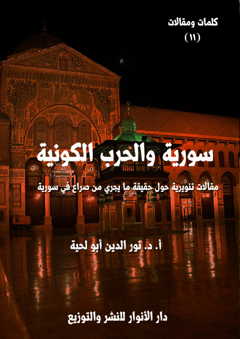

الكتاب: سورية والحرب الكونية
المؤلف: أ.د. نور الدين أبو لحية
الناشر: مؤسسة العرفان للثقافة الإسلامية
الطبعة: الأولى، 1439 هـ
عدد الصفحات: 345
ISBN: 978-620-3-85916-4
لمطالعة الكتاب من تطبيق مؤلفاتي المجاني وهو أحسن وأيسر: هنا

التعريف بالكتاب
هذه مجموعة مقالات تنويرية تحاول أن تخاطب الضمائر التي لا تزال فيها بعض الحياة، لعلها تستوعب حقيقة ما جرى لسورية من أنواع العدوان الآثم، والذي استخدمت فيه كل ألوان الظلم والجور والكراهية.
وقد التقى في هذه الحرب كل الحاقدين والانتهازيين من رجال السياسة والدين والإعلام، وضخت لأجلها آلاف الأطنان من الأسلحة الفتاكة بمختلف أنواعها، واستقدم لها كل مرتزقة الحروب من أصحاب العقول المعطلة، والتدين المزيف.
لذلك لم يحصل في التاريخ أن توفر لأي دولة مثل هذا العدوان، الذي يمكن اعتباره [حربا كونية] حقيقة لا مجازا.. لأن المحاربين لسورية لم يستخدموا فقط تلك الأسلحة التقليدية المعتادة، وإنما استخدموا فيها الدين المزيف، والعقل المعطل، والإعلام المغرض.
وبناء على هذا، حاولنا في هذه المقالات أن نجمع الأطروحات المختلفة التي نشرت الفتنة بسببها على سورية، وبينا حقيقتها، وحقيقة ما جرى بالضبط.
وقد حاولنا تبسيطها واختصارها قدر الإمكان، لأن الهدف المرجو منها ليس أن تبقى بين يدي خاصة الناس، وإنما أن تصير بين يدي عامتهم، وخاصة أولئك الذين ضللهم الإعلام الحاقد، والذين يحتاجون أن يسمعوا الحقائق بطريقة تتناسب معهم، ومع الحقيقة نفسها.
سورية والحرب الكونية (8)
إلى سورية الجريحة قلب العروبة النابض..
لقد تألمت كثيرا لذلك العدوان الذي أصابك، وتألمت أكثر لأولئك الذين غدروا بك على الرغم من أنهم أبناء جلدتك، وينطقون بلغتك.
ولو كان لي قدرة أن أفعل أي شيء لأجلك لفعلته، ولكني لا أملك سوى قلمي ولساني لأذب عن عرضك وشرفك ونخوتك وكرامتك.. ولو كان لي شيء غيرهما لقدمته.. فاعذريني، واعذري كل حر أبي قعدت به الأيام دون نصرتك.
فيعلم الله أنك في قلوبنا، وأننا نتألم لكل قطرة دم شهيد تسيل على أرضك، ونمتلئ غيظا من أولئك الحمقى المغفلين الذين يخربون بيوتهم بأيديهم، ويبيعون أوطانهم لعدوهم..
ولكنا مع ذلك لا نملك إلا أقلامنا وألسنتنا.. فاعذرينا.. وتقبلي مني هذه القطرات من المداد، وإن شئت بدلها دماء، فدماؤنا رخيصة في سبيلك.
سورية والحرب الكونية (9)
هذه مجموعة مقالات تنويرية تحاول أن تخاطب الضمائر التي لا تزال فيها بعض الحياة، لعلها تستوعب حقيقة ما جرى لسورية من أنواع العدوان الآثم، والذي استخدمت فيه كل ألوان الظلم والجور والكراهية.
وقد التقى في هذه الحرب كل الحاقدين والانتهازين من رجال السياسة والدين والإعلام، وضخت لأجلها آلاف الأطنان من الأسلحة الفتاكة بمختلف أنواعها، واستقدم لها كل مرتزقة الحروب من أصحاب العقول المعطلة والتدين المزيف.
لذلك لم يحصل في التاريخ أن توفر لأي دولة مثل هذا العدوان، الذي يمكن اعتباره [حربا كونية] حقيقة لا مجازا.. لأن المحاربين لسورية لم يستخدموا فقط تلك الأسلحة التقليدية المعتادة، وإنما استخدموا فيها الدين المزيف، والعقل المعطل، والإعلام المغرض.
لذلك كانت الكتابة التنويرية نوعا من أنواع المواجهة لتلك الحرب، فهي قد بدأت ثقافية قبل أن تصبح عسكرية، وهي قد وفرت القابلية للحرب الناعمة قبل أن تمارسها، وقبل أن تحولها إلى حرب صلبة.
وبناء على هذا، حاولنا في هذه المقالات أن نجمع الأطروحات المختلفة التي نشرت الفتنة بسببها على سورية، وبينا حقيقتها، وحقيقة ما جرى بالضبط.
وقد حاولنا تبسيطها الاختصار فيها قدر الإمكان، لأن الهدف المرجو منها ليس أن تبقى بين يدي خاصة الناس، وإنما أن تصير بين يدي عامتهم، وخاصة أولئك الذين ضللهم الإعلام الحاقد، والذين يحتاجون أن يسمعوا الحقائق بطريقة تتناسب معهم، ومع الحقيقة نفسها.
وأحب أن أجيب أولئك الذين سألوني ـ عند نشري لهذه المقالات ـ عن سر تخصيصي لهذا الوقت بالضبط دون غيره لنشر هذا الكتاب، بأنني كتبت قبل هذه الفترة المقالات الكثيرة، والتي نشرتها في الصحف والكتب المختلفة، بل إن الكثير مما كتبته في سلسلة [الدين والدجل]
سورية والحرب الكونية (10)
كان في الرد على المنظومة الفكرية التي تبنت الحرب على سورية، وعلى مثلها من البلاد العربية والإسلامية.
أما دفاعي عنها في هذه الفترة بالضبط، وخروجي عن التلميح في نواح كثيرة إلى التصريح، فالفضل فيه يعود لذلك الاعتداء الثلاثي الأمريكي والبريطاني والفرنسي، وقبله الاعتداء الإسرائيلي، من دون أن أرى أي تنديد لا عربي، ولا إسلامي، ما عدا بعض الدول القليلة المحدودة، والتي تلقى من الحرب ما تلقاه سورية نفسها.
بل إن بعض الدول العربية راحت تعلن تأييدها وتطالب بالمزيد من الاعتداءات.. وعندما اجتمعت الدول العربية في قمة الظهران لم تتحدث عن تلك الاعتداءات، بل راحت تقرها وتؤكدها وتدعو لنظائر لها.
وعندما رحت لمواقع العلماء والمتنورين منهم خصوصا وجدتهم لا يعطون الأمر أي قيمة، بل وجدت منهم من حزن، لا للاعتداء، وإنما لعدم استمراره وتحقيقه لأغراضه.
حينها رحت أعاتب نفسي، بل أوبخها.. لأني صرت مثل كل أولئك الساكتين الذين آثروا الحياد.. والحياد في أمثال هذه المواقف خيانة وجريمة.
لقد عرفت أن الله تعالى اختبرنا بتلك الاعتداءات، وهل نسكت، أم نجامل، أم نهادن أولئك الأصدقاء الذين لا يحترموننا إلا إذا جاملناهم، وفكرنا بالطريقة التي يفكرون بها، ووقفنا المواقف التي يقفونها.
لقد صرت بين أمرين: إما أن أؤثر مرضاة الله بمناصرة سورية الجريحة التي تئن من كثرة أعدائها، أو أولئك الذين يثنون علينا، ويذكرون أنهم يستفيدون منا، ولكنهم في نفس الوقت يريدون منا أن نكون عبيدا لمواقفهم وأفكارهم.. لذلك آثرنا أن نجهر بالحقيقة تصريحا بعد أن كنا نجهر بها تلميحا.
ولذلك حيينا الرئيس السوري والجيش السوري وكل الذين وقفوا مع سورية، لأن
سورية والحرب الكونية (11)
الوقت الآن وقت تُحفظ فيه الوحدة، ويُحفظ فيه الأمن القومي، ولا يجوز فيه قلب الأوراق التي تثير الفتنة وتطمع الأعداء.
ومثل ذلك شددنا الحملة على أولئك الذين يتاجرون بالدين، ويستعملونه مطية لضرب الأمة، وإعطائها لقمة سائغة لأعدائها.
لقد كانت صواريخ ترامب دفعة قوية لنا لنرسل أمثالها من الصواريخ التي تضاد كل فكر يحارب الأمة، ويهدد وحدتها.. فقد ظهر الصباح، وبان لذي عينين، ومن آثر أن يظل أعمى، فليبق أعمى.
وأحب أن أوجه نصيحة لكل أولئك الذين آثروا الحياد والعافية والحرص على السمعة الطيبة بأنهم في موقف مفصلي؛ ذلك أن من سمع بتكالب الغرب على سوريا وضربهم لها، ولم يتحرك له جفن، أو يتأثر، فهو إما ميت أو عميل..
ومن لم يقف مع إخوانه في سورية هذه الايام لينتصر لهم، ويتألم لآلامهم، فقد باع نفسه للشياطين.
ومن لم يستفق لحقيقة ما يجري، وهو يرى المعارضة السورية العميلة تفرح بالضربة الثلاثية لبلدها، بل تتألم لأنها لم تحقق أهدافها فلن يستفيق أبدا.
ومن لم يفطن للجزيرة والعربية وغيرهما من قنوات الفتنة حين يرى تغطيتها للاحداث الجارية وتشجيعها لترامب ولكل المجرمين على ضرب سورية، فسيبقى عقله دائما موضعا لقمامتها.
ومن لم يميز بين العلماء العاملين الصادقين في هذه الفترة التي يضرب فيها قلب العروبة الاسلام، فلن يميز بينهم أبدا.
ومن لم يعجبه هذا الحديث.. واراد مني ان اتركه حتى احافظ على صداقتي معه فهو لا يعرفني وأنا لا حاجة لي بصداقته ولا صداقة اي احمق أو مغفل، وأقول لهم ما قال الشاعر:
إني لآمن من عدو عاقل... وأخاف خلا يعتريه جنون
فالعقل فن واحد وطريقه... أدرى فأرصد والجنون فنون
وقول الإمام علي:
فلا تصحب أخا الجهل وإياك وإياه... فكم من جاهل أردى حليما حين آخاه
يقاس المرء بالمرء إذا ما المرء ما شاه... وللشيء من الشيء مقاييس وأشباه
-\--\-
وبناء على طبيعة هذه المقالات والأغراض التي تهدف إليها، فقد قسمتها إلى ثلاثة أقسام على الرغم من كونها متداخلة فيما بينها، لأن الهدف منها جمياع هو التنوير، وذكر الحقائق كما هي، وهذه الأقسام هي:
القسم الأول ـ ما الذي يحدث في سورية: وقد حاولت أن أوضح فيه حقيقة ما يجري فيه سورية، وكونه مؤامرة خارجية تهدف إلى تمزيق سورية وتقزيمها وإخراجها من محورها المقاوم، حتى يتاح المجال لأعدائها للتحكم في قضايا الأمة المصيرية.
القسم الثاني ـ سورية والحرب الدينية: وقد رددت فيه على تلك الطروحات التي لبست لباس الدين المزيف، لتوفر القابلية للشعوب الإسلامية للحرب الناعمة، وما يعقبها من الحرب الصلبة والقذرة والكونية.
القسم الثالث ـ سورية والمواجهة الشريفة: وقد ذكرت فيه بعض النماذج عن الشرفاء الذين كان لهم الدور الكبير في حماية سورية، ومواجهة المشاريع الظلامية التي استهدفتها.
سورية والحرب الكونية (13)
أيها المتاجرون بالدم السوري، والمتلاعبون به.. يا من تعيشون في بلادكم سالمين، تطبقون كل القوانين، وتنحنون أمام كل رجل أمن، وترتعد فرائصكم عند كل دعوة تأتيكم من مركز شرطة، ولا تستطيعون أن تنبزوا ببنت شفة أمام أحقر مسؤول.
لكنكم، ومع كل ذلك الجبن الذي تبدون عليه، تتحولون أسودا وصقورا تمدون الشعب السوري المسكين بالمواعظ والنصائح، وتطالبوه وحده في العالم أجمع بأن يتمرد على حكامه ونظامه ومسؤوليه، وإلا فهو شبيحة ورافضي ومجوسي وكافر.
وأنتم تعلمون جيدا أن الشعب السوري قبل أن تزجوا به في تلك المتاهة كانت له بيوت يأوي إليها، ولا أحد يطالبه بالخروج منها.. وكانت له مدارس مجانية يدرس فيها أولاده، بل يدرس فيها جميع الشعب السوري فقيرهم وغنيهم.. وكانت له مؤسسات جامعية لا تفرق بين الطوائف، ولا بين الأعراق، بل يدرس فيها كل من يحمل عرقا سوريا، وهوية سورية.
وكان في سورية مساجد لا تقل عن المساجد التي تصلون فيها.. وكان فيها أئمة فحول، وخطباء فصحاء، وكانت هي الأخرى تقوم بدورها التنويري والتربوي، تعلم القرآن لا التوراة ولا الإنجيل.. وتدرس فيها المذاهب الفقهية التي تؤمنون بها وتقلدونها، ولا تدرس شيئا
سورية والحرب الكونية (14)
آخر..
ولم يكن أحد يمنعها من ذلك.. بل كان المشايخ والعلماء يتجولون فيها لينشروا الهداية الإلهية، ويربوا الناس عليها، وكان الناس يجلسون إليها، ولا أحد يمنعهم من الصلاة أو الاستماع أو ممارسة أي شعيرة من شعائر الدين.
وكان في سورية مصانع يعمل فيها مئات آلاف السوريين، وكانت فيها حقول بترول لا يملكها لا الرئيس ولا وزراؤه، بل كانت ملكا للدولة أجمع..
وكانت البلاد ـ بحجم الإمكانيات المتاحة لها ـ تتطور كل حين، فهناك جسور تمد، وطرق تعبد، ومدن تؤسس، وكان الجميع يتحرك بكل حرية لخدمة بلده.
كان كل هذا في سورية، وكان يمكن للجميع أن يشاهده، فقد كانت مفتوحة لكل العالم، وخاصة العربي منه، وقد ذهب الكثير منكم إليها، وتعلم من علمائها، ونال من شهاداتها.
لكنكم بعد ذلك كله رحتم تزعمون أن الرئيس السوري هو ذلك الدكتاتور الوحيد في العالم الذي ينبغي على رعيته أن تتمرد عليه حتى لو اقتضى الأمر أن يباد أكثرها..
ثم رحتم ترفعون شعارات سقوط النظام السوري، لا إصلاحه.. وفي سبيل هذا الشعار رحتم إلى المؤسسات تحرضون على احتلالها، وإلى المزراع تحرضون على تخريبها، وإلى المصانع تسلمونها مجانا إلى تركيا، وإلى البترول تسلمونه مجانا لأمريكا.
بأي منطق تفكرون.. أنتم تطالبون برحيل الرئيس السوري.. لا بأس.. لقد رحل الرئيس الليبي، بل قتلتموه بعد أن شحنتم قلوب الليبيين حقدا عليه.. فهل نجحتم في ليبيا بعد أن قتلتم رئيسها، أم أن ليبيا الآن دولة فاشلة بكل المقاييس، وهي عرضة لكل أنواع التقسيم، وأموالها نهبة لكل قطاع الطرق؟
وهل نجحتم في أي أرض دعوتم إلى التمرد فيها؟.. ها قد استلمتم تونس أشهرا معدودات، أرسلتم فيها خيرة شبابكم ليقاتل في سورية.. فماذا فعلتم؟.. لقد طُردتم من الحكم
سورية والحرب الكونية (15)
شر طردة، وستلقون في مستقبل أيامكم ما هو أبشع مما حصل لكم.
وهل نجحتم في مصر التي انتفضت عليكم قبل أن يمر عام واحد على حكمكم لها، لأن التهور والطيش والغرور كان مسيطرا عليكم.. وبدل أن تستغلوا تلك الفترة التي أتيحث لكم في خدمة إخوانكم في سورية، وإعادتها إلى حضن وطنها العربي، رحتم تدعون إلى المزيد من التمرد فيها، بل رحتم تعلنون النفير العام، وتطالبون الجيوش بأن تتحرك لإبادة ما بقي من الشعب السوري.
أنتم مجرمون بكل المقاييس.. وكل طفل قتل.. وكل بيت هدم.. وكل مصنع سرق.. وكل قطرة بترول أخذتها أمريكا أو تركيا أنتم مسؤولون عنها يوم القيامة.. وسيسجلكم التاريخ مع كل الظالمين الذين لم يقدموا في دنياهم سوى الخراب والظلم والدمار.
سورية والحرب الكونية (16)
لقد شاء الله تعالى أن يجعل سورية والأحداث الكثيرة المرتبطة بها مدرسة لتمييز الخبيث من الطبيب، ورفع كل أقنعة الدجل والنفاق التي لبسها القوميون والإسلاميون والتقدميون والرجعيون والمتنورون والظلاميون.. كلهم ظهر بصورته الحقيقية التي كان يستعمل كل الوسائل لإخفائها.
أما القوميون الذين كانوا يصيحون كل حين بأنهم عرب، وأصحاب شهامة ونخوة، وأن لهم بحكم عربيتهم السلطة والسطوة، فقد فضحتهم سورية العروبة، حين تركوها لأعدائها، بل طعنوها في ظهرها، بل راحوا يجلبون لها كل مرتزقة الأرض ليدمروها، في نفس الوقت الذي باعوا فيه فلسطين بأثمان بخسة، وتركوها للحصار والجوع، بل رموا مقاومتها بالإرهاب والعنف لسبب بسيط، وهو كونها لم تصافح أمريكا ولا إسرائيل.
سورية والحرب الكونية (17)
أما الإسلاميون، فقد راحوا يتخلون عن كل مشاريعهم التي كانوا يكذبون بها على أنفسهم وعلى الناس، ليضعوا لهم مشروعا واحدا هو إسقاط الرئيس السوري البطل [بشار الأسد]، باعتباره الدكتاتور الوحيد في العالم، أما أولئك الملوك الذين يعبثون بتريلونات الدولارات، ويرمونهم بالإرهاب؛ فقد غضوا الطرف عنهم، وكأنهم أنبياء معصومون، أو أولياء محفوظون.
ولم تكتف سورية بفضحهم في هذا الجانب فقط، بل فضحتهم في مواقفهم من أمريكا وإسرائيل، وقد سمع الناس جميعا شيخهم الكبير كيف يتسول لأمريكا بأن تضرب سورية، ويخبرها بأنهم لن يفعلوا شيئا لإسرائيل.. ولمن شك في ذلك، فليذهب إلى قنوات الفتنة التي يديرها هؤلاء المرتزقة باسم الإسلام ليروا مقدار فرحتهم عند كل ضربة توجهها أمريكا أو إسرائيل لسورية، وكأنها ليست بلادا للإسلام، أو حاضرة كبرى من حواضره.
أما الغرب الكاذب المخادع الذي صدع التنويريون رؤوسنا بعدله ونظامه، فقد فضحته سورية وأزالت عنه كل أقنعة الدجل.. فهو يغض طرفه عن اليمن والجرائم التي تحدث فيها كل يوم، ثم يولي طرفه لسورية وللمسرحيات التي تعقد فيها كل حين، ثم يسارع إلى استعمال قوته من غير تحقيق ولا دراسة ولا رجوع للهيئات العالمية التي يكذب علينا كل حين باعتبارها شرعية دولية.
وحتى عوام الناس البسطاء البلهاء، فضحتهم سورية، فهم يتباكون على أي مكروه يحصل لأي فرد من جيشهم، ويقيمون الحداد عليه إذا أصابه أي مكروه، لكنهم في نفس الوقت، ونتيجة امتلائهم بما تمليه قنوات الفتنة ومشايخ الدجل، يفرحون لكل جندي سوري يقتل، متناسين أن ذلك البطل لم يفعل إلا ما يفعله كل جندي في الأرض من الدفاع عن وطنه، ومواجهة المشاريع التي تريد استعماره.
ولهذا كما نتألم لكل ما يحصل في سورية من مآس وآلام، نشكرها على أنها ميزت العقلاء
سورية والحرب الكونية (18)
من المغفلين، والمخادعين من الصادقين، والطيبين من الخبثاء، والرجال من أشباه الرجال.
فلا يقف مع سورية وجيشها البطل إلا الرجال، ولا يقف مع أعدائها إلا أشباه الرجال، أولئك الذين باعوا أنفسهم للشيطان الأكبر والصهيونية العالمية والرجعية العربية، وجعلوا من عقولهم مزابل لكل ما تمليه قنوات الفتنة والتحريض والتضليل.
سورية والحرب الكونية (19)
يتصور الكثير أن ما حصل في سورية ربيع عربي، وثورة تطالب بالحرية والديمقراطية وحقوق الإنسان، وغير تلك الألفاظ والمصطلحات التي ضحك بها الإعلام المغرض على الذقون.
والحقيقة غير ذلك تماما، بل يستحيل أن تكون كذلك، فسورية كانت متطورة جدا في هذه المجالات، ولا يمكن مقارنتها بأكثر الدول العربية، وخصوصا تلك الممالك البترولية التي لا تعرف أبسط المبادئ الإنسانية، بل لا يزال يعيش ملوكها بمنطق شيخ القبيلة، أما شعوبها المسكينة فهي مطحونة، ومغيبة عن كل ما يجري على أرضها، لا تفعل سواء البكاء على ثرواتها التي تهدر، وأرزاقها التي يُتلاعب بها.
ولذلك فإن الذي يريد أن يعرف حقيقة المؤامرة التي ركبت لسورية، فعليه أن يراجع الواقع والتاريخ ليكتشف أن هناك سببين فقط لكل ما حصل:
أولهما وقوف سورية الواضح والصريح مع المقاومة بكل أنواعها، ومقاومتها للتطبيبع بكل أشكاله، وفوق ذلك احتضانها للمقاومة الفلسطينية، وخصوصا حماس والجهاد
سورية والحرب الكونية (20)
الإسلامي، واللذين يعتبران إرهابيين عند أولئك الذين أعلنوا الحرب على سورية.. فلولا سورية ودعمها لتلك الفصائل الفلسطينية لم تكن هناك مقاومة فلسطنية، ولم تكن هناك حماس ولا غيرها، وهذا ما أثار غيظهم، في مقابل رضاهم المطلق على الأردن بحكم تطبيعها مع إسرائيل، وعدم مساندتها للمقاومة.
والثاني عدم مساندتها للمؤامرات المحاكة ضد إيران ابتداء من الحرب العراقية الإيرانية، والتي خطط لها العرب بغية القضاء على الجمهورية الإسلامية الإيرانية في مهدها.. لكن سورية وقفت ضدهم في ذلك؛ فآلمهم ذلك.. وصاروا يستهدفونها كل حين إلى أن جاء الوقت الذي صبوا فيه جام غضبهم عليها.
ومنطق سورية الذي جعلها لا تعلن الحرب معهم على إيران منطقي وأخلاقي وشرعي.. فهو ينطلق من كون إيران الجديدة ذات التوجه الإسلامي تقف مع القضية الفلسطينية، وسورية مع كل من يقف مع هذه القضية..
هذان السببان ليسا من اختراعي؛ فقد صرح كبار ملوك وأمراء السعودية والخليج بذلك، وتصريحاتهم موجودة على النت.. فقد أعلنوا جميعا أن سورية لو تركت إيران؛ فستتوقف الحرب، وتعود الأوضاع إلى ما كانت عليه.. ولذلك هم لا يريدون من سورية إلا أن تكون فنادق لأهوائهم، وأهواء أعداء الأمة، أما تحولها إلى دولة ذات سيادة فهو ما يزعجهم، لأنه قد يصبح في يوم من الأيام أداة لقلع عروشهم.
سورية والحرب الكونية (21)
كما نعرف جميعا، فإن البوصلة التي لا يمكن الاستغناء عنها أبدا في معرفة الاتجاهات، ليست قادرة في ذاتها على تحديد كل الاتجاهات، بل لها القدرة فقط على الإشارة إلى الاتجاه الشمالي للأرض.. ومن خلال ذلك الاتجاه يستطيع الملاحون وغيرهم التعرف على سائر الاتجاهات، وبدقة عالية جدا.
وهكذا الأمر بالنسبة لأمريكا التي يمكن اعتبارها بوصلة للشر، فحيث حلت أو رحلت كان الشر معها مصاحبا وملازما ورفيقا.
ولذلك كان على الذي أعجزه عقله عن تحديد الموقف المناسب في أي قضية وقع فيها الخلاف أن يرجع للموقف الأمريكي، ومن خلاله يبني موقفه.. وليس عليه أن يستثني، فقد يكون ذلك الاستثناء مصيدة للوقوع في حبال شرها.. والذي يستثني في مثل هذا يكون كالذي يتصور أن الشيطان يمكن أن يأمره بالخير، ولأجل الخير.. وليست أمريكا سوى شيطان من الشياطين.. بل شيطان الأكبر.
لكن الإسلاميين الذين يفعّلون عقولهم متى شاءوا ويعطّلونها متى شاءوا راحوا يقعون
سورية والحرب الكونية (22)
في فخاخ كيدها؛ فبعد أن كانوا ينادون كل حين بمقاطعة البضائع الأمريكية نتيجة موقفها الداعم والمؤيد للكيان الصهيوني، بالإضافة إلى جرائمها الكثيرة في أفغانستان والصومال والعراق وغيرها من بلاد العالم الإسلامي، توهموا فجأة، ومن غير مقدمات أن البوصلة الأمريكية لم تعد بوصلة شريرة عندما تعاملت مع سورية بمنطق العدوانية والحرب والكراهية، واستعملت كل الوسائل لتركيعها؛ وعندما وجدت نفسها عاجزة، راحت لآبار بترولها تستولي عليها لتذيق الشعب السوري الجوع بعد أن لم تستطع أن تتحكم فيه كما تحكمت في سائر الشعوب.
ولم يكتف الإسلاميون بذلك التوهم، بل راحوا يؤيدون أمريكا في ضرباتها المختلفة على المراكز السورية الحساسة، بل كانوا يطلبون منها أن تمارس قتلا أكثر، ودمارا أكثر..
ولم يكتفوا بذلك أيضا، بل راحوا يمدون أيديهم إليها لتعطيهم أصناف الأسلحة ليجهزوا بها على دولتهم وإخوانهم ومؤسساتهم.
ولن ننسى أبدا تلك الخطبة التي لم يقع مثلها في التاريخ الإسلامي جميعا عندما راح القرضاوي شيخ الفتنة ودجالها يرفع أيادي الشكر والامتنان لأمريكا لأنها أمدت زعماء العصابات السورية بالمال والسلاح، ويطلب منها أن تقف وقفة لله، وتزيد في الدعم والمساندة، ليدعو الله لها أكثر.
ولن ننسى أيضا تلك المواقف المخزية التي جلسها الإخوان المسلمون في مصر، أو الاتجاه الإسلامي في تونس مع الشخصيات الأمريكية الكبرى، محاولين التقرب منها، لتحسين صورتهم وتلميعها، متصورين أن أمريكا هي التي تعز من تشاء وتذل من تشاء، وتهب الملك لمن تشاء، وتنزعه ممن تشاء.
ولن ننسى أيضا مواقف السلفية من أمريكا ومساندتهم لها ظاهرا وباطنا، حتى أن الشيخ عبدالرحمن السديس إمام الحرم المكّي وصف الرئيس الأميركي المجرم [دونالد ترامب]
سورية والحرب الكونية (23)
بأنه يقود العالم والإنسانية إلى مرافئ الأمن والسلام والاستقرار والرخاء، ودعا له بأن يسدّد الله خطاه ويبارك جهوده (1).
متناسيا أن ترامب هو الذي قال ـ وفي مناسبات مختلفة ـ عن السعودية: (علينا حلب المملكة السعودية السمينة قدر الإمكان، وحين يصبح المشايخ الأثرياء عديمي الفائدة، يتوجب علينا مغادرة الشرق الأوسط)، وقوله: (السعودية ستكون في ورطة كبيرة، وستحتاج لمساعدتنا.. ولولانا لما وجدت، وما كان لها أن تبقى)
ولم تكن تلك مجرد كلمات؛ فالخزائن الأمريكية تستحوذ على ترليونات الدولارات السعودية، والتي كان في إمكانها ـ لو استثمرت في البلاد العربية ـ أن تجعل منها مراكز اقتصادية كبرى، وتجعل من السعودية رأس تلك المراكز وقطب رحاها.. ولما استطاع الأمريكي وبالقوانين المختلفة أن يهدد بأخذها جميعا.
لكن السديس وغيره من السلفيين والإسلاميين لا ينظرون لهذا، ولا ينظرون لتلك المئات من المليارات من الدولات التي توضع كل حين في الخزائن الأمريكية، ومع ذلك يظل اللص الأمريكي جائعا ومطالبا بالمزيد.
ومثل ذلك ينسى الإخوان المسلمون المسبحون بحمد قطر أن أكبر قاعدة أمريكية موجودة بالعالم هي قاعدة العديد الجوية، والتي انطلق منها العدوان الأمريكي على العراق وأفغانستان وسورية، وكل بلد يريد أن يخرج عن العباءة الأمريكية.
ومثل ذلك يتناسون أن الأسطول الأمريكي الخامس الموجود على سواحل البحرين هو الذي يستحوذ عليها وعلى قراراتها، ويتصورون أن التهديد الموجه للبحرين تهديد إيراني لا أمريكي، وأن دور الأسطول الأمريكي هو حماية البحرين، وقمع شعبها المظلوم.
ومثل ذلك يتناسون أن الشعب اليمني المظلوم الذي دمرت مؤسساته، وهدمت بيوته،
__________
(1) وذكر أن السعودية والملك سلمان ووليّ العهد محمّد بن سلمان مشاركان مع ترامب في خدمة الإنسانية.
سورية والحرب الكونية (24)
وفتكت به الأمراض، لا يضرب إلا بتلك الأسلحة الأمريكية التي زود بها ذلك التحالف العربي المشؤوم بقيادة السعودية.
ومع كل هذا نسمع أولئك المغفلين الذين يتصورون أنفسهم محللين استراتيجيين فوق العادة، يذكرون عكس ذلك تماما، فليست أمريكا عندهم صديقة للسعودية، ولا للقطر، ولا للبحرين.. وإنما هي صديقة لإيران.. ويذكرون أن إيران المجوسية الصفوية هي التي تتفق مع أمريكا ـ تحت الطاولة ومن وراء الكواليس ـ لضرب أهل السنة وتحويلهم إلى بقرة حلوب يشربون حلبيها، فإذا جف ذبحوه.
ولست أدري من أين لهم كل هذه العقول الجبارة التي تقرأ الأحداث على عكس مساراتها، وعلى عكس ما يظهر منها.. فهل إيران تلك المسكينة المظلومة تلك التي حوربت ثمان سنوات كاملة من أمريكا وداعميها العرب حليفة لأمريكا؟.. وهل كل تلك المقاطعات الاقتصادية والحصار الدائم لها مجرد لعب وضحك وسخرية؟.. وهل كل تلك التهديدات مجرد مدح وثناء مغلف في قوالب تهديد وسباب؟.. وهل صياح الإيرانيين كل حين بالموت لأمريكا، واعتبارها شيطانا أكبر مجرد مزاح ونكتة؟
لا أدري كيف يفكر هؤلاء، ولا كيف يضعون المقدمات، أو يستنتجون النتائج.. فهم يصورون سيناريوهات ممتلئة بالغرابة والعجب، فيذكرون أن الغرب ومن ورائه أمريكا قدم بالإمام الخميني ليستعمله لإبادة السنة.. والدليل الوحيد الذي يملكونه لذلك كله هو أن الخميني قدم إلى طهران في طائرة فرنسية، ولست أدري ما الضرر في ذلك، وهل كان عليه أن يأتي على ظهر بعير عربي، أو حمار خليجي؟
وهم يقولون ذلك متناسين أنه لا توجد علاقات بين أمريكا وإيران، ولا توجد سفارة، وأن أول ما فعله الخميني بعد أن مكن الله له في الأرض أن عوض السفارة الإسرائيلية بالسفارة الفلسطينية، ووقف موقف مشرفا جدا مع محتجزي الأمريكيين على الرغم من خطورة ذلك..
سورية والحرب الكونية (25)
وبقي الأمر مدة طويلة، وبقيت إيران الجديدة تهدد كل حين بسبب ذلك.. ومع ذلك يتصور أولئك المغفلون من الإسلاميين أن كل ذلك مجرد تمثيلية.
وكل هذا كان سبب كل فشل يقعون فيه.. فالإسلاميون لا يخطئون فقط في ممارساتهم الدعوية، ولا سلوكاتهم السياسية، بل يخطئون أيضا في أبسط تحليلاتهم.. لأنهم ينطلقون من الأهواء، والتفكير الرغبوي الذي لا حظ له من عقل أو دين.
سورية والحرب الكونية (26)
إن أي عاقل ينظر إلى النظام السوري، وكيف أدار المحنة التي ألمت به منذ سنوات طويلة، يمتلئ بالعجب، خاصة إذا قارناه بتلك الأنظمة الهشة التي تسقط سقوطا حرا بمجرد حوادث بسيطة، أو تنقلب رأسا على عقب عن كل ما كانت تؤمن به أو تمارسه.
على عكس النظام السوري، الذي مهما اختلفنا معه، فلن نختلف أبدا في كونه نظاما متماسكا محكما قويا، لدرجة أن كل قوى الشر اجتمعت عليه، ولم يتأثر، ولم يتزحزح عن مبادئه قيد أنملة، بخلاف خصومه من المعارضة أو من الدول التي تمونها، والذين يغيرون آراءهم كل حين.
وهذا ما يدعونا إلى التساؤل عن سر قوة هذا النظام، للتعرف على الحقيقة ـ أولا ـ بكل موضوعية ومصداقية، ولنسمي الأشياء ـ ثانيا ـ بأسمائها الحقيقية، لا بأسمائها المزورة، ولنعتبر ـ ثالثا ـ من كل ذلك حتى نؤسس في بلادنا لأنظمة قوية، ليست لها القابلية للاستعمار بكل أنواعه.
سورية والحرب الكونية (27)
ومن خلال استقراء الواقع السوري في هذه الفترة، نجد أربع نواح كان لها دورها الكبير في تماسك النظام وقوته:
أولا ـ مصداقية النظام في طروحاته: فالنظام السوري قبل المحنة وبعدها كان صادقا مع شعبه، وقد وفر له كل ما يمكنه من خدمات بحدود الإمكانيات المتاحة له.. وكان قبل ذلك قد وفر لطبقة كبيرة من شعبه ـ إلا من شذ منهم ـ من الوعي الصحيح ما جعلهم يفطنون للحرب الناعمة التي دبرت لهم.
ولهذا لم تبدأ المظاهرات إلا في تلك المناطق التي كان لها بعض الولاء لدول الخليج أو كان لها علاقة بالحركات الإسلامية.. أما المناطق الكبرى كدمشق وحلب وغيرهما، فقد كانت حاضنة قوية للنظام.. ولذلك ساهمت مساهمة كبيرة في الحفاظ عليه، واستمراريته.
بالإضافة إلى ذلك، فإن النظام السوري، ومع أول بوادر المحنة كان قد دعا إلى الجلوس إلى طاولة الحوار، بل فعل ذلك، وغير بعض المواد الدستورية التي كانت تشكل عقبة عند دعاة الفتنة، وأصبح الدستور بعدها دستورا يحمل كل مضامين العدالة التي لن تجد المعارضة أفضل منها.
لكنها لم تقبل به، لا لكونه لا يخدم مصالحها، وإنما لأن الجهات التي تمونها، والتي لم تكن تملك دساتير أصلا كانت هي المحرك لها، والذي يدعوها إلى عدم قبول أي حوار مع النظام.
وهذا ما أعطى قوة أخرى للنظام السوري، فالقوي هو الذي يدعو إلى الحوار، ويتحدث بلغة المنطق والعلم والعقلانية، بينما العاجز هو الذي لا يعرف إلا لغة الهجر والسب والشتم والقطيعة.
ولهذا تمكن النظام السوري من رمي الكرة في ملعب خصومه كما يقال، بتلك الخطابات الهادئة العقلانية التي يدعوهم فيها كل حين إلى خلع عباءة الغرب والتدخل الخارجي، والتحول إلى معارضة وطنية داخلية، لا تستمد شرعيتها إلا من شعبها.
سورية والحرب الكونية (28)
بل إنه فوق ذلك، وفي ظل المحن الكثيرة التي مر بها، أجرى مجموعة انتخابات برلمانية ورئاسية، وطالب الهيئات الدولية بالحضور والمراقبة، وطالب المعارضة بالمشاركة مع أن أي دولة في ظل هذه الظروف تحكّم قوانين الطوارئ المشددة، ولا تدع شعبها يقوم بأي حركة، لأن الأمن القومي أهم من الحرية، ومن كل شيء.
وفوق ذلك كان يدعو المتظاهرين إلى إجراء انتخابات حرة ونزيهة، وتحت إشراف دولي، يضعون فيها أسماءهم، ويضع فيها الرئيس السوري اسمه، ويُترك الخيار بعدها للشعب، لكن المعارضة كانت ترفض ذلك، بل كان رؤساء فرنسا وأمريكا وإسرائيل وأذنابهم من ملوك العرب، يرفضون ذلك، ويطلبون من الرئيس التنحي، وأن يخرج من اللعبة، وكأنهم يصادرون بذلك حرية الشعب السوري في اختيار من يشاء.
وفوق ذلك كله، فإن النظام السوري كان يدعو المغرر بهم من الذين حملوا السلاح، بأن يضعوا أسلحتهم، ويلتحقوا بشعبهم، وحياتهم العادية، من غير أن يحصل لهم شيء، أو يعاقبوا بأي عقوبة.
وهذا كله أعطى مصداقية لهذا النظام، لأن الحق أكبر من أن يقهره الباطل، والحجة أكبر من أن تردها الأوهام.
ثانيا ـ قوة الرجال الذين بني عليهم: فقوة الدولة بقوة رجالها ومؤسساتها، وقد عرف النظام السوري، ومنذ فترة طويلة كيف يختار رجاله الأكفاء في كل مؤسسة من المؤسسات، ولهذا لم نر انشقاقات مثل التي حصلت في لبيبا، فكل السفارات بقيت سورية الولاء، ومندوب الأمم المتحدة، كان هو البطل الذي استطع أن يقهر كل قوى العدوان على بلاده.. ووزير الخارجية كان أسدا في كل المحافل الدولية.
وهكذا استمرت الدولة على الرغم من الحصار الشديد، والحرب القاسية، والتشويه الإعلامي، والتحريض الدولي.. بل إن المحنة أخرجت لنا نماذج بشرية عالية الجودة، تحتاج إلى
سورية والحرب الكونية (29)
دراسة علمية متينة.
وأولهم الرئيس السوري نفسه، والذي ادعت المعارضة أنه هدفها الوحيد، مع أن الهدف الحقيقي هو أمن سورية ووحدتها وسيادتها، وجعلها ذيلا من ذيول الغرب، وحديقة خلفية لنزوات أمراء العرب الشاذة.
وقد كان الرئيس السوري في مقدمة الأبطال الذين ثبتوا على الرغم من كل التهديدات التي تعرض لها طيلة هذه الفترة، لكنه لم يرضخ للتهديدات وبقي مواطنا سوريا صلبا يدافع عن بلاده، ويتحاور مع الجهات المختلفة، بل يخرج إلى الثكنات والجبهات ليعطي المزيد من المعنويات لجيش بلاده.
وقد كان في إمكانه أن يحمل ما شاء من الأموال، ويهرب لأي بلد من بلاد العالم، ليعيش حياته الطبيعية، مثلما فعل الكثير من رؤساء العالم الذين حصل لهم بعض ما حصل له.
لكنه كان أسدا هصورا، لا يتزحزح، لأنه يعلم أنه إن فعل ذلك، فستنقسم بلاده، وسيهدد أمنها، وسيطمع فيها أعداؤها..
ثالثا ـ قوة التحالفات ومصداقيتها: فالنظام السوري منذ فترة طويلة كان يعي جيدا أن أمريكا شيطان أكبر، وأنها مجرد مقامر وتاجر، ولا تريد مصلحة الشعوب، لذلك نفر منها، ولم يقم أي تحالفات معها، على عكس ما فعلت دول الخليج التي تحولت إلى أبقار حلوبة، لا تسقي بحليبها شعبها، وإنما تسقي بها أفواه الأمريكيين والبريطانيين والفرنسيين، والتي لا تشبع أبدا.
وبدل تلك الوجهة تحالف مع جهات تحترم المستضعفين، وفي نفس الوقت لها عداء شديد مع أمريكا، ولذلك كان التحالف معها لا يخدمه فقط، وإنما يخدمها أيضا..
وقد كان على رأس تلك التحالفات روسيا وإيران.. فكلاهم مهددان من أمريكا، وكلاهما تعلن الحرب عليهما من طرفها، ولهذا كان استناده إليهما استنادا إلى ركن متين يؤمّن له المزيد من القوة، ويدعّمه بدعم سياسي يحميه في المحافل الدولية.
سورية والحرب الكونية (30)
وفوق ذلك أقام تحالفات قوية مع جبهات المقاومة اللبنانية والفلسطينية، وكل قوى التحرر، ولهذا كانت سنده المعنوي بل المادي عندما احتاج إلى ذلك.. بخلاف خصومه الذين كانت تحالفاتهم مع القاعدة والنصرة وداعش، والتي زادتهم تشويها على التشويه الذي كانوا عليه.
رابعا ـ ضعف خصومه وولاءاتهم المتعددة: وهذا من أكبر ما أعطى للنظام قوى مضاعفة، فخصومه لم يتفقوا في يوم من الأيام في أي مسألة من المسائل، ففيهم الليبراليون المتحررون، وفيهم المتدينون المتشددون، وفيهم من يريد أن يقيم علاقات مع إسرائيل، وفيهم من يريد أن تتحول بلاده إلى محافظة خليجية.. وهكذا كانوا مختلفين اختلافا شديدا.
وقد حاولت كل دولة أن تلم شتاتهم، فلم تستطع.. ولهذا لم يستطيعوا أن يسموا رئيسا واحدا يمثلهم، أو ينوب عن الرئيس السوري في حال اعتزاله.. ولم يستطيعوا أن يتفقوا على الدستور الذي يحكم البلد.. بل كانت الحرب بينهم شديدة جدا، حتى مع الفصائل المتقاربة نفسها.
ونحن نشاهد على القنوات الفضائية تلك الحروب الشديدة بين داعش والنصرة، أو بين جيش الإسلام وفيلق الرحمن، أو بين غيرها من الفصائل.. مع كونها جميعا ذات توجه إسلامي.
وهكذا كان الخلاف بين القوى السياسية التي يتهم بعضها بعضا بالعمالة.. مع أنهم جميعا عملاء، فكلهم يقبضون مرتباتهم من الدول التي تحركهم، والتي تحولوا بسببها إلى مجرد عرائيس قراقوز لا إنسانية لهم، ولا قيم تحكمهم.
سورية والحرب الكونية (31)
البترول السوري.. والأربعون لصأ
من الحكايات التي سيسجلها التاريخ بأقلام من دماء وألم حكاية البترول السوري، ذلك البترول الذي لم يكن يملكه الأمراء، ولا السلاطين، ولم يكن ريعه يخزن في بنوك أمريكا ولا سويسرا، وإنما كان مخصصا لأطفال سورية وشبابها وشعبها.. وكان وسيلة لسد سغب المحتاجين الذين يضعون كل قطرة منها في محلها المناسب.
وبعد أن رأى الأربعون لصا ذلك الشعب الهادئ الهانئ القانع بما آتاه الله من رزق، راحوا يتآمرون عليه، حتى لا يدعوا له شيئا مما أفاضه الله عليه من فضله.
ولم يكن دافع أولئك اللصوص الأربعون فقرا ولا حاجة حتى يدافع عنهم المحامون، أو يبرر لهم من تعودوا أن يبرروا الجرائم، ويجدوا المسالك لأصحابها، فقد كان الكل غنيا، بل كان الكل يملك من آبار البترول ومناجم الذهب وخزائن الأموال ما تتضاءل أمامه كنوز قارون وأمواله.
وكان على رأس أولئك المتآمرين اللص المسمى [الشيطان الأكبر] الذي لم يكن يرتاح لأي شعب أو سلطة لا تخضع لسيادته، أو ترسل له عرابين الولاء، ومعها الإتاوات وأنواع الجزية المشفوعة بالتقديس والتعظيم.
سورية والحرب الكونية (32)
ولذلك أمر كل زبانيته من اللصوص بأن يستعملوا كل الحيل لسرقة جميع آبار البترول السورية، وبشكل هادئ لا يثير غضب أي جهة من الجهات.
وقد كان من أولئك الزبانية بنو عمومة للشعب السوري، لم يراعوا حق قرابته ولا الرحم التي تصل بينه وبينهم، لأنهم سلموا أنفسهم للشيطان الأكبر، وراحوا يتآمرون معه على إخوانهم وبني عمومتهم.
ولذلك سرعان ما أذعنوا لما طلبه الشيطان الأكبر.. وما أسرع ما وجدوا الأدوات التي تنفذ لهم ما يريدون من لصوصية هادئة نظيفة لا تترك خلفها أي أثر.
وقد تمثلت تلك الأدوات في أولئك الرجال الذين يرتقون المنابر، ويصلون بالناس في المحاريب، لكن قلوبهم قلوب ذئاب، وعقولهم عقول عصافير.. ولا دين لهم إلا دين ملوكهم وسلاطينهم.
وقد راح هؤلاء الدجالون الذين يلبسون جلود الضأن وقلوبهم قلوب ذئاب، يستعملون كل ألوان الخدع والمكر لتوفير أكبر عدد من اللصوص وإرسالهم إلى أرض سورية، بحجة تطهيرها من الكفرة والزنادقة..
وكانت الهجمة ثقيلة على سورية وعلى آبار بترولها.. حيث استطاع اللصوص بعد جهد جهيد أن يصلوا إليها، ويمتلكوها.. وحينها راحوا يبحثون عمن يبيعون له ذلك البترول، وسرعان ما وجدوه في ذلك السلطان الذي يريد أن يحيي السلطنة باستبدادها وجبروتها وظلمها.. وهي تحتاج أموالا كثيرة.. ولذلك راح يشتري منهم ذلك البترول بأبخس الأثمان ليطعم شعبه المال الحرام، ويكتسب بسبب ذلك مدحهم وثناءهم، لأنه استطاع أن يخلصهم من أزمتهم الاقتصادية بانضمامه للصوص الأربعين.
وبعد أن انهارت تلك الرايات السوداء المظلمة، وبدأ الشعب السوري بجيشه الباسل يستعيد أرضه وخيراته.. جاء الشيطان الأكبر بمعونة الشياطين الصغرى، ومعه كل أصناف
سورية والحرب الكونية (33)
الأسلحة ليمنع السوريين من بترولهم وخيراتهم عقوبة لهم على تحررهم وحبهم لوطنهم وعدم خضوعهم له.
وبقي الشيطان الأكبر يسيطر على تلك الآبار.. وكان لا يأخذ ريعها فقط، بل يأخذ من بني عمومة الشعب السوري من الخونة إتاوات ضخمة حتى يجوع الشعب السوري، ويعيش كل ألوان الألم عقوبة على عدم خضوعه.
هذه بداية القصة.. أما نهايتها.. فهي أن كل لص وطئت رجلاه أرض سورية، سيلعنه التاريخ، وتلعنه الأيام، ويموت شر موتة، ويعود البترول لأهله، وتعود سورية لأهلها، ولن ينال الشرف إلا من وقف معها بسيفه وقلمه ولسانه، ولن ينال الخزي إلا من وقف ضدها، ولو بقلبه، فسورية لا ترحم أعداءها، ولا تتسامح معها، لأنها رمز للعدالة، وأعداؤها رمز للظلم والجور، {وَاللَّهُ لَا يُحِبُّ الظَّالِمِينَ} [آل عمران: 57]
سورية والحرب الكونية (34)
من أراد أن يعرف بعض أسباب الصراع الذي جرى في سورية، ويحقق فيه تحقيق الصادق، لا الكاذب أو المخادع، فليبحث في تاريخ حلب قبل الفتنة وبعدها.. ليرى حقيقة ما حصل في سورية، وهل كان ثورة وربيعا عربيا، أم كان مؤامرة إجرامية خطيرة، أشرفت عليها عصابات من الشياطين، ثم راحوا يدفعون رشاوى لرجال الدين والإعلام ليستروا على جرائمهم، ويحولوا الضحية مجرما، والمجرم بطلا.
كانت حلب الشهباء ـ كما يطلق عليها ـ قبل تلك المؤامرة الإجرامية أكبر المحافظات السورية من حيث تعداد السكان، وكان فيها علماء وصوفية كثيرون، وهي مشهورة في جميع البلاد العربية بأناشيدها الصوفية الممتلئة بالرقة والعذوبة والجمال.
وكان لها مع ذلك العلم والروحانية نشاط تجاري واقتصادي كبير، ولم تكن تستورد الصناعة كما تفعل الكثير من البلاد العربية، بل كانت تنتجها، وكان منتوجها يصل إلى مناطق كثيرة في العالم، بما فيها الجزائر، حيث كنا نتوافد على منتوجاتها المتقنة والمصممة بتصاميم غاية في الروعة.
سورية والحرب الكونية (35)
وقد كانت كل تلك الصفات التي تتوفر عليها محل إعجاب الكثير، حتى قال نزار قباني فيها:
كل الدروب لدى الأوربيين توصل إلى روما
وكل الدروب لدى العرب توصل إلى الشام
وكل دروب الحب توصل إلى حلب
ومن مزايا أهل حلب أنه عند بدأ الفتنة، كان لهم من الوعي ما أبعدهم عنها؛ فلم يخرجوا في مظاهرات، ولم يرفعوا شعارات المطالبة بسقوط النظام.. حتى أن محمد حسنين هيكل قال لمذيع الجزيرة حينها: ما دامت دمشق وحلب لم تتظاهرا، فلن نتجح الثورة التي تحرضون عليها.. وذكر له أن حلب هي مستودع سكاني ضخم، وبالتالي هي الأولى بأن تمثل سورية لا غيرها من المناطق محدودة السكان.. والحديث موجود على النت لمن يريد أن يشاهده، ليتحقق من حقيقة ما جرى..
لكن المجرمين واللصوص الذين اتفقوا على أن يحولوا من سورية كعكعة يتقاسمونها، راحوا يرسلون بأولئك الحمقى المغفلين، وبأسلحة متطور جدا، إلى حلب وغيرها، وسرعان ما تحول جزء كبير من حلب إلى مقاطعة من مقاطعات القاعدة والنصرة وداعش وجيوش قطر والسعودية وغيرها، لتقام فيها الدولة الإسلامية الوهابية، بدل دولة الصوفية التي كانت قائمة بها.
وعانى الحلبيون الأمرين، خاصة وهم يرون مصانعهم تنهب، وأضرحتهم تدمر، وبشرهم يقتلون..
وكان لتركيا الطامعة في سورية اليد الطولى في ذلك، فقد ذكرت التحققات (1) التي
__________
(1) انظر: مقالا بعنوان: آلاف المعامل في حلب سرقها الإرهابيون بتنسيق وإشراف مخابرات السفاح أردوغان، سائد الراشد، جريدة الثورة، بتاريخ: 18 - 12 - 2016.
سورية والحرب الكونية (36)
جرت قبل بضع سنوات، أنه نقل نحو 1500 مصنع من حلب إلى الأراضي التركية تشمل صناعات النسيج والأقمشة والملابس الجاهزة والأحذية والأدوية وغيرها، وكان ذلك سببا لتشريد الكثير من العمال، وخروجهم من سوريا، ليصبحوا متسولين في شوارع المدن العربية، ولتستفيد الصناعة التركية من القدرات الحلبية، وفي نفس الوقت تتخلص من المنافس القوي لها.
وكان قد سبق ذلك تدمير الصناعة السورية في حلب، بافتعال الحرائق ليتم تشريد آلاف العمال الذي كان معظمهم من أرياف إدلب لتقذف بهم إلى رصيف البطالة، فتتلقّفهم كتائب المجموعات الإرهابية مقابل راتب موعود، يموّل عبر خطف ونهب صناعيي وتجار حلب ومهنييها.
ثم توالت عمليات الاستيلاء على المعامل ونهبها وخطف الصناعيين لتكرّ السبحة بعد ذلك بخطف المئات من أثرياء حلب وأطبائها وأبنائهم وبناتهم مقابل الفدية، وقطع الطرقات، وتوقّف السكك الحديدية وأنابيب المشتقات النفطية، وتعرّض القوافل التجارية التي تحمل المواد الأولية والسلع المصنعة للنهب، لتبدأ مرحلة دفع [الخوات] لمتزعمي الإرهابيين، اتقاءً لحرقها ومقابل عدم التعرض لها أو لأصحابها.
وقد حصل هذا كله بالتزامن مع فتح الحدود التركية على مصراعيها للإرهابيين والسلاح، ولتبدأ بالتصاعد الهجمات على المعامل والمنشآت وفرض الأتاوات على أصحابها، والسطو على الأملاك الخاصة والعامة على محور حلب ـ إعزاز.
هذا ما فعلته تركيا الجارة الصديقة والشقيقة، والتي يسبح الإخوان المسلمون وغيرهم بحمدها صباح مساء، ويذكرون أن أردوغان بكى عندما سمع القرآن.. وعندما مر بيتيم مسح على رأسه.. وعندما رأى علم بلده في الشارع مرميا مسح عليه ووضعه في جيبه..
ويضحكون على الذقون بمثل هذه الكلمات، وينسون كل تلك الجرائم التي تسبب بها
سورية والحرب الكونية (37)
لحلب المظلومة المسكينة..
ولم تنته المسرحية عند هذا الحد.. بل إنه عندما أراد النظام السوري أن يستعيد حلب، وهو حق شرعي وطبيعي وأخلاق، واستعمل الوسائل المتاحة لذلك، قامت قيامة العالم، وذكروا أن بشارا يقتل شعبه، من غير أن يحققوا، ولا أن يبحثوا في الأسباب.. متناسين أن الجميع، وأولهم تركيا كانت تطمح لضم حلب إليها، أو إخراجها عن سورية، ليبتر عضو مهم من أعضاء سورية.
فتعسا للمجرمين الذين دمروا حلب وسرقوها.. وتعسا لأولئك الذين لا يزالون يغلقون عيونهم، ويصمون آذانهم عن الحقيقة.. وهنيئا لدماء شهداء الجيش السوري وحلفائه الأبطال الذين رووا بدمائهم أرض حلب حتى خلصوها من المجرمين.
سورية والحرب الكونية (38)
اللاجئون السوريون.. مسؤولية من؟
من التهم الباطلة التي يوجهها الإعلام المغرض للنظام السوري كونه سبب تلك الأمواج البشرية التي تخرج من مدنها وقراها السورية، لتتوجه إلى مناطق كثيرة من العالم ابتداء من الدول العربية، وانتهاء بالدول الأوروبية وغيرها من دول العالم.
وهو يتفنن في تصوير مظلومية تلك الأمواج، موجها أصابع الاتهام دائما إلى الدولة السورية ومؤسساتها، وخصوصا جيشها.. وكأنه هو الذي قام بطرد أولئك المواطنين من غير محاكمة، ولا أي إجراءات قانونية أو أخلاقية.
وكل هذا كذب وزور، ولعب بالعواطف، ولا يمكن للعقل الذي يحترم نفسه أن يصدقه.. ذلك أن كل أولئك الذين يفرون من طاحونة الحرب القاسية، كانوا ـ وبإقرارهم وشهادتهم ـ ينعمون قبلها بأمن واستقرار كبيرين، وكانت لهم وظائف وحياة عادية كسائر الشعوب.. وما حصل لهم لم يكن سوى وليد تلك الفتنة التي دبرت بليل لسورية، لتحولها من دولة ذات سيادة إلى دويلات تابعة للشيطان الأكبر وأذنابه وأذياله.
ولذلك فإن استقراء أحوال أولئك اللاجئين، والتعرف على سبب ما حصل لهم، لا
سورية والحرب الكونية (39)
يخرجهم عن هذه الأصناف الثلاثة، التي يمكن اكتشافها بسهولة من خلال القرآن الكريم:
الصنف الأول: المستضعفون الذين لا طاقة لهم بمواجهة الإرهاب الذي حل ببلادهم، ولم يتمكنوا في نفس الوقت من الدخول إلى مدن سورية أخرى، ولذلك اضطروا إلى الخروج إلى الدول المجاورة أو غيرها، حتى يأمنوا على أنفسهم، وهؤلاء معذورون في ذلك.. وقد أشار إليهم القرآن الكريم في مواضع منها قوله تعالى: {وَمَا لَكُمْ لَا تُقَاتِلُونَ فِي سَبِيلِ اللَّهِ وَالْمُسْتَضْعَفِينَ مِنَ الرِّجَالِ وَالنِّسَاءِ وَالْوِلْدَانِ الَّذِينَ يَقُولُونَ رَبَّنَا أَخْرِجْنَا مِنْ هَذِهِ الْقَرْيَةِ الظَّالِمِ أَهْلُهَا وَاجْعَلْ لَنَا مِنْ لَدُنْكَ وَلِيًّا وَاجْعَلْ لَنَا مِنْ لَدُنْكَ نَصِيرًا} [النساء: 75]
فهذه الآية الكريمة تذكر أن من أسباب خروج أولئك المستضعفين هو كون القرية قرية ظالمة.. وبما أن أولئك المستضعفين كانوا يعيشون حياة عادية قبل أن يحل ما حل بهم.. فالظلم الطارئ عليهم لم يكن بسبب الدولة التي تحكمهم، وإنما بسبب الإرهابيين الذين تولوا ذلك.
إما مباشرة، بممارسة العنف والظلم والقتل لسكان تلك القرى والمدن، مثلما تدل على ذلك المشاهد الكثيرة التي يبثها الإعلام المغرض نفسه، والذي نرى فيه الإرهابيين يقومون ببث الرعب في نفوس السكان، ليتركوا بيوتهم وأملاكهم؛ فيقوموا هم بالاستيلاء عليها.
أو بطريقة غير مباشرة، وذلك عن طريق التترس والتحصن بهم في مواجهة الجيش السوري، ليستفيدوا من ذلك أمرين: أولهما حماية أنفسهم، والثاني تشويه الجيش السوري، باعتباره يقتل المدنيين، وينسون أنه لولاهم، ولولا احتلالهم لتلك المناطق، لما أطلق الجيش السوري طلقة واحدة، ولما هدم بيتا واحدا، كما كان ديدنه قبل هذه الحرب المعلنة.
لكن العقول القاصرة التي لا تفكر، تستسلم لعواطفها وأهوائها، فتتهم الجيش البطل الذي يحارب الإرهاب والعنف والظلم، وتترك الظلمة، بل تدافع عنهم، مع أن الجيش السوري وحلفاءه لم يطبقوا في جهادهم للظلمة سوى ما أمر الله تعالى به في قوله في الآية السابقة: {وَمَا لَكُمْ لَا تُقَاتِلُونَ فِي سَبِيلِ اللَّهِ وَالْمُسْتَضْعَفِينَ مِنَ الرِّجَالِ وَالنِّسَاءِ وَالْوِلْدَانِ الَّذِينَ
سورية والحرب الكونية (40)
يَقُولُونَ رَبَّنَا أَخْرِجْنَا مِنْ هَذِهِ الْقَرْيَةِ الظَّالِمِ أَهْلُهَا وَاجْعَلْ لَنَا مِنْ لَدُنْكَ وَلِيًّا وَاجْعَلْ لَنَا مِنْ لَدُنْكَ نَصِيرًا} [النساء: 75]
الصنف الثاني: المؤيدون للإرهاب، والذين قاموا بحرب دولتهم، أو استضافوا الإرهابيين واحتضنوهم طمعا في مكاسب يحققونها، ولكن بعد أن تبين لهم خواء جعبتهم، وحقيقتهم المرة، راحوا يفرون من بلادهم، وقبلها من قراراتهم الخاطئة التي اتخذوها.
وهؤلاء مدانون في كل أحوالهم، وهم يتحملون كل ما حصل لهم.. لأنهم ظلمة لا مظلومين؛ فلولا وقوفهم مع الإرهاب، وحضانتهم له، لما استطاع أن يدخل إلى بلادهم وقراهم، والعبرة لهم في ذلك بتلك المدن التي لم يستطع الإرهابيون ـ رغم الجهود الكبيرة التي بذلوها ـ في الدخول إليها، مثل الفوعة وكفريا، تينك البلدتان الموجودتان في ريف إدلب الشمالي، والتي يضرب المثل بصبرهما على معاناة الحصار الخانق الذي فرض عليهما مدة طويلة، ومع ذلك لم يستسلموا رغم أنه لم يخلو يوم واحد من قصف أو قنص أو محاولة اقتحام على المحاور المختلفة في محيط البلدتين (1).
ومثلهما نبل والزهراء الموجودتان بشمال حلب، واللتان تعرضتا لحصار طويل بعد أن استولى الإرهابيون على غالبية الريف الشمالي في 2012.. ومع ذلك لم يستسلموا بل ظلوا يقاومون إلى أن حقق الله لهم النصر.
فهؤلاء هم المواطنون الحقيقيون الذين يمثلون الشعب السوري البطل، وهم الجديرون بكل ذلك الثناء الذي ورد في النصوص المقدسة على الصابرين المحتسبين المرابطين، وقد ورد في الحديث قوله صلى الله عليه وآله وسلم: (رباط يوم في سبيل الله خير من ألف يوم فيما سواه من المنازل) (2)
__________
(1) انظر مقالا بعنوان: الفوعة وكفريا... توأم الحصار والجهاد.
(2) رواه الترمذي رقم (1667) في فضائل الجهاد، باب ما جاء في فضل المرابط، والنسائي 6/ 40 في الجهاد، باب فضل الرباط.
سورية والحرب الكونية (41)
وقال صلى الله عليه وآله وسلم: (رباط يوم وليلة خير من صيام شهر وقيامه، وإن مات جرى عليه عمله الذي كان يعمله، وأجري عليه رزقه، وأمن الفتان) (1)
الصنف الثالث: الانتهازيون الذين كانوا يحلمون بالذهاب إلى أوروبا وأمريكا وغيرها، مثلما يفعل الكثير في سائر دول العالم، وهؤلاء استغلوا الفرصة، وصوروا أنفسهم مظلومين حتى ينالوا حقوق اللاجئين السياسيين، مع أنهم لا لاجئون، ولا سياسيون، وإنما هم انتهازيون، وبراغماتيون لا يفكرون إلا في أنفسهم ومصالحهم.
وقد شهدنا مثلهم في بلادنا أيام الفتنة في الجزائر، حيث كان الكثير يهرب إلى أوروبا تحت شعار اللجوء السياسي، وهو ليس سوى نوع من الفرار من أداء واجبه نحو بلاده في مواجهة العنف والإرهاب، ونوع من التثاقل إلى الدنيا، وهؤلاء يعتبرون من الفارين من الزحف، لأن الأصل أن يقفوا مع جيش بلادهم في مواجهة الإرهاب.
ولا يستثنى من هؤلاء إلا من خرج من بلده فارا بنفسه، لا ليركن للدنيا، وإنما ليدافع عن بلده بالطرق التي يستطيع، كما قال تعالى {يَاأَيُّهَا الَّذِينَ آمَنُوا إِذَا لَقِيتُمُ الَّذِينَ كَفَرُوا زَحْفًا فَلَا تُوَلُّوهُمُ الْأَدْبَارَ (15) وَمَنْ يُوَلِّهِمْ يَوْمَئِذٍ دُبُرَهُ إِلَّا مُتَحَرِّفًا لِقِتَالٍ أَوْ مُتَحَيِّزًا إِلَى فِئَةٍ فَقَدْ بَاءَ بِغَضَبٍ مِنَ اللَّهِ وَمَأْوَاهُ جَهَنَّمُ وَبِئْسَ الْمَصِيرُ (16)} [الأنفال: 15، 16]
وهكذا نستطيع من خلال العودة لمصادرنا المقدسة أن نتبين الأبيض من الأسود، وأن نميز بين الطيب والخبيث.. لكن العقول المعطلة للأسف تعرض عن هذه المصادر، وتلجأ إلى المصادر المدنسة الممتلئة بالخبث والزور والبهتان، لتكمل الأدوار التي يقوم بها الأرهابيون ومن يحركهم من شياطين الجن والإنس.
__________
(1) رواه مسلم رقم (1913) في الإمارة، باب فضل الرباط في سبيل الله عز وجل، والترمذي رقم (1665) في فضائل الجهاد، باب ما جاء في فضل الرباط، والنسائي 6/ 39 في الجهاد، باب فضل الرباط.
سورية والحرب الكونية (42)
هذا السؤال الوجيه هو أول سؤال يخطر على بال أي عاقل ليفهم جيدا ما يجري في الواقع، وقبل أن يجيب عليه لا يمكنه أن يفهم أبدا ما يجري من أحداث على أرض سورية الحبيبة.. ذلك أن لهذا الجيش، وفي تلك المنطقة الحساسة من العالم الإسلامي خصوصيات كثيرة جعلته مستهدفا دون سائر الجيوش العربية.
فالجيش السعودي لم يستهدف في يوم من الأيام، بل إن أمريكا وأوروبا تتنافسان على تسليحه بكل أنواع الأسلحة، بل تستعمله وسيلة لكسب الأموال الكثيرة، والقضاء على البطالة، وتدخره لأي فتنة تريد إيقاعها في أي بلد إسلامي، كما يحصل الآن في اليمن.
والجيش الأردني، لم يستهدف لأن قيادة بلده تقوم بتطبيع مع إسرائيل، تجعلها في مأمن من كل فتنة، فصمام الأمان هو العلاقة مع أمريكا وإسرائيل، وأذنابهما في المنطقة.
والجيش التركي لم يستهدف، لعلاقته الوطيدة بالناتو؛ فهو رابع أقوى جيش في حلف الناتو، بالإضافة إلى ذلك، فإن له علاقة استراتيجية كبرى وقديمة مع إسرائيل، وهو كذلك لم
سورية والحرب الكونية (43)
يقم بأي حرب في وجهها، فالعلاقات بين إسرائيل وتركيا تأسست عام 1949 عندما أصبحت تركيا تعترف بدولة إسرائيل، ومنذ ذلك الوقت، أصبحت إسرائيل هي المورد الرئيسي للسلاح لتركيا، وحصل بينهما الكثير من التعاون في المجالات العسكرية، والدبلوماسية، والاستراتيجية، وغيرها.
وهكذا نجد الكثير من الجيوش لم تستهدف لهذه الأسباب.. إلا الجيش السوري، وهذا يدعونا إلى التساؤل عن سر ذلك.. وعند البحث الموضوعي عنه، نجد ثلاثة أسباب كبرى (1):
أولها.. أنه الجيش الذي لم يغب عن أي حرب وقف فيها العرب ضد إسرائيل ابتداء من حرب 1948 (الحرب العربية الإسرائيلية)، ومرورا بحرب 1967 (حرب حزيران أو حرب الأيام الستة)، وبعدها ما يسمى بحرب الاستنزاف (ضد إسرائيل)، وانتهاء بحرب تشرين التحريرية (حرب أكتوبر) عام 1973.
وفي كل هذه الحروب بذل الدماء الكثيرة وقدم التضحيات الكثيرة، وحقق الانتصارات الكثيرة، وحمى الأمة من مشروع إسرائيل الكبرى الذي لم يكن يطمع فقط بفلسطين، بل كانت عينه تمتد لكل دول المنطقة.
أما ما حصل من هزائم لتلك الجيوش؛ فهو لا يتحملها، والجيش لا يحاسب على الهزائم، وإنما يحاسب على القعود وعدم المواجهة.. وإسرائيل كانت أكثر تطورا في المجال العسكري، وكان معها أمريكا وأوروبا وتركيا.. وجميع البلاد التي تشن الحرب الآن على سورية وجيشها البطل.
وثانيها.. أن هذا الجيش، وإن توقفت حروبه مع إسرائيل إلا أنه لم ينه المعركة معها؛ فقد استفاد من تجاربه السابقة، وهو لا يريد أن يخوض معها استعراضا عسكريا، ومجازفة غير
__________
(1) انظر المعلومات الواردة هنا من مقال بعنوان: محطات من البطولة والتضحية دفاعاً عن الوطن ووحدته.. وملاحم تاريخية في دحر الإرهاب، مقال بجريدة الثورة، 1 - 8 - 2016..
سورية والحرب الكونية (44)
محسوبة، ولهذا راح يحضر نفسه ليوم الملحمة الكبرى، وعقيدته المقاومة لا تزال هي نفس العقيدة، وهذا ما يغضب أعداءه الذين يريدون منه أن يصير حرسا ملكيا، مثل جيوش الدول المجاورة.
وثالثها.. أن هذا الجيش كان حليفا للمقاومة بكل أطيافها وألوانها حتى أنه ساهم في تدريب المقاومة الإسلامية مع كون بعضها يتبنى أيديولوجيات يختلف معها، وخاصة تلك التي كان لها علاقة بالإخوان المسلمين، ولكن الجيش السوري يجعل من الصهيونية العدو الوحيد، والأكبر الذي يستهين معه بكل عداوة أخرى.
ورابعها.. أن هذا الجيش كاسمه [الجيش العربي السوري] جيش موجه لخدمة الأمة جميعا، وليس لسورية وحدها، ولذلك ناضل مع جميع القضايا العربية.. فقد ساهم في رد العدوان عن لبنان عام 1982، وساهم في حفظ الأمن والاستقرار فيها عقب الحرب الأهلية اللبنانية (قوات الردع العربية)، والتي حققت استقرارا دام أكثر من 20 عاما في لبنان.
وهو لا يعني بالعربية تلك العنصرية المقيتة التي يتبناها قرن الشيطان، بدليل حلفه الاستراتيجي مع إيران، وعدم وقوفه مع العرب الذين حاربوها، وإنما يعني بها الوقوف مع المنطقة العربية التي كانت عرضة لمطامع الاستعمار والاستكبار العالمي بغض النظر عن أعراقها ولغاتها.
هذه بعض الأسباب التي جعلته مستهدفا من قديم.. ولعل أهمها هو أنه لم يمد يده بالتحالف مع أي عدو من أعداء الأمة، لا الناتو ولا الصهيونية ولا أذنابها في المنطقة.. ولو أنه فعل ذلك لحمى نفسه من تلك التشويهات التي شوه بها، ومن تلك الحروب التي أعلنت عليه.
سورية والحرب الكونية (45)
أعتذر للقراء الكرام أولا على استعمالي لهذا المصطلح [الجامعة العربية]، فهو مصطلح شائع قد ألفناه مثلما ألفنا الأسماء الكثيرة المرتجلة التي لا حقيقة لها.
فالجامعة العربية ليست جامعة، وليست عربية.. ذلك أنها في حقيقتها التي دلت عليها كل مواقفها أو أكثرها مجرد بوق لجهات خارجية لا علاقة لها بالعرب، ولا بوحدتهم، ولا بقضاياهم.
والدليل على ذلك موقفها من القضية الفلسطينية، فهو موقف باهت ضعيف هزيل، لا يرقى لأن يسمى موقفا أصلا.. بل هو مجرد وضع ملح على الجروح، وهي بقراراتها تكاد تعترف بإسرائيل وقوتها وهيمنتها على المنطقة، بل تكاد تتوسل إليها أن تتركهم يعيشون هانئين بينها.
لكنها عندما تعلق الأمر بالفتنة في الدول التي لا ترضى عنها، راحت تتحول أسدا هصورا تغرز أنيابها، بدل أن تستعمل الحكمة والرفق والأناة التي تعودت أن تستعملها مع العدو الأكبر للأمة.
فهي أولا لم تتدخل عندما تعلق الأمر بالحراك التونسي والمصري، ذلك أن أمراء الخليج وملوكهم، لم تكن لهم عداوة مع كلا الرئيسين، فلذلك لم يصدروا أي موقف سلبي تجاههما،
سورية والحرب الكونية (46)
بل اكتفوا بالحكمة والصمت والأناة التي أدمنوا عليها.
لكن عندما تعلق الأمر بليبيا التي يختلفون مع رئيسها، وبعد أن كاد يقضى على الفتنة فيها، راحوا يجتمعون، لا لإيجاد قنوات للحوار، تحاول أن تعالج المشاكل بين الأطراف بالحكمة والهدوء والرفق، وإنما راحوا يجتمعون ليسنوا أخطر سنة في تاريخ العرب، وهي تأليب الأعداء عليها، ودعوتهم للتدخل فيها، ومن ثم حربها، حتى تصل إلى الحالة التي نراها عليها اليوم.
ومنذ ذلك الحين بدأ السقوط الحر للجامعة العربية التي هيمنت عليها جهات معينة، أصبحت تصيغ قراراتها، وتفرض على الجميع التصويت عليها، ومن لم يوافق يهدد بأن تنقل المعركة إلى عقر داره.
وإن نسينا، فلن ننسى أبدا تلك المواقف المخزية التي أبداها حمد بن جاسم، ونبيل العربي عندما نقلا ملف سورية إلى الأمم المتحدة، وراحا يخفيان تقرير الفريق الدابي عن مجلس الأمن، ويزوران الحقائق بدل ذلك.
ثم توالت القرارات الجائرة من هذه الجامعة الظالمة على سورية، حيث راحت تجمد عضويتها، بل راحت تطالب بوضع الإرهابيين بدلها، ولم تكتف بكل تلك المهازل التي كانت تقوم بها كل حين، بل كانت تقوم بدور الشرطي مع كل الدول التي تخالف قراراتها أو تدعوها إلى بعض الأناة والحكمة والرفق.
ولذلك نهنئ سورية على خروجها من ذلك الوكر الذي تدار فيه المؤامرات على الأمة.. فهي أشرف من أن تكون طرفا فيه، أو جزءا منه.. وندعو كل شريف من البلاد العربية أن يتبرأ من هذه الجامعة الظالمة التي لم تقف في حياتها سوى المواقف المخزية التي لا علاقة لها بالعروبة وقضاياها، ولا علاقة لها بجمع الكلمة أو توحيد الصف.. بل هي كما قال الشاعر:
هون عليك فإن الجمع منهزمُ... وكيف ينصر قوم ربهم صنمُ
عميٌ بصائرهم غفلٌ ضمائرهم... غلفُ القلوب وفي آذانهم صمم
الخمر غايتهم والجبن صبغتهم... والذل وحدهم والهون والسَّلَم
دمىً على رقعة الإفساد حركهم... سم الخيانة والأحقاد فاحتكموا
للغدر والتنكيل والهوى سفها... إن الذئاب إذا ما استؤمنوا نقموا
يا قادة السوء كم لطختمو صحفا... بيضاء سطرها دمع لنا ودم
يا راحة الغدر كم أطفأتمو مقلا... كانت شموسا لما أطبقت ظلم
يا عصبة الإفك كم ألبستمو رجسا... ثوب الفضيلة حتى ضاعت القيم
يا صحبة الشيطان لم يعد لكمو... عهد ولا شرف كلا ولا ذمم
يا سادة التهريج لن نهادنكم... وهل يهادن نذل صاغه العجم
هذي مثالبكم في كل واقعة... هذي مخازيكم ضاقت بها الأمم
من قال إننا سوف ننسى أن هذه الجامعة شرعت تقسيم السودان، والعدوان على العراق، وقتل الليبيين، والسوريين واليمنيين؟! ومن قال إن السوريين سوف ينسون قرارات الحصار الاقتصادي، والعقوبات الظالمة! أو إننا سوف ننسى اجتماع الوزراء العرب لمعاقبة الإعلام السوري- وليس الصهيوني؟!
ومن قال إننا سوف ننسى السعي المحموم لشبه دولة قطر التي اشترت رئاسة القمة العربية فقط لتُجلس سورياً معارضاً على مقعد الجمهورية العربية السورية، وتضع علماً آخر لسورية لتمارس النكاية السياسية؟
سورية والحرب الكونية (47)
من أبشع المقولات التي يرددها الذين أدمنوا على الإعلام التحريضي المغرض قولهم عن الحراك السوري: (إنه ظل ستة أشهر كاملة حراكا سلميا، ثم اضطر إلى التحول إلى العنف)
وهذه مغالطة كبيرة من وجوه متعددة.. أولها أن من يرفع راية إسقاط النظام يعتبر خائنا لا معارضا، ومحاربا لا مسالما.. وثانيها أن ستة أشهر لا تساوي شيئا في حساب الزمن الذي يتطلبه التغيير، والتحول في هذه الفترة القصيرة من السلم إلى العنف، يدل على طيش في العقول، واستعجال في تحقيق الأهداف الكبرى، والعجلة لا تنتج إلا الخراب.. وثالثها أن النظام السوري دعا المتظاهرين إلى الجلوس إلى طاولة الحوار، لكنهم رفضوا، وأصروا على مطلبهم في إسقاط النظام.. ورابعها أن تلك المعارضة كانت مستندة لجهات خارجية، وهي في جميع القوانين الدولية خيانة عظمى..
وإذا ما قارنا هذا الحراك الطائش المستعجل المستند لجهات خارجية لا تريد الخير لسورية، مع حراك آخر تزامن معه في نفس التوقيت.. وبمطالب أشرف.. وبطرق حضارية سلمية عالية، نجد الفرق الكبير بين الحراكين.
سورية والحرب الكونية (48)
وذلك هو حراك البحرين.. وهو حراك لم يطالب بإسقاط النظام، ولا برحيل الملك، وكل ما طالب به هو التحول إلى ملكية دستورية بدل الملكية المطلقة، مع احتفاظ الملك بمنصبه، وكان المتظاهرون مستعدين للحوار، ومطالبهم كانت في منتهى الشرعية والوضوح، فقد كانوا يتألمون لذلك التطبيع الذي تقوم به مملكتهم مع إسرائيل، وتلك الإتاوات التي تدفعها لأمريكا مقابل حمايتها.
لكن ذلك الحراك السلمي قوبل بكل أنواع العنف والتهميش والاحتقار ابتداء من الحركات الإسلامية نفسها، فقد خرج القرضاوي بوق الفتنة حينها، يندد بذلك الحراك، ويطالب المملكة بإيقافه وقمعه، مع كونه لم يكن سوى حراك سلمي، وبمطالب شرعية، لكن القرضاوي ـ وفي خطب الجمعة ـ راح يصيح بأن أولئك المتظاهرين المطالبين بحقوقهم شيعة، ولذلك لا يحق لهم أن يتكلموا، أو يطالبوا بشيء.. وهو يعلم أن الشيعة هم الأغلبية في البحرين، وأنه لا يمكن أن يتم أي حراك من دونهم، ويعلم أيضا أن الشيعة بشر كسائر البشر، ولهم الحق في أي سلوك يفعله إخوانهم في البشرية.. ويعلم فوق ذلك كله أن المتظاهرين لم يكونوا ينادون بأي شعارات طائفة، بل كان فيهم المنتمون لجميع المذاهب الإسلامية، لكنه لم يرهم لأن الحقد الذي تشربه قلبه جعله أعمى البصيرة.
وقد شاء الله أن يمد في عمره ليرى كيف تضعه البحرين في قائمة الإرهابيين، هو والاتحاد الذي أسسه، وحينها راح يغرد قائلا: (إن الباطل كالرغوة المنتفخة؛ يعلو قليلا ثم يتلاشى ولا يبقى إلا الماء الخالص)، متناسيا أنه كان بوقا لذلك الباطل، وأنه كان يطالب بمواجهة المتظاهرين.
وهكذا كان الأمر مع حكومة الإخوان المسلمين في مصر، والتي كان موقفها سلبيا من ذلك الحراك، بل كانت تدعو إلى قمعه، في نفس الوقت الذي كانت تطالب فيه الجيش المصري والشعوب العربية للتوجه لحرب الدولة السورية.. فابتلاهم الله بالسقوط الحر، وبأن يوضعوا
سورية والحرب الكونية (49)
في قائمة الإرهابيين، لا من أولئك الذين حرضوا عليهم، وإنما من أولئك الذين دافعوا عنهم، وأولهم ملك البحرين.
أما غيرهم فقد راح يستعمل كل وسائل العنف مع ذلك الحراك، فاعتقل العلماء، والقادة الاجتماعيين الممتلئين بكل ألوان السلمية والأدب، واستشهد الكثير من الضحايا الأبرياء.. ومع ذلك كله لم يطلق المتظاهرون رصاصة واحدة.. وظلوا على ذلك سنوات طويلة إلى الآن.. وهم صابرون محتسبون مع أن مطالبهم في منتهى الشرعية، وأقرت بها كل القوانين الدولية، فهم لا يطالبون سوى بأن تتاح لهم انتخابات حرة، وتشكل حكومة على أساسها، وأن تترك مملكتهم ذلك التطبيع مع إسرائيل والصهيونية، وأن تتحول إلى دولة ذات سيادة، لا مجرد ملاه ليلية وحدائق خلفية يجتمع فيها الخليجيون المترفون لتحقيق نزواتهم الشاذة.
ومع ذلك كله لا يسمع لهم أحد، بل الكل يتجاهلهم، والكل يتهمهم.. ولا تزال البحرين تتألم، ولا يلتفت لألمها أحد، لأن الأحقاد تعمي وتصم، ويأبى الله إلا أن يذيق الحاقدين من ألوان الهوان، وأنواع المذلة، ما يجعلهم يتألمون أضعاف ما يتألم له أولئك المسالمون الطيبون.. {إِنْ يَمْسَسْكُمْ قَرْحٌ فَقَدْ مَسَّ الْقَوْمَ قَرْحٌ مِثْلُهُ وَتِلْكَ الْأَيَّامُ نُدَاوِلُهَا بَيْنَ النَّاسِ وَلِيَعْلَمَ اللَّهُ الَّذِينَ آمَنُوا وَيَتَّخِذَ مِنْكُمْ شُهَدَاءَ وَاللَّهُ لَا يُحِبُّ الظَّالِمِينَ} [آل عمران: 140]
سورية والحرب الكونية (50)
كلما أرى تلك الصور الفضيعة لما يحصل في اليمن من دمار وأمراض وسفك للدماء مع التجاهل الإعلامي والديني لكل ذلك، والبكاء في نفس الوقت على تلك المسرحيات المزيفة التي يقوم بها الإرهاب العالمي كل حين في سورية أتذكر ما ورد في الحديث الشريف أن رسول الله صلى الله عليه وآله وسلم لما رجع من أحد؛ فجعلت نساء الأنصار يبكين على من قتل من أزواجهن، فقال رسول الله صلى الله عليه وآله وسلم: (ولكن حمزة لا بواكي له) (1)
وهذا ما يصدق تماما على اليمن الجريح المظلوم الذي يعيش الفقر والجوع والحصار مع كونه صاحب آبار بترول كثيرة نهبت منه منذ أكثر من قرن من الزمان، ونهب معها الكثير من ثرواته، وعندما نهض يطالب بحقوقه، ويسترجع سيادته على أرضه، رفعت شماعة علاقته بإيران ليُقتل أطفاله، وتُدمر مؤسساته بسببها.
__________
(1) تتمة الحديث: (فبلغ ذلك نساء الأنصار فبكين لحمزة، فنام رسول الله (ثم استيقظ وهن يبكين فقال: يا ويحهن ما زلنا يبكين منذ اليوم فليسكتن ولا يبكين على هالك بعد اليوم) رواه الحاكم (1407) وعلق عليه بقوله: (هذا حديث صحيح على شرط مسلم ولم يخرجاه، وهو أشهر حديث بالمدينة فإن نساء المدينة لا يندبن موتاهن حتى يندبن حمزة وإلى يومنا هذا)
سورية والحرب الكونية (51)
مع أن القوانين الدولية تتيح لأي دولة أن تقيم علاقاتها مع من تشاء، وكيف تشاء.. لكن المجرمين الذين يقومون بالتطبيع مع إسرائيل كل حين، ويقومون بإمداد أمريكا بكل ما يجبونه من أموال الأرض والسماء، يرفضون ذلك، ويحاربون لأجل ذلك حفاظا على أمنهم القومي، متناسين إسرائيل التي هي المهدد الأكبر لأمن المنطقة، ومتناسين أمريكا أعظم دولة إمبريالية في التاريخ.
والمشكلة أن هذه الدولة العربية تضرب باسم الحفاظ على العربية، ولست أدري أي عربية يقصدون؟.. وهل كانت اليمن في يوم من الأيام دولة غير عربية؟.. وهل خرج العرب من غيرها؟.. وهل العروبة إلا تلك الشهامة والنخوة اليمنية؟.. وهل وجد في التاريخ حضارة عربية غير الحضارة اليمنية التي ذكرها القرآن الكريم وأشاد بها؟
لكن الأعراب الذين ذكرهم القرآن الكريم، واعتبرهم {أَشَدُّ كُفْرًا وَنِفَاقًا وَأَجْدَرُ أَلَّا يَعْلَمُوا حُدُودَ مَا أَنْزَلَ اللَّهُ عَلَى رَسُولِهِ} [التوبة: 97]، راحوا يعتبرون أنفسهم الأوصياء على العرب، فيؤدبون من شاءوا، ويقربون من شاءوا، وينسون أنهم عبيد لأمريكا وأذنابها، وأنهم لا يفعلون شيئا من دون مشورتها.
وينسون أن اليمن هي مهد المقاومة العربية ضد الصهيونية وكل أشكال الاستعمار التابعة لها، ولا زال أنصار الله الذي هم جزء أساسي من اليمن يرفعون شعار الموت لأمريكا وإسرائيل.
لكن كل ذلك يتجاهله الإعلام المغرض، ويتجاهله أولئك الذين يزعمون لأنفسهم تمثيل الدين والنطق باسمه مع أنهم ليسوا سوى أدوات للصهيونية والامبريالية الأمريكية والغربية، لا يتحركون إلا وفق مشيئتها.
إن مسؤوليتنا عن اليمن عظيمة، فسنسأل جميعا عن كل صبي قتل، وعن كل امرأة ترملت أوثكلت بأبنائها.. وسنسأل عن تلك الأعراس التي تحولت إلى مآتم، وعن تلك الزهور
سورية والحرب الكونية (52)
التي حولها الطيران العربي إلى قبور.. وسنسأل عن جزيرة سقطرى ذلك الأرخبيل اليمني الموجود في المحيط الهندي، والذي يحاول الأعراب تحويله ـ مثل بلادهم ـ إلى وكر من أوكار الرذيلة، ويتصارعون من أجل ذلك.
سنسأل عن كل ما حصل ويحصل في اليمن.. ولم لم نبك عليها؟.. ولم لم نرفع أصواتنا استنكارا لما يحصل لها؟
إن اختبار اليمن لن ينجو منه إلا الصادقون الذين لا يخافون إلا الله، ولا يتوجهون بعبوديتهم ألا له.. لذلك أدعو كل صادق إلى نصرة اليمن.. ولو بكلمة أو بصورة معبرة.. أما السكوت، فهو علامة الرضا، والحياد في هذا الوقت ليس سوى اصطفاف مع الظلمة، وفي المواقف يتبين الرجال، ويتميز الأبطال.
سورية والحرب الكونية (53)
من المفاهيم الخاطئة التي أشاعها الإعلام المغرض والأيادي الخبيثة المحركة للفتنة تلك المفاهيم المرتبطة بالاستبداد.. فالدولة المستبدة عندهم، وبحسب الطرح الذي يطرحونه: هي تلك الدولة التي تمسك بزمام أمرها في الداخل والخارج، وتفرض هيبتها وسيادتها على رعيتها، كما تفرضها قبل ذلك وبعده على أي جهة تسول لها نفسها التدخل في شؤونها.
وقد نشأ عن هذه المفهوم مفاهيم فرعية كثيرة لا يؤدي تطبيقها على أرض الواقع إلا إلى الفوضى، والخراب للدولة عاجلا أو آجلا.
ولا يمكننا هنا أن نناقش تلك المفاهيم الفرعية، لأنها كثيرة، ومتشعبة، ويتولد بعضها من بعض.. ولذلك نكتفي بالتحقيق في مفهوم الاستبداد.. وهل ما نراه من بسط الدولة لسلطتها وهيبتها على رعيتها استبداد أم نظام؟.. وهل الدولة غير المستبدة هي تلك اللينة المطواعة التي تتماهى قوانينها مع مزاج شعبها ورغباته؟.. أم أنها تلك التي تخطط لنفسها، ويخطط لها حكماؤها تخطيطا استراتيجيها بعيد المدى يحقق لها التطور والسيادة، ولو على حساب
سورية والحرب الكونية (54)
تلك الأمزجة الآنية المحدودة التي يريد عوام الناس فرضها.
والإجابة على هذا السؤال بحسب ما يدل عليه العقل والواقع بل حتى النصوص المقدسة هو أن فرض الدولة لهيبتها ليس استبدادا، بل هو واجب شرعي، لا يمكن للدولة أن تقوم من دونه، بل هي إن غفلت عن ذلك، فستعيش الفوضى في الداخل، ويطمع أعداؤها فيها في الخارج.
أما دلالة العقل على هذا؛ فيمكن التعرف عليها بتأمل بسيط، فالدولة كيان مثل الإنسان الذي لديه عقل وعواطف وغرائز.. ولديه نفس لوامة وأخرى أمارة وأخرى مطمئنة.. ورأس الدولة في كل هذه اللطائف والطاقات هو العقل.. فإن استسلم العقل للعواطف الباردة، والغرائز الناشزة، والأهواء المتقلبة لم يعد عقلا، بل صار مجرد أداة للشهوات، وليس أداة تعقل صاحبها عن كل سلوك مشين، أو خطر قادم.
وهكذا الدولة إن خضع حكماؤها وأهل الرأي فيها لما يطلبه غلمانها وعوامها ودهماؤها، تتحول إلى دولة فاشلة، لا نظام يحكمها، ولا عدل يستتب فيها.
وأما دلالة الواقع على هذا؛ فيمكن التعرف عليها من خلال ذلك النموذج الذي يحرص الإسلاميون دائما على تبنيه والدفاع عنه، فأردوغان قام بحملات اعتقال واسعة عقب الانقلاب الفاشل الذي حصل له، وشملت تلك الاعتقالات عشرات الآلاف من الأساتذة والإعلاميين والشرطة والجيش، ومورست معهم كل ألوان الإهابة، ومع ذلك لم نجد الجزيرة، ولا الإخوان يعترضون عليها، وهم الذين تقوم قائمتهم عند اعتقال أي معارض في أي دولة لا يتفقون معها، بل إنهم يكفرون الرئيس المصري الحالي بسبب اعتقاله للمتمردين الذي رفضوا القبول به حاكما.. بينما يقبلون من أردوغان أن يعتقل بل يحكم بالمؤبد على من يتهمهم بعدم قبول شرعيته.
أما دلالة النصوص المقدسة على هذا؛ فقد فرق القرآن الكريم بين طغيان فرعون
سورية والحرب الكونية (55)
المستكبر المستعلي الذي كان يقتل الرجال، ويستحيي النساء والأطفال، وبين الحكام العادلين الذين قص علينا قصصهم.
ومن الخصال التي نراها فيهم بوضوح تلك القوة والهيبة التي تدل على أنه لا يمكن أن تقوم الدولة بدونهما، فالله تعالى حكى عن سليمان عليه السلام أنه كان يتفقد رعيته، وكان يحزم معها في حال تخلفها عن أداء واجباتها، قال تعالى: {وَتَفَقَّدَ الطَّيْرَ فَقَالَ مَا لِيَ لَا أَرَى الْهُدْهُدَ أَمْ كَانَ مِنَ الْغَائِبِينَ (20) لَأُعَذِّبَنَّهُ عَذَابًا شَدِيدًا أَوْ لَأَذْبَحَنَّهُ أَوْ لَيَأْتِيَنِّي بِسُلْطَانٍ مُبِينٍ} [النمل: 20، 21]
وحكى عن موسى عليه السلام شدته مع أخيه هارون بسبب عدم فرضه لسلطته على قومه بعد غيابه عنهم، قال تعالى: {وَلَمَّا رَجَعَ مُوسَى إِلَى قَوْمِهِ غَضْبَانَ أَسِفًا قَالَ بِئْسَمَا خَلَفْتُمُونِي مِنْ بَعْدِي أَعَجِلْتُمْ أَمْرَ رَبِّكُمْ وَأَلْقَى الْأَلْوَاحَ وَأَخَذَ بِرَأْسِ أَخِيهِ يَجُرُّهُ إِلَيْهِ قَالَ ابْنَ أُمَّ إِنَّ الْقَوْمَ اسْتَضْعَفُونِي وَكَادُوا يَقْتُلُونَنِي فَلَا تُشْمِتْ بِيَ الْأَعْدَاءَ وَلَا تَجْعَلْنِي مَعَ الْقَوْمِ الظَّالِمِينَ} [الأعراف: 150]
وحكى عن ذي القرنين قوله: {أَمَّا مَنْ ظَلَمَ فَسَوْفَ نُعَذِّبُهُ ثُمَّ يُرَدُّ إِلَى رَبِّهِ فَيُعَذِّبُهُ عَذَابًا نُكْرًا (87) وَأَمَّا مَنْ آمَنَ وَعَمِلَ صَالِحًا فَلَهُ جَزَاءً الْحُسْنَى وَسَنَقُولُ لَهُ مِنْ أَمْرِنَا يُسْرًا} [الكهف: 87، 88]
وهكذا لو تتبعنا الأحكام الشرعية، فإننا سنجد فيها الكثير من الأدلة المثبتة لذلك، فهي كلها تحض على النظام والحزم، ولذلك اعتبرت الحديث في الوقت الذي يخطب فيه الإمام مؤثرا في صحة الجمعة، قال رسول الله صلى الله عليه وآله وسلم: (إذا قلت لصاحبك يوم الجمعة: أنصت، والإمام يخطب فقد لغوت) (1)
بل ورد في رواية أخرى ما هو أشد من ذلك، فقد اعتبر صلى الله عليه وآله وسلم مجرد العبث وقت الخطبة
__________
(1) رواه البخاري ومسلم وأصحاب السنن.
سورية والحرب الكونية (56)
بالحصى وغيره مؤثرا في صحة الجمعة، قال صلى الله عليه وآله وسلم: (من مس الحصى فقد لغا) (1)
وبناء على هذا وغيره، فإن الطرح الذي يتبناه بعض الإسلاميين من تمريغ هيبة الدولة في التراب، ونقد كل شيء، ومعارضة كل ما يخالف أمزجتهم، لا علاقه له بدين، ولا بعقل، ولا بواقع، بل هي دعاوى خبيثة شيطانية ليس لها من دور سوى إشاعة الخراب والفتنة في الأمة.
والأخطر من ذلك كله تهيئتها للحرب الناعمة.. لأنها لا تبحث إلا عن تلك الأصوات التي تملأ القلوب أحقادا لتستثمرها في زراعة الفتن.
ولهذا فإن مواجهة الدولة السورية لمن يتظاهرون تحت راية إسقاط النظام مواجهة شرعية، فهؤلاء خونة، ولا علاقة لهم بالسلم، فالمسالم يطالب بالحوار، لا بإسقاط النظام، والمسالم هو ذلك الذي يحافظ على علم بلده، باعتباره رمز الوحدة والسيادة، وليس الذي يغير علمه كما يشاء، وكما يُملى عليه.
__________
(1) رواه مسلم.
سورية والحرب الكونية (57)
لماذا فشلت ثورات الربيع العربي؟
هذا سؤال وجيه يحتاج كل عاقل للإجابة الهادئة والعقلانية عليه، ليخرج من تلك السطحية والبساطة التي يجيب بها الكثير من الإسلاميين الذين ركبوا موجة هذه الثورات، والذين يختصرون الجواب عليه في الشماعة التي تعودوا أن ينسبوا كل فشلهم إليها، وهي الطغاة والمستبدين والظلمة.
وأول جواب على هذا السؤال، هو ببساطة: هذه الثورات لم تكن ثورات حقيقية.. ولو كانت ثورات حقيقية لما فشلت.. ولأدت أغراضها بدقة.. فيستحيل على الثورة المستجمعة لشروطها أن تفشل.
والوصف الحقيقي لها هو ما وصفتها به وزيرة الخارجية الأميركية [كونداليزا رايس] عام 2005، في حديثها مع جريدة [واشنطن بوست الأميركية]، حيث أذاعت حينها عن نية أمريكا بنشر الديمقراطية بالعالم العربي والبدأ بتشكيل مايُعرف بـ[الشرق الأوسط الجديد] عبر نشر [الفوضى الخلاقة]
فهذا هو المصطلح الحقيقي لتلك الثورات المخطط لها سلفا، فهي فوضى بكل
سورية والحرب الكونية (58)
الاعتبارات، وليس لها من اسم الثورة شيء، بل هي والثورة خطان متوازيان لا يلتقيان أبدا.
فأول شروط الثورة وجود قيادة روحية موحدة ذات مقبولية شعبية واسعة، بحيث يمكنها أن تملأ الفراغ الذي يحتاجه النظام الجديد.. لأنه لا نظام من دون زعيم له حظ كبيرة من المقبولية.. وهذا أخطر شرط افتقدته هذه الثورات العربية، أو الفوضى العربية، فقد ركبها الجميع، وكان الكل يتصور أنه صاحبها.. ولهذا بمجرد أن لاحت لهم بعض المكاسب راحوا يتصارعون فيما بينهم، من أجل الكعكعة التي لم يحصلوا عليها.
وثاني شروط الثورة وجود مرجعية فكرية واضحة، ومشروع بديل واضح.. وهو مبني على ما سبق من وحدة القيادة.. والفوضى العربية لم يكن لها أي مشروع، لأنه لم يقم بتحريكها فلاسفة ولا مفكرون.. وإنما قام به غوغائيون وفوضويون، وكان شعار مشروعهم نفسه شعارا فوضويا.. [الشعب يريد إسقاط النظام]، فهذا الشعار لا يحمل أي مضمون فكري، ولا أي بديل حقيقي.. هو مجرد دعوة للفوضى، لأنه إذا سقط النظام، فستحل بدله الفوضى.
وكان من شعاراته [الحرية]، وهو شعار مطاط يفهمه كل شخص بما يحلو له، فالإسلامي يفهمه على أنه يتيح له أن يقيم الدولة الإسلامية التي يحلم بها.. والليبرالي يحلم بأنه سيتيح له المزيد من الحريات، ويرفع الكثير من الكبت.. بل حتى المنحرفون يفهمون منه أنه يتيح لهم بناء الكثير من المراقص ودور اللهو والحانات، وربما يتصور بعضهم أنه ستسورد لهم المخدرات، وما يرضيهم من المغريات.
لذلك كان ذلك الشعار قنبلة موقوتة، فالدولة القوية تبنى على المسؤولية والحزم والعدالة، لا على الحرية الفوضوية.
وهكذا لم تتوفر لكل تلك الثورات ما يسندها من الحاضنة الشعبية الحقيقية.. فهي حركات مفرقة وجدت إعلاما يضخمها، وكانت تفتقر لكل قواعد التخطيط الاستراتيجي بعيد المدى.. ولهذا وقع التخوين بينها، وتحولت في فترة قصيرة إلى فوضى حقيقية، لا يستطيع
سورية والحرب الكونية (59)
أحد لم شملها.
والأخطر من ذلك كله هو اعتماد هذه الثورات الوهمية على القوى الخارجية، وهو ما يمكن أن نطلق عليه [خيانة عظمى]، فالوطني الحقيقي يرضى بالمستبد في بلده، ومن أهل بلده، ولا يرضى بالمستعمر الغاشم الظالم.. ولذلك كان المستفيد الأكبر من تلك الثورات قوى الشر العالمي التي راحت تجني الكثير من الأرباح من الأطراف جميعا.
ولو أن الإسلاميين الذين كان لهم النصيب الأوفر في رعاية تلك الثورات، وتحريكها، والاستفادة منها، قرأوا قصة موسى عليه السلام، وكيف خرج قومه بواسطته من نير الاستبداد والاستعباد، لعرفوا كيف تدار الثورات، وكيف تنجح، ولم يستعجلوا في ركوب الموجات التي لا قرار لها.
فأول شروط الثورة، وهو القيادة الروحية، تمثلت في موسى عليه السلام، الذي هيئ تهيئة خاصة ليكون الزعيم الملهم الذي ينقذ قومه.. وثانيهما.. المرجعية الفكرية، والمشروع البديل، والذي كان يحمله موسى عليه السلام، وهو مشروع إلهي مقدس..
وثالثها وهو مهم جدا، هو تلك الحركة الهادئة التي تمثلت في ذلك الحوار اللين الذي جرى بين موسى عليه السلام وفرعون، وهو ما افتقرت إليه الثورات التي كان ترفض كل أنواع الحوار، وتعتمد القسوة والشدة لا اللين واللطف.
ورابعها هو الحجة القوية، والبرهان القوي الذي تمثل في عصا موسى عليه السلام.. وكان في إمكان الإسلاميين أن يحصلوا على مثل تلك العصا لو أنهم تمسكوا بالدين الحقيقي، وكانوا نماذج صالحة له.. حتى تنهار جميع العصي بين أيدهم.
وخامسها هو وجود الاستبداد الحقيقي المتمثل في فرعون، والكثير من الثورات، وخاصة ما يطلق عليها [الثورة السورية]، لم يكن فيها أي فرعون، بل كان الفرعون فيها هم الثوار أنفسهم، لأنهم دُفعوا من طرف قوى الشر، لإحداث الفوضى في بلد كان ينعم بنظام هو
سورية والحرب الكونية (60)
أفضل الأنظمة العربية في مواقفه وعدله ورعايته لحقوق الإنسان.
هذه هي أسباب فشل الثورات العربية، ويمكن اختصارها بكلمة واحدة.. وهي افتقارها إلى المحرك والزعيم والقيادة الروحية ذات النظرة البعيدة، والفكر الاستراتيجي، والمشروع البديل.
سورية والحرب الكونية (61)
من دلائل لطف الله وعدالته مع عباده أنه سبحانه وتعالى لا يكتفي معهم بالحجة والحجتين، ولا الدليل ولا الدليلين، وإنما يضع لهم من الدلائل والبراهين ما يجعل الحقائق أمامهم كرأي العين لا يجحدها إلا العنيد الغليظ المكابر.
ومن هذا الباب تلك الدلائل الكثيرة التي تنطق بها الأخبار كل يوم عن مظلومية سورية الجريحة، تلك التي اجتمع عليها جميع كلاب العالم لينهشوا لحمها على مرأى ومسمع من جميع العقلاء والحكماء ورجال الدين.. حتى صار مشايخ المسلمين يتفقون مع حاخامات اليهود في توزيع الحلوى عند ضرب كل مؤسسة، أو سفك أي دم.
ومن تلك الدلائل ما عبر عنه قوله تعالى عند ذكره لمظلومية يوسف عليه السلام: {وَشَهِدَ شَاهِدٌ مِنْ أَهْلِهَا} [يوسف: 26].. فالشاهد من الأهل شاهد موثوق، وحجته لازمة، ولا يرد حجته إلا مكابر، ولذلك لم يجد عزيز مصر مع مكانته وهيبته إلا أن يخضع له من دون مناقشة.
ومن هذا الباب أقام الله حجته على عباده الذين وقفوا مع الظلمة في سورية الجريحة؛
سورية والحرب الكونية (62)
فقد نطق الكثير من الشهود من المعارضة السورية نفسها، أولئك الذين تبين لهم الخيط الأبيض من الخيط الأسود، وعرفوا أن تلك التي يسمونها ثور ة ليست سوى فوضى خلاقة وحرب ناعمة ومشاريع هيمنة غربية.. لكن للأسف قوبل هؤلاء بالنكير والخيانة، وبكونهم باعوا ثورتهم وقضيتهم.
ومع ذلك أرسل الله حججا أخرى لا يمكن لأي عاقل أن يردها أو يكذبها، وهي الحجج الصادرة من الجهات المؤسسة لتلك الفوضى في سورية، والتي نطقت بملء فمها أنها لم ترد الخير لسورية، وأن ما حصل فيها ليس ثورة تطالب بالحقوق المشروعة، وإنما مؤامرة للتقسيم والتقزيم والتبعية.
ولا يمكننا في هذا المقال المختصر أن نسرد كل تلك الشهادات، فهي كثيرة جدا، ولكنا نكتفي بشاهدين عدلين لدى المؤمنين بما يسمونه ثورة سورية، أما أولهما؛ فكان أنشط سياسي محرض على التدخل الخارجي لضرب سورية، وأما الثاني، فأكبر عراب للخراب الذي حصل لها.
أما الأول (1)؛ فهو [حمد بن جاسم آل ثاني]، رئيس مجلس الوزراء ووزير الخارجية القطري السابق، والذي كان أكبر المتحمسين لضرب سورية، وتوفير أجواء الفوضى فيها، لكن شاء الله أن يشهد بشهادته بعد أن حاصرت السعودية قطر، وحينها حصل الصراع بين الحلفاء الذين اجتمعوا على الفريسة السورية.
وقد قال في مقابلة مشهورة مع التلفزيون القطري حول سوريا: (إننا تهاوشنا على الفريسة (سوريا) التي ضاعت منا أثناء تهاوشنا عليها)
وقال في تلك الحصة، وهي موجودة على النت لمن شاء أن يشاهدها: (ليس عندنا ثأر
__________
(1) انظر مقالا بعنوان: ابن جاسم: لا ثأر مع الأسد وتهاوشنا على سوريا بتفويض سعودي، 2017 - 10 - 27 13:1432913، الميادين نت.
سورية والحرب الكونية (63)
مع (الرئيس) بشار الأسد، فهو كان صديق لنا، لكن أنتم (الخليجيون) كنتم معنا في خندق واحد، ثم غيّرتم توجهكم، فقولوا لنا لنغيّر)
وقال: (توجّهت للسعودية، وقابلت الملك الراحل عبدالله بن عبد العزيز بناء على تعليمات من سمو الأمير الوالد، وقلت له: هذه الحالة في سوريا وقال لي: نحن معكم، أنتم سيروا في هذا الموضوع ونحن ننسّق ولكن فلتبقوا أنتم مستلمين للموضوع)
وفي حديثه ذلك أدلى باعترافات حول تورّط كل من قطر والسعودية في الملف السوري بالتنسيق مع واشنطن وأنقرة، وصلت إلى حد دعم مقاتلين من جبهة النصرة، حيث قال: (لدينا أدلّة كاملة لاستلام هذا الموضوع، وكان أي شيء يذهب إلى تركيا يُنسَّق مع القوّات الأميركية، وكان توزيع كل شيء يتمّ عن طريق القوات الأميركية والأتراك ونحن والأخوان في السعودية، كلهم موجودون عسكرياً، ربّما حصل خطأ أنّ فصيلاً دُعم في فترة، لكن ليست داعش، هذا موضوع مُبالَغ به، ربّما كانت هناك علاقة مع النصرة، ربّما، أنا والله لا أعرف عن هذا الموضوع، لكن أقول حتى لو كان فعندما أصبحت النصرة غير مقبولة توقّف هذا الدعم للنصرة وكان التركيز علي تحرير سوريا)
بل إنه لم يكتف بهذا، وإنما راح يصرح بتلك العلاقات الودية بين قطر وإسرائيل مكذبا كل تلك الادعاءات التي يدعيها الإسلاميون، والتي يعتبرون فيها قطر راعية للقضية الفلسطينية، بل لكل قضايا الأمة، فقد جاء في حواره ذلك قوله: (بدأت منذ أيام السلام وبعد مؤتمر مدريد وكان هناك تفاؤل لإقامة سلام، وبصراحة كان ذلك تزلّفاً وتقرّباً من أميركا وكان من المهم إقامة علاقة مع إسرائيل كي تفتح لك أبواب كثيرة في أميركا، ونشأت العلاقات وتطورت حتى تم افتتاح مكتب في الدوحة)
وذكر أن (هناك الكثير من المنطقة يتعاملون الآن مع إسرائيل وأعرف أن اجتماعات كثيرة تتم بين بعض القادة في المنطقة، بعضها في البحر الأحمر، اجتماعات تنسيقية، وأعرف أن
سورية والحرب الكونية (64)
هناك تصوراً لعملية السلام كيف يتم وهو تصور يُساق من قبلهم وأعرف أنه لن ينجح الآن)
بل إنه قال في فورة غضبه: (كلنا نطلب ودّ إسرائيل.. من الآن يتكلم عن قضية القدس؟ نحن الآن نتكلم عن كيف سنطبّع مع إسرائيل!)
هذا الشاهد الأول، وهو كاف لأكثر العقول التي لم تعطل، وحديثه موجود على النت، ومن خلال قناة قطرية، أي أنه لم يفرض عليه فرضا، ولم يفبرك، وهو ليس تسجيلا من تلك التسجيلات المسربة التي تعودت الجزيرة أن تذكرها كل حين، بل هو موجود متوفر وواضح، ويمكن لأي عاقل أن يتأمل فيه لعله يبصر ما كان في غفلة عنه.. وما أجمل أن يستبصر المرء بعد العمى، ويفيق بعد الغفلة.. فالمشكلة ليست في الغفلة، وإنما في التمادي عليها.
وأما الثاني، فهو عراب الخراب العربي [عزمي بشارة] ذلك الذي وكل إليه تدريب الطاقم الإعلامي الذي أدار الفتنة من خلال قناة الجزيرة، والذي يحفظ أكثر الناس مقولاته ويرددونها من غير أن يعرفوا مصدرها.. مع أن مصدرها هو ذلك الذي تخلى عن عروبته وارتدى بدلها ثياب الصهيونية.
وقد شاء الله أن يشهد الكثير من الشهادات في كتابه الذي ألفه حول سورية، والمعنون بـ[سورية: درب الآلام نحو الحرية]، والذي ذكر فيه أنه يؤرخ لسنتين من عمر ثورة وصفها بأنها مجيدة بكل المعاني، والذي دافع فيه عن الدور المشبوه لقطر، ولقناتها الشيطانية قناة الجزيرة، مرددا فيه ما تعودنا سماعه من كون (الاحتجاجات بدأت سلمية، ومطالبها إصلاحية بسيطة لم يترك لها قمع النظام الوحشي خياراً سوى مواجهته بالسلاح وتحويل سقف المطالب من مجرد القيام ببضعة إصلاحات إلى رحيل النظام عن بكرة أبيه)
لكنه ـ وعن غفلة منه، أو لاستهانته بعقل القارئ العربي الذي لا يحلل ولا يستنتج، بل يكتفي بقراءة العناوين ـ راح يعترف اعترافات خطيرة تبين حقيقة المخطط الذي ووجهت به
سورية والحرب الكونية (65)
سورية (1).
ومن تلك الاعترافات قوله: (حماية التظاهرات كان حجة لتبرير حمل السلاح وبشكل رجعي، إذ لم يكن الهدف من حمل السلاح حماية التظاهرات ولا كان ممكناً أن يكون، إنما طرح هذا الأمر كتبرير لحمل السلاح) (2)
وقال: (الدعوات للتظاهر كان معظمها يتم من قبل أشخاص مقيمين خارج سوريا) (3)
وقال: (كل ما قيل عن حرق أو قلع لأظفار الأطفال في درعا كان مجرد شائعات ومبالغات غير صحيحة استغلت لأغراض سياسية تعبوية من قبل الثوار. كما أن الأطفال ليسوا من كتب الشعارات على الجدران فأغلب الشهادات تؤكد أن لا علاقة للأطفال بهذا الأمر، إنما إعتقالهم جاء على خلفية رميهم أحد مراكز الشرطة بالحجار والزجاجات الحارقة) (4)
وقال: (شهود العيان كانوا يبالغون ويعملون على التحريض الطائفي إضافة إلى أن شاهد العيان قد يكون موجودا في باريس) (5)
وقال: (أغلب الذين حملو السلاح كانوا من المدنيين لا من الجنود أو الضباط الفارين خلافاً لما ادعاه الناطقون باسم الثورة، إنهيار هيبة النظام أدى لسلوك انتقامي تمثل بالهجوم على المراكز الأمنية وقتل 120 عنصر في جسر الشغور بينما تستر الإعلام المؤيد للثورة على هذه
__________
(1) انظر مقالا بعنوان: حول قلب المفاهيم والثورة بمعناها السيء: اعترافات من عزمي بشارة، بسام الحكيم، موقع الجمل.
(2) سورية: درب الآلام نحو الحرية، عزمي بشارة، ص 164 - 198.
(3) المرجع السابق، ص 74.
(4) المرجع السابق، ص 82 - 84.
(5) المرجع السابق، ص 14.
سورية والحرب الكونية (66)
الحادثة وانطلقت تصريحات إعلامية وبيانات تتهم الجيش بقتل جنوده، وقد ساهمت وسائل الإعلام العربية المؤيدة للثورة في هذا التضليل) (1)
وقال: (إنكار المظاهر المسلحة أصبح بحاجة إلى لافتة أو جسم سياسي يُشرعن الانتقال إلى العسكرة، وقد شكل الإعلان عن تشكيل الجيش الحر هذه اللافتة، وأصبح هذا الجيش غطاءً عريضاً لكل أشكال التسليح الفردية والأهلية في مواجهة القوات الحكومية، وبدأت الصحافة تبحث عن تصريحات لقادة هذا الجيش وكأنهم يعرفون ما يجري على الأرض بينما كان هؤلاء الضباط يتحدثون من اسطنبول عن أمور سمعوا عنها من الإعلام) (2)
وقال: (الهتافات الطائفية بدأن في درعا ودوما واللاذقية وحمص منذ اليوم الأول للتظاهرات، فسمعت هتافات مثل [لا إيران ولا حزب الله بدنا رئيس يخاف الله] وهتاف [بدنا نحكي عالمكشوف، علوية ما بدنا نشوف]) (3)
وقال: (قيام المعارضة المسلحة بعمليات خطف وقتل واغتيال طائفي لعمال وموظفين ومثقفين وعلماء) (4)
وقال: (اتهمت وسائل الإعلام المؤيدة للثورة النظام بقتل الصحافي الفرنسي جيل جاكيه، بينما في حقيقة الأمر أنه قتل عندما أطلق مسلحون معارضون قذائف أر بي جيه على مسيرة مؤيدة للنظام) (5)
وقال: (لم توجه وسائل الإعلام أي نقد لممارسات الثورة ومن ضمن هذه الممارسات
__________
(1) المرجع السابق، ص 163 - 194.
(2) المرجع السابق، ص 197.
(3) المرجع السابق، ص 86 – 112 – 124 – 125.
(4) المرجع السابق، ص 374 – 375.
(5) المرجع السابق، ص 441.
سورية والحرب الكونية (67)
أعمال مُشينة) (1)
وقال: (بينما كان هشام اختيار يُفاوض أهل درعا بلغه أن المتظاهرين أحرقوا القصر العدلي وكسروا زجاج المشفى الوطني) (2)
وقال: (في الربع الأخير من عام 2010 قامت الحكومة بحملة أمنية لملاحقة المطلوبين في قضايا جنائية وإقتصادية استهدفت بشكل خاص مهربيّ المازوت في دير بعلبة وبابا عمرو والسلطانية وحي عشيرة وجوبر، وسنجد أن هذه الأحياء كانت السباقة للإنخراط في الاحتجاجات الشعبية وستكون هذه الأحياء أيضاً أول من حمل السلاح بوجه النظام في حمص) (3)
وقال: (أغلب المناطق التي انتفضت في حمص هي مناطق تهريب وذات طبيعة عشائرية، وقد موّل سعد الحريري عمليات تهريب الأسلحة إليها) (4)
وقال: (لم يكن الاستقطاب الطائفي وليد انتفاضة الشعب السوري في حمص، ففي عام 2006 قام ثلاثة رجال بذبح عنصر من الأمن السياسي من الطائفة العلوية داخل جامع باب الدريب وهربوا إلى السعودية، كما كان شبان علويون يتعرضون للضرب في الأحياء ذات الأغلبية السنية) (5)
وقال: (قام محمد علي البياسي (أحد العاملين مع عبد الحليم خدام) بتسليح المتظاهرين ببانياس فقدم 30 روسية و2 رشاش و2 قواذف و6 بومباكشن. ص 192 - كان الجيش
__________
(1) المرجع السابق، ص 441.
(2) المرجع السابق، ص 88.
(3) المرجع السابق، ص 110.
(4) المرجع السابق، ص 120.
(5) المرجع السابق، ص 121.
سورية والحرب الكونية (68)
الحر يتبع استراتيجية غريبة عجيبة، كان يقوم باقتحام مدينة فيتبع ذلك خروج قوات النظام منها وقصفها من الخارج، فتنشأ قضية لاجئين جديدة ومن ثم ينسحب الجيش الحر من هذه المدينة ليُهاجم مدينة أخرى وفقاً لما يُسمى إنسحاب تكتيكي) (1)
وقال: (هناك أعمال سرقة ونهب وسطو مسلح قامت بها كتائب للجيش الحر) (2)
وقال: (إن سقوط مدينة الرقة بسرعة خيالية كان بسبب استقبالها للشباب النازح من ريفي دير الزور وحلب حيث شارك هؤلاء الشبان بفاعلية بالاستيلاء على المقرات والمراكز الأمنية داخل المدينة) (3)
وقال: (عمل الإعلام الرسمي على ضرب صدقية وسائل الإعلام المؤيدة للثورة عبر عرضه أشخاص كانت وسائل الإعلام العربية قد تناقلت أخبار وفاتهم على أيدي قوات الأمن) (4)
وقال: (كان النظام يعتبر الثورة مؤامرة قطرية سعودية تركية أميركية على الرغم من تأخر دول الخليج وأمريكا في دعم هذه الثورة) (5)
وقال: (ظهرت حالة من الشحن الطائفي زاد في حدتها بعض المتحدثين باسم الثورة كمأمون الحمصي ورجال دين معروفون منهم الشيخ القرضاوي الذي حمّل بإحدى خطبه مسؤولية ما يحدث بسوريا لطائفة الرئيس، كما ساهم في إذكاء الشحن الطائفي قنوات كان تبث
__________
(1) المرجع السابق، ص 205.
(2) المرجع السابق، ص 210.
(3) المرجع السابق، ص 222.
(4) المرجع السابق، ص 242.
(5) المرجع السابق، ص 246.
سورية والحرب الكونية (69)
من الخليج كصفا ووصال الين تبثان من السعودية) (1)
وقال: (شكل الشيخ العرعور ظاهرة شعبوية خطرة ممولة من السعودية تراهن على إثارة الغرائز الطائفية والمذهبية) (2)
وقال: (في أوائل نيسان هاجم مسلحي المعارضة حافلة مبيت عسكرية في بانياس وقتلوا مواطن يُدعى نضال جنّود من الطائفة العلوية ومثّلوا بحثته وقطعوا أعضائه الذكورية) (3)
وقال: (لا علاج لذلك في رأينا إلا حل بقمع الأعمال الطائفية بالقوة بداية) (4)
وقال: (اتجهت مجموعات مسلحة إلى السلفية كبراغماتية تقرباً من المانحين) (5)
وقال: (لم ينجح هيتو في تأليف الحكومة بسبب مقاطعة السعودية ومن يؤيدها، وتبين مرة أخرى هشاشة المعارضة السورية ودرجة ارتباطها بالقوى الخارجية) (6)
وقال: (شكلت خطوة جامعة الدول العربية منح مقعد سوريا للإئتلاف مفاجأة لكثيرين، وكانت مخالفة لنظام الجامعة العربية) (7)
وقال: (نظم الناشطون تظاهرات سريعة بهدف التصوير فقط وبث خبر عن خروج تظاهرة في دمشق، وهو خبر مهم معنوياً لكن من يبحث عن هذه التظاهرة لا يجدها) (8)
__________
(1) المرجع السابق، ص 319.
(2) المرجع السابق، ص 320.
(3) المرجع السابق، ص 323.
(4) المرجع السابق، ص 329.
(5) المرجع السابق، ص 364.
(6) المرجع السابق، ص 414.
(7) المرجع السابق، ص 415.
(8) المرجع السابق، ص 439.
سورية والحرب الكونية (70)
وقال: (مع استمرار الثورة بدا وكأن الجزيرة والعربية جعلت من هذه الثورة قضيتها، وذلك بالمعنى الحزبي العصبوي فنشرت أخبار المعارضة من دون فحصها وتبين أن بعضاً منها على الأقل كان كاذباً، فمثلاً تبنت هذه المحطات رواية غير صحيحة إطلاقاً عن مقتل 120 جندي سوري في جسر الشغور لأنهم حاولوا الإنشقاق والحقيقة كانت أن الثوار هم من قتلوهم في هجوم على المراكز الأمنية في المدينة، وذلك قبل مرحلة الكفاح المسلح في الثورة السورية، واتهمت كذلك النظام بقتل العديد من الشخصيات العلمية في حمص لكن حقيقة الأمر أن مسلحين معارضين هم من قاموا باغتيالهم) (1)
وقال: (كانت تجري عمليات تصفية لموظفين حكوميين أو رئيس اتحاد فلاحين أو مؤسسة حكومية ما دام مؤيداً للنظام) (2)
وقال: (أقامت تركيا مخيمات للاجئين السوريين على أراضيها على الرغم من عدم وجود مواجهات عسكرية تستدعي هذا اللجوء) (3)
وقال: (السعودية دولة ملكية محافظة ليس فيها أي هامش للديمقراطية وحرية التعبير) (4)
وقال: (لم يتفاعل الشارع السعودي مع أي ثورة عربية كما هو الحال مع الثورة السورية، ويمكن القول أن البعد الطائفي كان حاضراً لا سيما عند رجال الدين حتى أن مقولة النظام النصيري كانت رائجة في الشارع السعودي عند توصيف النظام السوري) (5)
__________
(1) المرجع السابق، ص 440.
(2) المرجع السابق، ص 441.
(3) المرجع السابق، ص 499.
(4) المرجع السابق، ص 535.
(5) المرجع السابق، ص 539.
سورية والحرب الكونية (71)
هذه مجرد نماذج من الاعترافات التي أدلى بها هذان الشاهدان اللذان تلطخت أيديهما بالدم السوري، ومن شاء المزيد، فيمكنه أن يقرأ الكثير من تصريحات المعارضة نفسها، والتي دائما يتهم بعضها بعضا، وفي أثناء تلك الاتهامات، يمكننا أن نعرف ما جرى بالضبط، كما عرفنا من الصراع السعودي القطري الكثير من الحقائق التي كانت مغيبة.
لكن العقول التي جحدت كل الأدلة، يمكنها أن تجحد أمثال هذه الأدلة وغيرها، لأنها لا تختلف أبدا عن تلك التي وصفها الله تعالى، فقال: {اقْتَرَبَتِ السَّاعَةُ وَانْشَقَّ الْقَمَرُ (1) وَإِنْ يَرَوْا آيَةً يُعْرِضُوا وَيَقُولُوا سِحْرٌ مُسْتَمِرٌّ (2) وَكَذَّبُوا وَاتَّبَعُوا أَهْوَاءَهُمْ وَكُلُّ أَمْرٍ مُسْتَقِرٌّ (3) وَلَقَدْ جَاءَهُمْ مِنَ الْأَنْبَاءِ مَا فِيهِ مُزْدَجَرٌ (4) حِكْمَةٌ بَالِغَةٌ فَمَا تُغْنِ النُّذُرُ} [القمر: 1 - 5]
فالذي يدمن على اتباع هواه لا يمكن أن يستسلم للحقائق سواء ارتبطت بالقمر الحقيقي الذي نراه في السماء، أو بما تبثه الأقمار التي صنعها البشر.
سورية والحرب الكونية (72)
ليس من الصعوبة أن نجيب على هذا السؤال، فهو من أوضح الواضحات، وكل شيء يدل عليه، ومن شاء أن يعود للتاريخ، ويبحث في الوثائق المتوفرة فيه، فسيجد الصانعين الحقيقيين لداعش وجبهة النصرة والجيش الحر وجيش الإسلام.. وغيرها من الجيوش التي تأسست، لا لتحرير فلسطين، والدفاع عن المستضعفين في بورما وغيرها، وإنما لإزالة رئيس شرعي لدولة ذات سيادة.
والذي تولى ذلك بالدرجة الأولى علماء الفتنة والضلالة، أولئك الذين أفتوا بإسقاط النظام السوري، وطلبوا من الجيش الانشقاق، وجعلوا حرب النظام فرضا عي على كل سوري، وعندما لم تفلح كل تلك الفتاوى في القضاء على النظام، راحوا يعلنون النفير العام، ويحرضون كل شباب العالم على أن يذهب لسورية حيث ستستقبله الحور العين وملائكة الجنان.
ولعلكم رأيتم بأعينكم، وسمعتم بآذانكم ذلك المؤتمر المشؤوم الذي عقد في القاهرة
سورية والحرب الكونية (73)
لنصرة الحرب على سوريا، والذي نظمه الاتحاد العالمي لعلماء المسلمين، ورابطة علماء المسلمين، ورابطة علماء أهل السنة، ومنظمات إسلامية أخرى في أواخر العهد الذي استلم فيه الإخوان المسلمين زمام الحكم في مصر (1).
وهو مؤتمر موثق، وكل تسجيلاته لا تزال موجودة، وهي حجة على كل أولئك الذين ألغوا عقولهم، واعتبروا النظام السوري نفسه أو حلفاءه، هم الذين صنعوا الإرهاب.
ويغفلون عن أن ذلك المؤتمر جمع كبار العلماء المثيرين للفتن، ليقوموا بالدعوة إلى النفير العام من أجل نصرة الإرهاب في سوريا، وكان على رأسهم يوسف القرضاوي، وصفوت حجازي، والأمين الحاج، ومحمد العريفي، والدكتور عماد عبدالغفور مساعد الرئيس المصري حينها، والشيخ عبدالله شاكر رئيس جمعية أنصار السنة المحمدية، والشيخ عبد الرحمن عبد الخالق مؤسس المدرسة السلفية في مصر، والفريق عبدالرحمن سوار الذهب الرئيس السودانى السابق، وعدد من العلماء والمشايخ من كافة أرجاء العالم الإسلامي.
ومن الكلمات التي ألقيت في ذلك المؤتمر كلمة الشيخ الأمين الحاج رئيس رابطة علماء المسلمين، وهي الرابطة التي يتولى أمانتها العامة الشيخ ناصر بن سليمان العمر، والذي أفتى بأن الجهاد في سوريا واجب على كل مسلم، وعلى كل الشعوب والحكام.. كما دعا إلى تسيير القوافل الجهادية إلى سوريا، مؤكدا أنها قضية الأمة كلها وليست قضية سوريا وحدها.
وهكذا عندما جاء دور القرضاوي للحديث، باعتباره رئيس الاتحاد العالمي لعلماء المسلمين، طالب بنفس ما طالب به الأول، ودعا إلى تسيير قوافل المجاهدين، وأكد أن الحرب في سوريا هي حرب ضد الإسلام وأن الجهاد فيها واجب، وأن على على البلاد العربية أن يظهروا عروبتهم وإسلامهم في دعم سوريا، منتقدًا حكام العرب في صمتهم على الإبادة التي
__________
(1) انظر: مؤتمر العلماء لنصرة سوريا: قوافل جهاد وقوافل دعاة إلى سوريا، موقع المسلم، 4 شعبان 1434..
سورية والحرب الكونية (74)
تحصل في سورية، وكان من ضمن حديثه قوله: (حزب الشيطان دخل سوريا علنًا جهارًا ليقتل أهل السنة بالقصير، ولابد أن يقف العرب موقفًا رجوليًّا ضد الطائفية التي تريد قتل السنة، فكيف نقبل ذلك يا عرب، يجب أن يكون موقفكم صريحًا، وأن تتحملوا المسئولية؟)
بل إنه لم يكتف بالنفير العام من المسلمين، بل طلب من جميع دول العالم أن تسير جيوشها لسورية، وحثها على التحرك العسكري في سوريا، مؤكدًا أنه واجب على أحرار العالم والأمم المتحدة والمنظمات الدولية الوقوف بجانب الشعب السوري، وأشار إلى أن الأمة الإسلامية مستعدة للتضحية والجهاد، وأنه لابد للشعوب الإسلامية من المناداة بالجهاد للدفاع عن دين الله وشريعته.
وحينها، وحين امتلأت القلوب أحقادا وضغائن، قام صفوت حجازي نائب رئيس رابطة علماء أهل السنة حينها؛ فدعا إلى قافلة للجهاد في سبيل الله، مؤكدا أن نظام بشار الأسد (مجرم وكافر، خرج من الإسلام بمكفرات)
بل إنه راح يستعرض عضلاته بين أعضاء المؤتمر، فذكر أن لرابطة علماء أهل السنة التي يتولى نيابة رئاستها قصب السبق في تشكيل كتائب للجهاد على أرض سوريا، داعيًا جموع المسلمين لتشكيل هيئات لدعم سوريا بالسلاح والرصاص والمال قائلا: (نحن لسنا أقل من الرافضة أو المنظمة الإرهابية المسماة بـ[حزب الله] والمرتزقة الذين يحتلون أرض سوريا الآن)
وبعده تحدث العريفي بنفس ما تحدث به سابقوه، وراح على طريقته في التحريض والإثارة يقول: (إن الصحابة والتابعين سكنوا في الشام ومنهم خالد بن الوليد وعبادة بن الصامت ومعاذ بن جبل وعبيدة بن الجراح وعبدالله بن مسعود وعبدالله بن عمرو بن العاص ومعاوية بن أبى سفيان و900 صحابى إما سكنوها أو دفنوا فيها واليوم مساجد سوريا تهدم وأطفال سوريا تقتل)
وكان الرئيس المصري الإخواني محمد مرسي حينها حاضرا، وكان يستعد لإدخال
سورية والحرب الكونية (75)
الجيش المصري في مثل تلك المعارك، ليجتمع مع كل أولئك الإرهابيين في معركة واحدة..
هذا مجرد نموذج عن تلك الأحقاد التي كان الإسلاميون يوزعونها في تلك الفترة التي أتيح لهم فيها الحكم في مصر وتونس وغيرها.. وكان الشباب الغر المسكين يستمع لتلك التوجيهات، وتغره تلك الدعاوى، فيترك أهله المشفقين عليه، ودراسته التي لم يكملها، وعمله الذي يحتاجه، ثم يذهب لسورية.
وفي سورية طبعا لن يذهب إلى أولئك السكارى المنحرفين الذين لا علاقة لهم بالدين، وإنما خرجوا لحرب سورية طمعا في أموال الخليج، وإنما يذهب إلى أولئك المتدينين أصحاب اللحى الطويلة، فالحور العين عندهم لا عند غيرهم من العلمانيين والليبراليين.
وبعد أيام قليلة يجد نفسه تابعا لداعش أو النصرة أو لواء الإسلام أو جيش الإسلام.. وبعد فترة قصيرة يسمع القرضاوي نفسه وكل أولئك الدجالين الذين حرضوه على ترك أهله وعلمه وعمله، يعتبرونه إرهابيا، ويعتبرون النظام السوري والإيراني هو الذي جاء به، وهو الذي دربه، ليقوم بتشويه الثورة السورية.
لست أدري المنطق الذي يفكر به هؤلاء.. فكل شيء عندهم مقلوب.. فهم يبرئون كل أولئك المحرضين الذين ملأوا القلوب أحقادا على النظام السوري وجيشه ومؤسساته، وأصدروا الفتاوى في ذلك، بل جندوا الجنود لذلك.. في نفس الوقت الذي يتهمون فيه النظام السوري، بكونه جاء بأولئك الشباب من كل أنحاء العالم ليخرب بلده، ويملأها بالفوضى.
سورية والحرب الكونية (76)
من أخطر ما نصادفه في الواقع من عقول ما يمكن أن يطلق عليه [عقل القطيع]، وهو عقل يعتبر نفسه، وكأنه في برلمان، أو في أي مجلس يعتمد طريقة التصويت.. فحيثما رأى أصواتا أكثر رفع يده، وسارع إلى الاقتناع من غير تمحيص، ولا بحث عن دليل، ذلك أن الدليل الكمي عنده مقدم على الدليل الكيفي.
وقد يكون لهذا النوع من التفكير حجة منطقية أقنع بها عقله الباطن، وهي أن الحق مع الجماعة، وكل صوت خلافها نشاز وشذوذ.. وأن الكثرة تغلب الحق كما تغلب الشجاعة.. وأن العقول كلما كثرت، كلما ازدادت نسبة صحتها.
وقد يكون له أيضا أسباب نفسية، ذلك أن هذا العقل جبان، لا يستطيع تحمل نتائج الخروج عن القطيع، فهو يخاف الذئاب أن تلتهمه، ويخاف من القطيع أن يهجوه أو يهجره.
أو أنه عقل كسول، يكتفي بتفكير غيره عن تفكيره، فما حاجته للاجتهاد في مسألة قد
سورية والحرب الكونية (77)
بذل غيره وسعه فيها.. فما عليه إلا أن يسير خلفه، ليجني ما جنى من دون جهد ولا عناء ولا تعب.
أو أنه عقل عاطفي امتلأ محبة وعشقا وهياما لرأس القطيع، فراح يذبح عقله، ويقدمه قربانا لقلبه.
وكل هذه الأسباب لا تعفي صاحبها من نتائج تفكيره الذي لم يستعمله.. فالموازين الإلهية لا تعفي صاحب هذا العقل من المسؤولية، بل تضعه في صف واحد مع رأس القطيع، كما قال تعالى مشيرا إلى ذلك في مواضع من القرآن الكريم.. ومنها قوله تعالى في بيان تبرير القطيع لأسباب الضلال التي تسبب فيها رأسه: {وَقَالُوا رَبَّنَا إِنَّا أَطَعْنَا سَادَتَنَا وَكُبَرَاءَنَا فَأَضَلُّونَا السَّبِيلَا (67) رَبَّنَا آتِهِمْ ضِعْفَيْنِ مِنَ الْعَذَابِ وَالْعَنْهُمْ لَعْنًا كَبِيرًا (68)} [الأحزاب: 67، 68]
والسادة والكبراء المذكورون في الآية الكريمة، لا يقصد بهم الحكام فقط، بل يقصد بهم، وبدرجة أكبر العلماء والدعاة والوعاظ الذين اتخذهم الناس وسائط للهداية، من دون أن يفكروا في مدى سلامة ما يطرحونه، ولكنهم اتبعوهم تبعية عمياء.
ويذكر الله تعالى مشهدا آخر للقطيع وهو يلوم رأسه الذي زج به في تلك المهالك: {وَبَرَزُوا لِلَّهِ جَمِيعًا فَقَالَ الضُّعَفَاءُ لِلَّذِينَ اسْتَكْبَرُوا إِنَّا كُنَّا لَكُمْ تَبَعًا فَهَلْ أَنْتُمْ مُغْنُونَ عَنَّا مِنْ عَذَابِ اللَّهِ مِنْ شَيْءٍ قَالُوا لَوْ هَدَانَا اللَّهُ لَهَدَيْنَاكُمْ سَوَاءٌ عَلَيْنَا أَجَزِعْنَا أَمْ صَبَرْنَا مَا لَنَا مِنْ مَحِيصٍ} [إبراهيم: 21]
وهذا النص يشير إلى أن القطيع، حتى وهو في تلك المواطن الصعبة، وبعد أن مر بما مر به من أهوال لا تزال له بعض الثقة في الرؤوس التي اتبعها، ولهذا راح يستجديها أن تنقذه.
وتشير أيضا إلى أن رؤوس القطيع لا تزال تمارس دورها في الدجل والكذب على قطيعها، فبدل أن تنسب ضلالها لنفسها راح تنسبه لله، وتتهم الله به.
وبناء على هذا وردت التحذيرات الكثيرة من رسول الله صلى الله عليه وآله وسلم من تحول الإنسان المكرم
سورية والحرب الكونية (78)
الذي آتاه الله العلم والعقل والحكمة إلى مجرد ذنب بهيمة، وعقل معطل، فقال: (لا تكونوا إمعة تقولون إن أحسن الناس أحسنا وإن أساءوا أسأنا، ولكن وطنوا أنفسكم إن أحسنوا أن تحسنوا وإن أساءوا أن لا تظلموا)
وعلى هديه صلى الله عليه وآله وسلم سار ورثته من الأئمة والأولياء والصالحين، وقد قال الإمام علي في نصيحته لكميل: (يا كميل إن هذه القلوب أوعية فخيرها أوعاها للخير، والناس ثلاثة: فعالم رباني، ومتعلم على سبيل نجاة، وهمج رعاع أتباع كل ناعق لم يستضيئوا بنور العلم ولم يلجؤوا إلى ركن وثيق... أفٍ لحامل حق لا بصيرة له ينقدح الشك في قلبه بأول عارض من شبهة لا يدري أين الحق، إن قال أخطأ وإن أخطأ لم يدر، مشغوف بما لا يدري حقيقته فهو فتنة لمن افتتن به وإن الخير كله من عرفه الله دينه وكفى بالمرء جهلاً أن لا يعرف دينه)
وقال ابن مسعود: (لا يتبعن أحدكم دينه رجلاً، إن آمن آمن، وإن كفر كفر، فإنه لا أسوة في الشر)
ولذلك تعلمنا النصوص المقدسة أن الحق ليس مع الكثرة، ولا مع الجماهير، بل الحق دائما مع القلة المستضعفة المحتقرة، وقد قال تعالى: {وَإِنْ تُطِعْ أَكْثَرَ مَنْ فِي الْأَرْضِ يُضِلُّوكَ عَنْ سَبِيلِ اللَّهِ} [الأنعام: 116]
وذكر قلة المؤمنين الحقيقيين، فقال: {فَلَا تَكُ فِي مِرْيَةٍ مِنْهُ إِنَّهُ الْحَقُّ مِنْ رَبِّكَ وَلَكِنَّ أَكْثَرَ النَّاسِ لَا يُؤْمِنُونَ} [هود: 17]
وهكذا أخبر أن {أَكْثَرَ النَّاسِ لَا يَعْلَمُونَ} [الأعراف: 187]، وأن {أَكْثَرَ النَّاسِ لَا يَشْكُرُونَ} [البقرة: 243]، وأن {أَكْثَرَ النَّاسِ لَا يُؤْمِنُونَ} [غافر: 59]
ولهذا، فإن على من يريد النجاة أن يبدأ بإخراج عقله من قطيع العقول، ليبحث في الحقيقة بعيدا عن كل تأثيرات الأعداد، وحينها ستتنزل عليه هداية الله إن كان صادقا ومخلصا وله القدرة على التضحية.. فلا يصل إلى الحقيقة إلا المضحون بأنفسهم في سبيلها.
سورية والحرب الكونية (79)
ليس من المنطق، ولا من الشرع، ولا من الأخلاق أن ننكر المظالم التي تقع لأي جهة من الجهات إذا ما ثبتت، ولم تكن كذبة أو خدعة، أو مسرحية كتلك المسرحيات التي تمثل كل حين في سورية لضرب استقرارها، وتفتيت وحدتها، وزرع الفتن بها.
ولكنا في نفس الوقت نحتاج إلى أن يكون لنا الكثير من الحكمة التي تتيح لنا التحقيق في المظلومية نفسها، وهل كان المظلوم فيها مستفزا للظالم، أم لم يكن مستفزا؟.. وهل كان الظالم مبادرا للظلم، أم أن المظلوم هو الذي جره إلى ذلك؟.. وهل كان من الممكن تفادي كل ذلك، أم أن كل ذلك كان فرضا شرعيا لا يمكن الفرار منه؟
هذه أسئلة كثيرة نحتاجها قبل أن نقرر الوقوف مع المظلوم، ذلك أنه قد يكون ظالما من حيث لا يشعر.. فالبت في مثل هذه القضايا من قبيل البت في الأحكام القضائية التي تقتضي التريث والتحقيق والبحث الدقيق؛ فلا يصح أن يكون الشخص شاهدا وحاكما ومحاميا وقاضيا في نفس الوقت.
وقد أشار القرآن الكريم إلى هذا المعنى في قوله تعالى في عتاب داود عليه السلام: {وَظَنَّ دَاوُودُ أَنَّمَا فَتَنَّاهُ فَاسْتَغْفَرَ رَبَّهُ وَخَرَّ رَاكِعًا وَأَنَابَ} [ص: 24]، فداود عليه السلام ـ كما ذكر
سورية والحرب الكونية (80)
المفسرون ـ عوتب في كونه اكتفى بالسماع لأحد الخصمين، الذي قال له: {إِنَّ هَذَا أَخِي لَهُ تِسْعٌ وَتِسْعُونَ نَعْجَةً وَلِيَ نَعْجَةٌ وَاحِدَةٌ فَقَالَ أَكْفِلْنِيهَا وَعَزَّنِي فِي الْخِطَابِ} [ص: 23]، فراح داود عليه السلام ـ وبالعاطفة التي تميل بكل إنسان إلى المظلوم، ولو من غير تحقيق ـ يقول للخصم الآخر: {لَقَدْ ظَلَمَكَ بِسُؤَالِ نَعْجَتِكَ إِلَى نِعَاجِهِ} [ص: 24]، وهنا عوتب على الحكم في صالح الخصم الأول، قبل سماعه للخصم الآخر.
وهذا العتاب يوجه مثله للكثير من الذين يسارعون إلى لوم الأنظمة والجيوش، بل يستعملون كل الوسائل العاطفية لتشويهها، بحجة ضربها للمسالمين، ولا يسألون أبدا هل كان أولئك المسالمون حقيقة مسالمين؟.. وهل ضرب الجيش حقا بتلك الوسائل؟
وأسئلة أخرى كثيرة على العاقل أن يجيب عنها قبل أن يقف أي موقف، أو يحكم أي حكم، أو يدافع عن أي جهة، وأولها عن الجهات التي تنشر مثل هذه الأخبار، وتسربها، وتصورها، وهل لها مصالح في ذلك أم لا؟
حتى يكون حكمه مستقيما، ولا يعاتب على التسرع في الحكم، أو الانسياق وراء العاطفة المجردة، التي هي طبع إنساني كريم، ولكنه قد يصبح أداة من أدوات الشيطان لإغواء الأنسان.
وكمثال بسيط على هذا، ويتعلق بما يستخدمه الإعلام المغرض مما يسمى [مظلومية حماه]، وما فعل بها الرئيس السوري السابق.. وهم يتداولون هذا الكلام، وينشرونه من غير تحقيق، ولا تثبت ولا معرفة الأسباب.
ولو أنهم فعلوا ذلك.. بل لو اكتفوا بالذهاب إلى علماء حماه حينها، بل حتى حركييها الذين ندموا على تلك المواقف، لخففوا من غلوائهم، وعلموا أن أولئك المظلومين ليسوا سوى ظلمة روعوا الناس، وأطمعوا الأعداء في سورية، وهددوها بالتقسيم، حتى بادر الجيش السوري كأي جيش في العالم ليحرر المدينة من أيديهم.
ولذلك وقع ضحايا، ولابد أن يقع ضحايا.. لكن من المسؤول عنهم، ومن فعل ذلك
سورية والحرب الكونية (81)
التصرف المشين الذي جعل أولئك الضحايا يسقطون.. وما علاقة الجيش السوري بذلك، وهو لم يؤد إلا دوره في استعادة المدينة، بعد أن نشر المنشورات، وطلب من المتمردين العودة إلى عقولهم، وإلقاء السلاح، لكنهم لم يفعلوا.
وهكذا لا زالوا يمارسون ذلك، فالرئيس السوري ـ اقتداء بما فعله نظيره الجزائري من سياسة [الوئام الوطني]ـ يدعو المسلحين كل حين، بأن يضعوا أسلحتهم، ويعودوا إلى حضن الوطن، وأنه لن يحصل لهم شيء.. لكنهم يأبون، فإذا ما ضربوا بفعل تمردهم، قامت القيامة على الجيش الذي أدى دوره كأي جيش في العالم.. وينسون أن ذلك السلاح الذي كان بيد المتمرد والإرهابي لم يكن لعبة، بل كان سلاحا أيضا، وكان يقتل به أبناء شعبه.. وكان من الممكن أن يسقط به ذلك الجندي الذي نتهمه بالظلم.
ونفس الأمر ينطبق على كل ما مارسته الحركة الإسلامية، وتاريخ مظلوميتها الطويل، والذي كتبت فيه القصائد الطوال والقصص الكثيرة لتملأ عواطف الناس بالحقد على الأنظمة.
فهل كان أولئك الحركيين مظلومين حقيقة، أم كانوا ظالمين في صورة مظلومين.. فلو أن الإخوان اكتفوا بالدعوة إلى الله، وتربية الناس وتوعيتهم وتعليمهم.. بل حتى لو ذهبوا إلى أبعد من ذلك، فشرحوا شمولية الإسلام لكل شؤون الحياة.. هل كانت الأنظمة ستضربهم؟
وأنا أجيب هنا بكل بساطة: إنها لن تفعل.. لأن الكثير فعلوا ذلك، ولم يحصل لهم شيء.. بل ذهبوا بعيدا في انتقاد الأنظمة، ولم يحصل لهم شيء.. لكن عندما تنشأ التنظيمات، ومعها التخطيطات، ومعها المظاهرات والعصيان المدني، هنا يأتي دور السلطة لتستعيد هيبتها، وهنا يسقط الضحايا الذين تسبب في سقوطهم عدم الوعي بما يفعلون.
وللأسف هؤلاء يدخلون ما فعله الإمام الحسين في هذا الجانب، وهو وهم كبير، فالإمام الحسين كان إمام الأمة حينها، وكان مفترض الطاعة من جميع الأمة، وكان على الأمة أن تسير خلفه عندما خرج.. لكنها عندما تأخرت عنه، فعل ما فعل بأمر من رسول الله صلى الله عليه وآله وسلم لإقامة الحجة
سورية والحرب الكونية (82)
وحفظ الدين.. ليس لجيله فقط، وإنما للأجيال جميعا. ولهذا لم نر سائر الأئمة من أهل البيت يفعلون ذلك، بل كانوا ينهون عنه.
ولهذا، فإن الفارق عظيم بين ذلك السلوك العظيم، والتضحية الفذة، وبين ما تمارسه تلك الحركات التي لم تنل نصيبها من المصداقية عند الأمة، ولم تنل حظها من البيعة، ولا حتى من الفهم السديد للإسلام.. ولذلك كانت تصرفاتها في هذا الجانب أشبه بالغوغائية منها بالعمل الإسلامي الرشيد.
سورية والحرب الكونية (83)
من خلال التجربة والواقع المر الذي نعيشه يمكننا أن نكتشف نظرية مهمة تتعلق بتشخيص الإرهاب من ناحية، ومعالجته من ناحية أخرى.
وهي قاعدة يمكن صياغتها بهذه المعادلة: إرهاب + حاضنة = حاضنة إرهابية، أو إرهاب محتضن، أو إرهاب قوي بسبب كونه محتضنا، أو حاضنة تحولت إلى إرهاب..
والنتيجة الأخيرة لهذه المعادلات لو سرنا معها على هذا الاعتبار، هي أن تصبح جميع المنطقة التي حضنت الإرهاب منقطة إرهابية إجرامية، لأنها وافقت المجرمين على جرائمهم، بل دعمتتهم، والقوانين الدولية جميعا تنص على معاقبة أي مساعدة لأي مجرم، والقوانين كذلك تنص على أن القانون لا يحمي المغفلين.
ولذلك لا عتاب على أي جيش في العالم إن ضرب أي منطقة احتلها إرهابيون احتضنهم أهلها وساندونهم وناصروهم، وصاروا عيونا لهم.. ذلك أن الجيش لا يمكنه أن يميز بين الحاضن والإرهابي.. لأن كل حاضن في الحقيقة إرهابي.
سورية والحرب الكونية (84)
وبناء على هذه المعادلة يمكننا أن نفهم سر وصول الإرهاب إلى بعض المناطق، واحتلالها، وعدم تمكنه من الوصول إلى مناطق أخرى.. فنبل والزهراء وفوعة وكفرية في سورية مثلا، ومع كونها قريبة جدا من مواطن الإرهابيين إلا أنها مع ذلك ولوعيها، لم يستطع الإرهاب أن يخترقها.
بخلاف الموصل وبعض المناطق العراقية التي احتلتها داعش، والتي كان القرضاوي والعريفي والضاري وغيرهم كثير يحرضونهم، ويشعلون نيران الفتن بينهم، إلى أن أصبحت لهم القابلية لقبول داعش واستقبالها، واحتضانها، ثم الاكتواء بنارها.
وقد حصل عندنا هذا في الجزائر، فأول من اكتوى بنار الإرهاب تلك التي المناطق التي خرج منها إرهابيون، أو كانت فيهم قابلية لاحتضان الإرهاب، أما المناطق المحافظة والواعية، والتي كانت تنتشر بينها الزوايا القرآنية والصوفية وغيرها؛ فإنها كانت بمنأى عن كل فتن، ولم يصلها شرارة أي نار.
لا أقول هذا، لنبكي على ما حصل في الماضي، وإنما لنستفيد منه في المستقبل، حتى نشكل وعيا عاما بكراهية الإرهاب وبغضه، ومحاربته.. فذلك وحده الذي يحمينا من الإرهاب.
وأحاديثي هذه الأيام عن سورية لا أقصد به سورية وحدها، بل أقصد كل منطقة في العالم، حتى لا يحصل لها ما حصل لسورية.. ذلك أنه لولا استماع بعض المغرر بهم في سورية لخطباء الفتنة، والقنوات التحريضية لحافظوا على بلادهم، ولم يقعوا فيما وقعوا فيه، ولم يكتووا بما اكتووا به.. فلذلك لا يلومن إلا أنفسهم.
وقد قال الله تعالى مبينا هذه القاعدة: {إِنَّ اللَّهَ لَا يُغَيِّرُ مَا بِقَوْمٍ حَتَّى يُغَيِّرُوا مَا بِأَنْفُسِهِمْ} [الرعد: 11]، وورد في الحديث: (ما من قوم يُعمل فيهم بالمعاصي يقدرون على أن يغيروا ثم لا يغيروا إلا يوشك أن يعمهم الله بعقاب)، وفي رواية: (إن القوم إذا رأوا المنكر فلم يغيروه
سورية والحرب الكونية (85)
عمهم الله بعقاب) (1)
__________
(1) رواه النسائي.
سورية والحرب الكونية (86)
يفخر المسؤولون ورجال الدين السعوديون والخليجيون كل حين، أنهم حماة العروبة، والممثلون لها، وأنهم لذلك يضربون اليمن وسورية وغيرهما ليحموا العروبة، ويحموا معها الإسلام.
وكذلك يفعلون، حين يفخرون بين جميع الأمم أنهم أصحاب الرسالة الخاتمة، وأن رسالة الله الأخيرة التي أرسلها لعباده نزلت بين أيديهم، وبلغتهم، وأنهم أكثر الشعوب فهما لها، وأنهم فوق ذلك أكثر الناس حظوة بها.
وقد جعلهم هذا يرددون من حيث لا يشعرون ما قالته بنو إسرائيل من قبلهم: {نَحْنُ أَبْنَاءُ اللَّهِ وَأَحِبَّاؤُهُ} [المائدة: 18]، ونحن شعب الله المختار، ونحن المصطفون من بين البشر جميعا.
أما القرني والعريفي وهيئة كبار العلماء وعلماء نجد، فهم لا يكتفون بمثل هذا، وإنما يضيفون إليه كونهم المستحوذين على الحرمين الشريفين، وأن الوحي نزل بين ظهرانيهم، وأن الله اختارهم من بين الأمم الجميع لذلك التنزل الشريف.. وأن أرضهم هي الأرض التي وطئتها قدما رسول الله صلى الله عليه وآله وسلم، وأقدام أصحابه من بعده، وأن بلادهم هي النقطة التي توسعت
سورية والحرب الكونية (87)
ليتشكل منها جميع بلاد العالم الإسلامي.
وما كان لنا أو لغيرنا أن ننكر كل هذا، ولكنا نتعجب أن يفخر الشخص بما لم تكسب يداه، أو يتصور أن عدالة الله تعالى تفرق بين الناس بسبب أعراقهم التي هو خلقها، أو بسبب بلادهم التي هو أنبتهم فيها.
ولذلك إن تركنا كل تلك المقدسات التي يفخرون بها، وعدنا إلى واقعهم، وحظ حياتهم من تلك المقدسات، فماذا نجد؟
طبعا لا يمكننا أن نفعل ما يفعله الكثير منهم من قراءة البواطن، والبحث عما وراء الكواليس، أو ما تحت الطاولات.. بل نكتفي فقط بما ظهر منهم، ونترك الخفي لله الذي يعلم السر والأخفى.
ونبدأ بقنواتهم الفضائية التي ينشرونها عبر جميع أقمار العالم، ليرى العالم تلك المقدسات التي يفخرون بها، ويتصورون أنهم اختيروا من دون العالم جميعا لتكون من نصيبهم.
وأول تلك القنوات وأشهرها وأكثرها غزوا للبيوت هي القنوات السعودية التي يفخر رجال دينها أن أرضهم هي الأرض التي بثت إشعاع الهداية للعالم أجمع، وينسون أنهم صاروا الأرض التي تبثت جميع إشعاعات التضليل والانحراف والفسوق.
فقنوات الرذيلة [باقة روتانا] (1) التي يملكها الأمير الملياردير الوليد بن طلال، والتي تغذي كل أذواق الفجور والانحرافات، من أمثال (روتانا سينما، زمان، طرب، خليجية، موسيقى، كليب).. هي الواجهة التي يرى العالم من خلالها صورة العربي، والسعودي والخليجي على وجه الخصوص، ذلك الذي يفخر كل حين أنه يملك الحقيقة المطلقة، ومعها القيم المطلقة، ويصور للعالم أجمع أنه وبدون شك سيكون في الآخرة في جنات النعيم، بينما
__________
(1) انظر مقالا بعنوان: قنوات mbc - روتانا أدوات الفسق والرذيلة ومحاربة الدين والفضيلة، الشيخ كاظم الصالحي، المركز الاسلامي للدراسات الاستراتيجية، نيسان 2016.
سورية والحرب الكونية (88)
يكون غيره في نار الجحيم.
وهي بالإضافة إلى قنواتها الفضائية تملك أضخم شبكة إذاعية في المنطقة من خلال توقيع عقود واتفاقيات مع أبرز الإذاعات العربية، ومن خلال إطلاق إذاعات روتانا على الـ FM.
وتملك مجلة روتانا للقرّاء الذين يتابعون أخبار المشاهير وآخر الإصدارات، إضافةً إلى دليل الأفلام السينمائية والمقابلات وأحدث المستجدات على الساحة الفنية.
وتملك روتانا كافيه، والذي يعتبر بمثابة موعد يومي للقاء الفنانين ولإطلاق الأسطوانات والإصدارات الجديدة ولتصوير البرامج والعرض المستمر لأحدث الفيديو كليبات، أثناء تناول فنجان من القهوة.. وفي وسط هذا الكافيه، خصّصت روتانا جناحاً لبيع البضائع التي تحمل شعار روتانا كافيه إضافةً إلى آخر الإصدارات والأفلام والأسطوانات والـ CDs لحفلات فنانيها.
وهي بالإضافة إلى ذلك كله تملك علاقات حميمية مع اليهود، فقد كان لها شراكة حقيقية مع إمبراطور الإعلام اليهودي [روبرت ميردوخ]، فالوليد بن طلال ثالث أكبر مساهم في شركة ميردوخ الإعلامية [نيوز كورب] بالإضافة إلى امتلاكه حصصاً لا يستهان بها في شركات إعلامية كبرى كتايم وارنير وديزني.
ويوجد الكثير من أمثال الوليد بن طلال، والذين نهبوا أموال الشعب السعودي والخليجي وراحوا يعبثون بها في أمريكا وأوروبا، وقد أتاح لهم ذلك أن يعيشوا بالقيم الوجودية العبثية بعيدا عن كل الأخلاق العربية الأصيلة.
ثم يأتي بعد ذلك من يكذب علينا، ويقول لنا: إن هؤلاء هم العرب، وهم الذين يمثلون الإسلام.. وهم الذين يمثلون السنة.. أما غيرهم فعجم وفرس ومجوس، ولا يجوز لهم أن يتحدثوا باسم الإسلام، لأنهم لم يدخلوا فيه أصلا.
بينما أصحاب قنوات الفجور والفسوق والانحلال الأخلاقي، ومثلها تلك القنوات
سورية والحرب الكونية (89)
الأخبارية التي تبث كل ألوان الفجور السياسي وتدرب عليه، فإنها عندهم قنوات محترمة، لأن أصحابها عرب، ومن أرض الجزيرة، وفي سمائهم نزل جبريل عليه السلام، ومن أرضهم انطلق شعاع الإسلام..
ويأتي أولئك الأئمة المغفلون لا ليحذروا الشعوب المسكينة من تلك القنوات المدمرة للأخلاق، وإنما ليحذروهم من القنوات الإيرانية التي ينعتونها بكونها قنوات الرافضة المجوس، والتي لا نرى فيها إلا مظاهر الاحتشام والأدب والتدين..
وإذا تركنا القنوات الفضائية والعالم الافتراضي، ورحنا إلى أرض الواقع؛ فإننا سنجد العجب العجاب، فقد تحولت بعض المدن العربية إلى مناطق للسياحة اللاأخلاقية، حيث يفد إليها كل المنحرفين والشواذ ليستمتعوا بالإشعاعات الجديدة التي اخترعها العرب بديلا عن تلك الإشعاعات العالية الهادية.
وإذا تركنا ذلك، وذهبنا إلى تلك الجيوش المجيشة، والأسلحة، لنرى لمن توجه، فسنرى العجب العجاب أيضا، فتلك الأسلحة جميعا، والتي اشتريت بمئات المليارات من الدولارات، لم تسقط رصاصة واحدة منها على إسرائيل، وإنما سقطت على سورية والعراق واليمن وليبيا وكل البلاد العربية التي شقيت بكونها عربية.
بعد هذا لا يزال المغفلون يتصورون أن العرب هم بيضة الإسلام وحصنه الحصين وممثلوه الشرعيون والناطق باسمه.. وأنه من دونهم لن تقوم له قائمة.. وينسون فعله تعالى ببني إسرائيل عندما تولوا، فاستبدل بهم غيرهم، وينسون قوله تعالى: {وَإِنْ تَتَوَلَّوْا يَسْتَبْدِلْ قَوْمًا غَيْرَكُمْ ثُمَّ لَا يَكُونُوا أَمْثَالَكُمْ} [محمد: 38]
سورية والحرب الكونية (90)
من أبشع صور المصادرات على المطلوب أثناء مناقشتك مع بعض السوريين الذين غسلت عقولهم بالإعلام المغرض هو قولهم لك: هذه بلادنا.. ونحن أولى بها منكم..
وليتهم قالوا هذا الكلام لمن فجروا الفتنة في بلادهم، والذين كانوا يحرضون بكل الوسائل ليسقطوا نظامهم الذي إن لم يكن أحسن الأنظمة حينها، فإنه لم يكن أسوأها..
وليتهم قالوه أيضا لأمريكا وأوروبا الذين حشروا أنوفهم في كل صغيرة وكبيرة تتعلق بسورية.
وليتهم قالوه لإسرائيل التي مونتهم وحمتهم، وكان مسلحوهم يعالجون في مستشفياتها، ولم تضربهم هي ولا أمريكا مرة واحد، بينما ضربت الدولة السورية والنظام السوري مرات عديدة.
ولذلك، فأنا، وكل حر في العالم نقول لهؤلاء: إن سورية تتبرأ منكم.. ذلك أن من رضي لبلاده أن تقصف، ولم تسل دموعه، ولم يهتز له عرق، ولم يحمل بيده السلاح ليدافع عنها؛ فليس له الحق في أن يكون مواطنا في ذلك البلد، بل أقل أحواله أن يكون خائنا أو عميلا.
ولهذا فأنا وجميع الصادقين الذين وقفوا مع سورية في أحلك أيامها، ولو بقلوبهم وألسنتم وأقلامهم، أولى بسورية منكم؛ فنحن مواطنون سوريون أكثر منكم، ذلك أننا نشعر
سورية والحرب الكونية (91)
بكل مآسي سورية وآلامها والمؤامرات الكثيرة الموجهة لها.
أما ما حصل فيها من خراب ودمار وقتل، فذلك وزر يتحمله أولئك الإرهابيون ومن احتضنهم من المغفلين.. فلولا أنهم آووهم وساندوهم ونصروهم ما تعرضوا لما تعرضوا له.. فمن آوى مجرما، فهو مجرم مثله.. ومن حمى عميلا فهو عميل مثله.. ولذلك يحق للجيش السوري أن يستعيد سيادته على أرضه، وعلى كل شبر من أرضه بكل الوسائل المتاحة.. وليس للمجرمين إلا خيار واحد إما التسليم والاستسلام والعودة لأحضان الوطن، وإما أن تسفك دماؤهم كما تسفك دماء كل الخونة.
نحن أولى بسورية منكم، لأن سورية ليست أرضكم، بل هي أرض العروبة والإسلام، ولذلك يحق لكل مسلم أن يدافع عنها، وأن يغضب لها، وأن يطالب بإخراج كل مجرم منها.
نحن أولى بسورية منكم، لأنا لا نزال نشعر بأننا أمة واحدة، وأن الحدود التي رسمها الأعداء حدود وهمية لا نؤمن بها، ولا نسلم لها.. فكل أرض الإسلام أرضنا، وكل بلاد الإسلام بلادنا.
وفي الأخير أقول لهؤلاء: لا بأس.. فلنفرض أنكم شعب سوري.. فهل أنتم وحدكم الشعب السوري.. وهل يمكن لنظام أن يستمر كل هذه الفترة مع كل الحملات العالمية دون أن يكون له حاضنة شعبية.. فلذلك تواضعوا وعودوا إلى وعيكم، فأنتم لستم سوى نفاية الشعب السوري، وخبثه الذي نفته.. فلا يمكن أبدا أن يكون العميل الخائن الذي يرضى لبلاده أن تقصف مواطنا صالحا، بل ولا حتى مواطنا فاسدا، فأولى الأسماء به هو الخيانة والعمالة.
سورية والحرب الكونية (92)
لم يكن مصدر البلاء في سورية خارجيا فقط، بل كان أوله وأكثره ذلك المصدر الداخلي المقيت الذي تشبث ببعض المطالب المشروعة، ليرمي بلده في أحضان أعدائها؛ فيصبح عميلا مقيتا، بدل أن يكون معارضا وطنيا يخدم أهل بلده من غير أن يتسبب في أي أذى يلحق بهم.
فنحن لا ننكر المعارضة السلمية الخلوقة التي تنطلق من الحكمة لتؤدي دورها في إصلاح النظام لا في إسقاطه، وفي نصيحة الحاكم، لا في الإفتاء بقتله، وفي سد الثغرات التي قد يقع فيها، لا في إضافة ثغرات جديدة.
ولكنا ننكر على تلك المعارضة المستكبرة التي تضع يدها في يد أعداء بلدها، ثم ترفض الحوار، ثم تطلب من العدو أن يتدخل في شؤون بلدها.. وهذا ما فعلته المعارضة السورية من أول أيامها:
فهي لم تكتف بإملاء مطالبها، ولا الحوار من أجل تحقيقها، بل رفضت كل دعوة للنظام السوري من أجل ذلك.. ورفضت معها تلك الصيحات الكثيرة التي صاحها علماء الشام، وأولهم شهيد المحراب الشيخ محمد سعيد رمضان البوطي، بالجلوس على قاعدة الحوار، لرؤية المطالب والعمل على تحقيقها.
سورية والحرب الكونية (93)
بل كانت تستمع بدل ذلك إلى القرضاوي والعريفي والقرني وغيرهم من دعاة الفتنة الذين كانوا يحرضونها على إسقاط النظام، وعدم الجلوس معه، وحرمة الجلوس معه.. وقتل كل سوري موال للنظام لأنه [شبيح]
كانت المعارضة حينها في أوج كبرها، وقد تلقت وعودا من ممالك الجور العربي بأنها إن بدأت في معركة مسلحة مع النظام، فإن الناتو وأمريكا والغرب ستتدخل، وسيحصل في سورية مثلما حصل في ليبيا، وأنه ليس عليهم سوى أن يبدأوا المعركة فقط..
ولكن كل تلك الوعود خابت.. فراحت المعارضة تبيع نفسها، كل إلى جهة من الجهات، فبعضهم باع نفسه لقطر، وآخر لتركيا، وآخر للسعودية.. وهكذا انقسمت المعارضة إلى ولاءات مختلفة.. ثم سرعان ما دب الصراع بينها، وراح يقاتل بعضها بعضا من أجل إدارة أحياء أو مؤسسات أو مدن.
كان الجميع لا يملك أي مشروع للدولة، بل كان مشروعهم الوحيد هو إسقاط النظام.. وكان الجميع لا يملكون قيادة موحدة، بل كانت القيادة تفرض عليهم من جهات أجنبية.. وكانت تركيا وقطر والسعودية وغيرها تجمعهم كل حين لتصلح بينهم، ثم سرعان ما يعود الصراع بينهم.
فكيف تريد هذه المعارضة من الرئيس السوري أن يعتزل أو يترك الحكم، ولمن يتركه، وهم لم يسموا شخصا واحدا يتفقون عليه.. ولم يضعوا مشروعا واحدا للدولة يمكن أن تسير عليه.. بل كان مشروعهم الوحيد فقط هو التخلص من النظام للدخول في عصر الفوضى.
هذه بعض مظاهر عمالة المعارضة السورية.. وإلا فإن خياناتها لا حدود لها.. وأول خياناتها ذلك التحريض لمحور الشر العالمي على ضرب بلدها.. فأي وطنية لهذه المعارضة، وأي أخلاق لها.. وكيف يمكن لدولة محترمة أن تقبل بأن يحكمها عملاء وخونة.
سورية والحرب الكونية (94)
رسالة هادئة إلى المعارضة السورية
إخواني في المعارضة السورية.. وخصوصا أولئك الذين لا يزالون يحافظون على استقرارهم في بلادهم على الرغم من كل ما أصابها من آلام ومصائب وجروح.
لا تتوهموا أني أكرهكم، أو أحقد عليكم، لكونكم خالفتم نظام بلادكم، أو لم تتفقوا مع رئيسه أو بعض مؤسساته أو مؤسساته جميعا، فذلك حقكم الشرعي، الذي لا يجوز لي ولا لغيري التدخل فيه.
وإن شئتم الحقيقة؛ فإنه يمكنكم اعتباري من المعارضة، ليس معارضة نظامكم فقط، بل كل أنظمة العالم؛ فالنظام الوحيد الذي أواليه ولاء مطلقا، وأعمل ليل نهار، وبكل الوسائل المشروعة لتحقيقه هو النظام المقدس الذي يخلص البشرية من جميع أنواع الجور، ويحقق لها جميع أنواع العدل.
وربما الخلاف بيني وبينكم هو في المنهج المعتمد، فأنا أعتمد المنهج السلمي الحضاري، الذي ينطلق من تصحيح المفاهيم، وتربية المجتمعات، وتوعيتها، ورفع مستواها إلى ذلك النظام الإلهي المنشود، لأنه لا يمكن تحقيق العدالة المطلقة في ظل شعب ممتلئ بكل ألوان الجور، فكل فرد فيه يمكنه أن يفسد كل شيء.
وهكذا كان النظام السوري، وكل أنظمة العالم، ليس ضحية لحاكمه فقط، وإنما لكل
سورية والحرب الكونية (95)
مدير مرتش، أو شرطي يتعسف في استعمال الحق والقانون، أو وزير يعقد الصفقات المشبوهة.. فالمشكلة ليست في عمود الخيمة، وإنما في الأعمدة الكثيرة المحيطة به، والتي لا يمكن تطهيرها إلا بالتربية والإصلاح، كما قيل: (كما تكونوا يول عليكم)
بل إن بلادنا، والتي أتاحت للإسلاميين الوصول إلى بعض مناصب الحكم، أو مهام كبيرة في الدولة، لم يكن الكثير منهم بمستوى المسؤولية، ووقعوا فيما وقع فيه غيرهم؛ فهل يمكن استئصال الإسلام أيضا، وحربه بحجة أن هناك من أساء استخدامه؟
لهذا، فإن الفرق بيني وبينكم هو في الأسلوب فقط.. أما الموقف السلبي من النظام، فلكم حريتكم فيه، لكني أتمنى فقط، ألا تنظروا للنظام السوري وحده، فهناك أنظمة مجاورة لكم، وتدعي أنها تساعدكم، ولو أنها ساعدتكم بعشر معشار ما تسلمه لأعدائكم من أموال لما وقعت في بلادكم أي ثورة أو أي فتنة.. ولو أنها بدل تلك الأموال التي اشترت بها الأسلحة وسلمتها لكم ليقتل بعضكم بعضها استثمرتها في بلادكم، لصار كل الشعب سوريا غنيا، مكتفيا بذاته، ولم يحتج إلى أي ثورة، ولا إلى أي عنف.
لأن العنف لا يمكن أن يؤدي إلى أي نتيجة، ولو أن دولتكم سقطت، وصار الأمر لتلك السرايا والأولية والجيوش التي يوالي كل واحد منها دولة من الدولة لتحولت دمشق وحلب وكل المدن السورية إلى مقاطعات ودويلات فاشلة.
لهذا، فأنا عندما دعوت إلى حفظ النظام، والحفاظ على الرئيس والمؤسسات والجيش لم أكن إلا ناصحا لكم، فالرئيس هو رمز الوحدة، وحتى لو اختلفتم معه، فإن الوضع غير مناسب لتصفية الحسابات.. فالأمن القوي أهم من كل شيء، وأنتم ترون بلادكم تضرب من أمريكا وإسرائيل.. وترون آبار نفطكم محتلة من أمريكا ومن مرتزقتها، فهل ترون أولئك اللصوص الذين يحجبون خيراتكم عنكم ناصحين لكم؟
عودوا إلى وعيكم، واستعملوا الطرق السلمية في المعارضة، وقبلها حافظوا على
سورية والحرب الكونية (96)
وحدتكم وانسجامكم، فأنتم في بلاد كريمة دعا لها رسول الله صلى الله عليه وآله وسلم بالبركة، بل القرآن الكريم ذكر ذلك عنها.
ويشهد الله أنه قبل أن يحصل في بلادكم ما حصل من الفتن كان الكثير من بلادنا وبلاد العالم الإسلامي يفدون إليكم، ليتعلموا من علمائكم، ويستفيدوا من تجاربكم، وكانت أخبار منجزاتكم في كل المجالات تصلنا، وكانت سلعكم المتقنة التي تصنعونها بأيديكم وخبراتكم محل إعجاب منا؛ فالكل يشتريها، ولو بأبهض الأثمان.
لقد كنتم أملا في تطور هذه الأمة، ولم نكن نتصور أبدا أن تلك العقول الجبارة التي تحملونها، يمكنها أن تسمح لكم بالاستماع لدول لا تعرف انتخابات حرة ولا حرية إنسان، وهم يذكرون لكم أن رئيسكم قمع المظاهرات السلمية، فليجربوا أن يجروا مظاهرة واحدة في بلادهم التي تنهب ثرواتها على الملأ.. هم يحرّمون على أنفسهم مجرد الخروج والمطالبة بحقوقهم في نفس الوقت الذي يطالبونكم فيه بحمل السلاح.
هناك كلمات كثيرة كنت أود قولها لكم.. لكني أتركها لعقولكم، وتفكيركم السليم، فإنه وحده سيصل بكم إلى بر الحقيقة والأمان، لتعود سورية مشعلا من مشاعل الحرية يضيء للعالم أجمع.
سورية والحرب الكونية (97)
يتصور البعض أن النفاق خاص فقط بعبد الله بن أبي بن سلول، أو بأولئك الذين ذكرهم القرآن الكريم، وكانوا أكبر حجاب بين الدعوة الإسلامية والخلق..
النفاق ليس خاصا بهؤلاء.. ففي كل عصر من المنافقين ما تنوء بهم الأرض، وأبشعهم أولئك الذين يتظاهرون بالتقوى والورع، وهم يمارسون أخطر أنواع التضليل والدعاية الكاذبة باسم الله والدين.
وحتى تكتشفوا أنفسكم، وهل أنتم منافقون في مواقفكم أم لا.. فتصوروا معي لو أن العدوان الثلاثي الأثيم الذي حصل لسورية حصل مثله للسعودية؛ فكيف ستكون مواقفكم، مع العلم أن الدولة السعودية هي التي وفرت كل أنواع الخدمات لأمريكا وإسرائيل وغيرهما..
سورية والحرب الكونية (98)
ولو أن الأموال التي وضعتها بيد أمريكا وضعت مثلها في الدول العربية الفقيرة لتحولت كلها إلى دول غنية.
ولكني مع ذلك متأكد أن المظاهرات ستخرج في بلاد العالم الإسلامي كله تندد بالجريمة، وتعتبرها عارا على الغرب، وتعتبر الساكتين من العرب والمسلمين خونة.. وستكتب القصائد الكثيرة، وسيجند شباب كثير للدفاع عن أرض الحرمين، وسيكون أكثرهم من تلك البلاد الفقيرة التي لم تلتفت لها السعودية، ولم تعرها أي اهتمام.
لكن سورية المسكينة المظلومة.. تضرب مرة من إسرائيل.. وأخرى من أمريكا.. وأخرى من فرنسا وبريطانيا.. ويسلب جزء من أرضها الذي فيها مؤونتها من البترول، ومع ذلك لا يتحرك أحد، ولا يبكي أحد.. وكأنها من كوكب آخر.
لا أزال أذكر جيدا كيف أنه عندما قتل بعض الإرهابيين العائدين من سورية بعض الفرنسيين قامت الدنيا ولم تقعد، وأقيمت المآتم، وأرسل شيخ الإسلام ومشايخ الفتوى للرئيس الفرنسي برقيات التعزية.. لكنهم عندا يتعلق الأمر بسورية لا نرى بيانات، ولا نسمع خطبا، ولا تصريحات.. وكأن الإنسان السوري بعوض أو ذباب لا قيمة له.
هذا هو النفاق بعينه، ومن كان هذا حاله فليراجع قلبه، وليضعه في الإنعاش قبل أن يموت، وحينها لن يعرف معروفا ولن ينكر منكرا.
سورية والحرب الكونية (99)
عزمي بشارة.. والصهيونية العربية
لم يكن برنار هنري ليفي ـ الفيلسوف الفرنسي اليهودي ـ وحده الصهيوني الذي اخترق الإعلام العربي والحركات الإسلامية، بل هناك أيضا [عزمي بشارة]، وهو أخطر منه بكثير، ذلك أن ليفي اقتصر على نخبة محدودة، وشعوب معينة، أما عزمي بشارة، فقد دخل كل بيت، وساهم في غسل كل العقول التي أدمنت على الجزيرة، واستسلمت لتوجيهاتها.
وعزمي بشارة هو ذلك الفلسطيني الذي تخلى عن فلسطينيتة وعروبته، منذ أقسم على الولاء لإسرائيل (1) في شبابه الباكر عندما انضم للحزب الشيوعي الإسرائيلي، فى مطلع سبعينات القرن الماضى.. ثم حين أصبح بعدها عضوا في الكنيست الإسرائيلي ولثلاث مرات.. وكل هذه المناصب لا تتاح إلا لمن أظهر ولاءه التام للصهيونية، وتبناها، لأنها لا تتبنى إلا من تبناها.
__________
(1) نص القسم هو: (أقسم أن يكون ولائي فقط لدولة إسرائيل وأن أخدم وبولاء الكنيست الإسرائيلي.. أقسم أن يكون انتمائي وبكل أمانة لدولة إسرائيل وأن أقوم وبكل أمانة بواجباتي في الكنيست الإسرائيلي)، هذا هو القسم الذي أقسمه القومي العربي عزمي بشارة حينما فاز في عضوية الكنيسة لعام 1996..
سورية والحرب الكونية (100)
بالإضافة إلى ذلك، فقد ولد في عائلة آثرت أن تقيم الكثير من أواصر المودة مع الصهاينة المغتصبين للأرض الفلسطينية، وقد ورد في السيرة الذاتية لحياته (1) أن أباه [أنطوان] كان نشيطا في الحزب الشيوعي الإسرائيلي، وكان متحمسا لقرار التقسيم، أما أمه المدرسة، فقد عُرفت بعلاقاتها المشبوهة مع أجهزة الأمن الصهيونية.
وقد عمل عزمي ـ أثناء حصوله على عضوية الكنيست الصهيوني ـ نائباً لرئيس معهد فان لير الصهيوني، وهو معهد متخصص في الواقع الصهيوني ومستقبله، ورسم السياسات ودراسات الهوية وقضايا المجتمع.
وكان المعهد، وقبل تولي عزمي بشارة ذلك المنصب الحساس فيه، أصدر دراسة شهيرة بعنوان (إسرائيل على مشارف القرن الـ 21)، حددت الغايات والأهداف القومية للكيان الصهيوني.
ومن الأيديولوجيات التي تبناها: (العمل على زرع ونشر عوامل الفرقة والتشتت والتحزب الفكري في البلدان العربية، وبما يؤدي إلى زيادة التطرف الديني والطائفي والعرقي، والقضاء على فكرتي القومية العربية والتضامن الإسلامي وإحلالهما بفكرة التعاون الإقليمي الشرق أوسطي، وتوظيف الأصولية الإسلامية وأيديولوجيات الأقليات في المنطقة لصالح الكيان الصهيوني، وذلك في تعاون وثيق مع قوي التطرف الصليبي في العالم)
وتنسب التقارير له الكثير من الأطروحات التي تبناها الإسلاميون إبان الحراك العربي، بل إنه سبق وأن تحدث عنها خلال عمله في المعهد الصهيوني، في مقالة له بعنوان: [الفوارق بين السياسة الدينية والتدين السياسي]
ولذلك فإن كل الطروحات التي نسمعها من الجزيرة وغيرها من القنوات، كان قد
__________
(1) انظر: عزمي بشارة.. واللعب بين المتناقضات، أ. إعداد مجلة البيان، و(عزمي بشارة).. الشيطان المحرض للدويلة القطرية والمخطط الفعلي لسياستها الخارجية، شبكة فراس..
سورية والحرب الكونية (101)
خطط لها سابقا، قبل أن تقوم بعملية غرس ثقافي لعقول الذين يجلسون أمامها ويسلموها عقولهم، ثم يتصورون أن تلك الطروحات التي جاء بها عزمي بشارة وغيره طروحات إسلامية.
وقد ورد في بعض التسجيلات المسربة بين بشارة ووضاح خنفر المدير العام المقال لقناة (الجزيرة) خلال شجار بينهما بحضور اثنين من العاملين في الجزيرة، عندما احتج وضاح بشدة على تدخلات بشارة في إدارة قناة الجزيرة وقيامه بتوجيه العاملين فيها، وهو ما اعتبره وضاح استخفافا مباشرا به كمدير عام للقناة.
حينها قال خنفر أثناء الشجار بعد أن وصل غضبه حدا فقد فيه السيطرة على نفسه: (أنا باعرف أنك يا عزمي تمثل الموساد في قطر، وأن انتقالك إلى قطر جاء نتيجة اتفاق بين الأمير حمد ورئيس الوزراء الإسرائيلي لتنفذ دورا ما!)
فما كان من بشارة إلا أن رد بهدوء قائلا: (لاتتقوى بسادتك في المخابرات الأمريكية فسوف أربيك وأعلمك الأدب، وعدم ترك لسانك الوسخ يتلفظ بكلام سوف يؤدي إلى قصة)
فرد عليه وضاح بعصبية أشد وهو لا يعلم حجم ومدى تغلغل الموساد في قطر قائلاً: (سنرى من سيبقى في قطر أنا أم أنت؟)
وبعد يومين اتصلت شخصية إسرائيلية كبيرة بأمير قطر هاتفيا، وأبلغته انزعاجها من قيام وضاح خنفر باتهام عزمي بشارة بأنه عميل للموساد أمام اثنين من العاملين في الجزيرة، وقال له: (إن وضاح أرعن وأنه -أي المسئول الإسرائيلي- اتصل بالمخابرات الأمريكية وأبلغها احتجاجها على ما قام به وضاح خنفر من تعريض عزمي بشارة للخطر الشديد، وبعد الاتصال مباشرة أمر أمير قطر بإقالة وضاح خنفر فورا وطرده من قطر، إلا أن وزير الخارجية حمد بن جاسم توسط لأجل إبقائه والمحافظة على كرامته فقبل أمير قطر مقترح وزيره)
والتقارير الدالة على كونه عميلا صهيونيا كلف بإدارة الحراك العربي، كثيرة جدا لا
سورية والحرب الكونية (102)
يمكن ذكرها في هذا المقال القصير، ولذلك نكتفي بوصف بعض المقربين منه، والعارفين به قبل أن يتبوأ ذلك الدور الخطير في تحريك الشعوب العربية، وهي كلها تتفق على أنه ـ ككل شخصية تستثمر في هذا المجال ـ (شخصية متعجرفة وأنانية وتستغل الأبعاد الطائفية لمصلحة بقائه رأساً في سلم التجمع)
وقد وصف عبد الله نمر تجربته معه أثناء الترتيب للانتخابات المحلية للأحزاب العربية داخل الكيان الصهيوني، فقال: (تجربتي مع هذا الرجل عزمي بشارة أنه سريع الغضب، متكبر، استعلائي، دكتاتوري في قراره، لا يلتزم بالأخلاق، أخلاق الصحبة، ولا يرد المعروف لأصحابه إلا بالنكران)
ووصف الدكتور عادل سمارة أخطر ما فيه، فذكر (قدرته على اكتساب الشخصية الأكثر سوقاً ورواجاً وفي الوقت المناسب. ناهيك عن استعداده وقدرته بحكم الثقافة على التلون والتكيف بشكل عام. هنا تعود إلى الذهن مسألة المثقف العضوي الثوري، والمثقف المرتشي والمنسلخ عن طبقته وحتى أمته بحيث يصبح مثقفاً عضوياً بالمعكوس أي لصالح نظام الحكم والطبقة التي كان يفترض أن يكون معادياً لها. هذا اللون من المثقفين هو مثقف المرحلة المهزومة ومقتضياتها)
أما الكاتب عاطف الجولاني، فقد وصفه بقوله: (إن بشارة الذي كان عضواً في حزب راكاح (الحزب الشيوعي الإسرائيلي)، الذي يعترف بالكيان الصهيوني بكل فخر، وبالتالي فهو حزب غير قومي بغض النظر عن وجود عناصر كثيرة طيبة في أوساطه، لكن بشارة غادر هذا الحزب ليولد من جديد كقومي متحمس! ولكنه قومي من طراز عضوية الكنيست التي تقسم الولاء لدولة اليهود، وتظل قومية تطالبنا بالتصفيق لها.. وفوق هذا وذاك يرأس بشارة نفسه منظمة [مواطن] في رام الله وهي منظمة غير حكومية ممولة من الإدارة الأمريكية وحكومة ألمانيا. ومن المهم الإشارة إلى أنها أدوات تطبيع مع الكيان وتسويق الهيمنة الامبريالية في الوطن
سورية والحرب الكونية (103)
العربي، وهكذا يجمع د. بشارة بين التمويل الصهيوني لحزبه كونه عضو كنيست، وبين القومية العربية، والتمويل الأمريكي، وتقديم تقارير عن الوساطة بين الحكومة الصهيونية والنظام السوري، والمنظمات غير الحكومية والصداقة مع السوريين)
أما الأستاذ [زاهد عزت]، وهو من المقربين جدا من بشارة، بل هو ساعده الأيمن، فقد قال عنه: (إن هناك الكثير من الأخطاء الكامنة المستترة في مسيرته تحت ستار [المخفي أعظم]، لقد حصل الدكتور عزمي على أول دفعة دعم دولاري من صندوق فورد وهو صندوق أمريكي له زبانيته الخصوصيين... كانت الدفعة الأولى على ما جاء على لسان مقربيه بقيمة 4 ملايين دولار...)
وقال: (إن من عملوا وما زالوا يعملون مع الدكتور عزمي في حزبه وجمعياته يعرف أن هناك الكثير من علامات الاستفهام حول النجاحات الإعلامية الخارقة التي حققها خلال عشر سنوات ظهوره السياسي المباشر.. إن من عملوا أو ما زالوا يعملون مع د. عزمي في حزبه وجمعياته المنتشرة في الجليل، الناصرة وحيفا خاصة، يعرف الكثير مما قد يقوم به أو يرتكبه هذا المفكر العربي الكبير وكواحد ممن عاصروه وعملوا إلى جانبه فيما بين 1995 – 1996.. أي أيام التحالف بين الجبهة وحزبه.. إذ وصفه أمامي بأنه تحالف استراتيجي، جاء ليصد الهجمة الأصولية للحركة الإسلامية)
أما الكاتب [نارام سرجون]، فقد اعتبر دوره في الحراك العربي، وخصوصا في سورية بأنه لا يقل عن دور الفوهرر الألماني في برلين، حيث أن الفوهرر يعتبر نفسه الزعيم المفكر للأمة الذي يقودها إلى السعادة والخلاص، ويتحمل وحده مسؤولية القرار..
هذه بعض شهادات المقربين منه، والتي تصف شخصيته بدقة، وهي الشخصية التي طبع عليها المواطن العربي، لأن عزمي بشارة عبر توجيهاته المباشرة، أو من خلال تدريبياته لصحفيي الجزيرة، لم يكن ينقل للجمهور إلا صورة عن شخصيته الممتلئة بالصراع، ولذلك
سورية والحرب الكونية (104)
صرنا لا نرى إلا الصراع، ولا نسمع إلا صراخ المتصارعين.
سورية والحرب الكونية (105)
ليعذرني القراء الكرام على هذا الوصف، ولكني بعد بحثي في القاموس العربي لم أجد ألطف منه، ولا أحق به.. فهو قذارة بكل الاعتبارات..
ذلك أنه ببرنامجه الشيطاني الخبيث في تلك القناة الشيطانية الخبيثة، يمثل دور المصارع للثيران، أو المحرش بين البهائم، أو ذلك الشيطان الرجيم الذي لا يستريح إلا إذا سمع السباب والشتائم والصراع، ويستريح أكثر إذا تحولت الشتائم إلى لكمات أو عنف أو أي شيء مؤلم وقبيح.
كان في إمكانه ـ لو كان طيبا، وصاحب نية صالحة ـ أن يجعل من برنامجه وسيلة للبحث في المشتركات، فيدعو الخصوم ليصلح بينهم، ويبحث عن المشتركات لينطلق منها لتصحيح المختلف فيه، كما هو شأن المسالمين والطيبين.. لكنه لم يفعل ذلك لأن شيطانه الرجيم لا يرتاح
سورية والحرب الكونية (106)
لذلك؛ فالشيطان لا يحب إلا الصراع.
وليت الأمر وقف عنده.. بل إن منهجه ولد في واقعنا آلافا.. بل عشرات الآلاف من النسخ المستنسخة منه.. والذين تجد الزبد يتطاير من أفواههم، وهم يحارون مخالفيهم بكل وقاحة وسوء أدب.
وعندما حلت الفتن بسورية لم يجد القائمون على الحرب الناعمة مثله وسيلة لإشاعة الخصام، والدعوة إلى الصراع؛ فكان يستعمل كل وسائل الكذب والخداع، ليضرب بلده، ويشوهها، مع أنه يعيش في بلاد لا تزال أنظمتها مستمدة من قوانين القبيلة البدائية.. لكنه لم يتحدث عنها، بل يكتفي فقط بدعوة الشعوب إلى إثارة الفتن في البلاد التي تختلف مع شيوخ القبائل الذين آووه وأطعموه وبنوا له القصور، وسلموه الأموال، ليسلمهم كرامته وإنسانيته، ويصبح مجرد حمار يركبونه متى شاءوا، ويستعملونه في حمل أي قذارة شاءوا.
سورية والحرب الكونية (107)
مع كثرة من أفرزتهم الفتنة ا في سورية من الخونة والعملاء إلا أنني لم أجد أشد نذالة ولا عمالة ولا مكرا من ذلك الذي سمى نفسه [أنور مالك]، فقد اجتمعت فيه كل الصفات التي تجعل الأنوف تزكم من رائحتها المنتنة.. لكنه للأسف وجد من عقول القطيع من يستمع له، وقد كان الأولى بهم قبل الاستماع له معرفة تاريخه، وعلاقته ببلده وجيش بلده، وموقفه منهما، ليعرفوا أن من حرض على سورية هو نفسه من حرض على الجزائر، ولا يزال يحرض.
لا أريد أن أدخل في متاهات الفضائح، ولكني أترك لكم أن تبحثوا في تاريخ الرجل، وفي تصريحاته التي تعلقت بالجزائر، قبل أن تذعنوا لتصريحاته وخدعه التي تتعلق بسورية، ذلك أن الذي كذب على بلاده وباعها لأعدائه لا يمكن أن يوثق فيه أو في حديثه عن بلاد أخرى.
وليت الأمر توقف عند هذا العميل الخائن على التصريحات والمقالات والكتابات.. بل إنه تعداها ليوظف في أول وظيفة قذرة وجهت لحرب سورية، وهي إرساله ضمن مراقبي الجامعة العربية في سوريا، وكأن الجزائر عقمت من الشهود العدول، ومن الحياديين الذين لا
سورية والحرب الكونية (108)
يبيعون أنفسهم، فاختير ذلك العميل الفار إلى أوروبا ليصبح أخطر شاهد زور في التاريخ.
فمع أن تلك البعثة التي أرسلها من كانوا يخططون لهدم سورية أواخر عام 2011 لم تجد في سورية إلا الأمن والأمان، والنظام المحكم، والحريات المتاحة، بل إن رئيس البعثة نفسه [الفريق اول محمد احمد مصطفى الدابي]، والذي عقد سلسلة اجتماعات مع المسؤولين السوريين، وتجول في المدن السورية صرح تصريحات كثيرة كانت عكس ما يأمل أولئك الذين أرادوا إدخال سورية في متاهات الحروب (1)..
إلا هذا العميل الخائن الذي راح يؤدي دوره القذر، فيتهم اللجنة نفسها، والتي أرسلتها الجامعة العربية بناء على ثقتها فيها، بكونها تعرضت لإغراءات منعتها من أداء دورها.
ومنذ ذلك الحين، وهو يطل على كل قنوات الفتنة التي حولت منه بطلا وزعيما، لأنه العملة التي يبحثون عنه، فهو يطبل ويزمر متى شاءوا، ويرقص متى شاءوا، ويبكي ويندب متى شاءوا.
وهو في إقامته في أوروبا (2)، وتحت حماية القوانين الأوروبين يكتب ويصرح في كل ما يحطم الوحدة العربية الإسلامية، فقضيته ليست القدس ولا فلسطين ولا تطور الدول العربية والإسلامية لتخرج من عباءا التخلف، وتركب عجلة التنمية، وإنما قضيته هي في نخر هذه الوحدة، ونشر الطائفية، والقمع الفكري المرتبط بها.
لهذا انتدبه أسياده للتبشير بالنظم الرجعية التي يؤمن بها، ويقدرها، ويحترمها، حتى أنه راح يدافع بكل قوة عن تحريمها لقيادة المرأة للسيارة.. بل يدافع عن كل التيارات المتطرفة التي
__________
(1) انظر موقع bbc عربي: رئيس بعثة المراقبين العرب إلى سورية: لمسنا تجاوبا من كافة الأطراف، 27 ديسمبر/ كانون الأول 2011..
(2) انظر مقالا مهما بعنوان: من هو أنور مالك مع من يتعاون وعن من يدافع ومن يحميه؟، موقع المرصد الجزائري.
سورية والحرب الكونية (109)
أرسلتها لتشوه الإسلام الأصيل والقيم المرتبطة به.
وهو في برجه العاجي في أوروبا يدعو الدول العربية ذات الطابع الجمهوري لأن تتمرد على حكامها وأنظمتها لتصبح خانعة ذليلة للدول ذات الصبغة الملكية، فهو يؤمن بالنظام الملكي، ويقدره، ويدعو إليه.
لا يمكنني أن أتحدث عما فعله هذا العميل، ويمكنكم أن ترجعوا لتاريخه لتروا تفاصيل ذلك.. لكن اعلموا فقط بأن ذلك الشاهد الذي اعتمده أولئك الخونة لتبرير الحرب في سورية كان صاحب سوابق قضائية، ودخل السجن في قضايا نصب واحتيال، لاسيما منذ 2001 إلى 2006، وبعدها فر من الجزائر مدعيا أنه ضحية ممارسات سياسية وتعذيب وركب موجة المعارضة، واستفاد من حق اللجوء السياسي بدولة أجنبية بعد سنة 2006، أي بعد صدور ميثاق السلم والمصالحة الوطنية حيث بدأ أبناء الجزائر يعودون إلى وطنهم (1).
ومنذ ذلك الحين وهو يحشر أنفه في كل شيء.. ليس في سورية فقط.. بل في الجزائر (2).. وفي كل أرض إسلامية يحرض على الفتنة.. وعلى قمع حرية الفكر.. ويستعمل ما تعوده من
__________
(1) انظر: المرجع السابق، وقد ذكر فيه: ومن انحرافاته المسجلة في سجل سوابقه العدلية ما يلي: تزوير جواز سفر باسم أحد أقاربه المتوفى، وانتحال الصفة والتزوير واستعمال المزور، وطبع وحيازة محررات تشيد بأعمال إرهابية، وحيازة المخدرات والنصب والاحتيال وخيانة الأمانة، والتزوير في محررات رسمية، والإشادة بالإرهاب والتحريض عليه.
(2) من الأمثلة على ذلك أنه في عام 2011 ظهر عبر الاعلام المغربي ليصرّح في مجلة المشعل المغربية الاسبوعية، وهي أكثر المجلات اثارة في المغرب، بأن نفط الجزائر مغربي المنبع وانّه يتوجب على الجنرالات في الجزائر اقتسام هذا النفط مع المغرب، وظهرت تصريحات مالك هذه على غلاف المجلة ليتفاجأ الجميع بهذه التصريحات حتى شعرنا انّنا امام رواية بوليسية خيالية بامتياز! وقد تمّ تكذيب تصريحات مالك آنذاك من قبل جيولوجيين نشرت مواقع كثيرة توضيحاتهم في هذا الشأن، أي انها ليس لها امتداد داخل الاراضي المغربية علي الاطلاق..
سورية والحرب الكونية (110)
أساليب التزوير والنصب والاحتيال.
سورية والحرب الكونية (111)
لاشك أنك ـ يا خديجة ـ قد نلت أموالا كثيرة، ونلت معها جاها عريضا، ونلت قبلهما رضى تاما من كل أمراء الخليج وملوكه، بل كل محاور الشر في العالم؛ فقد كنت الأمة والمحظية التي استطاعت أن تجلب لسادتها كل ألوان السعادة والسرور.. وتعيد إحياء امرأة أبي لهب من جديد، لتجمع من الحطب، وتنشر من اللهب ما لم تنشره أم جميل نفسها.
ما عساي أقول لك.. نحن الذين امتلأنا خزيا وعارا بسببك.. كنا نفخر على العالم بجميلة بن حيرد التي وقفت طول عمرها مع المقاومة، وعندما حلت الأزمة بسورية وقفت معها، ومع المقاومة في لبنان وفي العراق وكل أرض.. وكان الأجدر بك أن تتشبهي بها، وبكل ثوار بلدك الذين وقفوا مع الشعب السوري، وضد أي تدخل في شؤون أي بلد.
كان الأجدر بك أن تتشبهي بتلك الإعلاميات اللاتي تركن قناة الجزيرة، بمجرد أن فاحت روائحها المنتنة.. ومثلهم أولئك الإعلاميون الأبطال الذين تركوها، وأسسوا إعلاما بديلا استطاع أن يقوض الكثير من مشاريعها.. كان يمكنك أن تلتحقي بهم، وتعيدي الكرامة التي انتزعتها منا بسبب حرصك على ذلك المال الكثير والجاه العريض.
كان الأجدر لك، وأنت بنت البلدة الجزائرية التي عضها الإرهاب بنابه، إلى أن خلصها الجيش الجزائري البطل، أن تتذكري تلك الأيام القاسية، التي كان لصوص الإرهاب يقطعون
سورية والحرب الكونية (112)
فيها الطرق، ويسلبون فيها الأموال، ويقطعون فيها الرؤوس.
كان يمكنك أن تتذكريها لتعلمي أن ما يحدث في سورية وليبيا ومصر والعراق وكل أرض الله ليس إلا نسخة متطورة من ذلك الإجرام الذي مس بلدك.. فإن كنت قد استنكرت الإرهاب في بلدك، فلم ترضينه في بلاد أخرى؟
كان يمكنك ـ حتى تعلمي حقيقة ما يجري ـ أن تخرجي خارج المدينة التي تقيمين فيها لتري أكبر قاعدة عسكرية أمريكية، وتري الطائرات التي تضرب كل حين كل بلاد تريد أن تخرج من العباءة الأمريكية.
وكان يمكنك ـ حتى تعرفي مظلومية الرئيس السوري ـ أن تقارنيه بأولئك الأمراء والملوك الذين تعيشين بينهم، والبذخ الذي يعيشونه، وأموال الأمة التي يصرفونها ويوزعونها بالمجان لكل قوى الشر، بينما يرسلون الدمار وكل أنواع الأسلحة لإخوانهم في الدين والإنسانية.
هم يزعمون وأنت معهم بأن الرئيس السوري قمع المظاهرات التي قامت بها المعارضة السورية، فهل يسمحون في البلاد التي تقيمين فيها بالمظاهرات، وهل يسمحون بوجود معارضة، وهل يمكن أن تعتبر المعارضة سلمية، وشعارها [الشعب يريد إسقاط النظام]؟
ربما تكونين من أولئك الذين يتصورون أن صكوك الغفران بيد أولئك الشيوخ الذين صاروا عبيد للملوك والأمراء.. كذبوا.. فأولئك ليسوا سوى مجرمين لا يختلفون عن مجرمي السياسة، والدين الذي تأخذينه عنهم دين ضلالة، وليس دينا إلهيا، فالدين الإلهي يحث على المحبة والحكمة والسلام.. ولا يشجع على أي عنف، بل يقول المؤمن فيه بقلبه ولسانه: {لَئِنْ بَسَطْتَ إِلَيَّ يَدَكَ لِتَقْتُلَنِي مَا أَنَا بِبَاسِطٍ يَدِيَ إِلَيْكَ لِأَقْتُلَكَ إِنِّي أَخَافُ اللَّهَ رَبَّ الْعَالَمِينَ} [المائدة: 28]
لست أدري ما أقول لك.. لكني أذكرك فقط بالنخوة العربية التي ربما قد فقدتها..
سورية والحرب الكونية (113)
ولاشك أنك فقدتها.. خاصة وقد سمعت وزير الخارجية القطري يهدد بلدك بنقل الحرب إليها، كان يمكنك حينها أن تستعيدي نخوتك، وتهتزي لما قيل عن بلدك.. لكنك لم تفعلي.. ولست أدري.. ربما بريق الذهب، والأضواء اللامعة، وأولئك الذين يكذبون عليك جعلوك لا تبصرين الحقيقة.
في نهاية رسالتي إليك، أذكرك بأنك لا تقلين عن أولئك الإرهابيين لأنك واحد من الذين صنعهم.. فأنت وزميلاتك وزملائك من نشر الأحقاد، وملأ القلوب بالضغائن إلى أن انفجرت بكل أنواع المظالم.. فكل طفل يقتل، وكل امرأة تشرد، وكل بيت يهدم، تتحملين أنت وكل ذلك الطاقم الشيطاني مسؤوليته وجريرته.
لست أدري هل بقي في قلبك شيء يمكنه أن يستوعب مثل هذه الكلمات، أم أن الران قد طبع عليه، والختم قد أغلقه، ولم يبق فيه محل لاستماع أي كلمة، أو التنور بأي حقيقة.
سورية والحرب الكونية (114)
ربما تعرفون ذلك الإعلامي السعودي المدعو [علي الظفيري]، ذلك الذي كان يعمل في قناة الجزيرة، وكانت له برامج فيها، ولم يترك كلمة نابية في حق سورية إلا ونطق بها، ولم يترك تهديدا ولا وعيدا إلا رمى به في وجوه الملايين أو عشرات الملايين الذين كانوا يجلسون بين يديه كما يجلس المريد مع شيخه، متأثرين بشهامته ونبله ودفاعه عن الشعب السوري المظلوم، وحنقه الشديد على نظامه وجيشه ومؤسساته.
وكانوا يرون ملامح وجهه، وهي تمثل كل أدوار النفاق والخداع، وربما الكثير بنى من كلماته ركاما من المواقف..
وكان مع الجزيرة، ومع قطر التي تديرها في كل مواقفها، فحيثما أرادت أن تثير الفتنة في دولة من الدول استدعته مع طاقمها ليمارس دوره بكل احترافية..
وبقي على هذه الحال خمسة عشر عاما، يمارس دور المرتزق في فن النفاق والخداع.. لكن وبعد أن حصل الشقاق بين المملكة التي ينتمي إليها مع الإمارة التي يرتزق منها، وينفذ مشاريعها، راح يقدم استقالته، لأن بلاده قررت أخيرا أن قطر دولة إرهابية..
سورية والحرب الكونية (115)
والعجيب أن هذا الصحفي الذي كان يصرح كل حين بضرورة التخلص من الرئيس السوري والليبي والمصري.. وكل رئيس لا يرضى عنه أمير قطر، أو أمراء الخليج، هو نفسه كتب في تغريدة يقول: (طاعةً لله وولاة الأمر حفظهم الله، وانحيازاً للوطن والتزاماً بسياساته وقوانينه، أستقيل من قناة الجزيرة، متمنيا التوفيق لكل أهلي وزملائي هناك)
لا تستغربوا من هذه التغريدة، فهذا هو نفسه الذي كان يدعو كل الشعوب لتتمرد على حكامها.. وتثير الفوضى في سبيل ذلك حتى تنال حريته..
لكنه لم يكن يقصد بلده، ولا بلاد الخليج تلك البلاد التي لا يصح أن يطالب أحد فيها بالحرية، لأن قدر أهلها أن يستعبدوا طاعة لله ورسوله وأولياء الأمور.
هذا مجرد مثال عن قذارة من قذارات تلك الجزيرة التي كنتم ولا زلتم تعبدونها وتتفرجون عليها كل مسرحيات الكذب والخداع على سورية وعلى ليبيا وعلى كل البلاد المستضعفة.. فهل يمكنكم أن تثقوا في أحد آخر بعد هذا؟
للأسف مرت تغريدته واستقالته وعودته إلى حضن ملكه وأمرائه، وكأنه لم يفعل شيئا.. لأن شعوبنا تعودت أن تنسى كل الجرائم التي ارتكبت في حقها، بل تستضيف مجرمين جددا، لتعاود الكرة معهم، فالقابلية للإجرام أصبحت طبعا، لا يمكن الفكاك منه، ولا تهنأ الحياة إلا به.
وإذا طلبت من أحدهم أن يذهب إلى قنوات أخرى، ليكتشف الحقيقة، يقول لك بلسان طويل: تلك قنوات موالية للنظام، أو للأنظمة، وكأن قناة الجزيرة، وتلك القنوات التي تصدر لها الأوامر من البيت الأبيض والقواعد الأمريكية قنوات معصومة، وكل من فيها أنبياء مرسلون، أو أولياء محفوظون، أو أئمة مطهرون.. وكأنهم يستقون معلوماتهم من اللوح المحفوظ لا من شهود العيان وشهود الزور.
طبعا لم يكن علي الظفيري وحده من فعل ذلك.. بل كل من كان يعمل في تلك الجزيرة
سورية والحرب الكونية (116)
من السعودية وغيرها راح يقدم استقالته، ذلك أن طاعة أولياء الأمور عندهم واجبة، باعتبارهم ملوكا ورثوا الملك كابرا عن كابر، أما طاعة الشعوب لحكامها، فحرام، بل الخروج هو الواجب عليهم، حتى لو دمروا كل شيء يملكونه، فحريتهم أغلى من كل شيء.
سورية والحرب الكونية (117)
برنارد هنري ليفي.. إمام الربيع العربي
يتصور الكثير من المغفلين أن أولئك الخطباء أصحاب الأصوات الجهورية، الذين استعملوا كل وسائل التحريض لإسقاط الأنظمة، وتفكيك الجيوش، وتدمير البلاد والعباد، هم أصحاب فكرة [الربيع العربي]
وهذا وهم كبير؛ فعقولهم أصغر من أن تفكر مثل هذا التفكير، وهممهم أقصر من أن تمتد خارج دورات المياه وما يحيط بها، وهم فوق ذلك كله أجبن من أن يقدموا على أمر لم يأذن لهم سادتهم فيه.. فلذلك لم يكن لهم من دور في ذلك الربيع المشؤوم سوى دور الحمار الذي يُركب، والأداة التي تُستعمل، والأبواق التي تُرفع بها الأصوات، وتُجتذب بها الجماهير.
أما العقل المفكر.. فهو عقل يهودي.. وصهيوني فوق ذلك، ولكنه لقي الرضا التام من كل المغفلين، والمستحمرين الذين وضعوا أنفسهم أدوات للشرق والغرب، يحركهم كما يحرك أي شيء لا عقل له.
وذلك العقل باتفاق الجميع هو عقل الفيلسوف اليهودي الصهيوني [برنارد هنري
سورية والحرب الكونية (118)
ليفي (1)] الذي لا تخلو فتنة من الفتن إلا وشارك فيها، وكانت له صور مع دعاتها وقادتها بما فيهم الإسلاميون أنفسهم.. وقد فعل ذلك بكل جرأة، لكونه يعلم أن هؤلاء لا يفكرون إلا بما يشتهون، ولا يقدمون إلا من يلبي رغباتهم.. وأعلى رغباتهم هي الوصول للسلطة، وليس هناك أحسن من ذلك الشيطان ليحقق لهم ذلك المطلب، ولذلك وضعوا أيديهم في يديه.
فقد ظهر ذلك الشيطان اليهودي (2) إبان الفتنة الليبية، وهو يدعو الرئيس الفرنسي السابق [نيكولا ساركوزي] إلى قصف ليبيا، ويستعمل كل وسائل الإقناع المنطقية والفلسفية في سبيل ذلك.. ولم يكتف بذلك.. بل كان يظهر مع الأغبياء الذين سموا أنفسهم ثوارا.. يساندهم ويؤيدهم، ويفعل معهم مثلما يفعل صاحب الحمار مع حماره إن توقف، أو تكاسل.
وكذلك ظهر في إلى جانب الأكراد، عند مطالبتهم للاستقلال عن العراق، بل إنه طالب بدعم قوات [البشمركة]، وصور فيلما لأجل ذلك عرض بالولايات المتحدة وفرنسا وغيرها من الدول، ليكون وسيلة لتقسيم العراق.
بل إنه دعا قبل فترة قريبة إلى ربيع عربي في الجزائر، واعترف أحد نشطاء الحركة الأمازيغية الانفصالية بأن [ليفي] يساند قضيتهم في الانفصال عن الجزائر.
أما مع من يسمونهم ثوار سورية، فحدث ولا حرج، فهو قائدهم الفكري، وملهمهم الروحي، وربما يكون وراء كل تلك المسرحيات الكيميائية التي مثلت، وصور الأطفال والدمار التي صورت.. والتي كان الأصل فيها أن تدعو الإرهابيين إلى وضع أسلحتهم،
__________
(1) هو كاتب وصحفي وفيلسوف فرنسي، ولد لعائلة يهودية في الجزائر عام 1948، وانتقلت عائلته لباريس حيث درس الفلسفة واشتهر كاحد الفلاسفة الجدد.. في بداية حياته المهنية اشتغل ليفي كمراسل حربي في بنغلادش عام 1971، وقد شجع في كتاباته ومراسلاته آنذاك على انفصال بنغلادش التي كانت تسمى باكستان الشرقية عن الباكستان. انظر: مقالا بعنوان: شيطان الربيع العربي.. برنار ليفي ادهم إبراهيم، الصدى نت.
(2) انظر: مقالا بعنوان: الفيلسوف ليفي شيطان الثورات، 8/ 10/2016.
سورية والحرب الكونية (119)
والعودة للدولة، لكنها بمنطق ليفي كانت تدعو الدولة إلى وضع سلاحها، والاستسلام للإرهابيين.
وسرّ ذلك أنه لم يكن فيلسوفا ومفكرا فقط، بل كانت له قدرات إعلامية، ولا نستبعد أن تكون الجزيرة والعربية وغيرهما من قنوات الفتنة تلميذة لتلك الطرق الشيطانية التي تسللت بها إلى عقول المغفلين والمغرر بهم لتحولهم إلى ما نراه من تجاهل لكل القيم.
والسر الآخر لشخصه أنه عميل للموساد، بل هو من كبار رجالات الموساد، ولذلك كان أول همومه الدعوة إلى تفكيك جميع الجيوش العربية، وخاصة في الدول القريبة من الكيان الصهيوني، ولهذا كانت له علاقة طيبة بالإسلاميين الذين يكرهون الجيوش، ويحبون تفتيتها، حتى تعم الفوضى، وتصبح الكعكة العربية جاهزة لكل من يحب أن يأكلها.
ومن شك في ذلك، فليقرأ ما يكتبه الإخوان عن جيش مصر أو عن الجيش السوري أو العراقي، والذين حولتهم قنوات الفتنة إلى ميليشات، وليس جيوشا، في نفس الوقت الذي تسمي فيه ميليشيات وعصابات الكيان الصهيوني بالجيش الإسرائيلي.
والسر الآخر لشخصه، وهو أخطر الأسرار.. علاقته المتينة برؤساء العالم، بحكم أفكاره الشيطانية أولا.. وبحكم كونه مليارديرا أنيقا ثانيا، حتى أنه يعرف في الأوساط الإعلامية الأوروبية بالرجل المؤثر القريب من الرؤساء والأثرياء ورؤساء الدول وصناع القرار السياسيين.
فقد كان صديقا مقربا لـ[فرانسوا ميتران] وبعدها لـ[جاك شيراك] ثم صديقا مقربا لـ[ساركوزي] فقد كانا يتزلجان معا ويلعبان الجولف معا، وأخيرا صديقا للرئيس الحالي [فرانسوا هولاند]
وهو دائما متواجد في منصة صناعة القرار، وفي كثير من الأحيان يكون فيها صانعا للقرار، بينما الرئيس ينفذ، ولهذا يوصف بـ[الجنرال ليفي] ذي السلطة السياسية القوية التي
سورية والحرب الكونية (120)
تأثر في السياسة الخارجية لفرنسا وأمريكا.
هذا هو العقل المفكر لما يسمونه [الربيع العربي]، وهو سبب الفتن والدماء والخراب.. أما أولئك المغفلون الذين ينادون بإسقاط الأنظمة، وتفكيك الجيوش، وتخريب البلاد والعباد، فهم ليسوا سوى أدوات، أو عرائس قراقوز، أو..
سورية والحرب الكونية (122)
من المغالطات الكثيرة التي نسمعها في الحرب الكونية على سورية اعتبار النظام السوري نظاما محاربا للإسلام ومؤسساته.. وهذه كذبة كبرى لا يمكن لعاقل أن يقبلها.
وربما يكون السبب في انتشارها هو مقارنة موقف النظام السوري من المؤسسات والشخصيات الدينية بالموقف السعودي، أو بغيره من المواقف، وهذا ما يتطلب منا معرفة مواقف الأنظمة المختلفة من الإسلام، وكيفية التعامل معه ومع مؤسساته والشخصيات التي تمثله.
ومن خلال استقراء الواقع الإسلامي نجد ثلاثة أنواع من العلاقات، كلها مبنية على رؤية الدولة للإسلام، ودوره في الحياة، وهذه العلاقات الثلاثة هي:
أولا ـ استقلالية المؤسسات الدينية عن مؤسسات الحكم: وهو ما تطبقه النظم العلمانية عادة، سواء تلك المغالية في علمانيتها، بحيث ترفض اعتبار الدين أصلا من أصول التشريع، أو
سورية والحرب الكونية (123)
تلك التي تقبله، ولكن في نواح محددة كالأحوال الشخصية ونحوها.
ويمكننا اعتبار أكثر الأنظمة التي تتبناها الدول الإسلامية من هذا النوع، حيث نجد الأزهر في مصر ـ مثلا ـ مستقلا في نواح كثيرة، فله علماؤه وهيئة بحوثه ومفتيه ومدارسه ومعاهده، وكلها مستقلة تماما عن السلطة الحاكمة؛ فلا السلطة تفرض على الأزهر ما يقول، ولا الأزهر أيضا يستطيع أن يفرض على الدولة ما تفعل.
وهكذا الأمر في سورية ـ والتي تتهم من طرف مناوئيها بالعلمانية ـ مع كونها لا تختلف عن مصر وسائر الدولة الإسلامية في هذا المجال، بل إننا نرى أن المساحة المتاحة للمتدينين في سورية وخصوصا الصوفية أو مقلدة المذاهب منهم، مساحة كبيرة جدا، بل هي أكثر من المساحة المتاحة في كثير من البلاد الإسلامية.
وهي لم تحد من حركة الحركات الإسلامية والجماعات السلفية إلا بسبب مواقفها العدائية وخصوصا بعد أحداث حماة، والتي اتفق فيها السلفيون والحركيون على اعتبار النظام السوري كافرا، ويجب حربه، حينها اتخذت الحكومة السورية مواقفها المتشددة مع هذا الصنف من التدين، متيحة المجال الكبير للمخالفين له.
وهكذا الأمر في الجزائر، والتي كويت هي الأخرى بنيران الإرهاب التي صدرت لها من طرف الحركيين والسلفيين.. ولذلك نرى البغض الشديد من هؤلاء للجزائر باعتبارها النظام الجزائري محاربا للإسلام، بينما هو في الحقيقة لم يحارب سوى التطرف والعنف والإرهاب والفكر الذي يتبناه.. أما سائر المتدينين، حتى السلفيون المسالمون منهم، فهم يتحركون بحرية، ويقيمون الدروس في المساجد وغيرها من غير أن يمنعهم أحد.
وهذا لا يمنع من قيام بعض العلاقة التي تربط بين كلا السلطتين الدينية والزمنية، فالرئيس الجزائري الشاذلي بن جديد مثلا كان متأثرا بالشيخ محمد الغزالي، ويستشيره في أمور كثيرة، وكان الشيخ الغزالي يثني عليه كثيرا، ويذكر أنه إنسان صاف على الفطرة، وكان ينصح
سورية والحرب الكونية (124)
الإسلاميين بأن يستفيدوا من وجوده، لكنهم طبعا لم يفعلوا.
وهكذا كان الشيخ البوطي مع النظام السوري، والذي كان مقربا جدا من كلا الرئيسين حافظ الأسد، وابنه بشار الأسد، فكلاهما يكن احتراما كبيرا للشيخ البوطي، وقد استثمر البوطي تلك المحبة والتقريب في خدمة الإسلام والتدين في بلده خير استثمار.
وهكذا أيضا كانت العلاقة الودية بين الطرق الصوفية وجمال عبد الناصر، والتي وصلت إلى حد أن قال شعراوي جمعة وزير الداخلية في ذلك الحين في مقال بعنوان [شعراوي جمعة وشهادته للتاريخ]: (حينما مات عبد الناصر كان علينا وسط مشاهد الحزن ومشاعره الفياضة أن نعمل على وضع ترتيبات خاصة لحماية الجثمان بعد أن وصلتنا معلومات تفيد بأن الطرق الصوفية ستتكالب على النعش وتخطفه لتطوف به مساجد وأضرحة أولياء الله الصالحين في القاهرة)
ثانيا ـ التحالف بين المؤسسات الدينية ومؤسسات الحكم: وربما لا يوجد لهذا الصنف من العلاقة سوى نموذج واحد هو تلك العلاقة التي تربط بين آل سعود باعتبارهم ممثلين للسلطة الزمنية، مع آل الشيخ محمد بن عبد الوهاب باعتبارهم ممثلين للسلطة الدينية.
والعلاقة القائمة بين هذين الحليفين ليست كالعلاقة السابقة، المبنية على استقلال كل طرف بالمجال المتاح له، وإنما هي علاقة تحالف؛ فكلاهما يخدم الآخر، ويلبي مطالبه.
أما مطالب آل سعود من آل الشيخ، فهي أن يعطوهم الشرعية الدينية لحكمهم، بحيث يشيعون بين المجتمعات ـ لا السعودية وحدها، وإنما في جميع العالم الإسلامي ـ أن الحكم السعودي حكم إسلامي، ولا يجوز الخروج عليه، بل لا يجوز نقده، وإنما يكتفي فيه بالبيعة المطلقة، والتسليم المطلق، من غير استعمال أي وسيلة للتغيير السلمي.
ولم يكتف آل الشيخ ومن تبعهم من رجال الدين في السعودية بتنفيذ هذه المطالب، بل راحوا يشيعون أن السعودية هي النموذج الأمثل للنظام الإسلامي، ولذلك يعتبرونها الدولة
سورية والحرب الكونية (125)
الإسلامية الوحيدة، وما عداها دول علمانية، بل يعتبرونها دولة التوحيد، ومن عداها دول للشرك.
ومن الأمثلة على ذلك (1) قوله الشيخ محمد بن إبراهيم آل الشيخ: (الحكومة دستورها الذي تحكم به هو كتاب الله وسنة رسوله صلى الله عليه وآله وسلم، وقد فتحت المحاكم الشرعية من أجل ذلك.. وما عدا ذلك فهو من حكم الجاهلية)
وقال: (محاكم هذه المملكة لا تتقيد بأي قانون وضعي، وإنما تسير في أحكامها وفق ما تأمر به الشريعة الإسلامية.. حكومتنا – بحمد الله – شرعية دستورها كتاب الله تعالى وسنة رسوله صلى الله عليه وآله وسلم)
وقال الشيخ تقي الدين الهلالي: (الشعب السعودي والمملكة السعودية بقيادة ملكها الإمام المصلح جلالة الملك فيصل والأئمة السابقين من أسلافه رحمهم الله لم يزالوا يحكمون شريعة الله، ويتخذون القرآن إماما والسنة سراجا، يضيئان لهم ظلمات الحياة الدنيا بانتشار الأمن على الأنفس والأموال والأعراض في بلادهم إلى حد لا يوجد له نظير في الدنيا.. ولا يحكم حاكم في جميع أرجائه إلا بشريعة القرآن، فكيف يستطيع مسلم أو منصف أن يسوي بينهما وبين من يحل ما حرم الله، ويحكم بغير ما أنزل الله)
وقال الشيخ عبد العزيز ابن باز: (آل سعود - جزاهم الله خيرا - نصروا هذه الدعوة، هؤلاء لهم اليد الطولى في نصر هذا الحق - جزاهم الله خيرا - ساعدوا، نصروا، فالواجب محبتهم في الله، والدعاء لهم بالتوفيق، محبتهم في الله)
وقال: (العداء لهذه الدولة عداء للحق، عداء للتوحيد، أي دولة تقوم بالتوحيد الآن من حولنا: مصر، الشام، العراق، من يدعو إلى التوحيد الآن ويحكم شريعة الله ويهدم القبور التي
__________
(1) انظر هذه النصوص وغيرها في مقال بعنوان: المملكة العربية السعودية مملكة التوحيد بشهادة العلماء، الشيخ أحمد بازمول.
سورية والحرب الكونية (126)
تعبد من دون الله من؟ أين هم؟ أين الدولة التي تقوم بهذه الشريعة؟ غير هذه الدولة اسأل الله لنا ولها الهداية والتوفيق والصلاح ونسأل الله أن يعينها على كل خير ونسأل الله أن يوفقها؛ لإزالة كل شر وكل نقص علينا أن ندعو الله لها بالتوحيد والإعانة والتسديد والنصح لها في كل حال)
بل ذكر ما هو أخطر من ذلك، فقال: (بعض المؤرخين لهذه الدعوة يقول: إن التاريخ الإسلامي بعد عهد الرسالة والراشدين لم يشهد التزاما تاما بأحكام الإسلام كما شهدته الجزيرة العربية في ظل الدولة السعودية التي أيدت هذه الدعوة ودافعت عنها.. والمملكة العربية السعودية حكاما وعلماء يهمهم أمر المسلمين في العالم كله ويحرصون على نشر الإسلام في ربوع الدنيا لتنعم بما تنعم به هذه البلاد)
وغيرها من الشهادات الكثيرة، والتي استثمرتها السلطات السعودية في تمرير الكثير من المشاريع الكبرى مثل إعانة أمريكا في حربها الباردة على الاتحاد السوفيتي، عندما تولى رجال الدين في السعودية الدعوة للجهاد في أفغانستان والشيشان وغيرها من البلاد.
ومثل ذلك استثمروهم في تمددهم في إفريقيا وآسيا وغيرها حتى يستفيدوا من اعتبار السعودية عاصمة القرار في العالم الإسلامي، وقد أقر ولي العهد السعودي الحالي بذلك كله.
ومثل ذلك استثمروهم في المواقف السلبية من البلاد التي يختلفون معها مثل إيران وليبيا وسورية والعراق والتي نجد الفتاوى الكثيرة من رجال الدين السعوديين الرسميين، والتي تساير تماما مواقف الحكام السعوديين.
ثالثا ـ الجمع بين السلطتين الدينية والزمنية: أي أن السلطة الدينية تمارس مهام السلطة الزمنية، والسلطة الزمنية تكون تحت رقابة وهيمنة السلطة الدينية، وهذا أيضا لا ينطبق إلا على نموذج واحد هو نموذج [ولاية الفقيه]، والذي تبنته الجمهورية الإسلامية الإيرانية، ابتداء من مرشدها الأول آية الله الخميني، والذي قال معبرا عن الضرورة الشرعية لهذا النوع من الولاية:
سورية والحرب الكونية (127)
(مجموعة القوانين لا تكفي لإصلاح المجتمع، ولكي يكون القانون مادة لإصلاح وإسعاد البشر فإنه يحتاج إلى السلطة التنفيذية، لذا فإن اللَّه عزَّ وجلّ قد جعل في الأرض إلى جانب مجموعة القوانين حكومة وجهاز تنفيذ وإدارة، والرسول الأعظم صلى الله عليه وآله وسلم كان يترأس جميع أجهزة التنفيذ في إدارة المجتمع الإسلامي... والحق أن القوانين والأنظمة الاجتماعية بحاجة إلى منفذ) (1)
ولهذا لم تكتف الجمهورية الإسلامية الإيرانية بتكليف العلماء بالبحث والدراسة واستخراج المشاريع المرتبطة بالنواحي المختلفة، وإنما كلفتهم أيضا بإدارة شؤون الدولة، ومراقبة كل ما يجري فيها، حتى يتفق تماما مع الشريعة الإسلامية.
ولذلك صار القرار الأكبر والنهائي في الجمهورية الإسلامية الإيرانية خاضعا للفقيه، فهو الذي يتدخل في جميع السلطات، ويراقب مواقفها ومدى علاقتها بالشريعة الإسلامية، فيقر ما وافقها، ويرفض ما خالفها.
وبناء على ذلك يوجد في إيران جميع السلطات المنتخبة، ولكنها جميعا لا تتصرف إلا وفق مقتضيات الشريعة الإسلامية، بحسب اجتهادات الولي الفقيه.
فالسلطة التشريعية، أو مجلس النواب، والذي له أهمية كبرى في إيران، والذي ينتخب عليه الشعب الإيراني، مع أهميته الكبرى، لا يمتلك صلاحية التشريع المطلق، بل هو خاضع لرقابة الفقيه، ولذا تكون وظيفة السلطة التشريعية ترسيم خطوط إدارة البلاد ضمن الإطار الشرعي الذي يحدده الولي الفقيه ولو ضمن آليات ومجالس معينة، فالولي الفقيه يمضي القوانين التي يصدرها مجلس النواب، وهي لا تملك شرعيتها إلا بذلك.
ومثل ذلك السلطة التنفيذية، فهي لا تتحقق بالشرعية إلا عبر الانتخاب من قبل الشعب أو التعيين من قبل رئيس الجمهورية أو غير ذلك، بالإضافة إلى أنها لا تملك سلطتها
__________
(1) الحكومة الإسلامية، ص 33.
سورية والحرب الكونية (128)
الشرعية إلا من خلال الولي الفقيه لأنه هو الذي بيده شؤون إدارة الدولة.
وهكذا السلطة القضائية، التي هي سلطة مستقلة عن سابقتيها، فتعيين القضاة ونصبهم إنما هو للفقيه الولي.
وربما يكون العيب الأكبر في هذا النوع من الأنظمة هو كونه ـ وبالصورة الحالية المطبقة في إيران ـ لا يمكن تطبيقه إلا في البيئات الشيعية، باعتبارها تؤمن بحياة المهدي، وكونه الحاكم الأول للمسلمين، وأنه ولي أمرهم الحقيقي، وأنه في فترة غيبته وكل الفقهاء ليكونوا نواب عنه، كما يروون عنه قوله: (وأما الحوادث الواقعة فارجعوا فيها إلى رواة حديثنا فإنهم حجتي عليكم وأنا حجة اللَّه) (1)
ولهذا نراهم يعتبرون مرشد الثورة الإسلامية نائبا للإمام المهدي، ويؤمنون بوجوب طاعته المطلقة، وهذا ما لا يمكن أن يتوفر في البيئات السنية، التي يرى الناس الفقهاء فيها بشرا عاديين، لا دور لهم إلا التعريف بالأحكام الشرعية، دون أن تكون لهم أي سلطة روحية.
وهذا ما وفر لإيران خصوصا القدرة على مواجهة الاستكبار العالمي، فلولا ذلك الإيمان العقدي الذي يربط الشعب بمرشده ما استطاع أن يقدم تلك التضحيات الكثيرة، ويصبر على ذلك الحصار الطويل.
__________
(1) وسائل الشيعة، الحر العاملي، ج 27، ص 140، ح 9.
سورية والحرب الكونية (129)
حكومة المستبد.. والتعامل الشرعي معهأ
يطالبنا الكثير من المخالفين لنا في الموقف مما يحدث في سوريا وليبيا بترك أهوائنا ورغباتنا وأمزجتنا، وتحكيم الشريعة الممثلة في النصوص المقدسة، وكلام المحققين من العلماء، وبعضهم يطالبنا بالرجوع إلى المرجعية الدينية المرتبطة ببلدنا في ذلك.
ونحن نجيبهم إلى هذا، ونقر لهم به، ونعتبر طرحهم هذا طرحا سليما، فقد أمرنا الله تعالى عند التنازع بالعودة لله ولكتابه ولرسوله ولأولي الأمر، كما قال تعالى: {يَاأَيُّهَا الَّذِينَ آمَنُوا أَطِيعُوا اللَّهَ وَأَطِيعُوا الرَّسُولَ وَأُولِي الْأَمْرِ مِنْكُمْ فَإِنْ تَنَازَعْتُمْ فِي شَيْءٍ فَرُدُّوهُ إِلَى اللَّهِ وَالرَّسُولِ إِنْ كُنْتُمْ تُؤْمِنُونَ بِاللَّهِ وَالْيَوْمِ الْآخِرِ ذَلِكَ خَيْرٌ وَأَحْسَنُ تَأْوِيلًا} [النساء: 59]
وعند العودة إلى القرآن الكريم باعتباره المصدر الأول للدين لا نجد فيه أي أمر بالخروج والقتال للمسلمين الذين كانوا يعانون في مكة المكرمة، بل نجد فيه الأمر بالصبر والصلاة والصفح الجميل، ولم يؤذن لهم في القتال إلا بعد أن صارت لهم شوكة وقوة يمكن أن يصدوا بها الأذى عنهم، أما قبل ذلك، وطيلة الفترة المكية لا نجد أمرا بالمقاومة المسلحة لأولئك
سورية والحرب الكونية (130)
الظلمة الذين كانوا يؤذون المؤمنين.
وهكذا نجد ما قصه علينا عن الأمم الأخرى، فموسى عليه السلام الذي كان معه الآلاف المؤلفة من بني إسرائيل لم يقاتل فرعون، بل كل ما فعله هو دعوة فرعون، ثم الفرار بقومه من بطشه.
بل إننا نجد في القرآن الكريم دعوة إلى السلم، وعدم مواجهة المعتدي علينا بنفس أسلوبه، وهي آيات كثيرة جدا، من أوضحها قوله تعالى على لسان ابن آدم الأول: {لَئِنْ بَسَطْتَ إِلَيَّ يَدَكَ لِتَقْتُلَنِي مَا أَنَا بِبَاسِطٍ يَدِيَ إِلَيْكَ لِأَقْتُلَكَ إِنِّي أَخَافُ اللَّهَ رَبَّ الْعَالَمِينَ (28) إِنِّي أُرِيدُ أَنْ تَبُوءَ بِإِثْمِي وَإِثْمِكَ فَتَكُونَ مِنْ أَصْحَابِ النَّارِ وَذَلِكَ جَزَاءُ الظَّالِمِينَ} [المائدة: 28، 29]
وهذا النص الكريم الذي يبين المنهج الصحيح في التعامل مع الظلمة إن كانت لهم الغلبة، وهو ما بنى عليه [جودت سعيد] مذهبه في اللاعنف، ونصح الحركة الإسلامية التي امتلأت أدبياتها وسلوكياتها بالعنف، بأن تذهب مذهب ابن آدم الأول.
أما السنة المطهرة، فلانجد فيها أي تحريض على الخروج والعنف، بل على عكس ذلك، نراها تأمر بالصبر الجميل، ومحاولة تصحيح الأخطاء التي يقع فيها الحاكم الجائر، مع نصحه وعدم مهادنته، وفي نفس الوقت تحريم الخروج المسلح عليه، والذي يؤدي إلى الفتنة وهدر الدماء وتخريب البلاد.
ومن تلك الأحاديث ما رواه مسلم فى صحيحه عن رسول الله صلى الله عليه وآله وسلم أنه قال: (يكون بعدى أئمة لا يهتدون بهداى، ولا يستنون بسنتى، وسيقوم فيهم رجال قلوبهم قلوب الشياطين فى جثمان إنس)، فقال له حذيفة: كيف أصنع يارسول الله إن أدركت ذلك؟ فقال صلى الله عليه وآله وسلم: (تسمع وتطيع للأمير، وإن ضرب ظهرك، وأخذ مالك فاسمع وأطع) (1)
وفى الصحيحين عن جناده بن أبى أمية قال: دخلنا على عبادة بن الصامت وهو مريض
__________
(1) رواه مسلم، حديث (1847).
سورية والحرب الكونية (131)
قلنا: أصلحك الله حدث بحديث ينفعك الله به سمعته من رسول اللصلى الله عليه وآله وسلم قال: دعانا النبى صلى الله عليه وآله وسلم فبايعناه فقال: فيما أخذ علينا أن بايعنا على السمع والطاعة فى منشطنا ومكرهنا وعسرنا ويسؤنا وأثرة علينا وألا ننازع الأمر أهله إلا أن تروا كفرًا بواحًا عندكم من الله فيه برهان) (1)
وورد في الحديث منهج التعامل مع هذا الحاكم المستبد وهو قوله صلى الله عليه وآله وسلم: (ألا من ولى عليه وال فرآه يأتى شيئًا من معصية الله فليكره ما يأتى من معصية الله ولا ينزعن يدًا من طاعة) (2)
وهذه الأحاديث كلها تبين المنهج الشرعي في التعامل مع الحاكم المستبد، وهو التفريق بين ما يأمر به من طاعة، وما يأمر به من معصية، فيطاع في طاعة الله، ولا يطاع في معصيته، ولا يخرج عليه أحد، وخاصة إن علم أن وراء خروجه ذلك فتنة وسفكا للدماء.
وهو ما فهمه العلماء والمحققون من جميع المدارس الإسلامية، سواء من السنة أو الشيعة أو الإباضية أو غيرها.. فكلهم يحرمون الخروج الذي يؤدي إلى الفتنة مثلما يحصل حاليا في البلاد العربية.
والاستدلال بما فعل الإمام الحسين سوء فهم لحركته وثورته، فهو لم يسفك دما، ولم يثر أي فوضى، وإنما خرج بناء على أمر رسول الله صلى الله عليه وآله وسلم طلبا للإصلاح في دين جده، وكان الأصل في الأمة جميعا أن تخرج معه، باعتباره الإمام المنصب من رسول الله صلى الله عليه وآله وسلم نفسه كما ورد في الأحاديث الثابتة عند السنة والشيعة.. لكن الظلمة منعوه من ذلك، وقاتلوه.
والدليل على ذلك أن كل الأئمة من بعده سواء ممن تبنتهم المدرسة السنية أو الشيعية لم يجيزوا لأتباعهم الخروج على الظلمة والمستبدين، بل طلبوا منهم الصبر والنصيحة، بل حتى الإعانة على الحق، كما فعل يوسف عليه السلام مع محاولة إحداث التغيير وفق الطرق السلمية.
ومن أقوال المحققين من العلماء في المدرسة السنية ما روي عن الإمام أحمد بن حنبل
__________
(1) رواه البخارى: حديث (7056) ومسلم حديث (1709).
(2) رواه مسلم.
سورية والحرب الكونية (132)
صاحب المذهب الحنبلي، فقد روى حنبل قال: (اجتمع فقهاء بغداد فى ولاية الواثق إلى أبى عبدالله يعنى الإمام أحمد بن حنبل (رحمه الله) وقالوا له: أن الأمر قد تفاقم وفشا يعنون إطهار القول بخلق القرآن وغير ذلك ولانرضى بإمارته ولا سلطانه! فناظرهم فى ذلك وقال: عليكم بالإنكار فى قلوبكم، ولاتخلعوا يدًا من طاعة، ولاتشقوا عصا المسلمين، ولا تسفكوا دماءكم ودماء المسلمين معكم وانظروا وعاقبة أمركم، واصبروا حتى يستريح ويستراح من فاجر، وقال: (ليس هذا ـ يعنى: نزع أيديهم من طاعته ـ صوابًا هذا خلاف الآثار) (1)
مع العلم أن أهل الحديث الذين اجتمعوا للإمام أحمد كانوا مجمعين على كفر القول بخلق القرآن، وكانوا يعتبرون المأمون كافرا بسبب ذلك، بل مصرحا بالكفر وداعيا إليه، ومع ذلك أمرهم بالطاعة.
ومثل ذلك روي عن كبار أئمة المدرسة السنية المتقدمين، فعن الحسن البصرى قال فى الأمراء: (هم يَلُون من أمورنا خمسًا الجمعة والجماعة والعيدين والثغور والحدود، والله لا يستقيم الدين إلا بهم وإن جاروا وظلموا، والله لَمَا تُصلح الله بهم أكثر ما يفسد، مع أن طاعتهم ـ والله ـ لغبطة، وإن فُرْقتهم لكفر) (2)
ولهذا نرى أمثال هذا الموقف مودعا في كتب التوحيد والعقائد، فقد قال أبو جعفر الطحاوي في العقيدة المعروفة التي يتبناها السلفيون والكثير من الحركيين: (ولا نرى الخروج على أئمتنا وولاة أمرنا وإن جاروا ولا ندعوا عليهم ولا ننزع يدا من طاعتهم ونرى طاعتهم من طاعة الله مالم يأمرونا بمعصية وندعوا لهم بالصلاح والعافية)
وهذا ما قرره الحافظ أبو بكر الإسماعيلي في كتابه في عقيدة أهل الحديث، حيث قال: (ويرون الدعاء لهم بالإصلاح والعطف إلى العدل، ولا يرون الخروج بالسيف عليهم ولا قتال
__________
(1) الخلال فى السنة، ص: (133)، والآداب الشرعية لابن مفلح، (1/ 195).
(2) آداب الحسن البصرى، لابن الجوزى ص (121).
سورية والحرب الكونية (133)
الفتنة، ويرون قتال الفئة الباغية مع الإمام العدل، إذا كان وجد على شرطهم في ذلك) (1)
وهو ما قرره أبو عثمان الصابوني في عقيدة السلف أصحاب الحديث، حيث قال: (ويرون الدعاء لهم بالإصلاح والتوفيق والصلاح وبسط العدل في الرعية، ولا يرون الخروج عليهم بالسيف وإن رأوا منهم العدول عن العدل إلى الجور والحيف، ويرون قتال الفئة الباغية حتى ترجع إلى طاعة الإمام العدل) (2)
وهو نفس ما أقره البر بهاري في قوله: (وإذا رأيت الرجل يدعو على السلطان فاعلم أنه صاحب بدعة وهوى وإذا سمعت الرجل يدعوا للسلطان بالصلاح فاعلم أنه صاحب سنة) (3)
أما شراح الحديث، فكلهم يقرر ذلك، ويمكن الرجوع لكتب الشروح، وفي الأحاديث التي ذكرنا، ليرى مواقفهم، وكنموذج على ذلك قول الصنعاني: (من خرج على أمام اجتمعت عليه كلمة المسلمين فإنه قد استحق القتل لإدخاله الضرر على عباده وظاهره سواء كان عادلا أو جائرا) (4)
وقال النووي: (لا يجوز الخروج على الخلفاء بمجرد الظلم أو الفسق ما لم يغيروا شيئا من قواعد الإسلام) (5)
وقال الشوكانى: (ينبغي لمن ظهر له غلط الامام في بعض المسائل أن يناصحه، ولا الشناعة عليه على رؤوس الأشهاد، بل كما ورد في الحديث أنه يأخد بيده ويخلو به ويبدل له
__________
(1) اعتقاد أئمة أهل الحديث، ص (75: 76).
(2) عقيدة السلف أصحاب الحديث، ص (93)
(3) شرح السنة للبر بهاري (107)
(4) حاشية ضوء النهار (4/ 2487 - 248.
(5) شرح صحيح مسلم (12/ 195)
سورية والحرب الكونية (134)
النصيحة، ولا يذل السلطان الله وقد قدمنا في أول كتاب السير أنه لايجوز الخروج على الأئمة، وان بلغوا فى الظلم أى مبلغ، ماأقامو الصلاة، ولم يظهر منهم الكفر البواح، والأحاديت الواردة فى هذا المعنى متواترة، ولكن على المأموم أن يطيع الامام فى طاعة الله، ويعصيه فى معصية الله، فإنه لا طاعة لمخلوق فى معصية الخالق)
وهكذا نقل ابن قدامة إجماع الفقهاء على ذلك، فقال: (وجُملة الأمر أن من اتفق المسلمون عَلَى إمامته، وبيعته، ثبتت إمامته ووجبت معونته لِمَا ذكرنا من الحديث والإجماع، وفي معناه من ثبتت إمامته بعهد النَّبِي صلى الله عليه وآله وسلم أو بعده إمام قبله إليه.. ولو خرج رجل عَلَى الإمام فقهره وغلب الناس بسيفه حتَّى أقروا له وأذعنوا بطاعته وتابعوه صار إمامًا يَحرم قتاله والخروج عليه.. وذلك لِمَا فِي الخروج عليه من شق عصا المسلمين وإراقة دمائهم وذهاب أموالِهم) (1)
أما ابن تيمية الذي يدعي كل السلفيين والحركيين الذين يؤيدون الفتن في سورية وليبيا وغيرها من البلاد التبعية له، واعتباره محققا، بل مصدرا من مصادر الدين، ومرجعا عند الخلاف، فقد وردت عنه التصريحات الكثيرة بما ذكرناه، ومن أقواله في ذلك: (وأما أهل العلم والدين والفضل فلا يرخصون لأحد فيما نهى الله عنه من معصية ولاة الأمور وغشهم والخروج عليهم بوجه من الوجوه كما قد عرف من عادات أهل السنة والدين قديمًا وحديثًا، ومن سيرة غيرهم) (2)
أما المتأخرون من العلماء الذين يعتبرون محققين عند السلفيين والحركيين، فقد اتفقوا جميعا على ذلك، فقد قال الشيخ بن باز: (لا يجوز منازعة ولاة الأمور والخروج عليهم لأنه يسبب مفاسدا كبيرة وشرا عظيما وإذا رأى المسلمون كفرا بواحا عندهم من الله فيه برهان فلا بأس أن يخرجوا أو كان الخروج يسبب شرا أكثر فليس لهم الخروج رعاية للمصالح العامة
__________
(1) المغني (9/ 5)
(2) مجموع الفتاوى (35/ 12).
سورية والحرب الكونية (135)
والقاعدة الشرعية المجمع عليها: (أنه لا يجوز إزالة الشر بما هو أشر منه، بل ويجب درء الشر بما يزيله أو يخففه)
وقال ابن عثيمين: (فالله الله في فهم منهاج السلف الصالح في التعامل مع السلطان وان لا يتخذوا من أخطاء السلطان سبيلا لإثارة الناس والى تنفير القلوب عن ولاة الأمر فهذا عين المفسدة وأحدا لأسس التي تحصل به الفتنة بين الناس) (1)
وقال الألبانى فى الرد على دعاة الخروج على الحكام احتجاجا بقوله تعالى: {وَمَنْ لَمْ يَحْكُمْ بِمَا أَنْزَلَ اللَّهُ فَأُولَئِكَ هُمُ الْكَافِرُونَ} [المائدة: 44]: (فى هذه المسألة يغفل عنها كتير من الشباب المتحمسين لتحكيم الاسلام، ولذلك فهم فى كثير من الاحيان يقومون بالخروج على الحكام الذين لا يحكمون بالإسلام، فتقع فتن كثيرة، وسفك دماء أبرياء لمجرد الحماس الذى لم تعد له عدته، والواجب عندى تصفية الاسلام مما ليس منه كالعقائد الباطلة والأحكام العاطلة والآراء الكاسدة المخالفة للسنة وتربية الجيل على هذا الاسلام المصفى)
أما الذين يطالبوننا بالرجوع إلى مرجعية بلادنا الفقهية، فنحن أيضا نسلم لهم بذلك، وندعوهم إلى قراءة مصادر الفقه المالكي، وموقفها من المسألة، ويخضعوا للحق، ويتركوا الأهواء.
ولا شك عند أكثر الناس أن أهم تلك المصادر رسالة ابن أبي زيد القيرواني المالكي (ت386هـ) الذي يُلقب بمالك الصغير، فقد قال في رسالته المعروفة، والتي لا يزال طلاب الزوايا في الجزائر يحفظونها: (فمما أجمعت عليه الأمة من أمور الديانة، ومن السنن التي خلافها بدعة وضلالة.. ثم قال: والسمع والطاعة لأئمة المسلمين، وكل من ولي من أمر المسلمين عن رضا أو عن غلبة، فاشتدت وطأته من بر أو فاجر، فلا يخرج عليه جار أم عدل.. ثم قال: وكل ما قدمنا ذكره فهو قول أهل السنة وأئمة الناس في الفقه والحديث على ما بيناه، وكله قول الإمام
__________
(1) انظر: رسالة حقوق الراعي والرعية، ومجموع خطب ابن عثيمين.
سورية والحرب الكونية (136)
مالك، فمنه منصوص من قوله ومن معلوم من مذهبه)
وقال الدردير المالكي (ت1201هـ) في كتابه المعروف الذي لا يزال يدرس في الزوايا وغيرها: (اعلم أن الإمامة العظمى تثبت بأحد أمور ثلاثة؛ إما بإيصاء الخليفة الأول لمتأهل لها، وإما بالتغلب على الناس؛ لأن من اشتدت وطأته بالتغلب وجبت طاعته ولا يراعى في هذا شروط الإمامة؛ إذ المدار على درء المفاسد وارتكاب أخف الضررين) (1)
وإن رفضوا الإمام مالك وطالبونا بالعودة للشافعي باعتباره مذهب أهل سورية، فننقل لهم قول الشافعي نفسه: (كل من غلب على الخلافة بالسيف حتى يسمى خليفة ويجمع الناس عليه فهو خليفة) (2)
وقال ابن حجر الهيتمي الشافعي (ت973هـ) في [تحفة المحتاج في شرح المنهاج]: (المتغلب يصير كالحاكم لدفع المفاسد المتولدة بالفتن لمخالفته)
وإن رفضوا الشافعية وطالبونا بالمذهب الحنفي باعتباره كان المذهب السائد في العهد العثماني، نقلنا لهم قول الحصكفي الحنفي (ت1088هـ) في الدر المختار: (وتصح سلطنة متغلب للضرورة)
وقال ابن عابدين الحنفي (ت1252هـ): (الامام يصير إماما بالمبايعة أو بالاستخلاف ممن قبله. قوله: (يصير إماما بالمبايعة) وكذا باستخلاف إمام قبله، وكذا بالتغلب والقهر كما في شرح المقاصد) (3)
وإن شاءوا أن ننقل لهم من أقوال فقهاء وأئمة المدرسة الشيعية، فعلنا.. ولكنا موقنون أنهم لا يقرون لهم بدين ولا بإمامة، فلذلك نكتفي بإلزامهم بما ألزموا به أنفسهم، ومن شاء
__________
(1) شرح الكبير (298/4)
(2) رواه البيهقي في مناقب الشافعي (449/1)
(3) حاشيته (450/4)
سورية والحرب الكونية (137)
منهم أن يرد، فليأتنا بنص واحد لأحد أولئك المحققين يستدل به على إجازة ما يحصل من فتن في العالم الإسلامي.
سورية والحرب الكونية (138)
الإسلام السوري.. والإسلام السعودي
مع إن الإسلام واحد إلا أن هناك قراءات متعددة له، وقد تتبنى الأنظمة الحاكمة بعض تلك القراءات، وحينها ينسب الإسلام إليها، ومن هذا المنطلق يمكننا أن نرى مجموعة كبيرة من الإسلامات تمثل كل دولة أو منطقة من مناطق العالم.
وبناء على هذا يمكننا أن نرى مجموعة من الفوارق بين الإسلامين السعودي والسوري، ذلك أن الحرب التي قامت على سورية لم تستعمل فيها الأسلحة العسكرية فقط، وإنما استعمل فيها كذلك سلاح الدين..
وكما كان الصراع فيها بين الجيش السوري وحلفائه وبين العصابات الإرهابية ومن يساندها، كذلك كان هناك صراع بين الرؤية السورية الرسمية للإسلام، والتي تبناها علماء الشام منذ عهد بعيد مع الرؤية السعودية للإسلام والتي تبناها آل سعود وحلفاؤهم من آل الشيخ منذ زمن بعيد.
وأول فارق بين الإسلامين السعودي والسوري، هو ذلك التناقض في المدرسة الفكرية
سورية والحرب الكونية (139)
التي ينتمي إليها كلا الإسلامين؛ فالإسلام السعودي يتبنى القراءة الوهابية للإسلام، والتي تنطلق خصوصا من مدرسة ابن تيمية، والتي ترى أن أكثر الدول الإسلامية دول مشركة، لوجود الأضرحة ومقامات الأولياء فيها، ولكونها لا تزال تتوسل إلى الله تعالى برسله وأوليائه، ولا تزال تمارس السلوك الصوفي، وهو سلوك مبتدع، بل كافر عند المدرسة الوهابية.
ولذلك فإن الوهابية بمشايخها وعلمائها ووعاظها، بل حتى بهيئاتها الدينية الرسمية تنظر للإسلام السوري، كما تنظر إلى الإسلام الجزائري والمغربي والمصري، بكونه كفرا وشركا مغلفا بغلاف الإسلام، ولهذا، فإن تكفيرها لعلماء سورية، والشام جميعا، ليس وليد فترة الأسد الأب أو الأسد الابن، بل هي قبل ذلك بكثير.
ففي الوقت الذي كانت فيه الدولة العثمانية حاكمة على أكثر بلاد الإسلام صدرت الفتاوى الكثيرة من لدن مشايخ الوهابية بتكفيرها، لا بسبب حكمها المستبد، وإنما بسبب انتشار الأضرحة بينها، وقد سئل الشيخ عبدالله بن عبداللطيف (1339 هـ) عن حكم من توقف في تكفير الدولة العثمانية، فأجاب: (من لم يعرف كفر الدولة العثمانية، ولم يفرق بينهم وبين البغاة من المسلمين لم يعرف معنى لا إله إلا الله، فإن اعتقد مع ذلك أن الدولة العثمانية مسلمون فهو أشد وأعظم، وهذا هو الشك في كفر من كفر بالله وأِرك به، ومن جرهم وأعانهم على المسلمين بأي إعانة فهي ردة صريحة) (1)
وقال الشيخ سليمان بن سحمان (ت 1349 هـ) معبرا عن هذا المعنى في قصيدة له (2):
وما قال في الأتراك من وصف كفرهم.. فحق فهم من أكفر الناس في النحل
وأعداهم للمسلمين وشرهم.. ينوف ويربو في الضلال على المللْ
ومن يتول الكافرين فمثلهم.. ولا شك في تكفيره عند من عقلْ
__________
(1) الدرر السنية، 8/ 242..
(2) (ديوان ابن سحمان) ص 191.
سورية والحرب الكونية (140)
ومن قد يواليهم ويركن نحوهم.. فلا شك في تفسيقه وهو في وجلْ
وهذه التهمة وحدها كافية في إثبات شمولية التكفير السلفي لكل المسلمين، بل حتى أحباب سلفهم الأول منهم، بل حتى أحباب ابن تيمية نفسه، لأنهم جميعا، وفي كل العصور، وفي كل الأماكن يعظمون من يعتقدون ولايته، وإذا مات يبنون على قبره ضريحا، ويظلون يزورونه، وقد يقيمون المناسبات التي تسمى الموالد تذكيرا به.
وقد أشار الشيخ علي بن أحمد الحداد إلى هذا التكفير الذي مارسته الوهابية على جميع بلاد العالم الإسلامي، فقال: (ومن قال بكفر أهل البلد الذي فيه القباب وإنهم كالصنم فهو تكفير للمتقدمين والمتأخرين من الأكابر والعلماء والصالحين من جميع المسلمين من أحقاب وسنين) (1)
وبناء على ذلك الموقف القديم كتب علماء الشام الردود الكثيرة على الوهابية، وتكفيرها لهم ولسائر بلاد الإسلام بسبب تلك الأضرحة، أو ذلك التبني للرؤية الصوفية للإسلام.
وبناء على هذا أيضا، استثمر حكام آل سعود هذا الموقف المتشدد من المؤسسة الدينية في مواقفهم من الدول المختلفة؛ فأي دولة يرغبون في إثارة الفتن فيها أو حربها، يستخرجون لها من سجل المشايخ ما يحكم عليها بالكفر، وهو ما يتيح لهم دعوة شعوبها إلى الخروج على الحاكم الكافر، أو المؤسسات الدينية الكافرة، مثلما فعلوا في ليبيا، ولذلك كان أول ما فعلوه بعد قتلهم للقذافي هو تدميرهم لأكبر ضريح موجود في ليبيا ضرح الشيخ الصوفي الكبير [مكين الدين الأسمر]، وقد اعتبروا ذلك إنجازا كبيرا، وكأنهم حطوا الصنم الأكبر الذي كان يعبد من دون الله.
أما الإسلام السوري والشامي عموما، فهو ـ مثل سائر بلاد الإسلام ـ يتبنى رؤية أخرى مفارقة تماما، فهو يؤمن بتقليد المذاهب، ويرى أن عامة الناس أقل من أن يجتهدوا بأنفسهم في
__________
(1) إحياء المقبور من أدلة جواز بناء المساجد والقباب على القبور، ص 7.
سورية والحرب الكونية (141)
التعرف على الأحكام الشرعية، لذلك رأوا المصلحة ـ خاصة في أحكام العبادات ـ في تبني أحد المذاهب الفقهية، والعمل بها.. بالإضافة إلى الممارسات الصوفية، ولهذا قلما نجد شيخا من مشايخ العلم في سورية إلا وله ارتباط ببعض مشايخ التصوف.
وهذا ما طبعهم بسماحة وروحانية كبيرة؛ فالعلم الشرعي وحده لا يكفي لتهذيب النفس، وترقية الروح، ما لم تصحبه الأوراد والرياضات الروحية وصحبة المشايخ التي تفيد في تهذيب السلوك.. ولهذا نجد الاختلاف الكبير بين هدوء ولطف وسماحة مشايخ الشام، مقارنة بتلك الغلظة والشدة في مشايخ نجد.
ولهذا أيضا لا نجد التكفير في الإسلام السوري؛ فهو إسلام ينطلق من التسامح الديني، ويترقى ليمارس دور الداعية الهادئ، لا القاضي المنفعل.
وكمثال على ذلك ما كتبه الشيخ جمال الدين القاسمي (ت 1332 هـ)، وهو من علماء دمشق الكبار؛ فهو مع كونه من علماء الحديث والتفسير، والذين يميل إليهم التيار السلفي إليهم عادة، لكنه مختلف عنهم اختلافا جذريا، فقد كان من دعاة الترفع على الأحقاد، والتعامل مع البشر بإنسانية، لا بما يقتضيه ولاؤهم وبراؤهم، فمن مقولاته في ذلك: (من المعروف في سنن الاجتماع أن كل طائفة قوي شأنها، وكثر سوادها، لا بد أن يوجد فيها الأصيل والدخيل، والمعتدل والمتطرف، والغالي والمتسامح، وقد وجد بالاستقراء أن صوت الغالي أقوى صدى، وأعظم استجابة، لأن التوسط منزلة الاعتدال، ومن يحرص عليه قليل في كل عصر ومصر، وأما الغلو فمشرب الأكثر، ورغيبة السواد الأعظم، وعليه درجت طوائف الفرق والنحل، فحاولت الاستئثار بالذكرى، والتفرد بالدعوى، ولم تجد سبيلاً لاستتباع الناس لها إلا الغلو بنفسها، وذلك بالحط من غيرها، والإيقاع بسواها، حسب ما تسنح لها الفرص، وتساعدها الأقدار، إن كان بالسنان، أو اللسان) (1)
__________
(1) الجرح والتعديل ـ ص 4.
سورية والحرب الكونية (142)
وقال مدافعا عن المتهمين بالبدعة: (ولكن لا يستطيع أحد أن يقول: أنهم تعمدوا الانحراف عن الحق، ومكافحة الصواب عن سوء نية، وفساد طوية، وغاية ما يقال في الانتقاد في بعض آرائهم: إنهم اجتهدوا فيه فأخطأوا، وبهذا كان ينتقد على كثير من الأعلام سلفاً وخلفاً لأن الخطأ من شأن غير المعصوم، وقد قالوا: المجتهد يخطئ ويصيب: فلا غضاضة ولا عار على المجتهد أن أخطأ في قول أو رأي، وإنما الملام على من ينحرف عن الجادة عامداً معتمداً، ولا يتصور ذلك في مجتهد ظهر فضله، وزخر علمه) (1)
وقال: (دع مخالفك ـ إن كنت تحب الحق ـ يصرح بما يعتقد، فإما أن يقنعك وإما أن تقنعه ولا تعامله بالقسر فما انتشر فكر بالعنف أو تفاهم قوم بالطيش والرعونة. من خرج في معاملة مخالفه عن حد التي هي أحسن يحرجه فيخرجه عن الأدب ويحوجه إليه لأن ذلك من طبع البشر مهما تثقفت أخلاقهم وعلت في الآداب مراتبهم. وبعد فإن اختلاف الآراء من سنن هذا الكون، وهو من أهم العوامل في رقي البشر، والأدب مع من يقول فكره باللطف قاعدة لا يجب التخلف عنها في كل مجتمع. والتعادي على المنازع الدينية وغيرها من شأن الجاهلين لا العالمين، والمهوسين لا المعتدلين) (2)
وبناء على هذا لم نر علماء سورية الرسميين يدعون إلى الجهاد في أفغانستان أو الشيشان أو الصومال، بل لم يُستثمروا من طرف الجهات الرسمية إلا في الدعوة للجهاد في فلسطين، وخاصة إبان الحروب التي جرت بين سورية والكيان الصهيوني، وما أكثرها.
والنتيجة التي نخلص إليها من هذا البيان المختصر هي أن الخلاف في الحقيقة ليس فقط بين الإسلام السعودي والإسلام السوري، وإنما بين الإسلام السعودي وجميع القراءت الإسلامية المتواجدة في العالم الإسلامي، لأنها جميعا تختلف اختلافا جذريا مع الرؤية الوهابية
__________
(1) الجرح والتعديل ـ ص 10.
(2) الجرح والتعديل ـ ص 38.
سورية والحرب الكونية (143)
للإسلام، وللتوحيد، ولجميع قضايا الدين.
أما ما استخرج في الوقت الحالي من حقد على سورية وإسلامها وعلمائها، فهو مجرد سهم من السهام المصوبة على هذا البلد الكريم، ولكل بلاد سهامه الخاصة به.
لصوفية في سوريا
أدرك حافظ الأسد الفرصة السياسية الموجودة في التدين، خصوصاً في إسلام صوفي معتدل يعطيه شرعية عدم محاربة الدين من خلال التقرب واستخدام المشايخ لتأييد حكمه، شأنه في ذلك شأن الدكتاتوريات في العالم العربي، فعبد الناصر مثلاً وفي أعقاب ثورة عام 1952 استخدم السلطة الصوفية لتثبيت شرعيته وتبرير سياساته،
وقد وجد الأسد في التيار الصوفي خزاناً بشرياً لملأ الفراغ الديني بعد أحداث الثمانينات وما تبعها من هجرة واعتقال العلماء والشيوخ المحسوبين على جماعة الإخوان المسلمين، وكان على رأسهم أحمد كفتارو المنتمي للطريقة النقشبندية مفتي الجمهوريّة السوريّة السابق الذي بدأت علاقته مع النظام مبكراً وحظي باهتمام وصلة خاصة مع الرئيس الراحل حافظ الأسد. وقد ساهم في بناء "مجمع أبو النور" في دمشق الذي استقبل آلاف التلاميذ في التعليم الأساسي والجامعي وعدد كبير من العلماء والدعاة والفقهاء.
مع اندلاع الثورة في سوريا أصبح بالإمكان تمييز التيارات الصوفية وموقفها من الحراك الجماهيري ففي حين التزمت المؤسسة الدينية الرسمية موقف النظام، حتى أن مفتي الجمهوريّة أحمد حسون أصدر فتوى رسميّة في شهر آذار عام 2012 تعلن وجوب الجهاد دفاعاً عن النظام السوري، واعتبر الشيخ محمد سعيد رمضان البوطي الذي يرأس الطريقة الكلتاوية أن ما يجري
سورية والحرب الكونية (144)
في سوريا مؤامرة غربية، كما أيد النظام صراحةً بعض أبناء الطريقة النقشبندية في حلب خصوصًا أحفاد عبد القادر الجزائري، وكذلك أبناء الطريقة الشاذلية في حلب أيضاً،
قول الباحث في الدراسات الإسلامية والفكر السياسي "عمران سميح نزال": ترجع بعض التحليلات السياسية تشير ضعف الاحتجاجات في مدينتي دمشق وحلب في بداية الثورة إنما يعود إلى الانتشار الكثيف للطرق الصوفية ومشايخها ومريديها في كلتا المدينتين، وبنظرة سريعة لتوزع مدارس أو الطرق الصوفية في سورية نستطيع أن نفهم أموراً كثيرة، فمدينة دمشق تعتبر معقل النقشبندية بحكم وجود رأسها الشيخ أحمد كفتارو أو خلفائه الحاليين فيها، بالإضافة إلى أنها تضم جماعة القبيسيات التي دعم وجودها البوطي.
وبالرغم من صعوبة التمييز في المواقف نظراً للتداخل والتشابك وتنوع الطرق الصوفية وغياب التنظيم الموحد، يبدو أن التيار الصوفي الوحيد الداعم للثورة كان جماعة زيد، وقسم من القبيسيات، في حين ظهرت الانشقاقات في بعض من التيارات في العلاقة مع النظام لكن بنسب قليلة.
أهم المبادئ الفكرية التي اعتمدها الشيخ أحمد كفتارو في منهجه التعليمي:
1 - اعتماد كتاب الله عز وجل المشروح بالسنة الصحيحة هو أساس النجاح للمسلمين
قال تعالى: (كتاب أنزلناه إليك مبارك ليدبروا آياته وليتذكر أولوا الألباب)، (وما آتاكم الرسول فخذوه وما نهاكم عنه فانتهوا).
يقول سماحة الشيخ: المسلمون الأول بكتاب واحد ومعلم واحد فتحوا نصف العالم القديم.
2 - اعتماد تزكية النفس وإحياء القلب بذكر الله للوصول إلى مقام الإحسان أساساً في
سورية والحرب الكونية (145)
التربية الروحية.
قال تعالى: (قد أفلح من تزكى وذكر اسم ربه فصلى).
يقول سماحة الشيخ: أكثروا من ذكر الله فإن الذكر مادة الإيمان.
3 - فهم الإسلام فهماً شمولياً، وأن الإسلام كل لا يتجزأ، فهو علم القرآن والحكمة والتزكية
قال تعالى: (يعلمهم الكتاب والحكمة ويزكيهم).
يقول سماحة الشيخ: انقسم رجال الدين بين صوفي زاهد وفقيه جامد.
ومن كلماته: لا نريد صوفية تشطح، ولا سلفية تنطح، ولكن نريد وسطية تنصح.
4 - بناء طالب العلم الشرعي وفق المنهج القرآني لتخريج العالم الحقيقي الرباني، بعيداً عن رواسب العصور، وجمود الفهم السائد لدى بعض المدارس.
قال تعالى: (ولكن كونوا ربانيين بما كنتم تعلمون الكتاب وبما كنتم تدرسون)، والذي يسعد المجتمع ويستحق لقب الوراثة عن رسول الله صلى الله عليه وسلم حيث يقول عليه الصلاة والسلام: (العلماء ورثة الأنبياء).
يقول سماحة الشيخ: (الوارث الحقيقي يرث من الواجبات والمهام ما كان للنبي صلى الله عليه وسلم، والشيخ المربي يفنى ويذوب من أجل بناء أمة ورجال).
5 - الدعوة إلى الله بالحكمة والموعظة الحسنة.
قال تعالى: (ادع إلى سبيل ربك بالحكمة والموعظة الحسنة وجادلهم بالتي هي أحسن).
يقول سماحة الشيخ: (الداعي إلى الله طبيب لا قاضٍ).
سورية والحرب الكونية (146)
ومن كلماته: الداعية يجب أن يبلغ الإسلام بلاغاً مبيناً حكيماً، يتناسب مع أساليب العصر، وأدواته.
6 - التأكيد على عالمية الإسلام قولاً وعملاً وذلك من خلال الأسفار الكثيرة التي قام بها رغم ضعف صحته، والتي بلغت ما يقارب المأتي رحلة لإبلاغ رسالة الإسلام في مشارق الأرض ومغاربها واستقباله لمئات الوفود التي جاءته تنشد معرفة حقيقة الإسلام.
قال تعالى: (وما أرسلناك إلا رحمة للعالمين).
يقول سماحة الشيخ: (في الإسلام الحقيقي حياة العالم، القرن الواحد والعشرين هو قرن الإسلام).
7 - اعتماد مبدأ الوسطية والاعتدال وعدم الغلو في الدين والتطرف
قال رسول الله صلى الله عليه وسلم: (يحمل هذا العلم من كلِّ خَلَفٍ عدوله، ينفون عنه تحريف الغاليين، وانتحال المبطلين، وتأويل الجاهلين) أخرجه البيهقي وإبن عساكر وأبو نعيم.
8 - نبذ التعصب المذهبي والسعي تحقيق التلاقي والاتفاق بين جميع فئات المسلمين
قال تعالى: (واعتصموا بحبل الله جميعاً ولا تفرقوا)، (إنّ الذين فرَّقوا دينهم وكانوا شيعاً لست منهم في شيء).
يقول سماحة الشيخ: (كل الأئمة المجتهدين كانوا يقولون إذا صح الحديث فهو مذهبي وإذا كانت السنة إتباع رسول الله صلى الله عليه وسلم فكلنا سنة، وإذا كانت الشيعة حب آل بيت رسول الله صلى الله عليه وسلم فكلنا شيعة).
سورية والحرب الكونية (147)
9 - الحوار مع غير المسلمين بالحكمة والموعظة الحسنة وتحقيق التعايش السلمي
قال تعالى: (قل يا أهل الكتاب تعالوا إلى كلمة سواء بيننا وبينكم ألا نعبد إلا الله ولا نشرك به شيئاً)، (ولا تجادلوا أهل الكتاب إلا بالتي هي أحسن).
10 - التعاون مع الحكومات الوطنية لخدمة قضايا الدعوة، وتحقيق مصالح الأمة
قال رسول الله صلى الله عليه وسلم: (الإسلام والسلطان أخوان توأمان، لا يصلح واحدٌ منهما إلا بصاحبه، فالإسلام أُسٌّ، والسلطان حارس، وما لا أس له يُهدم، وما لا حارس له ضائع) رواه الديلمي عن ابن عباس
حسن على كبار علماء دمشق، كالشّيخ عبد القادر شموط، والشّيخ أمين سويد، والشّيخ عبد القادر الإسكندراني، والشّيخ سعيد البتليسي، والشّيخ عطا الكسم، والشّيخ أحمد العطّار، والشّيخ بدر الدّين الحسني، والشّيخ عليّ الدّقر، والشّيخ محمود العطّار،
أخيه الشّيخ صادق حبنّكة، وولده الشّيخ عبد الرّحمن حسن حبنكة، والشيخ حسين خطاب شيخ قرّاء الشّام، وشيخ قراء الشّام من بعده محمد كريّم راجح والشيخ خيرو ياسين والشّيخ مصطفى الخن، والشّيخ محمد سعيد رمضان البوطي والشّيخ مصطفى البغا، وغيرهم كثير.
الشّيخ جمال الدّين القاسمي
1283 - 1332 هـ = 1866 - 1914 م
علاّمة الشّام والمجدّد لدين الإسلام
سورية والحرب الكونية (148)
من أهم ما استعمله الإعلام المغرض ومعه الحركات الإسلامية في حربها على سورية ادعاؤه الانتصار لأهل السنة في مواجهة الذين يحاربونهم من الشيعة أو النصيرية، وهذه كذبة من أعظم الكذبات التي نبرأ إلى الله أن نقرها، أو نقف مع من يقول بها.
وأول ما يرد على هذا المبرر الشيطاني هو كون كل المؤسسات السورية ـ قبل الحرب وبعدها ـ من جامعات ومدارس وإعلام.. وكل المتحدثين من سورية من مشايخ وباحثين، لم يعرضوا أبدا أي فكر شيعي أو نصيري، بل إن الكثير منهم يعتبرون أعلاما في المدرسة السنية، حيث يتتلمذ عليهم الكثير من أبناء العالم الإسلامي.
لكن هؤلاء مع ذلك يرفضون هذا، ويصمون آذانهم عن سماعهم، ويغلقون أعينهم عن رؤيتهم، ويظلون يصرخون كل حين باضطهاد أهل السنة..
ومقصدهم واضح، فأهل السنة عندهم ليسوا أولئك المتبعين للمذهب الشافعي أو غيره من المذاهب الإسلامية الموجودين بسورية، والذين يمتلكون الكثير من المؤسسات والمدارس التي تتيح لهم تعليم مذاهبهم وتدريسها.
وليسوا أولئك الصوفية الذين يمتلكون الخانقهات والزوايا، ويتاح لهم القيام بأنشطتهم
سورية والحرب الكونية (149)
في جميع المساجد، والذين استنارت الأمة الإسلامية جميعا بتوجيهاتهم وتربيتهم، كما استمتعت بتلك الألحان الروحانية العذبة التي نسمعها منهم.
وإنما أهل السنة عندهم هم أولئك المتطرفين الإرهابيين من أبناء الجماعات الإسلامية السلفية أو السياسية، والذين يريدون بناء دولة منغلقة، لا يمكن أن تتوفر على أي عنصر من عناصر الحضارة أو حقوق الإنسان.
وقد ظهر ذلك واضحا في سلوكاتهم الممتلئة بالعنف والإرهاب، فهم قبل هذه الحرب الجديدة، كانوا قد قاموا بحرب مماثلة في حماه، حيث احتلوها، واحتلوا مؤسساتها، وأذاقوا المخالفين لهم من الصوفية خصوصا الأمرين إلى أن وفق الله الشعب السوري لاستعادة المدينة.
وهم الآن أنفسهم من استثمرهم المشروع الغربي لضرب سورية وضرب غيرها من البلاد، لأنه لا يوجد في الدنيا من يفتقد الوطنية الصادقة، مثلهم، ولذلك استعملهم الغرب في كل حروبه ابتداء من حربه على المعسكر الشرقي بقيادة الاتحاد السوفيتي.
ومنذ ذلك الحين وهو يستعمل هذا الإسلام العنيف الذي يلقبونه زورا وبهتانا [الإسلام السني]، مع أن الإسلام السني الحقيقي هو الإسلام الذي ينتهج نهج رسول الله صلى الله عليه وآله وسلم، وهو نهج ممتلئ بالأخلاق والعلم والحضارة، وبعيد عن كل همجية وعنف.
لذلك فإن المصطلح الحقيقي الذي يتبناه أولئك الإرهابيون هو [الإسلام المحرف]، أو هو النسخة الصهيونية أو الأمريكية من الإسلام.. أو هو بتعبير رسول الله صلى الله عليه وآله وسلم الإسلام المقترن بقرن الشيطان.. فهو إسلام لا يؤمن بالحوار، ولا بقبول الآخر، ولا بالمنهج السلمي، ولا بالبراءة من الصهيونية وأذنابها.
ولذلك نُجل سنة رسول الله صلى الله عليه وآله وسلم أن يقترن بها هذا النوع من الإسلام الذي لم يخدم أبدا سوى مصالح الأعداء، والدليل على ذلك ما يحصل في ليبيا والصومال ونجيريا وأفغانستان وغيرها؛ فهذه المناطق السنية الممتلئة بالصراع لم يحرك الحروب القذرة فيها سوى أولئك
سورية والحرب الكونية (150)
الإسلاميين الذين يفتخرون كل حين أنهم شعب الله المختار، وأنه لا يحق لأحد أن يسمي نفسه مسلما دون أن يمر بهم، ويتتلمذ على أيديهم.
وأكبر دليل على ذلك ما ذكرته بتفصيل ممل في كتابي [كلكم كفرة]، والذي وضعت فيه الأدلة الكثيرة على تكفير تلك الحركات التي تزعم لنفسها أنها سنية لكل مخالفيها من الصوفية وأصحاب المذاهب الإسلامية؛ فهم يكفرون بكل أنواع التكفير، ويرمونهم بالبدعة، ويستحلون دماءهم لأجل ذلك.
فأي سنة هذه التي يزعمونها لأنفسهم، وهم الذين أبادوا البشر، ودمروا الحجر، وحرقوا كل شيء، ودعوا إلى حرب كل الجيوش، ولم ينجو منهم سوى أمريكا وربيبتها إسرائيل وأذنابها ممن وصفهم رسول الله صلى الله عليه وآله وسلم بقرن الشيطان.
سورية والحرب الكونية (151)
من مساوئ طول العمر التي ذكرها القرآن الكريم، ما عبر عنه قوله تعالى: {وَمِنْكُمْ مَنْ يُرَدُّ إِلَى أَرْذَلِ الْعُمُرِ لِكَيْ لَا يَعْلَمَ بَعْدَ عِلْمٍ شَيْئًا} [النحل: 70]، ولا ينطبق هذا الوصف على أحد كما ينطبق على ذلك الشيخ الذي كان في فترة شبابه وكهولته وشيخوخته محل احترام من كثير من المسلمين، وحتى الذين لم يكونوا يحترمونه كان من الصعب عليهم أن يجدوا مثلبة يمكنهم رميه بها.
وكان في إمكانه بعد كل تلك الفترة الطويلة، أن يتقاعد عن كل تلك الوظائف التي يعمل فيها، واللجان التي يرأسها، والرحلات الكثيرة لكل بلاد العالم التي يقوم بها.. ليترك المجال لغيره من العلماء، الكهول أو الشيوخ، لكنه أبى، بل إنه في تلك الفترة الحرجة من عمره، وهي أرذل العمر راح يؤسس [اتحاد العلماء المسلمين]، ويصير هو رئيسه، وأمينه العام، وكل شيء فيه.. وراح يحدد أصناف من يطلق عليهم هذا الاسم، فانتقى كل شاذة وشاردة، ليستثمرها بعد ذلك أعداء الأمة في حربها لها.
سورية والحرب الكونية (152)
عندما رد إلى أرذل العمر انكشف المستور، وظهر لنا شخصه الباطن المختفي وراء تلك الكلمات المعسولة، والخطب الرنانة، والحكمة الرشيدة.. حينها راح يغير على كل ما قام به في حياته من محاسن ليحوله {كَسَرَابٍ بِقِيعَةٍ يَحْسَبُهُ الظَّمْآنُ مَاءً حَتَّى إِذَا جَاءَهُ لَمْ يَجِدْهُ شَيْئًا} [النور: 39]
كان في مراحل حياته السابقة، يدعو مع صديقه الشيخ محمد الغزالي إلى وحدة الأمة، والتقارب بين المذاهب الإسلامية، ويحذر من كل تلك الخطابات الطائفية التي يقوم بها علماء السعودية وغيرهم من ذوي التوجهات السلفية، بل إنه ذهب إلى الجمهورية الإسلامية الإيرانية، وأشاد بها، ووقف ضد أعداء حزب الله حينما رفضوا الدعاء له.
لكنه.. وبعد أن رُد إلى أرذل العمر راح يغير على ذلك كله؛ فراح يصف العلماء الطائفيين بالحكماء، وراح يتهم نفسه ـ لأجل إرضائهم ـ بكونه كان مخطئا، وأقل بصيرة.. لكنهم ما إن أبدوا له طلاقة وجوههم في الصباح، حتى عبسوا في وجهه في المساء، وحولوه إلى ورقة محروقة، ورموه ورموا اتحاده بالإرهاب.
وهكذا، وقف مع سورية قبل الفتنة، وأشاد برئيسها، وأخبره أنهم سيتآمرون عليه.. ولم يكن يدري أنه سيكون أكبر أولئك المتآمرين.
وهكذا، كان يدعو إلى الحكمة، وانتهاج المناهج السلمية في التغيير والدعوة، لكنه تحول بعد ذلك إلى إرهابي، يحرض على الإرهاب، ويجمع المال والسلاح ليسلمه لشذاذ الآفاق الذين تحولوا فيما بعد إلى داعش والنصرة وغيرها.
وهكذا، كان يثني على صديقه الشيخ محمد سعيد رمضان البوطي، وروحانيته، وقد سمعت ذلك بأذني.. لكنه راح يفتي بقتله، وقتل كل العلماء الذين يقفون مع النظام، وفي وقت تأبينه بدل أن يطرح أحقاده، ويقول كلمة طيبة عنه، راح يتهمه بالعمالة والخيانة، ناسيا أنه يصبح في بيوت الأمراء، ويمسي في بيوت الملوك.
سورية والحرب الكونية (153)
وكان يحذر من أمريكا، وصار يستجديها، ويطلب منها أن ترمي بقنابلها على ليبيا وسوريا وتحرق كل المنطقة حتى يتمكن هو وأصحابه من قيادة العالم.
وكان يحذر من إسرائيل، ويتوعدها بأن يحاربها بنفسه، لكنه صار يسترضيها، ويخبرها أن ثوار سورية الذين يدعمهم حتى لو وصلوا الحكم، فلن يفعل لها شيئا.
وهكذا لو تتبعنا ما فعله به طول العمر، لاستعذنا بالله منه، أو لفعلنا مثلما كان يفعل أولئك العلماء الأتقياء الحكماء؛ فقد كانوا إذا بلغوا سنا معينة تفرغوا لعبادة الله، وتركوا كل المناصب، وما معها من الجاه والمال.. مثلما فعل أبو حامد الغزالي ومصطفى محمود، والكثير من العلماء والصالحين..
سورية والحرب الكونية (154)
هذه العبارة التي استعملتها قنوات الفتنة ورعاتها وقطيعها وسيلة لتشويه العلامة المفتي الشيخ علي جمعة، والتي لقيت استهجانا كبيرا من طرف الكثير مما جلعهم يسقطون ذلك الشيخ الجليل من عيونهم، ويجعلون سبه دينا، والتحذير منه دعوة، تدعوني إلى أن أسألهم هذه الأسئلة البسيطة ليجيبوا بها أنفسهم، ولا عليهم أن يجيبوني، فأنا لا أملك لهم ضرا ولا نفعا.
وأول سؤال هو عن ضرب الناتو وأمريكا لليبيا، وفتوى القرضاوي وغيره بجواز التعاون معهما.. وهي موثقة في المصادر المختلفة، والتي تتبناها الحركات الإسلامية نفسها.. فهل طلب القرضاوي وغيره من علماء الفتنة من أمريكا والناتو أن يضربوا بالرصاص المطاطي، أو بالقنابل المسيلة للدموع، أم أنه طلب منهم أن يضربوها بالمليان، بل بالأسلحة الذكية، وبالصواريخ والطائرات المتطورة؟ وهل كانت تلك الأسلحة المتطورة تقتل نملا وبعوضا، أم أنها كانت تقتل بشرا مسلمين.. بل من أهل السنة والجماعة الذين تدّعون أنكم حماتهم وأنصارهم؟
سورية والحرب الكونية (155)
والسؤال الثاني هو عن طلب القرضاوي الذي تدينون له بكل أصناف الولاء، وتعتبرون عصمته المطلقة، هو ومن معه من علماء الفتنة، أمريكا بدعم المسلحين الذين يقاتلون ضد الجيش السوري، وقوله لها، وهو على منبر رسول الله صلى الله عليه وآله وسلم في الدوحة عاصمة القاعدة الأمريكية الكبرى: (نشكر الولايات المتحدة الامريكية على تقديمها السلاح للمقاتلين بقيمة 60 مليون دولار، ونطلب المزيد) (1)، وقوله لها: (أمريكا تخاف على اسرائيل، وتخاف أن ينتصر المسلحون في سورية ويذهبوا الى إسرائيل.. من أين جئتم بهذا الكلام؟)
وقوله لها، وهو يذكرها بفعلها الجميل في ليبيا: (لماذا لم تفعل أمريكا مثلما فعلت في ليبيا؟.. على أمريكا أن تدافع عن السوريين، وأن تقف وقفة رجولة، ووقفة لله، وللخير والحق)
فهل كان هذا الاستجداء استجداء للأسلحة المطاطية، أم للأسلحة المخصصة للعرض، وليس لقتل الأبرياء من أبناء الجيش السوري، الذين ليسوا سوى أبناء للشعب السوري، فالجيش السوري لم يأت من المريخ، بل وراء كل جندي عائلات كثيرة.
وعندما قيل له: إن طلبك من أمريكا والناتو دعوة لحرب صليبية في المنطقة، راح يتلاعب بالألفاظ، ويحتال على العقول الضعيفة المخدرة، التي تتأثر بنبرة الصوت، قبل أن تتمعن في معناه.
قد يقال بأن القرضاوي فعل ذلك لمواجهة الاستبداد والجريمة.. لا بأس نسلم لكم ذلك جدلا.. فما دام هو الوصي على حرية الأمة، فلماذا أهدر دماء الموالين للنظام الليبي والسوري، لم يفت بهدر دماء الموالين للأنظمة التي انطلقت منها القوات الأمريكية لتدمر أفغانستان والعراق، وهي الأرض التي يسكن فيها، ويعيش في ظلال أمرائها؟
ولماذا لم يطالب بهدر دم مُجرم الحرب الأمريكي [جورج بوش] قاتل الملايين من
__________
(1) انظر مقالا بعنوان: القرضاوي يشكر أمريكا ويدعوها لضرب سورية، نشر بالقدس العربي، احمد المصري..
سورية والحرب الكونية (156)
المسلمين، كما طالب بهدر دم القذافي وبشار الأسد، أم أن بوش عنده عادل وصالح، ولم ير من المستبدين في العالم إلا ذينك الحاكمين اللذين ما أفتى بإهدار دمهما إلا لكونهما عدوين للملوك والأمراء الذين ارتضى أن يكون خادما لهم بعد أن آووه وأطعموه وأغنوه؟
لا تجيبوني أنا.. فأنا لا أملك لكم ضرا ولا نفعا، ولكن أجيبوا أنفسكم، واخلعوا تلك الثياب التي تضعونها على عيونكم آذانكم حتى تفروا من الحقائق.. ولا تهتموا بي ولا بمصيري، فأنا صادق مع نفسي ومع ربي ومع الحقيقة، ولو كنت كاذبا معهم، لسرت كما يسير التيار، وغردت كما يغرد السرب، ورعيت مثلما يرعى القطيع.
سورية والحرب الكونية (157)
لكل فتنة رؤوس وأذناب، ومفكرون وإمعات، ومهندسون ومنفذون، وميزة ما يسمونها الثورة السورية أنها أضافت إلى كل أولئك وظيفة جديدة هي وظيفة [التهريج]، والتي تولاها كبار سياسييها وإعلامييها ورجال دينها.
ويتربع على رأس هؤلاء المهرجين جميعا، المدعو [عدنان العرعور]، ذلك الذي أخرجته الفتنة السورية، كنموذج لرجل الدين الذي يجمع بين قراءته للقرآن الكريم، حديثه بحديث رسول الله صلى الله عليه وآله وسلم مع قدرة فنية عجيبة على التهريج والتلاعب باللسان، وبجميع ما آتاه الله من أعضاء.
فمن يتابع أحاديثه وتصريحاته ووقوفه وقعوده وحركات يديه وعينيه، وتمطيط شفتيه، وإدارة خده.. وغير ذلك كله من حركات جسده، يرى مواهب كبيرة جدا في التمثيل الكوميدي تعودنا على رؤيتها من الممثلين المحترفين، ولم نتعود عليها من رجال الدين ودعاته.
وقدرة هذا المهرج الذي استطاع أن يتلاعب بعقول الملايين، وخاصة في بداية ما يسمونه
سورية والحرب الكونية (158)
ثورة سورية، لا تكمن فقط في التلاعب بجسده، وإنما أيضا بالكلمات والعواطف؛ فقد كان يشجع من يسمونهم ثوارا، ويخطب الخطب الحماسية في دعوتهم للتصفية الجسدية للجيش السوري وللشبيحة التي هي الشعب السوري، ولكل من يقف في طريقهم، ويخبر بحماسة شديدة عن الكثير من الانتصارات الزائفة التي كانت تتحقق عندما يحتل المسلحون المدن أو المؤسسات، أو يضع صورا لجثث الجيش السوري، وكأنها جثث نازيين أو مستعمرين.
لكنه وبعد أيام معدودة، وعندما يستعيد الجيش السوري زمام المبادرة، ويعيد المؤسسات إلى أحضان الدولة، والمدن إلى سكانها الأصليين، يقوم متباكيا كالمرأة الثكلي، ويضع أيضا صورا لأولئك الإرهابيين، وهم قتلى، ثم يصيح في الأمة أن تثأر لهم، لأن بشارا يقتل شعبة.. وأحيانا يرتفع صوته بالبكاء، ولا يستطيع التوقف إلى أن تتوقف الحصة.
وأحيانا يظهر بمظهر المستجدي الشحاذ، وكم أخرجت لنا الفتنة السورية من شحاذين على أبواب البيت الأبيض وأبواب البرلمانات الأوروبية لا يستجدون أموالا فقط، وإنما يستجدون جميع أنواع الأسلحة لضرب مؤسسات دولتهم، وقتل من لا يواليهم من شعبهم.
وقد جمع في تلك الحصص التي يلقيها وغيرها أموالا كثيرة، ثم اتهمته المعارضة السورية التي كان يدافع عنها بسرقة الكثير من تلك الأموال؛ فصار يخصص حصصه للدفاع عن نفسه ونزاهته، ويخصص أخرى لمواجهة الفصيل الذي واجهه من المعارضة والتحريض عليها.
وكان في كل حين تتغير ملامحه عندما يشعر أنه أفرط في التهريج؛ وأن ما ذكره من الدعوة إلى الثورة على النظام السوري، قد يفهم منه الثورة على غيره من الأنظمة، حينها يسارع، فيصطنع بعض الجد، ويتظاهر بالحكمة، ولكنه بدل أن يوجه حكمته لبلده، يوجهها إلى بلاد أخرى، وخصوصا تلك الدول التي رعته وآوته وأعطته من أموالها لينفذ مشاريعها، فكان كل حين يشيد بها، ويبين أن العالم يتآمر عليها، وينصح رعيتها بأن تتمسك بها.
لا يمكنني أن أصور مشاهد ذلك المهرج، ولكني كلما رأيته وسمعت كلماته تذكرت
سورية والحرب الكونية (159)
قوله تعالى: {وَاتْلُ عَلَيْهِمْ نَبَأَ الَّذِي آتَيْنَاهُ آيَاتِنَا فَانْسَلَخَ مِنْهَا فَأَتْبَعَهُ الشَّيْطَانُ فَكَانَ مِنَ الْغَاوِينَ (175) وَلَوْ شِئْنَا لَرَفَعْنَاهُ بِهَا وَلَكِنَّهُ أَخْلَدَ إِلَى الْأَرْضِ وَاتَّبَعَ هَوَاهُ فَمَثَلُهُ كَمَثَلِ الْكَلْبِ إِنْ تَحْمِلْ عَلَيْهِ يَلْهَثْ أَوْ تَتْرُكْهُ يَلْهَثْ ذَلِكَ مَثَلُ الْقَوْمِ الَّذِينَ كَذَّبُوا بِآيَاتِنَا فَاقْصُصِ الْقَصَصَ لَعَلَّهُمْ يَتَفَكَّرُونَ} [الأعراف: 175، 176]
فهاتان الآيتان الكريمتان تصور حقيقته الباطنة خير تصوير، فهو شخص قد غلبته العدوانية والسبعية والبهيمية، فهو ينبح كما ينبح الكلب.. ولكنه في نفس الوقت جبان رعديد لا يختلف عن الكلب، فلذلك يتحول بسرعة إلى كلب وفيّ يمص العظام التي يرميها سادته إليه، ثم يمضي في تنفيذ أوامرهم.. ليبتلعها الحمقى والمغفلون وتمتلئ شوارعنا ومساجدنا بمقلديه من المهرجين.
سورية والحرب الكونية (160)
من الشخصيات التي كان لها حظها الوافر في سفك الدم السوري، ويمكن اعتبارها من القيادات الاجتماعية الكبرى التي كان لها دورها في التحريض والإرهاب، من يطلق عليه لقب [شيخ البلاط] عائض القرني، ذلك الذي اجتذب ملايين العقول المعطلة، لا لفضل علم أو حكمة أو أخلاق عالية، أو مواقف قوية، وإنما للسان سليط يعرف كيف يجمع المفردات، وينسق بينها، لتصطدم في طبلة أذن المواطن العربي، مثل رقصات متناغمة، فيرقص معها، من غير أن يدرك ما يقال، ولا أن يحلله، ولا أن يعرضه على الموازين التي جعلها الله في عقله.
وقد اكتسب هذا الشيخ الإرهابي لقبه هذا [شيخ البلاط] من ذلك التزلف المقيت الذي يبديه لكل ملك من ملوك السعودية، أو أمير من أمرائها، وقد اكتسب من وراء ذلك التزلف ثروة ضخمة، وجاها عريضا، ومقبولية واسعة.
فهو في كل مناسبة من المناسبات يشكر البلاط السعودي بملوكه وأمرائه، ويعتبر السعودية وحكامها نعمة كبرى، ويعتبر حكمهم حكما إسلاميا لا يجوز الخروج عليه، ولا نقده.
سورية والحرب الكونية (161)
ومن الأمثلة على ذلك أنه عند استضافته على قناة بداية في الحلقة 18 من برنامج [حياتك]، وأثناء حديثه راح يدعو بخشوع للأمير محمد بن سلمان قائلا: (اسأل الله أن ينصره ويتولاه ويسعد أيامه ويصبح من الظاهر والباطن)
ثم راح يقول له بيتا من الشعر العامي: (لا يلتفت للملوك، ولاعيال الملوك... يقص رأس الملك، ويقول صب قهوة)
وعند سؤاله عن الوطن، وكيفية الحفاظ عليه قال: (حب الوطن إيمان، انتماء، ولا يخون الوطن إلا خائن، ولا يتخلى عن الوطن إلا ناقص، دفع الدم عن الوطن شهادة)
وقال: (الدفاع عن الوطن واجب، وحمايته شرف، وحبه وفاء، والحفاظ على أمنه أمانة، والمشاركة في بنائه رسالة إيمانية إنسانية حضاريّه)
ثم راح يثني على السعودية، بنظامها الحالي، معتبرا إياها جنة الأرض، وفردوسه الأعلى، وأن على المسلمين جميعا أن يوالوها، ويحبوها وينصروها، باعتبارها ـ كما يذكر ـ (جبريل جاء في بلدنا ما جاء في لندن أو باريس، منا عمر والمثنى صاحب الثلة وخالد بن الوليد وما أكثر أمثاله، حفظ الوطن والله إنه يبري العلة نلبسه تاج عز ونحفظ أفضاله..)
بل إنه ومن قدرته على التزلف كتب يقول في تغريدة له بعد موت الملك السعودي السابق: (في ليلة واحدة نودّع ملكًا، ونستقبل ملكًا بلا انقلاب ولا صواريخ ولا ضجيج)
وهو يستثمر الوسائل التي تتاح له ليجدد بيعته للملك وولي عهده كل حين، ومن ذلك قصيدته التي أنشدها نجم الفلكلور السعودي فهد القرني، والتي يقول فيها: (باسمك اللهم رفعنا البيرق الأخضر.. يا صلاتي على المختار وأصحابه.. ما نبغي ثورة أكتوبر وسبتمبر.. عندنا بيعة في الشرع غلابة.. كب قانون هولاكو معا هتلر.. نهجنا سنة المختار واكتابه.. والله ما يدخل الأوطان مستعمر.. دام فينا مليك يفتل أشنابه.. ما طمع بأرضنا كسرى ولا قيصر.. لأن قدامهم للموت طلابة.. مهبط الوحي والإسلام والمنبر.. مولد المصطفى الهادي وطلابه)
سورية والحرب الكونية (162)
وكان كثيرا ما يتملص من الأسئلة المحرجة التي يسأل عنها، والتي يرى أنها قد تؤثر في علاقته بالملوك والأمراء، ومن تلك الطرق في التملص التهرب من الحديث في السياسة، ومن الأمثلة على ذلك أنه عندما صدرت الأوامر الملكية بالإطاحة بالأمير متعب بن عبدالله وعدد آخر من الأمراء والمسؤولين، والذي كانت له بهم علاقة جيدة، وسئل عن ذلك راح يقول: (أنا لست بمحلل سياسي، وأبشركم وأبشر الإخوة أني تبت من السياسة منذ سنوات، وتبت إلى الله ومن تاب إلى الله تاب الله عليه، طلقتها بالثلاث لا رجعة بعدها، وتبت إلى الله)
ثم قال: (الشأن العام له محللين، والسياسة للسياسيين، والاقتصاد للاقتصاديين، عندنا في السعودية اقتصاديين، وعندنا رياضيين لهم في الشأن الرياضي، أما أن أدخل أنا في قل قضية مثلا اتهدم جسر رحت شاركت مثلا في أزمة في المياه رحت وشاركت ومثلا مستشفى فيه مشكلة.. ليست مهمتي، مهمتي تبليغ الدين والآيات والأحاديث وما يصلح الفرد وأخاطب الكبير والصغير والمرأة والرجل بالحسنى وبالموعظة الحسنة، وهذا منهج القرآن ومنهج الأنبياء)
لكن هذه التوبة ليست توبة عامة، بل هي خاصة بالبلاط الذي يعمل فيه، أما سائر البلاطات، فهي عنده مباحة، وخاصة إذا كان لها عداوة مع البلاط الذي يعمل فيه، ولذلك كان من الأسود والوحوش التي هجمت على سورية، وحرضت عليها أيما تحريض.
ولا نزال نذكر قصيدته التي قالها، والتي حولها بعضهم إلى أنشودة تثير الحماسة في نفوس الإرهابيين للمزيد من القتل والتدمير، والتي يقول فيها:
أيها السوري زدهم لهباً... أمطر الجو ببرقٍ ورعد
دكدك الظالم مّزق جيشه... ادفن الباغي وقطّع من جحد
كن كميناً كن جحيماً كن لظى... كن عذاباً من زؤاما ورصد
اشحن البندق بالنار ولا... تتقي الموت فإن الأمر جد
اذبح العلج على خيبته... ثم رتل قل هو الله أحد
واهجر الدنيا ولا تحفل بها... لغبيٍ أو جباناً يرتعد
الذي لا همه إلا الهوى... يوم خان الله ذو العرش الصمد
نحن بالإيمان أقوى منهمُ... إن صدقنا في جهادٍ وجلد
حسبنا الله على طغيانهم... فهي أقوى من عتادٍ وعدد
ولم تقتصر حربه على سورية على ذلك تلك القصائد، ولا المقالات، ولا الخطب، بل كان يصدر الفتاوى الشرعية كل حين، يحرض فيها على سفك الدم السوري، ويعتبره أفضل الأعمال الصالحة.
وفي حوار أجرته معه قناة (العربية) في بدايات الفتنة السورية، وقبل أن تتطور إلى ما تطورت إليه، راح يصيح بصوته المجلجل قائلا: (يجب على الشعب السوري أن يحمل السلاح ضد بشار، ويجب أن تنعم جميع الأقليات والطوائف بالأمن والحرية)
ثم أضاف يقول: (بشار منتهية شرعيته، ووجب في حقه القتل لأنه قاتل، قتل مئات الأطفال، هدم المساجد، بدلاً من واجبه في حماية الجولان)
بل إنه ذهب إلى أبعد من ذلك، حيث راح يعتبر (قتل بشّار أوجب من قتل إسرائيلي الآن، لأنه دفع للصائل والمارق وزنديق الديانة، هو بَشّارون على وزن (رئيس الوزراء الإسرائيلي الأسبق آرئيل) شارون، ولن يتحرّر الجولان حتى يذهب هذا النظام الخائن العميل)
وقال: (قاتل المسلم يُقتل ومكتوب عليه الإعدام، وأنا أضم صوتي لاستفتاء الشعب السوري عن كيفية قتل بشار بدلاً من استفتاء الدستور، فهل يشنق أو يسحل أو ينحر أو غيرها؟)
ولم يكتف بذلك، ولم يرو غليل حقده كل ذلك، بل راح يدعو أفراد الجيش السوري إلى الانشقاق، وعدم طاعة الرئيس، وقال: (سأقدّم رسائل مختصرة للجيش والجزّار بشار، فلا
سورية والحرب الكونية (163)
يجوز للجيش السوري طاعة أوامر هذا الطاغية، فلا طاعة لمخلوق في معصية الخالق)
ولم يكتف بتحريضه على الجيش، بل راح يحرض على حزب البعث السوري، ويتهمه بالرده، فيقول عنه: (حزب مارق مناقض للإسلام، ولا يجوز أن يحكم ديار المسلمين)
أما العلماء السوريين الذين كانوا ولا زالوا في سورية، ويعيشون بكل حرية، ويؤدون أدوارهم المناطة بهم بكل إخلاص، فقد اتهمهم بكونهم علماء بلاط وعلماء سلطة.. وكأنه هو الوحيد العالم العالم المجاهد.. وقد قال فيهم ـ محرضا عليهم مثلما فعل القرضاوي: (أزلام وأبواق للنظام، وسيصدر علماء المسلمين فتوى تسقط عدالتهم)
بل راح يسميهم واحدا واحدا، وكأنه يدعو الإرهابيين إلى تصفيتهم، وقد وصف في ذلك الحوار مع قناة العربية مفتي سوريا الكبير الشيخ أحمد حسّون بكونه (كذاباً أشر.. ومن علماء السوء)
وختم كالعادة حديثه بما تعود أن يختم به من أنه (يجب على الشعب السوري بكل طوائفه أن يقاتل هذا النظام الخارج على الإسلام)
وحتى يثير عواطف شذاذ الآفاق للقدوم لسورية وزرع الإرهاب فيها، راح يحكي عن نفسه، أنه عند زيارته لمخيم الزعتري في الأردن، سمع حديث السوريين هناك عن أن قيادة جيش النظام كانت ترغمهم على (السجود لصورة الأسد، ويسبّون الله).. وهو بطبيعة الحال صدق كل شيء، ولم يضع أبدا أي احتمال بأن يكون كل ذلك كذبا وزورا ودسا حتى يصدق أمثاله أمثل هذه الترهات.. وأنا موقن تماما لو أن مدعيا ادعى ذلك عن جيش بلاده، لراح يكذبه، ويفتي بكفر الكاذب، ويضع القصائد في هجائه.. وسيجد أيضا مصدقين ومطبلين، لأن المشكلة مشكلة العقول التي تقبل كل المتناقضات.
وهو لا يكتفي بالتحريض على سورية، بل إنه راح يحرض على اليمن، ويشكر عاصفة الحزم، ويفرح لكل صبي يقتل أو بيت يهدم، وقد قال في بعض تغريداته: (يا معشر المسلمين
سورية والحرب الكونية (164)
لو حسمنا معركة سوريا مبكرا لما احتجنا لحرب اليمن، ولكنّا الآن نشارك في تحرير الأقصى لم يفت الأمر بعد)
وقال في أخرى: (يا معشر المسلمين لنعلم جميعاً أننا إن سمحنا بسقوط ثورة سوريا فسيقاتلنا الحلف الصفوي الروسي في مكة والمدينة والرياض)
وقال في أخرى: (سيتحقق النصر بالرجوع إلى الله وبتوحيد أهل السنة، وبالدعم السياسي والعسكري الحاسم لثورتي سوريا وفلسطين، إن تواصل قتل جنرالات إيران وإسرائيل يؤكد أننا أمام شعب سينتزع النصر قريباً بإذن الله، فلنكن شركاءه في هذا الشرف بدعمه)
أما الكيفية التي يصفها لدعم الإرهاب السوري، فهي كما يذكر: (الشعب السوري لا يحتاجنا للقتال معه، إنما حاجته الدعاء ثم غطاء سياسي ودعم مالي وتدريبي وإعلامي وسلاح نوعي.. زدعمنا لسوريا ليس تفضلاً منا بل هو واجب شرعي ودفاع عن مقدساتنا وأنفسنا ومستقبلنا والمتبقي من عواصمنا)
وقد طالب مرات كثيرة أن تشن عاصفة حزم على سورية، مثلما شنت على اليمن، ومن ذلك قوله: (يجب أن تكون عاصفة الحزم نهضة أمة، وأن يمتد نهجها إلى سوريا وفلسطين وكافة قضايا الأمة، وأن يكون اليمن خطوتها الأولى فقط)
وهو لم يكتف بذلك، بل كان يلمح كل حين، وفي كل مناسبة إلى الذين وقفوا ضد المشاريع الخليجية والغربية في سورية، ومن بينها الجزائر، التي يشير كل حين إلى أن ثورة جديدة تنتظرها لا تقل عن الثورة السورية.
وفي حوار أجرته معه بعض الصحف الجزائرية قال ـ موجها نصيحته للحكومة الجزائرية ـ: (والله أرجو أن تكون الجزائر، في أمن وأمان وأرجو أن تقوم الحكومة الجزائرية بإصلاحات واسعة مع رفع المظالم وتحقيق مطالب الشعب قبل أن يصلها الطوفان الذي أخذ غيرها، كما قال
سورية والحرب الكونية (165)
أبو الطيب المتنبي، مصائب قومٌ عند قوم فوائد.. وعندي كلمة خاصة للرئيس الجزائري عبد العزيز بوتفليقة وهو رجل عاقل ومحنك، وأناشده فيها بأن يختم حياته بإصلاح واسع، لأني جلست مع كثير من الجزائريين سواء في أوربا أو في الحرم المكي من المفكرين والكتاب والدعاة، البعض يرون أن الجزائر بحاجة إلى عملية جراحية كبرى تنهي الفساد والظلم وتبديد المال العام حتى يكتب هذا الشرف للرئيس بوتفليقة، ولأننا لا نريد أن يتكرر في الجزائر ما حصل فيها من عنف وقتل ودمار)
ولست أدري لم لم يوجه هذه النصيحة لأمراء بلاده وملوكها الذين لا يكتفون بتبذير الثورة في الداخل، وإنما يذهبون بكل ما يجمعونه من مال، وعبر عقود طويلة ليضعوها في بنوك أمريكا وأوروبا.. ويهدرون من حقوق شعبهم ما لا يمكن التعبير عنه أو وصفه.
لكن هؤلاء الذين رضوا بأن يكونوا مشايخ للبلاط لا يطيقون أن يقولوا مثل هذا، بل إن هذا الشيخ لم يستطع أن ينبس ببنت كلمة في نقد الذين اعتقلوا أصدقاءه من المشايخ كسلمان العودة وغيره.. بل إنه يثني على المعتقلين، ويمدحهم، ولا يهمه ما فعلوه بأصدقائه.. فأصدقاؤه هم أموال الأمراء، والجاه الذي يوفرونه، أما الآخرون فيمكنه أن يبيعهم بشق تمرة.
سورية والحرب الكونية (166)
من المشايخ الذين استعملهم الإعلام المغرض في التحريض على سورية ذلك الذي يدعى الشيخ محمد حسان، صاحب القناة الفضائية، وصاحب الجاه العريض، والذي كان يستقبل في السعودية استقبال الأمراء، ويستقبل بين الشعوب العربية استقبال الأنبياء.. والذي كانت تنهال عليها الهدايا والأموال من كل مكان، حتى من القذافي نفسه (1)، إلى أن استطاع أن يؤسس قناة فضائية خاصة به، لا يزاحمه فيها غيره.. ذلك ما ظهر، وما خفي أعظم.
ولم نكن لنتحدث عنه، أو نهتم به، لولا ولوغه في الدم السوري، ذلك أنه كان يحرض
__________
(1) تداول عدد من نشطاء مواقع التواصل الاجتماعي صورة للرئيس الليبي الراحل معمر القذافي ومعه كل من الشيخ محمد حسان وصفوت حجازي وعمر عبد الكافي والشيخ أبو اسلام، كما عرضوا شيكات، قدمها القذافي لكل من لمحمد حسان بمبلغ 3 ملايين دولار أمريكي والثاني بمليون ونصف دولار للشيخ صفوت حجازي والشيك الثالث لعمر عبد الكافي بمليون ونصف دولار، وتكشف الشيكات العطايا المالية التي حصل عليها الشيوخ الكبار من القذافي، قبل سقوط نظامه، وكلها عبارة عن خطابات صادرة عن بنك ليبيا المركزي. انظر: بالمستندات.. أموال حصل عليها حسان وعبدالكافي وحجازي من القذافي، فهمي غالي، موقع البوابة، 17/ 08/2014.
سورية والحرب الكونية (167)
عليه كل حين، بل إنه من قام بقراءة بيان الدعوة للنفير العام في ذلك المؤتمر المشؤوم الذي أقامته مصر إبان حكم الإخوان المسلمين.
وقد اختاروه خصوصا، لأن الجماهير تطرب لسحر بيانه، وقعقعة ألفاظه، كما يطرب غيرها لصوت أم كلثوم أو عبد الحليم حافظ، لكن الفرق بينهما أن صوت عبد الحليم يحرك المشاعر العاطفية والوجدانية، أما صوت حسان، فيحرك مشاعر العدوانية والكراهية.
والعجيب أن هذا الرجل، الذي يكثر من استعمال المفردات والتراكيب، ويمزج بينها بطريقة عجيبة كما يفعل الكهان، ثم يستنتج منها نتائج مملوءة بالغرابة.. وعندما يكتشف غرابتها يروح يقسم ويكرر القسم، حتى ينطلي قسمه لا أفكاره على أولئك الذين استسلموا للألفاظ، ولم يستسلموا للمعاني.
ويذكرني موقف أتباعه ذلك بشخص رؤي منبهرا بخطبة بعض المشايخ، فقيل له: هل فهمت شيئا مما يقول؟ فرد على البديهة: ومن أنا حتى أفهم كلمات هذا الشيخ الجليل؟
وهكذا أتباع هذا الشيخ ومقدسوه وعابدوه، فهم لا يحللون مواقفه ولا تصرفاته، وإنما يطربون فقط لكلماته التي تسحرهم، وتجعلهم مسخرين كما يسخر الجن للكهان.
ولو أنهم تساءلوا عن سر تلك الثروة العريضة التي يملكها، ومن أين له بها.. وتساءلوا معها عن ذلك الاستقبال الخاص الذي يلاقى به لدى ملوك السعودية وأمرائها.. لعرفوا القصة من أولها، وعرفوا أن التجارة بالدين لا تقل عن التجارة بالمخدرات، ففوائدها أكثرها، وريعها أعظم، بالإضافة إلى ذلك الجاه لا يمكن لتاجر المخدرات أن يحصل عليه حتى لو غسل نفسه بمياه البحار جميعا.
لو أن هؤلاء قارنوا موقفه التحريضي على الرئيس السوري بموقفه اللين مع الكيان الصهيوني لعرفوا الحقيقة التي خبأها سحر بيانه.. فأثناء الحرب الصهيونية على غزة عام 2008 والتي أطلق عليها الصهاينة اسم [الرصاص المصبوب] وأطلقت عليها المقاومة [معركة
سورية والحرب الكونية (168)
الفرقان]، والتي أسفرت عن استشهاد أكثر من ألف ومئتين من الفلسطينيين، كانت قناته [قناة الرحمة] تتبنى وجهة النظر الإسرائيلية التي حملت المقاومة المسئولية عن هذه الحرب، مثله في ذلك مثل الموقف السعودية الذي ظهر واضحًا في قناة العربية (1).
فقد كانت قناته حينها تتبنى نفس المنطق، وتستضيف من يهاجم المقاومة، مبررًا العدوان الصهيوني على غزة، بل إنها كانت تصف صوايخ المقاومة الفلسطينية بالصواريخ العبثية.
وهكذا كان موقفه من الرئيس المصري [حسني مبارك] الذي انتفض عليه الملايين من شعبه، وكان الأصل فيه لو كان صادقا أن يقف منه موقفه من الرئيس السوري، لكنه لم يفعل، بل آثر الصمت في انتظار النتائج التي تسفر عنها تلك المظاهرات، فهو مثل التجار الذين يخافون أن يقدموا على شراء سلعة قد تتسبب لهم في خسارة كبيرة، ولذلك استدعاه الرئس مبارك حينها، وطلب منه أن يهدئ الثوار، ويصرفهم من ميدان التحرير، فخرج الشيخ مطالبًا الثوار بالعودة لبيوتهم وترك الميدان مع وعود بتلبية مطالبهم.
ولذلك حين قرر مبارك قبيل ثورة يناير إغلاق القنوات الإسلامية كانت قناة الرحمة الوحيدة التي سمح لها بالاستمرار مع تغيير الاسم فقط بنفس المحتوى الذي كانت تقدمه مما يدل على رضا النظام عنه.
لكنه وبعد صعود الإخوان المسلمين إلى السلطة تحول إلى إخواني أكثر من الإخوان أنفسهم، وصار صديقا لمرسي، وصار يدعو بدعوتهم، يصيح بلسانهم، ولذلك اختير في ذلك اليوم المشؤون ليدعو للنفير العام للجهاد في سورية، لعلمهم بسحر كلماته، وتخديرها للعقول.
لكنه ما لبث أن أدار ظهره لللإخوان، بعد أن احترقت ورقتهم، بل صار ناقدا لهم، وصار يهددهم بأنه لو شاء أن يكشف أوراقهم، لفضحهم بها.. وسكتوا.. واستسلم الكثير
__________
(1) انظر مقالا بعنوان: حول الغضب من ولأجل الشيخ محمد حسان.. لا عصمة لبشر في الإسلام، عبد الله النجار، موقع ساسة.
سورية والحرب الكونية (169)
منهم لتهديداته.. وراح بعضهم ينتقد طروحاته، وهم يتصورون أنها طروحات يمكنهم تحليلها ومناقشتها، ولا يعلمون أنهم يناقشون تاجرا استفاد من الجميع، وباع الجميع.
فهو قد استفاد من القذافي تلك الملايين الكثيرة، وبعدها راح يبيع فتوى لأعدائه بقتله والتحريض عليه.. واستفاد من الرئيس مبارك، ثم راح يبيعه بعد أن احترقت أوراقه.. واستفاد من مرسي.. ثم باعه.. وهكذا مارس التجارة الدينية بكلمات يرددها، وسجعات كهان يأسر بها القلوب، ويقيد بها العقول التي تستسلم للكلمات، ولا تحللها ولا تفكر في مضامينها.
سورية والحرب الكونية (170)
من الشخصيات التي ابتليت بها الأمة بعد أن أعرضت عن العلماء المحققين، والمشايخ المربين، والحكماء الناصحين شخصية [عمرو خالد]، الذي تاجر في الوعي الشعبوي الإسلامي فترة طويلة، لا ببضاعة من علم واسع، أو تحقيق دقيق، أو روحانية سامية، وإنما بقدرة عجيبة على التمثيل جعلت من جمهوره يتعلم الدين المزيف في قالب لا يختلف كثيرا عن قوالب المسلسلات المصرية.
ولا أريد أن أتحدث هنا عن تلك الصورة المشوهة التي كان يصور بها رسول الله صلى الله عليه وآله وسلم، والتي أنزلته في أذهان العامة من منزلته الروحانية السامية إلى صورة ممتلئة بالتشويه، ليس هنا مجال ذكرها.
ولا أريد كذلك أن أتحدث عن عدم تخصصه في العلم الديني.. فهو خريج كلية التجارة من جامعة القاهرة عام 1988، ثم عمل بعدها بأحد مكاتب المحاسبة لمدة سبع سنوات، ثم افتتح مكتب محاسبة خاصا به في القاهرة.. لكنه ترك ذلك كله بعد أن رأى أن التجارة الدينية أكثر فائدة من تلك التجارة.. ولذلك ـ بعد أن رأى إقبال الناس ـ حصل هكذا فجأة، ومن غير دراسات سابقة ـ على دبلوم الدراسات الإسلامية من المعهد العالي للدراسات الإسلامية بميت
سورية والحرب الكونية (171)
عقبة (الجيزة)، ثم حصل على درجة الدكتوراه في الشريعة الإسلامية من جامعة ويلز ببريطانيا عام 2010، مع العلم أن الكثير من طلبة الأزهر، والذين يبدؤون دراستهم الشرعية فيه من صغرهم الباكر، إلى أن يشتعل الشيب في رؤوسهم لا ينالون مثل هذه الشهادات العالية.
ولا أريد كذلك أن أتحدث عن هوايته للمناصب، فهو مثل جميع التجار الدينيين من هواة تعديد المناصب.. فلذلك رأس في شبابه اتحاد طلاب كلية التجارة بجامعة القاهرة 1988.. ثم كان نائب رئيس اتحاد كليات جامعة القاهرة 1988.. ثم كان عضو فريق الناشئين بالنادي الأهلي المصري 1985.. ثم أسس حزبا سياسيا، صار هو رئيسه بالطبع.. وأسس قبله وبعده جمعيات أخرى.. كان هو رئيسها دائما.
ولا أريد أن أتحدث عما حصل له بعد أن احتضنه الإعلام، وحظي بتلك الشهرة الكبيرة التي كان الصالحون يخافون منها، بل يجنحون إلى العزلة خشية أن يكون حظهم من دينهم هو ذلك الثناء الذي ينالونه.. حيث لم يفعل عمرو ذلك.. وإنما استثمر الفرصة تجاريا، حتى ذكرت مجلة [فوربز العربية] أن صافي دخل عمرو خالد في عام 2007 وحدها بلغ مليونين ونصف مليون دولار.
وقد عبر بعض المقربين منه العارفين به ذلك التهافت على المال بعد أن نال كل تلك الشهرة، فقال: (عمرو خالد منذ أصبح داعية يرفض أن يعطي أي درس ديني بشكل مجاني، حتى لو كان ذلك في المسج.. ويشترط من أي جهة توجّه له دعوة لإعطاء محاضرة الحجز له على درجة رجال الأعمال أو الدرجة الأولى.. كما أنه لا يقبل الإقامة بفندق أقل من خمس نجوم.. حتى لو كان الطرف الداعي جهة خيرية، أو جمعية لا تستطيع تحمّل تكاليف هذه الشروط) (1)
لا أريد أن أتحدث عن هذا جميعا، وإنما أريد أن أتحدث عن ولوغه في الدم السوري، فقد
__________
(1) انظر مقالا بعنوان: عمرو خالد.. السقوط إلى الهاوية، محمد الصنهاوي، موقع المصيدة.
سورية والحرب الكونية (172)
هيئ تهيئة خاصة مثله مثل سائر القيادات الاجتماعية، ليكون له دور كبير في إثارة الفتن، والتحريض عليها.
مع أنه كان قادرا، لو كان له العلم الكافي، والروحانية الصادقة، أن يستثمر تلك الشهرة الكبيرة التي نالها، والسمعة العظيمة التي حصل عليها في الدعوة إلى التهدئة والحوار واستعمال الحكمة، خاصة وهو يعلم أن الشيخ محمد سعيد رمضان البوطي كان موقفه مختلفا عن ذلك الموقف الذي تبنته الحركات الإسلامية، وتبنته معها الرجعية العربية بعمائمها المختلفة.
لكنه لم يفعل، بل راح يرسل رسالة للشيخ البوطي ينصحه فيها بأن ينقلب على بلده، ويتحول إلى داعية من دعاة الفتنة، مع أنه يشهد على نفسه أنه تتلمذ على كتابه [فقه السيرة]، وأن الملايين من المسلمين تتلمذوا على يديه.. ولكنه مع ذلك راح ينصحه.. ويحاول أن يستجره بما تعود أن يستجر به عوام الناس الذين لا يحبون إلا من يخرج دموعهم من مآقيهم لا من يخرج الجهل والخرافة مع عقولهم.
ولم يكتف بذلك، بل كان يبث حصصا خاصا بسورية، يدعو فيها إلى الفتنة، ويصور فيها الإرهابيين، كما كان يصور غزوة بدر وأحد والخندق.. ولم يكلف نفسه يوما ـ مع الثروة التي أتيحت له ـ بأن يذهب إلى سورية، ويسمع من علمائها، بل قد يتاح له اللقاء حتى مع رئيسها، لم يفعل ذلك كله، لأنه كان حريصا على سمعته وشهرته، وقد رأى كيف سقط كل من لم يقع في فخ الفتنة سقوطا حرا.. وهو لا يريد أن يسقط من عيون جماهيره سقوطا حرا.
وليت موقفه مع سورية ونظامها طبقه مع غيرها، إذن لهان الأمر.. بل هو على العكس من ذلك تماما كان يتحرك حيث تتحرك الكاميرات، ويستجيب لكل ما يطلبه جمهوره، لأنه لا يمكن لتاجر أن يبيع بضائعه قبل أن يكسب زبائنه.
وزبائنه للأسف هي هذه الأمة التي أعرضت عن أهل العلم والحكمة فيها، واشتغلت بمن يلبي أهواءها، لا تسمع للمعاني، ولا للحقائق، وإنما تنظر لجمال الصوت، وحركات
سورية والحرب الكونية (173)
الجسد، والقدرات التمثيلية، ولذلك أصبحت فلما مرعبا ممتلئا بالآلام..
ومن العجيب أنه مع وجود كبار العلماء والحكماء في الأمة إلا أن عمرو خالد نال من بينهم جميعا قصب السبق في أشهر الشخصيات العالمية، حيث اعتبرته مجلة تايم الأمريكية أكثر الشخصيات تأثيراً في العالم عام 2007، وقد حضر عمرو خالد ـ طبعا ـ حفل التكريم الذي يضم المائة شخصية التي تم اختيارها لذلك العام، وألقى هناك كلمة قصيرة.
وبعد أن أدى أدواره الكثيرة في إثارة الفتنة، وتشويه الدين راح يمارس تجارة أخرى، لعلها لن تقل عمن سبقها من أنواع التجارة.. فقد عرض شريطا إعلانيا على صفحته التي يتابعها 29 مليوناً، ظهر فيه في إعلان رمضاني لشركة دواجن مصرية - سعودية إلى جانب الطاهية المصرية آسيا عثمان؛ حيث عمد إلى ربط صحة الصيام والتقرب إلى الله بتناول الدجاج الذي روج له في الإعلان قائلاً: (لن ترتقي الروح إلا لما جسدك وبطنك يبقوا صح.. وعشان هتجرب مع وصفات آسيا ارتقاءك لربنا في قيام الليل بعد الفطار وفي التراويح أحلى)
ولا زالت أشكال أخرى للتجارة.. ولا زال الكثير من التجار يظهرون كل يوم، ليمارسوا أدوارهم في هذه الأمة التي لا تسلم نفسها إلا لمن يخدعها، ويتلاعب بعواطفها، ويشتري منها عقولها بحفنة من الدموع.
سورية والحرب الكونية (174)
من العجائب التي أفرزها الربيع العربي ذلك الإعراض الشديد عن العلماء الحكماء الربانيين، الذين دعوا إلى التعقل والحكمة، وحذروا من التهور والعنف.. في نفس الوقت الذي أقبلت فيه العواطف الجياشة والحماسة المتدفقة على الكثير من الدمى التي زينها الإعلام المغرض، وزخرفها الكذب والدجل لتؤدي وظيفتها في تخدير العقول، والتلاعب بالعواطف.. ولتتهيأ الأرضية الإسلامية للحرب الناعمة بكل وسائل وأساليبها، وبكل آثارها ونتائجها.
ومن تلك الدمى التي صنعها الإعلام، وحركتها الأيادي الخبيثة كما تحرك عرائس القراقوز الداعية الكبير المعروف [محمد العريفي]، والذي وصل عدد متابعيه ـ كما يذكر في موقعه على النت، وغيرها من الموقع في فترة ازدهار الربيع العربي ـ في موقع التدوين المصغر [تويتر] إلى 15 مليون متابع، ليدخل في قائمة الشخصيات الأكثر متابعة في الدول العربية جميعا، أما في حسابه على الفايس بوك، فقد بلغ متابعوه مايقارب 22 مليون متابع.
سورية والحرب الكونية (175)
وهذا كله صنيعة الإعلام المغرض.. فقد كان يستضاف في كل القنوات، ويطوف العالم بأسره يبشر بدين الفوضى وإسقاط الأنظمة، في نفس الوقت الذي يبشر فيه مبشرو المسيحية بالسلام الإنساني والله محبة.
وكانت خطاباته في القنوات وعلى صفحاته في وسائل التواصل الاجتماعي ممتلئة بالغرابة واللاعقلانية، ومنها ذلك الخطاب الذي تداولته وسائل الإعلام، وتقبله المغفلون والحمقى، بفعل ذلك التخدير الذي حصل لعقولهم؛ فقد ذكر في ذلك الخطاب الذي ألقاه في إحدى خطب الجمعة أن (رجلاً سورياً أخبره عن قصة خيول بيضاء تقاتل إلى جانب ثوار سوريا)
ثم راح يفسر بعدها لعقول المحيطين به في مسجده، أو في الذين يرقبون كل كلمة منه ليعتبروها دينا وشريعة وعقيدة قائلا: (ما كان معهم رجال ولا خيول بيضاء، إلا أن تكون ملائكة من السماء تقاتل معهم)
وهنا يكبر المغفلون.. وتمتلئ الساحات بالتكبير؛ ففي سوريا ـ على حسب العريفي ومن معه من الدمى ـ لا يقاتل الجيش الحر فقط، ولا داعش، ولا النصرة، ولا لواء الإسلام ولا جيش الإسلام، ولا فيلق الرحمن.. ولا غيرها من الألوية والجيوش فقط.. بل هناك أيضا ألوية من الملائكة.. وألوية من الجن الصالح.. بالإضافة إلى الكيان الصهيوني، والشيطان الأكبر والشياطين الصغرى التي تبناها.
ومن العجيب أن تتفق الملائكة مع الشياطين في هذه الحرب.. ومن العجيب أن تشارك الملائكة أمريكا وإسرائيل وبريطانيا ودول الإجرام الكبرى في ضرب سوريا.
لكن المغفلين يكبرون، ومع كل تكبيرة يهدم بيت أو مؤسسة، أو تسفك دماء.. ليصبح التكبير مثل حبوب الهلوسة والأفيون وحقن التخدير.
ولا تتوقف عجائب العريفي في هذا فقط.. فكله عجائب، فهو الذي استطاع أن
سورية والحرب الكونية (176)
يكتشف ذلك الاكتشاف العلمي الذي انبهر له جميع أطباء العالم، وهي تلك الغدة التي أطلقوا عليها [الغدة العريفية (1)]، والتي عبر عنها بقوله: (إن نقصان شهادة المرأة عن شهادة الرجل يرجع إلى أن لديها غدة ـ نسيت اسمها ـ تجعل لديها القدرة على القيام بأمر واحد فقط، وهو إما أن تتكلم أو تتذكر)
وقد لقي ذلك استحسانا كبيرا لا من أتباعه المخدرين فقط، بل من المبشرين والحداثيين والملاحدة.. كلهم راح يبشر بهذه الغدة، ويسخر من الدين ورجاله بسببها.
وهكذا كان يرسل الرسائل كل حين لإرهابيي سورية واليمن وليبيا وغيرها من بلاد العالم الإسلامي، بل كان يظهر أحيانا يلبس لباسا عسكريا، ويحمل سلاحا، ليدعو الكل للنفير لقتل الرئيس السوري والرئيس الليبي وكل من لا يتفق معهم الملوك الذين يأتمر بأمرهم، وينتهي لنهيهم.
وكان إذا ما انتهى من ذلك الدجل والفوضى يذهب في استراحات خاصة للفنادق الراقية في بريطانيا أو غيرها من البلاد ليبشر بسماحة الإسلام، وسلامه، وأخلاقه، ويعود منها بهداياه الكثيرة لزوجاته اللاتي خصص لكل واحدة منهن قصرها الخاص.
أما المغفلون الساكنون في البيوت القصديرية، والمشردون في الشوارع؛ فينظرون إليه باعتباره ملكا من ملائكة السماء جاء لينقذهم من رؤساء السوء، وليتم الدين الذي لم يكتمل، والنعمة التي لم تتم.
هذا شأنه مع الكل إلا مع بلده ومن يحيط بها من الممالك والإمارات، فهو حينها يتحول إلى مواطن صالح، فبلاده بلاد التوحيد التي لا يجوز مسها، ولا التظاهر فيها، ولا نقد حكامها،
__________
(1) بالمناسبة استضاف برنامج (ياهلا) على فضائية (روتانا) خليجية أحد الأطباء المتخصصين في هذا المجال، وقد نفى نفيًا تامًا ما جاء على لسان العريفي، وذكر أن الغدد ليس لها دور في التأثير على الذاكرة، إنما الجهاز العصبي من يقوم بهذا الدور.
سورية والحرب الكونية (177)
لا سرا ولا علانية.. لأن نقدهم بدعة، والتظاهر ضد فسادهم وتبذيرهم لأموال الأمة خروجا وكفرا وضلالة.
سورية والحرب الكونية (178)
طارق سويدان.. والتدريب على الفتنة
من الشخصيات التي كان لها تأثيرها السلبي في الحرب على سورية ومصر وليبيا وكل فتنة في البلاد الإسلامية ذلك الكويتي المدعو [طارق سويدان] الذي نال حظه من الشهرة قبل الفتنة وبعدها، وهيئ له الجو المناسب ليدلي بدلوه فيها.
وخطره أنه كان من دعاة الاعتدال والتحضر والسلمية، ولذلك نال كما محترما من الجماهير إلى الدرجة التي أصبح فيها محظيا عند الوليد بن طلال، وكلفه بإدارة قناة الرسالة، لتصبح هي الأخرى خنجرا مسموما تطعن به سورية، كما تطعن به كل البلاد التي لا يرضى عنها ملوك وأمراء الخليج.
وهو مثل أكثر الدعاة الجدد، لم يتفرغ لدراسة المطولات، ولا البحث العميق في المسائل الدينية، والتي تستدعي وقتا كثيرا، وتفرغا كبيرا لتفهم على وجهها الصحيح.. وإنما كان مهندس بترول، بل له دكتوراه في هندسة البترول نالها من الولايات المتحدة الأمريكية عام 1990، وهذا يعني أن جزءا مهما من حياته قضاه مع البترول ما يرتبط به من علوم.
سورية والحرب الكونية (179)
ويعني كذلك أن جزءا من حياته قضاه بأمريكا، مثل الكثير من الدعاة الذين يصدرون لنا، بعد أن يهيأوا جيدا.. فقد نال بكالوريوس في هندسة البترول من جامعة بنسلفانيا، عام 1975، أي أنه درس في أمريكا أكثر من عشرين سنة.
وعندما عاد لبلده، لم يتفرغ أيضا لدراسة العلوم الشرعية والتحقيق فيها، وإنما عمل في المجال الاداري والتعليمي، فقد رأس مجلس إدارة مجموعة الإبداع منذ عام 2001 وبقي فيه فترة طويلة، كما رأس قبلها مجلس إدارة شركة الإبداع الخليجي للاستشارات الإدارية والاقتصادية منذ عام 1992 وحتى الآن.
وفوق ذلك كله كان من الشخصيات التي نقلت لنا من أمريكا مفهومها الخاص للتنمية البشرية، فلذلك عمل مدربا محترفا في مجالات التنمية الشخصية والإدارة العامة منذ عام 1992..
وله فوق ذلك كله الكثير من الوظائف التي لا علاقة لأي منها بالدين، وكلها تتطلب وقتا كبيرا، وجهدا ذهنيا عاليا.. فهو نائب رئيس مجلس إدارة شركة زاد للاستثمارات في أمريكا منذ عام 1997 وحتى عام 1999.. وعضو مجلس إدارة مجموعة أبرار للاستثمارات في ماليزيا منذ عام 1992 وحتى عام 1996.. وأستاذ مساعد بكلية الدراسات التكنولوجية في الكويت منذ عام 1977 وحتى عام 2001.. ومراقب هندسة المكامن في وزارة النفط الكويتية منذ عام 1975 وحتى عام 1977.. وغيرها من الوظائف الكثيرة التي لا يحلو له مثل شيخه القرضاوي إلا أن يكون رئيسا فيها.
بعد هذا التقديم لشخصيته لا ينتظر القارئ منا أن نذكر إنجازاته في هندسة البترول، ولا إنجازاته في المجالات التي عمل فيها.. فكل إنجازاته فيها هي كونه رئيسا.. ومسؤولا كبيرا..
ولذلك كانت إنجازاته مثل أكثر الفاشلين في وظائفهم ومعارفهم إنجازات مرتبطة
سورية والحرب الكونية (180)
بالدين، حيث راح يحشر أنفه في كل مسائل الدين، ويحلل ويحرم، ويكفر ويبدع، ويتحدث في كل شيء..
ومن الأشياء التي كانت له بصمته الواضحة فيها هي الدعوة للجهاد في سورية، حيث كان يحمل كل حين العلم السوري المزور، ثم يحرض الإرهابيين على القتال في سورية، ويعتبره جهادا في سبيل الله..
بل كان فوق ذلك من العلماء الموقعين على وجوب النفير العام.. ولست أدري كيف يتحول عالم بترول فجأة إلى عالم دين.. ثم كيف يفتي في تلك المسائل الخطيرة التي تقتضي بحثا مفصلا، ودراسة عميقة.
وكانت قناة الرسالة في بداية الأزمة السورية لا تختلف عن الجزيرة وجميع قنوات الفتنة، فقد كان يستضاف فيها رؤوس الإخوان والسلفية والدعاة الانتهازيين ليحرضوا الجيش السوري على الانشقاق، ويحرضوا عامة الناس على الفتنة، واعتبار أن من لم يخرج إلى المظاهرات عميلا وخائنا، وسيحرم في الآخرة من الجنة، وسيدخل جهنم.
وأذكر جيدا أنه في لقاء من اللقاءت التي أجريت معه في أوائل الفتنة في سورية سئل عن الوقت الذي تنتصر فيه الفتنة، فقال: (ثورة سوريا تحتاج الصبر، ووصلت لنقطة لا تراجع فيها، والجيش الحر سينهي حكم الأسد) (1)
ثم ذكر ـ مستشرفا المستقبل ـ أن (بشار الأسد وعصابته جبناء يكرهون الموت، لذا حين يضيق بهم الأمر سيفرون هرباً، وسيتركون ما يقاتلون شعوبهم من أجله، وسيفضلون النهاية التي حظي بها زين العابدين بن علي، الذي فر هارباً من ثورته التونسية، على أن تختم حياتهم كما ختمها صديقهم معمر القذافي في صحراء ليبيا)
وقال: (أعتقد أن المعارضة السورية لو استطاعت أن ترتب صفوفها وحصل الجيش
__________
(1) انظر: حوار مع الدكتور طارق السويدان، الكاتب: عيون نت، التاريخ: الأحد 13 يناير 2013.
سورية والحرب الكونية (181)
الحر على دعم بسلاح نوعي ستنتهي الثورة في فترة قصيرة جداً.. وليس هناك حل للأزمة السورية إلا بالتخلص من بشار، ولا يبدو أن هذا سيحدث إلا على أيدي الجيش الحر المجاهد، فالواجب دعمه بالسلاح وتثبيت الشعب)
وقال: (قالوا: لن يسقط بشار، فقلت: قد سقط من هو أشد منه قوة، فقالوا: مازال معه أسلحة كثيرة، قلت: قد كان لدى القذافي أكثر منه، قالوا: معه روسيا، قلت: الله أكبر)
لكنه عندما سئل عن الربيع العربي والدول المستبدة في الخليج، ارتبك ارتباكا شديدا، ثم قال ـ متنصلا من الإجابة أو مخادعا ـ: (هناك قاعدة عامة، أن في الدولة الجمهورية تحدث ثورات، لكن في الدول الملكية تحدث تطورات تدريجية، لذا لا أعتقد أن تقوم ثورات في دول الخليج)
وعندما سئل عن ثورة البحرين راح يذكر موقف شيخه القرضاوي منها، ويقول: (الثورات لا تنجح في مثل هذه الدول، وحتى مع وجود هذه المؤشرات، فالدول الملكية لا تغيرها الثورات)
ثم عقب على ذلك بقوله: (ليس بالضرورة أن تتغير الملكية كاملة، بل يكفي أن تتحول إلى ملكية دستورية)
ثم راح يثني على الملكية في بلاده، فقال: (أقرب نموذج للملكية الدستورية هي الكويت، لأن الديمقراطية فيها أصيلة والشعب له دور والمنتخب منتخب حقيقي وليس بالتزوير والمجلس النيابي له صلاحيات ويمكنه تغيير الحكومات وإسقاطها، ومع ذلك سيأخذ هذا الأمر وقتا بين خمس إلى عشر سنوات، في الدول الأخرى المجالس غير منتخبة وليس لها دور)
وهكذ راح يستعمل كل ما درب عليه في أمريكا من فنون الاحتيال ليقلب الأمور، ويحولها إلى الاتجاه الذي يريده الوليد بن طلال وجميع أمراء الخليج.
ولكنه، وبعد أن أنهى مهمته بدقة، رمي في سلة المهملات كما فعل بغيره، وكان أول من
سورية والحرب الكونية (182)
رماه الوليد نفسه الذي كان محظيا لديه.. وعندما رمي كما ترمى النفاية والقاذورات، راح يغرد قائلا: (لا يخاف على الرزق إلا ضعيف التوكّل، ولا يتنازل عن المبادئ إلا من كان همّه الدنيا)
ثم رمي بالإرهاب بسبب انتمائه أو تعاطفه مع الإخوان المسلمين.. مع أنه طيلة الفترة التي كان يحرض فيها على سورية، كان يتكلم باسم الإخوان، ويخطب باسمهم، بل لا يستضيف غيرهم، وغير السلفيين ممن يرضون عنهم.
وقد كان من ابتلاءات الله لهذا الرجل أن خرجت ابنته ميسون ـ والتي درست هي الأخرى في بعض الجامعات الأمريكية ـ من عباءة أبيها، وراحت تصرح بما رأته من علماء الفتنة، حتى كفرت لذلك، فقد قالت عبارتها المشهورة: (لو أنّي بحثت عن الله في مكّة لكفرت من زمان)
وعندما حكم عليها بالكفر، من أولئك الذين كانوا أصدقاء لأبيها، راحت تغرد قائلة: (أتظنونني سأسكت عنكم يا مكفّرون؟.. لا والله لن أسكت.. لم أتمسّك بديني كل هذه السنين في الغرب حتى يأتي المسلمون ليسلبوني إياه.. لقد عدنا والله إلى الجاهلية، أنتم تعذّبون المسلمين بالشتم حتى تخرجوهم من دينهم.. وأنا والله لن أخرج من دين الله ولو كره المكفرون)
ثم راحت تصيح فيهم، وفي والدها بكل قوة: (هذا الدين الذي تدافعون عنه ليس بديني هذا صحيح. أنا ديني الإسلام والرحمة وأنتم دينكم التكفير والنَّقمة.. لم أذهب إلى مكة لأرى من يدَّعي أنَّه يمثِّل الدين يضرب أرجل النساء بالعصا ويهشّهن كالغنم.. أنا لست بعيراً بيد راعٍ أنا إنسانة جاءت لتقلى ربها.. لم أذهب إلى مكة كي أرى متاجر إسرائيل على بُعد خطوات من بيت الله الحرام.. لم أذهب إلى مكة لأرى آلاف الفقراءالمساكين يقفون بين يدي الله بأثوابهم البالية فيجبرهم الإمام أن يدعوا للملوك والسلاطين الذين لا يصلّون أصلاً.. لم أذهب إلى مكة ليبكي قلبي ما فعلتموه بهذه المدينة الطاهرة.. بالمسجد الحرام، ذهبت إليها بحثاً عن الله.. فلم
سورية والحرب الكونية (183)
أجدْه عندكم.. نعم، ما وجدته إلا بقلبي.. لو أنّي بحثت عن الله في مكّة.. أو في مذهبكم التكفيري العنيف الملطّخ بالدماء لكَفرتُ من زمان... هذا صحيح.. فالحمد لله أنّي لم أبحث عنه إلا بقلبي) (1)
هذا بعض ما قالته.. وقد جعل الله بحكمته ولطفه هذه البنت الشجاعة الجريئة أكبر من رد على ذلك الدجل الذي مورس على سورية وعلى كل بلاد الإسلام.. وعلى كل طوائف المسلمين.
__________
(1) انظر: مقالا بعنوان: أنا ديني الإسلام والرحمة وأنتم دينكم التكفير والنَّقمة، شبكة الاعلام في الدانمارك.
سورية والحرب الكونية (184)
من الصفات التي كان للربيع العربي والإعلام التابع له دور كبير في نشرها وتغذيتها وتربية رعاته ودعاته عليها صفة [الخصومة الفاجرة]، تلك التي اعتبرها رسول الله صلى الله عليه وآله وسلم من صفات المنافقين، وذمها الله تعالى قبل ذلك، فقال: {وَمِنَ النَّاسِ مَنْ يُعْجِبُكَ قَوْلُهُ فِي الْحَيَاةِ الدُّنْيَا وَيُشْهِدُ اللَّهَ عَلَى مَا فِي قَلْبِهِ وَهُوَ أَلَدُّ الْخِصَامِ} [البقرة: 204]
وأَلَدُّ الْخِصَامِ ـ كما ورد في التفاسير ـ هو صفة ذلك الذي يلجأ إلى كل طرق الكذب والافتراء والزور والبهتان، لكي يكيد خصمه، ويتغلب عليه.. ولا يتورع في سبيل ذلك من ارتكاب أي جريمة أو كبيرة من الكبائر.. فالغاية عنده تبرر الوسيلة.
وألد الخصام أيضا هو ذلك الذي يصيح في المجالس، ويرتفع صوته مهددا ومتوعدا، ومستعملا كل القنابل الصوتية التي يرميها في وجه خصمه لينهار انهيارا كليا، من غير أن يستعمل معه حجة عقلية، ولا براهين منطقة، فيكفي تلك الترددات العالية التي يقذفها في وجهه.
ولمن يلتمسون نموذجا عن هذا يبسط لهم هذه المفاهيم، ويظهرها لهم على أرض الواقع، فإنه يمكنهم أن يبحثوا في سيرة [صفوت حجازي] ذلك الذي اعتبر نفسه عالما، بل نائبا لرئيس
سورية والحرب الكونية (185)
رابطة علماء أهل السنة، وكان أمينا عاما لدار الأنصار للشئون الإسلامية، وإماما وخطيبا بمسجد دعوة الحق، وعضو المجمع العلمي لبحوث القرآن الكريم والسنة المطهرة.. بل كان من المرشحين لانتخابات الرئاسة المصرية عام 2012، حيث أعلنت الجماعة الإسلامية أنها قررت دعمه كممثل لحزب البناء والتنمية المعبر عن الجماعة الإسلامية في سباق الانتخابات الرئاسية، ثم انسحبت من ذلك بعد توجهه للجنة انتخابات الرئاسة وإكماله كافة الأوراق اللازمة للترشح.
بالإضافة إلى ذلك كله كان وجها إعلاميا بارزا، يبرزه الإسلاميون كممثل لهم، وناطق باسمهم، فهو يظهر في جميع القنوات، ويتاح له الحديث في كل المواضيع، بل كانت له برامج خاصة، وكان لها جمهورها العريض.
وكان الأصل في الذي يتاح له كل هذا أن يكون هادئا، وحريصا على كل كلمة تخرج من فمه، خشية أن تؤثر على تلك الجهات الكثيرة التي ينطق باسمها، ويدعي أنه يمثلها..
لكنه لم يكن يفعل.. بل لم يكن يستطيع أن يضبط نفسه، فهو يرمي بقنابله الصوتية المشتملة على كل ألوان السباب والتكفير والتبديع والعنف في وجوه مخالفيه دون مراعاة لأي حرمة، فهو يعتبر نفسه ـ بفعل ذلك التضخيم الذي حصل لشخصه ـ عالما حقيقيا مع أنه لم يدرس في مدرسة دينية، بل تخرج من الجامعة في تخصص المساحة والخرائط من جامعة الإسكندرية، وكل دراساته الدينية كانت من مشايخ معظمهم إن لم يكونوا كلهم من ذوي التوجه السلفي، المختلط بالتوجه الحركي.
ولهذا كان يظهر في كل مناسبة، بل يختاره القائمون على المحافل ليكون الطبل الذي يحدث الضجة، وترقص له القلوب التي لا تحب إلا الضجيج.
فقد ظهر في ذلك المؤتمر المشؤوم لنصرة المشاريع الصهيونية والأمريكية الموجهة لسورية بصورة البطل الذي يدعو إلى النفير العام؛ فقد دعا في ذلك اليوم إلى إرسالة قافلة للجهاد إلى
سورية والحرب الكونية (186)
سورية، بسبب كون النظام السوري ـ كما يذكر ـ (مجرم وكافر، خرج من الإسلام بمكفرات)
بل إنه راح يستعرض عضلاته بين أعضاء المؤتمر، فذكر أن لرابطة علماء أهل السنة التي يتولى نيابة رئاستها قصب السبق في تشكيل كتائب للجهاد على أرض سوريا، داعيًا جموع المسلمين لتشكيل هيئات لدعم سوريا بالسلاح والرصاص والمال قائلا: (نحن لسنا أقل من الرافضة أو المنظمة الإرهابية المسماة بـ[حزب الله] والمرتزقة الذين يحتلون أرض سوريا الآن)
وعندما فطن الشعب والجيش المصري لخطورة المشاريع التي يخطط لها الإسلاميون، وراحوا يطالبونهم بالخروج من الحكم، استدعي هذا البطل ليؤدي دوره التهديدي للشعب المصري، بعد أن أداه مع الشعب السوري، وقد قال حينها كلمته المشهورة: (اللي يرش مرسي بالمية نرشه بالدم)
والعجب أن الحركيين والسلفيين فرحوا بكلمته هذه مع أن الله تعالى يعلمنا في فنون الحوار مع المخالفين أن نتأدب وندقق في الكلمات التي نستعملها، قال تعالى: {وَإِنْ كَذَّبُوكَ فَقُلْ لِي عَمَلِي وَلَكُمْ عَمَلُكُمْ أَنْتُمْ بَرِيئُونَ مِمَّا أَعْمَلُ وَأَنَا بَرِيءٌ مِمَّا تَعْمَلُونَ} (يونس:41)
بل إن الله تعالى علمنا من الآداب ما يفوق ذلك بكثير، حيث قال مخاطبا رسوله صلى الله عليه وآله وسلم: {قُلْ لا تُسْأَلُونَ عَمَّا أَجْرَمْنَا وَلَا نُسْأَلُ عَمَّا تَعْمَلُونَ قُلْ يَجْمَعُ بَيْنَنَا رَبُّنَا ثُمَّ يَفْتَحُ بَيْنَنَا بِالْحَقِّ وَهُوَ الْفَتَّاحُ الْعَلِيمُ} (سبأ:25 - 26)، فالله تعالى أضاف الإجرام إلى المؤمنين، ولم يذكره في حق غيرهم، بل ذكر بلفظ العمل احتراما للطرف الآخر، حتى لا يمنعه نسبة الإجرام إليه من النظر في الحق والبحث عنه.
لكن هؤلاء الذين توهموا أنفسهم يمثلون الدين، ويمثلون الكتاب والسنة، وهم أبعد الناس عن هذه الأخلاق.. ولهذا كرهتهم الشعوب.. بل كان منها من تبرأ من الدين نفسه بسبب تبرؤه منهم.. فقد كانوا الآلة التي استعملتها الشياطين لتشويه الدين.
ولم يقف صفوت حجازي عند هذا الحد، بل إنه ـ وفي الفترة التي أتيح فيها للإسلاميين
سورية والحرب الكونية (187)
أن يراجعوا أنفسهم، ويهذبوا خطاباتهم بعد أن زالت دولتهم ـ كان يواصل تحريضه من خلال منصة رابعة على اقتحام الحرس الجمهوري، مما أدى إلى اشتباكات راح ضحيتها 54 شخصاً، مع إصابة العشرات.
هذا هو الصنف الذي يراد له أن يمثل الإسلام.. وهو صنف لا علاقة له بالدين، ولا بالأخلاق، ولا بأبسط الآداب الإنسانية.. ولذلك انهار حكم الإخوان في فترة قصيرة، وكيف لا ينهار، وهذه القنابل الصوتية التي تنفجر كل حين، لا تنهد لها الأنظمة فقط، بل تنهد لها الجبال وكل شيء.
فلذلك لا يصحح للإسلاميين أن يتهموا غيرهم بإسقاطهم.. فالذي أسقطهم هي تلك الألسنة الحادة الممتلئة بكل أنواع السموم.. ولو أنهم عرفوا كيف يختارون ممثلهم والناطقين باسمهم لما وقعوا فيما وقعوا فيه.
لب أحد الصالحين من خادم له أن يحضر له الماء ليتوضأ، فجاء الخادم بماء، وكان الماء ساخنًا جدًّا، فوقع من يد الخادم على الرجل، فقال له الرجل وهو غاضب: أحرقْتَني، وأراد أن يعاقبه، فقال الخادم: يا مُعَلِّم الخير ومؤدب الناس، ارجع إلى ما قال الله -تعالى-. قال الرجل الصالح: وماذا قال تعالى؟! قال الخادم: لقد قال تعالى: {والكاظمين الغيظ}.قال الرجل:
سورية والحرب الكونية (188)
كظمتُ غيظي. قال الخادم: {والعافين عن الناس}.قال الرجل: عفوتُ عنك. قال الخادم: {والله يحب المحسنين}. قال الرجل: أنت حُرٌّ لوجه الله.
وعندما دخل النبي صلى الله عليه وسلم مكة منتصرًا، جلس صلى الله عليه وسلم في المسجد، والمشركون ينظرون إليه، وقلوبهم مرتجفة خشية أن ينتقم منهم، أو يأخذ بالثأر قصاصًا عما صنعوا به وبأصحابه. فقال لهم النبي صلى الله عليه وسلم: (يا معشر قريش، ما تظنون أني فاعل بكم؟). قالوا: خيرًا، أخ كريم، وابن أخ كريم.. قال: (اذهبوا فأنتم الطلقاء) (14). قال تعالى: {وإن تعفوا وتصفحوا وتغفروا فإن الله غفور رحيم} (15).
وهو من أهم الأسس النفسية، لأن المحاور الذي يحتقر غيره، ويتكبر عليه ولا يعترف به يمنعه كل ذلك من الإصغاء له أو تفهم حجته والإجابة عليها.
وقد علمنا القرآن الكريم أدبا أرفع من مجرد الاعتراف بالمحاور، هو أدب احترام المحاور، قال تعالى: {قُلْ لا تُسْأَلونَ عَمَّا أَجْرَمْنَا وَلا نُسْأَلُ عَمَّا تَعْمَلُونَ} (سبأ:25)
ومن آدب ختم الحوار التي نستنبطها من خلال نماذج الحوار المعروضة في القرآن الكريم هو ختم الحوار بتأكيد المحاور لرأيه، وتبيينه لمسؤولية غيره على ما رآه في حال عدم اقتناعه، ليكون في ذلك دعوة لمحاورة النفس، أو للتأمل فيما دار في الحوار من معاني، فتأثير الحوار لا يقتصر على مجلسه.
سورية والحرب الكونية (189)
مؤلفات
تحقيق كتاب موسوعة الدماء للشيخ عطية محمد سالم مطبوع
تحقيق كتاب "العين والرقية" للشيخ عطية محمد سالم مطبوع
تحقيق كتاب شرح الأربعين النووية للشيخ عطية محمد سالم تحت الطبع
كتاب "في بيتنا مرابط" مطبوع
كتاب "نساء بيت النبوة" تحت الطبع
البرامج التليفزيونية
برنامج "رحمة للعالمين" في قناة اقرأ
برنامج "نساء مؤمنات" في قناة اقرأ
برنامج "جيل النصر" في قناة اقرأ
برنامج "فضفضة" في قناة الناس
برنامج "زمان العزة" في قناة الناس
ضيف في البرامج الآتية:
برنامج "عم يتسائلون" في قناة دريم 2
برنامج "مجلة المرأة" في قناة اقرأ
برنامج "دنيا ودين" في القناة الثانية بالتليفزيون المصري
برنامج "الرحمن علم القرآن" القناة الأولى بالتليفزيون المصري
مجموعة شرائط كاسيت وCd
نساء بيت النبوة 12 شريط
نبينا 11 شريط
أبى وأمى أحبكما شريط
سورية والحرب الكونية (190)
وقل الحمد لله شريط
الرباط شريط
أدب الاختلاف 2 شريط
النبى في بيته شريط
كيف نكون رجالا 2 شريط
حياة حلال 4 شرائط فيديو وCd
، قال الرازي تعليقا على الآية: (هذا إرشاد من الله لرسوله إلى المناظرات الجارية في العلوم وغيرها وذلك لأن أحد المتناظرين إذا قال للآخر هذا الذي تقوله خطأ وأنت فيه مخطئ يغضبه وعند الغضب لا يبقى سداد الفكر وعند اختلاله لا مطمع في الفهم فيفوت الغرض، وأما إذا قال له بأن أحدنا لا يشك في أنه مخطئ والتمادي في الباطل قبيح والرجوع إلى الحق أحسن الأخلاق فنجتهد ونبصر أينا على الخطأ ليحترز فإنه يجتهد ذلك الخصم في النظر ويترك التعصب وذلك لا يوجب نقصاً في المنزلة لأنه أوهم بأنه في قوله شاك ويدل عليه قول الله تعالى لنبيه صلى الله عليه وآله وسلم: {وَإِنَّا أَوْ إِيَّاكُمْ} مع أنه لا يشك في أنه هو الهادي وهو المهتدي وهم الضالون والمضلون) ([64])
ما وردت عدة آيات تخبرنا عن مقدار كيد هؤلاءِ للدعوة وللإسلام، وتحدثنا عما كانوا يدبِّرونه في الخفاء للنيل من الإسلام والمسلمين.
• قال تعالى: {يَسْتَخْفُونَ مِنَ النَّاسِ وَلَا يَسْتَخْفُونَ مِنَ اللَّهِ وَهُوَ مَعَهُمْ إِذْ يُبَيِّتُونَ مَا لَا يَرْضَى مِنَ الْقَوْلِ وَكَانَ اللَّهُ بِمَا يَعْمَلُونَ مُحِيطًا} [النساء: 108]
سورية والحرب الكونية (191)
نزلت هذه الآيات في رهط من المنافقين، فجروا في خصامهم لله ورسوله، وفي خصامهم للدعوة وأصحابها.
إن المنافقين أكل الحقد قلوبهم، واستولت الضغينة على نفوسهم، يستغلون كل فرصة للكيد للإسلام والمسلمين.
ولولا حكمة رسول الله صلى الله عليه وسلم، وإيمان أصحابه لاندلعت نار الفتنة، ولَتَزَعَّمَ رأس المنافقين (ابن أُبيّ) حركة ثورية انتقامية [2].
فالفجور في الخصام: آفة من آفات النفاق، وخَصلة من خصال المنافقين ما بقيت السماوات والأرض. فإن كان الهدف منه تعطيل الرسالة وأعمال الدعوة، والكيد للإسلام، وهدم سيادته وأهدافه وأركانه، فهذا أشرُّ أنواعه وأقبحها.
[1] أخرجه مسلم: ك: صفات المنافقين وأحكامهم، ح (2779)، وقوله: {تَكْفِيكَهُمُ الدُّبَيْلَةُ} ويُروَى {تكفيهم}، ويُروَى {تكفتهم}، ومعناه: تميتهم وتغطيهم فى قبورهم، وقد فسَّر المراد بالدبيلة بما بعدها وهو (سراج من النار). انظر: إكمال المعلم بفوائد مسلم للقاضي عياض (8/ 310)، وشرح النووي على مسلم (17/ 125).
سورية والحرب الكونية (192)
من القادة الاجتماعيين الكبار الذين كان لهم حظهم في التأثير في الشباب، وتوعيته وتربيته وإخراجه للعالم ذلك المحدث الذي يصر دائما على أن يعتبر نفسه تلميذا للألباني، ولكبار علماء السلفية، والذي يحرص أتباعه على تلقيبه بـ[أسد السنة] أبو إسحاق الحويني.
وله مزايا كثيرة بالإضافة إلى ما ذكرنا، وأهمها إتقانه للكثير من فنون التوحش، والتي كان يصفها في أحاديثه ودروسه المسجلة بلذة كبيرة، وكأنه كان يمارسها أثناء حديثه عنها.
وكان أتباعه المنبهرون به يكبرون عند كل فن من الفنون، ويلتذون بحديثه، وهو يطرح صورة للدولة الإسلامية التي تفرض سيطرتها ووحشيتها على العالم، وتمارس كل فنون السادية عليه حتى يمتلئ الكل رعبا منها؛ فيسلمها الإتاوات والجزية، وهي باعتبارها دولة إسلامية، وباعتبار أهلها شعب الله المختار تظل كسولة مقعدة لا تعمل شيئا سوى أن ترسل جنودها كل حين لأي مدينة من المدن التي يتمرد أهلها لتسبي نساءهم وأطفالهم، وتذبح شبابهم وكبارهم.. ثم تسطو على بنوكهم ومصانعهم، كما تسكن بيوتهم وقصورهم.
وبذلك استطاع الشيخ أن يقنع الشباب بالجهاد.. فمزايا الجهاد ـ كما يصورها ـ لا تتوقف
سورية والحرب الكونية (193)
على جنان الآخرة فقط.. بل مزاياه أكبر من ذلك بكثير، فليس على المجاهد سوى أن يدخل أي معركة، ليصير له سهم في غنائمها، ثم يتحول مباشرة من صعلوك فقير إلى غني كبير، بالإضافة لذلك الوسام الذي اكتسبه، والضياع الكثيرة في الجنة التي ستوفرها له الملائكة حال سقوطه شهيدا.
وقد كانت كلماته قديمة، وكثيرة، وكان يحضّر من خلالها الأجيال التي تؤسس للقاعدة وداعش والنصرة وجيوش الإسلام الكثيرة التي مارست كل فنون التوحش في سورية والعراق وليبيا والصومال والجزائر وكل بلاد الإسلام..
ومن أحاديثه التي لا تزال تسجيلاتها موجودة، والتي نالت حظها من الإشهار الإعلامي، والاستغلال الغربي حديثه عن الاسترقاق، والذي طبقته داعش خصوصا خير تطبيق، فأسرت النساء والغلمان، كما حفرت المقابر الجماعية للشباب والكهول والشيوخ.
فقد قال في ذلك التسجيل، وباللهجة العامية، بحكم بساطة مستواه، ومستوى من كان يحضر دروسه، ومستوى الجماهير العريضة التي أعطته عقولها ليملأها بكل فنون التوحش: (أظلنا زمان الجهاد.. والجهاد فى سبيل الله متعة.. هو الفقر اللى إحنا فيه ده مش بسبب تركنا للجهاد؟ مش لو كنا كل سنة عمالين نغزو مرة ولا اتنين ولا تلاتة مش كان هيسلم ناس كتير فى الأرض)
وهذا ما فرح به المبشرون والمستشرقون والمستغربون الذين يصرون كل حين على أن الإسلام نشر بالسيف، ونحن نرد عليهم بأنه لم ينتشر به.. لكن حضرة الشيخ، يأتي ويؤكد لهم أنه بالفعل انتشر بالسيف.
ثم يعقب على هذا بما يناله المجاهدون من مغانم وسبايا، وأن ذلك هو الحل للخروج من الأزمة الاقتصادية، والتي شرحها الشيخ بقوله ـ وهو يعدد مزايا الجهاد الاقتصادية ـ: (كل واحد كان هيرجع من الغزوة جايب معاه تلات أربع أشحطة، وتلات أربع نسوان، وتلات
سورية والحرب الكونية (194)
أربع ولاد، اضرب كل رأس فى ستميت درهم، ولا ستميت دينار يطلع بمالية كويسة)
ثم يقارن الشيخ بين هذه المشروع الاقتصادي الذي يعتمد الغزو والغنائم المالية والبشرية على التجارة والصناعة وعقد الصفقات قائلا: (ولو رايح علشان تعمل صفقة عمرك ما هتعمل الأموال دى)
ثم ينظر إلى أحد الذين أحنوا رؤوسهم لكلماته، قائلا له: (وكل ما الواحد يتعذر ياخد رأس يبيعها، ويفك أزمته ويبقاله الغلبة)
ثم يتوجه إلى الجمهور المحيط به، والذي يعلف كلماته كما تعلف البهائم شعيرها قائلا لهم: (واللى يرفض هذه الدعوة نقاتله ونخدوا أسير وناخد أموالهم ونساءهم وكل دى عبارة عن فلوس)
وهكذا عندما يتحدث عن تطبيق الشريعة الإسلامية، فهو لا ينظر إلى سماحتها وسلامها والمبادئ الإنسانية التي تحملها، وإنما ينظر إليها باعتبارها حدودا وزواجر؛ ومن حديثه في هذا قوله: (إن تطبيق حدود الشرع هو الحل لكل مشاكلنا، فإذا وجدنا من يسير فى الشارع يده مقطوعة عرفنا أنه سارق، وبالتالى يصبح عبرة لمن يعتبر.. فلماذا نعطل الحدود الشرعية التى هى لب الإسلام؟)
وهكذا عندما يتحدث عن الصحابة يصورهم بهذه الصورة، فيذكر أن خالدا بن الوليد طبخ رأس مالك بن نويرة، وتزوج امرأته في نفس الليلة التي قتله فيها.. ويصور ذلك بصورة سادية تجعل من أتباعه وحوشا لا إنسانية فيهم، ولا رحمة لهم..
ويعلل ذلك بأن الجيش المسلم يحتاج إلى زرع الرعب في أعدائه، واستعمال كل وسائل الإرهاب، وليس هناك أي شيء محرم في هذا المجال.
ولذلك مارس تلاميذه كل ألوان الوحشية؛ فكانوا يدمرون البيوت، ويأسرون النساء والأطفال، ويمارسون كل فنون التعذيب، وعندما أتيح لهم السلاح الكيمياوي ضربوا به، ثم
سورية والحرب الكونية (195)
اتهموا الجيش السوري، لأن الحرب عندهم خدعة ودجل وإرهاب.
وأنا أحمد الله على أن السلاح النووي لم يكن بيدهم، وكان بيد مجنون كوريا، ومجنون أمريكا، وغيرهما من المجانين.. ذلك أنه لو كان بأيديهم لأصبحت الأرض كوكبا ميتا مثلها مثل المشتري وعطارد وزحل.
سورية والحرب الكونية (196)
وجدي غنيم.. والتكفير ثلاثي الأبعاد
[كافر.. كافر.. كافر] ربما مرت هذه الكلمة الحادة الشديدة على مسامعكم، وربما جرحت الكثير منكم، وهي حقيقة بذلك.. فهي صاروخ أخطر من كل صواريخ الدنيا، لأنه لا يحمل رؤوسا نووية، قد تشوه الأجساد أو تحرقها، وإنما يحمل رؤوسا تضم كل معاني الحرمان والطرد من رحمة الله.
وهو صاروخ لم تستطع أمريكا ولا القوى العظمى صناعته، وإنما الوحيدون الذين تخصصوا فيه، وبرعوا، وصاروا يحملون علامة تسجيله أولئك الذين نصبوا أنفسهم بوابين على رحمة الله، يغلقونها في وجه من شاءوا، ويفتحونها في وجه من شاءوا، وكيفما شاءوا، وكأن الله تعالى قد فوضهم شؤون خلقه، وأعطاهم صكوك الغفران، وصكوك الحرمان، ليوزعوها كما يحلو لهم.
ولا يمكنني هنا أن أذكر أسماء أولئك الذين يحملون أمثال هذه الصواريخ، فعدّهم مستحيل، لذلك سأكتفي بأحدهم، باعتباره صاحب اختراع التكفير ثلاثي الأبعاد، فهو مثل ذلك الزوج الذي لم يرض أن يطلق زوجته بكلمة واحدة، بل راح يعدد كلمة التكفير بعدد
سورية والحرب الكونية (197)
براكين الحقد التي تغلي في قلبه.
وهكذا هو الشيخ، أو رجل الدين، أو الكاهن الأكبر [وجدي غنيم]، صاحب الكلمات الشديدة، والمواقف الصلبة، واللهجة الحادة.. ذلك الذي يتطاير الزبد من فمه نتيجة براكين الأحقاد التي تغلي في قلبه.
ذلك الذي يمثل التربية الحركية في عنفوان قوتها.. تلك التربية التي لا تغرس السلام والمحبة والتسامح والأخلاق العالية، وكل ما يرتبط بها من هدوء وأناة ورفق، وإنما تتقن فن صناعة النمور والأسود والصقور.. أولئك الذين يبحثون كل حين عن فرائس يصطادوها، وينشبوا أنيابهم فيها.
لعلكم سمعتموه، ورأيتموه كيف يتحدث عن السياسيين والفنانين والعسكر.. وكيف يفرز أحقاده على الشعب المصري لأنه لم ينتفض ضد الجيش.. وعلى الشعب السوري، لأن أكثره لا يزال يلتف حول رئيسه.. وعلى كل شعب يختلف معه، فهو لا يكتفي بالنصح والتوجيه، وإنما ينصب نفسه قاضيا على كرسي الحكم، ليحكم على كل من يتفوه بكلمة لا يتفق معها بالكفر والضلالة، وجهنم وبئس المصير.
وهو من الألسن التي ولغت في دم الشعب السوري، وحرضت عليه، وأمدت الإرهابين بسيول من أنهار الحقد، ليمارسوا كبرياءهم وغطرستم وحقدهم.
وهو من الألسن التي لا تنفك عن الحديث عن الرئيس المصري، ذلك الذي أنقذ شعبه من حرب داخلية كادت تطحنه، فهو لا يسميه باسمه، وإنما يحرفه تحريفا شديدا، ويكفره كل حين، ويحرض الجيش على الانشقاق عليه، ويحرض الشعب على اغتياله.
وهو من الألسن التي حرضت على الرئيس التونسي، بسبب قضية فرعية بسيطة حول مساواة المرأة للرجل في الميراث، ولو أنه كان يعرف الشريعة حقا، لعرف أنه يمكن في ظروف كثيرة مساواة المرأة مع الرجل في الميراث، بل إنه يمكن أن يصير نصيبها أكثر منه، فالمواريث
سورية والحرب الكونية (198)
مبنية على العدالة، والوصية للأقربين الواردة في القرآن الكريم يمكن توظيفها في هذا المحل، كما وظفها علماء الأزهر الشريف في توريث الأحفاد الذين مات آباؤهم، ولذلك يمكن توظيفها أيضا في إعطاء البنت المحتاجة مثل أخيها أو أكثر من أخيها، إذا كانت أحوج من أخيها (1).
كان يمكنه أن ينظر للمسألة من هذه الزاوية، أو يقوم بنصيحة الرئيس التونسي وتوجيهه وتعليمه، فهو ليس فقيها ولا عالما، وربما قال ما قال متأولا أو بناء على جهله بالمسألة.. لكنه رفض ذلك، لأن عقله والبركان الذي يغلي بداخله يمنعه من ذلك؛ فهو يريد أن يصدر حكما بتكفيره كما أصدر حكما قبل ذلك على القذافي ليقوم الشعب بعدها بقتله، وتتحول تونس إلى بلد فاشل.
وينسى أنه بعمله ذلك ينشر الحقد في قلب هذا الرئيس، وفي قلب المحيطين به وفي قلوب أنصاره، لينصب غضبهم على كل من يتوجه توجها إسلاميا، وبذلك يضر إخوانه قبل أن يضر ذلك الرئيس الذي لا يبالي به، لأن لديه من علماء تونس من هم أفقه وأورع وأعلم منه.
لكن هذا الحريص على الدين، وعلى أن يظل نصيب الرجل في الميراث متفوقا على نصيب المرأة ينسى أن يتحدث ولو بثلت كلمة عن قطر تلك التي ساهمت في تدمير العراق وأفغانستان، وضربت سوريا.. ولا تزال تخطط لضرب كل عدو لأمريكا أو إسرائيل.
وينسى أن يتحدث عن السلطان التركي ذلك الذي يقيم علاقات استراتيجية مع إسرائيل، ويأذن لكل مواخير الرذيلة أن تقام في بلاده، وهو يتبنى العلمانية، ويضع صورة كمال أتاتورك في مكتبه.. ومع ذلك لا يتحدث عنه، لأنه مخول أن يوزع صكوك الغفران لمن يرضى عنه، ويوزع صكوك الحرمان لمن يحقد عليه.
__________
(1) أقول هذا عن علم لأن لي بحثا قديما فيه، بعنوان [الوصية للأقربين ودورها في تحقيق العدالة في المواريث] وأدلته كثيرة جدا..
سورية والحرب الكونية (199)
هذا نموذج فقط للتربية الحركية.. وللعمل الذي يسمونه إسلاميا.. فهل يمكن أن تقام دولة أو مجتمع في ظل هؤلاء؟
سورية والحرب الكونية (200)
تعجب الكثير من مواقفي السابقة من التنويريين، لتوهمهم أنهم يريدون نهضة الأمة وتحضرها، وأنهم ينتقدون التراث حتى تنطلق الأمة انطلاقة صحيحة.. ولكنهم يجهلون أن ذلك مجرد طلاء خارجي، والحقيقة عفنة جدا لا يمكن تصورها.. فمشكلة التنويريين أنهم مثل السلفيين تماما، مجرد بضاعة جديدة يقدمها الغرب كبديل للبضاعة القديمة المستهلكة، والتي انتهى دورها، واحترقت أوراقها.
ولمن شاء الدليل على ذلك، فليذهب إلى موقع أحدهم.. ذلك المسمى [عدنان إبراهيم]، ذلك الذي نال الشهرة الواسعة، واستقبلته القنوات الفضائية، وصاح الشباب في كل مكان بالدعاية له.. وكان في إمكانه أن يبث وعيا سياسيا في الأمة يقيها آثار الحرب الناعمة التي تتسلط عليها، لكنه لم يفعل.
زوروا موقعه الالكتروني، لتروا قيمة هوكينغ عنده، وكيف خطب الخطب في الترحم عليه والدعاء له والدفاع عنه بمجرد أن جاءت الأخبار بوفاته.. لكنه لم يتكلم كلمة واحدة في
سورية والحرب الكونية (201)
حق العدوان الثلاثي على سورية، ولا في حق عدوان إسرائيل عليها.. بل إنه في كل حين يثني على أعدائها، ويتحدث عن عدالتهم والقيم الإنسانية التي يحملونها.
لهذا أكره هؤلاء التنويريين الذي لا يختلفون أبدا عن أولئك السلفيين المتطرفين.. والفرق بينهما ليس سوى في أن أحدهما يلبس قميصا والآخر بذلة.. أما الحقيقة؛ فكلاهما يشرب من مبنع واحد.
قاعدتي التي أتعامل بها مع الأشياء، والتي على أساسها يكون الجرح والتعديل هي أنه: (لا يمكن أن ينهض بالأمة من لم يتألم لآلامها، ويحزن لحزنها، ويفرح لفرحها)
ولذلك لا يمكن أن أكره المتطرفين والأمريكان والإسرائليين، ثم لا أكره بعد ذلك من يشاركهم أفراحهم في ضرب قلب العروبة النابض.. سورية الحبيبة.
سورية والحرب الكونية (202)
من جنايات الإعلام المغرض الذي استخدم في حرب سوريا وغيرها من البلاد العربية ذلك الإشهار الخطير للأقزام من دعاة العنف والفتنة والحرب، في نفس الوقت الذي يقزم فيه عمالقة الفكر والهداية والتنوير من دعاة الحكمة والسلام والرفق.
وعلى رأس هؤلاء المفكر الكبير، والداعية القدير، والناصح المضيع [جودت سعيد]، داعية اللاعنف، والذي يطلق عليه في الساحة الفكرية لقب [غاندي العرب]
فلو أن الحركة الإسلامية في الجزائر استمعت إليه، وآثرته على أولئك المشايخ الذي كانوا ينفخون فيها كل براكين الحقد والعنف، ونظرت إلى حكمته، خاصة وهو يستمد الكثير منها من شيخه وأستاذه وصديقه [مالك بن نبي]، لما سالت قطرة دم واحدة في الجزائر، ولكان وضع الحركيين الآن مختلفا تماما، ولكنا بدل الكتابة عن جرائرهم ومثالبهم نكتب في محاسنهم ومناقبهم.
سورية والحرب الكونية (203)
ولو أن الحركيين في سورية، أولئك الذين أحرقوا حماه، واستولوا عليها، وراحوا يبرزون عضلاتهم باسم الإسلام وهم يفتحونها بسيوفهم ـ كما يذكرون ـ استمعوا إلى نصائحه وأحاديثه المفعمة بالصدق والإيمان، والداعية إلى السلم واللاعنف، لكان وضع سورية الآن مختلفا تماما، ولما حدثت أحداث حماه، والتي أعيدت أحقادها بعد ذلك على الشكل الذي نراه.
ولو أن الحركيين الذين أرسلوا خيرة أبناء الأمة وشبابها إلى أفغانستان والصومال والسودان وأندونيسيا وكل أرض الله، ليفجروا أنفسهم، ويشوهوا الإسلام.. لو أنهم استمعوا إليه، لأرسلوهم إلى جامعات العالم ليتخرج منهم المهندس المسلم، والطبيب المسلم، والفلكي المسلم، والمفكر المسلم..
ولو أن الإخوان في مصر، استمعوا إلى نصائحه الغالية، وقوله قبل عقود من الزمان وعلى شاشة التلفزيون السوريّ: (إنّ الإسلام من معدن صدقٍ وأمانةٍ ووفاء، والسياسة من معدن كذبٍ وخيانةٍ وغدر).. لما أقحموا أنفسهم في السياسة، ولآثروا التغيير الاجتماعي الهادئ على التغيير السلطوي العنيف.. وحينها لن تكون هناك رابعة، ولا ثورة مضادة، ولا مصادرة أموال، ولا رمي بالإرهاب..
لكن هؤلاء جميعا لم يفعلوا، لأنهم لا يستطيعون أن يهضموا إسلاما من دون سيوف، وقد عودهم الإعلام أنه لا يمثل فلم ديني من غير سيوف، ومن غير رقاب تقطع، ودماء تسفك.
وعندما حضرت الفتنة السورية، وراحت قنوات الفتنة تبحث عن القادة الاجتماعيين الذين يخدمون أغراضها، تغريهم بالأموال الكثيرة، وكان يمكن أن تشتريه، كما اشترت غيره، وأن تجعله يصدر فتوى واحدة ضد نظام بلاده، يدعو فيها إلى المواجهة المسلحة.. لكنه لم يفعل مثلما فعل أولئك الخونة من القرضاوي وأذنابه.. فلذلك راح يسقط ويقزم ويحقر.. وراح يعمل في الفلاحة وتربية النحل في بلدته الصغيرة في الوقت الذي راح فيها دعاة الفتنة يتنافسون على
سورية والحرب الكونية (204)
القصور والأموال والجاه العريض.
ولهذا لا نستغرب أننا عندما نتحدث عن أولئك الظلمة من علماء الفتنة، أن يبرز لنا من عوام الناس بل من خواصهم من يقول لنا: ومن تركت من مشايخ الإسلام؟
وكأن مشايخ الإسلام ليسوا سوى أولئك الذين يظهرهم الإعلام، ويزينهم كما يزين منتوجاته التي يقوم بالإشهار لها.
لقد كان من كلماته التي استقبل بها تلك الموجة المسلحة التي بدأت بها الفتنة في سورية قوله: (إذا نجحت الثورة السورية بالسلاح فسنظل محكومين بالسلاح الذي نحكم به منذ 1400 سنة من حكم معاوية إلي يومنا هذا. كل من أخذ بالسيف، بالسيف يهلك، والديمقراطية لا تحل في بلد إلا إذا أجمع الفرقاء فيه على الاحتكام لا إلى القوة بل إلى الصندوق. هذه أشياء بدهية ولا يتكلم بها أحد) (1)، وكلمات كثيرة وجهها لقومه وللحركة الإسلامية خصوصا، تلك التي لا تعرف شيئا سوى العنف، والتي قابلت كلماته بالعبوس والشدة، واعتبرته شبيحا، وعميلا للنظام.
وكان قبل ذلك قد كتب الكتب الكثيرة التي يدعو فيها هذه الحركة إلى الكف عن منهجها العنيف، والتزام الإسلام المسالم؛ فهو الممثل الحقيقي لرسول الله صلى الله عليه وآله وسلم.. والممثل الحقيقي للدين الأصيل.
لكن الحركة الإسلامية الممتلئة بمفاهيم الجهاد والعنف ترد عليه بقوة: كيف نهادن الأنظمة التي تريد اعتقالنا وقتلنا؟، فيجيبها بكل هدوء: بمذهب ابن آدم الأول الذي ذكره القرآن الكريم، لنعيشه ونعتبر به، والذي عبر عنه هابيل عندما هدده أخاه قابيل بقوله: {لَئِنْ بَسَطْتَ إِلَيَّ يَدَكَ لِتَقْتُلَنِي مَا أَنَا بِبَاسِطٍ يَدِيَ إِلَيْكَ لِأَقْتُلَكَ إِنِّي أَخَافُ اللَّهَ رَبَّ الْعَالَمِينَ} [المائدة: 28]
__________
(1) انظر مقالا بعنوان: جودت سعيد: الهجرة إلى الإنسان، صالح عمر عبد النور.
سورية والحرب الكونية (205)
لكن الحركة الإسلامية الممتلئة بالعزة الآثمة راحت تسخر منه، وتعتبر ما يدعو إليه مهانة، لأن الإسلام في تصورها لا يمثله الإنسان المسالم الذي يفعل ما فعله ابن آدم الأول، وإنما هو ذلك العنيف الذي عبر عنه صفوت حجازي بقوله: (من رشنا بالماء رششناه بالدماء)
وللذين يتساءلون عن البديل، وكيف نغير الواقع السياسي، يجيبهم جودت الذي تعود ألا يجيب إلا بالقرآن الكريم، بقوله تعالى: {إِنَّ اللَّهَ لَا يُغَيِّرُ مَا بِقَوْمٍ حَتَّى يُغَيِّرُوا مَا بِأَنْفُسِهِمْ} [الرعد: 11]
ثم يفسر لهم ذلك بأنه لا يمكنهم أن يغيروا السياسة ولا المجتمع، حتى يبدأو بالأنفس؛ فيهذبوها، ويربوها، ويعلموها، ويرفعوها إلى مستوى الإنسان العدل لا الإنسان الكل، حينها يحصل التغيير وبصورة تلقائية من دون تكلف، ومن دون دماء.
ولذلك كتب كتبه الكثيرة يدعو إلى هذا النوع من التغيير المسالم المبني على رفع الإنسان إلى مستوى الإنسان، والترفع به عن تلك البهيمية والسبعية والعدوانية التي تدعو إليها الحركة الإسلامية، وتربي أتباعها عليها.
ومن عناوين كتبه الكثيرة نستشف رؤيته للتغيير وترشيد العمل الإسلامي، فمن عناوينها [مذهب ابن آدم الأول ـ أو مشكلة العنف في العمل الإسلامي]، والذي شرح فيه قصة ابني آدم الواردة في القرآن الكريم واستنبط منها مبدأ [اللاعنف في الإسلام]، مستدلا لذلك بالأحاديث الكثيرة الداعية إلى مواجهة العنف باللاعنف.
وقد يتصور البعض أنه كتبه بعد حوادث العنف التي حصلت في حماه، ولم يكن الأمر كذلك، بل كتبه قبل حصولها، وبالضبط في منتصف الستينيات من القرن العشرين، ليوجهه نصيحة لها قبل أن تقدم على ما أقدمت عليه، وقد دعاه إلى ذلك ما رآه في صراع إخوان مصر حينها مع السلطة، والذي جرهم إلى ما جرهم إليه من اعتقالات كان يمكنهم تفاديها لو أنهم اكتفوا بالتغيير لما في الأنفس، والتزموا المنهج الهادئ.
سورية والحرب الكونية (206)
وقد بين جودت سعيد في ذلك الكتاب أنه لا يجوز الوصول إلى السلطة والحكم بالقوة وبالسيف، فكل من أخذ بالسيف بالسيف يهلك، والتغيير بالقوة لا يغير المجتمع وإنما يذهب بهرقل ويأتي بهرقل، ولذلك منع الرسول صلى الله عليه وآله وسلم أصحابه من الدفاع عن أنفسهم أثناء وجودهم في مكة، وإنما سمح لهم الجهاد بالسيف بعد أن تشكل المجتمع الراشد في المدينة بدون ممارسة عنف وإنما بإقناع الناس، وعندما يتشكل المجتمع الراشد يصبح من واجبه نصرة المظلومين والدفاع عن سلامتهم.
ومن كتبه المهمة الممثلة لمشروعه البديل كتاب [حتى يغيروا ما بأنفسهم]، والذي قدمه له [مالك بن نبي] الذي نرى الحركة الإسلامية تتبنى شخصه، وتحارب أفكاره.
وقد طرح جودت سعيد في كتابه ذلك منهج الوصول إلى السلطة الذي تطمح إليه الحركة الإسلامية، فهو منهج يعتمد على تغيير ما بالأنفس، والذي يؤدي بالضرورة إلى تغيير الواقع، ففي الآية الكريمة ـ كما يفهم جودت سعيد ـ تغييران: تغيير يؤديه الله، وتغيير يقوم به القوم، والتغيير الأول نتيجة للتغيير الثاني، فالله لن يغير حتى يقوم القوم بالتغيير أولاً. كما أن مجال التغيير الذي يحدثه الله، هو ما بالقوم، والتغيير الذي أسنده الله إلى القوم، مجاله ما بأنفس القوم.
ويختم كتابه بقوله: (كم من حقائق قرآنية أولية بسيطة على مسمع كل أحد في قارعة الطريق، ولكن مع هذا كله لا ينتبه إليها منتبه، وكم من المصائب التي تسد علينا منافذ الحياة تنشأ عن هذا النسيان وعدم الانتباه.. وكم من الآلاف المؤلفة من الشباب يصابون بخيبة أمل، أو بخلخلة في ثقتهم بجدية المنهج الديني حين يكشفون الحقيقة، لأنهم يعيشون على الوهم متقوقعين! ثم كم من الشباب يصابون بالشك في الدين إطلاقاً، ويظهر عليهم آثار ذلك بأساليب مختلفة، لكل موسم ما يناسبه، وليس آخرها أصحاب الشعور الطويلة الذين يملأون الأسواق... إنه الامتلاء بالأوهام. أجل إنها مشكلة مجتمع، مشكلة جيل ضائع متخم بالأوهام،
سورية والحرب الكونية (207)
ومجاعة من إدراك سنة الحياة)
وهكذا في كتبه جميعا كان يدعو إلى العلم والقراءة والترقي من خلالهما، وقد كتب في ذلك كتابه المعروف المهجور [اقرأ وربك الأكرم].. وغيرها من الكتب التي تطرح البدائل السلمية للعمل الإسلامي الذي يرقى بالأمة إلى مستواها الحضاري اللائق بقرآنها ونبيها ودينها.
ولأجل هذا كله هجرته الحركات الإسلامية، وسخرت منه، وراحت تحمل السلاح، وتسمع لمن يفتون بالقتل، والنفير العام، وتحضير المجاهدين لكل من يرغب الشياطين في تأديبهم.
سورية والحرب الكونية (208)
الإسلاميون.. والصراع مع مالك بن نبي
من الشخصيات التي توضع للزينة على ألسنة أبناء الحركات الإسلامية، ومن يحذو حذوها [مالك بن نبي]، ذلك أنك بمجرد أن تذكره يثنون عليه، وعلى مشاريعه الفكرية والحضارية، بل قد يقتبسوا من كلماته ما يزينون به خطبهم، ويلمعوا به أنفسهم، ليوهموا المستمع إليهم، أنهم أبناء فكره، وخريجو مدرسته، وأنهم أصحاب مشروع حضاري.
مع أنهم في الحقيقة والواقع أعداؤه الألداء، الذين لا يتقنون شيئا مثل إتقان الصراع مع كل شيء.. وليس لهم من مشروع سوى مشروع الفوضى.. ذلك أنهم يهدمون أكثر مما يبنون، ويفسدون أكثر مما يصلحون.
ولو أن مالك بن نبي كان حيا، لتبرأ منهم كما تتبرأ منهم أفكاره التي بثها في كتبها التي يزينون بها مكتباتهم، بينما يهجرونها في الواقع، ولو أنهم طبقوها لما أثاروا أي فتنة تحت اسم
سورية والحرب الكونية (209)
الإسلام، ولتحركوا كما يتحرك النسيم العليل من دون أن يشعر بحركتهم أحد.
وللأسف كان من رواد الفتنة في الجزائر أولئك الذين يزعمون أنهم تلاميذ فكره.. وكان الشيخ عباسي مدني ذلك الذي لم يتخلف عن فتنة إلا وحشر نفسه فيها يحدثك عن مالك بن نبي وكأنه صديقه الصدوق، بينما هو في سلوكه وتصرفاته ليس سوى عدوه اللدود.
فمالك بن نبي لم يكن يدعو أبدا إلى الفوضى في التغيير.. ولم يكن ينتهج منهج السياسة، بل لم يكن يؤمن بها أصلا.. فالتغيير لا يأتي من القمة، ولا من كراسي السلطة، وإنما يبدأ من الإنسان الذي هو أول أركان من أركان معادلته في النهضة.. فعندما يتغير الإنسان المسلم، ليصبح إنسانا أولا، يحمل كل قيم الإنسانية.. ثم مسلما يحمل كل روحانيات المسلم وشفافيته.. حينها فقط يستحق الجزاء الإلهي والتمكين الإلهي.
لكن الحركة الإسلامية راحت تتجاهل هذا البعد.. وتعتبر الفرد مجرد آلة للوصول إلى الكرسي الأكبر الذي حطمت كل شيء من أجل الوصول إليه.. وأول ما حطمت إنسانيها قبل أن تحطم إسلامها.. فأصبح المسلم أقرب إلى الوحوش والسباع منه إلى الإنسان.. وأصبح على الدعاة ليس دعوة الإنسان إلى الإسلام.. وإنما دعوتهم إلى التحقق بالإنسانية.
وهكذا نرى مالك بن نبي يعتبر الوقت شرطا مهما في كل شيء.. ولذلك يدعو إلى الأناة المصحوبة بالحركة الواعية، لكن الحركات الإسلامية، وخصوصا تلك التي تتصور أنها تتبناه، راحت تتجاهل هذا المعنى، وتتسرع في كل شيء.. وتصيح كل حين: إلى متى نبقى بعيدين عن السلطة؟.. وإلى متى تبقى السلطة بعيدة عن الإسلام؟.. أو كما قال شيخهم عباسي مدني في الفترة التي ملأ فيها الغرور عقله: (سنقيم دولة الإسلام في الشتاء المقبل)
وكان مالك بن نبي يذكر كل حين أن الاستعمار الذي ولى عن بلادنا سيعود بحلل أخرى، وأنه سيستعمل كل الوسائل لاختراق العقول التي لها القابلية لذلك، وكانت مقولته الشهيرة في تفسير الاستعمار، والقابلية له دعوة للتحصين حتى لا يعود الاستعمار بأي حلة.
سورية والحرب الكونية (210)
لكن مقولته تلك التي تكرر كل حين لم تفعّل في الواقع، بل تجاهلها الكثير، وكان عليهم أن يفعّلوها في كل ما حصل لهم.. كان عليهم أن يفسروا لأنفسهم سر فشلهم في كل المشاريع التي دخلوا فيها بكونهم أصحاب قابلية للفشل، مثلما فعل مالك بن نبي عندما برر الاستعمار بتخلف الشعوب، لا بقهر المستعمر وظلمه.
لكن الحركة الإسلامية كانت ولا تزال تفسر فشلها كل حين بمخططات أعدائها، وتنسى أنها بغبائها كانت تُخدع كل حين، وتُستفز كل حين، وتخطئ حساباتها كل حين.. ولو كان لها ذكاء كاف، واستشراف مستقبلي متين، وتفكير استراتيجي مبني على الواقع الحقيقي لا الواقع المثالي، لما وقعت في تلك الأخطاء المميتة.
وهكذا هُجر مالك بن نبي في كل ما دعا إليه.. ولم يبق منه إلا صورة ملمعة، وكتب موضوعة في خزائن المكتبات للزينة.. أما العقول، فقد سُلمت لأولئك الصبية الذين لا يرقبون في المؤمنين إلا ولا ذمة، أو أولئك المتاجرين من عبيد الملوك والسلاطين..
ولهذا، فإن أول اختبار يُختبر به من يزعم لنفسه الاهتمام بمالك بن نبي والتأثر بأفكاره هو موقفه مما يقع في الواقع نتيجة التهور الحركي.. وهل يتناسب حقيقة مع تلك الأطروحات الحضارية السلمية التي كان ينادي بها مالك بن نبي؟
وهل التغيير الذي دعا إليه هو تلك الأصوات المشحونة بالحقد والعداوة، أو تلك الأسلحة المستوردة من أمريكا وفرنسا وبريطانيا، أو ذلك الصراخ في وجه كل من يدعو إلى الحكمة والتعقل، أو تلك الدعوات للفتنة الطائفية، وتخدير العقول بسببها؟
أقول للذين يكذبون على أنفسهم بدعواهم الانتساب لهذا المفكر الأصيل: لا تكذبوا على أنفسكم، فأنتم أعداؤه لا تلاميذه.. وأساتذتكم الحقيقيين هم أسامة بن لادن وأيمن الظواهري وأبو بكر البغدادي والقرضاوي والعريفي وغنيم.. وغيرهم من الصعالك الذين أنشأهم التخلف، والقابلية للاستحمار.
سورية والحرب الكونية (211)
سورية والحرب الكونية (212)
الإخوان المسلمون.. والاختيارات الفاشلة
أرجو ألا يلومني الإخوان المسلمون، أو المتعاطفون معهم على هذا العنوان، فهو ليس سبا ولا طعنا، ولا شماتة.. بل هو وصف دقيق للواقع كما هو، بل كما يقرون هم بأنفسهم.
ذلك أنهم يقرون أن سبب ما يقع لهم حاليا ليس سوى اختيار من اختياراتهم الفاشلة؛ فهم يذكرون أنهم لو اختاروا شخصا آخر بدل الرئيس المصري الحالي لوزارة الدفاع، لكان الأمر مختلفا الآن تماما.
مع أنهم هم في الوقت الذي أقالوا فيه المشير محمد حسين طنطاوى وزير الدفاع الأسبق، والفريق سامى عنان رئيس الأركان السابق، واحتج المعارضون لهم على ذلك ردوا عليهم، وحسب موقع حزبهم الالكتروني بأن تعيين السيسى انتصار لثورة يناير، وأنه ـ كما يذكرون ـ (وزير دفاع بنكهة الثورة).. وذكروا من تدينه وصلاحه وتقواه ما توهم به المعارضون أنه ليس سوى فرد من جماعة الإخوان المسلمين، كلفته الجماعة قبل ذلك باختراق الجيش، لتستفيد منه في الوقت المناسب.
لكنه ما إن خيب ظنهم، وتراجع عن الوقوف معهم بعد تلك الأخطاء الكثيرة التي ارتكبوها، والهبة الشعبية التي وقفت ضدهم.. حتى راحوا يخونونه ويجرمونه ويعتبرونه مؤامرة
سورية والحرب الكونية (213)
عليهم، وينسون أنهم هم أنفسهم أصحاب الاختيار، وينسون أن المعارضة حينها رفضت اختيارهم، لكنهم فرضوه بكل قوة.
وهكذا حصل لهم في الفرصة السابقة التي أتيحت لهم، حين تبنوا الرئيس المصري السابق جمال عبد الناصر، ووقفوا معه، واعتبروه زعيما ملهما.. لكنهم اكتشفوا في الأخير، وبعد فوات الأوان، أن اختيارهم لم يكن فاشلا فقط، وإنما كان هاوية سحيقة سقطوا فيها سقوطا حرا، ولفترة طويلة جدا.
وهكذا أتاح الله لهم الفرص العديدة للاختيار، وكان في إمكانهم لو تخلوا عن تسرعهم وعجلتهم، وتحلوا بالحكمة والرفق والأناة، وحكموا شرع الله الذي ينادون به، لا أهواءهم التي يتسترون عليها، لكان واقعهم الآن مختلفا تماما.
لكنهم يفشلون كل مرة في الاختيار، ولست أدري هل هو قدر إلهي قدر عليهم بسبب ذلك الغرور الذي يعتريهم عندما يقتربون جدا من تحقيق غاياتهم، لكنهم ما إن يمدوا يدهم إليها لتناولها حتى تقطع، أو تقيد.. أو أن الأمر موكول لإرادتهم المجردة، والتي توقعهم كل حين فيما نرى هذه الأيام نماذج عنه.
ونحن لا نستبعد كلا الأمرين.. فالله تعالى أخبر في القرآن الكريم عن الاستدراج، وأنه قد يملي للناس أن يفعلوا ما يشاءون، لكنهم ما إن يتوهموا أنهم وصلوا إلى تحقيق غايتهم، ويفرحوا بذلك، ويمتلئوا زهوا، حتى تغير عليهم جنود العزة الإلهية، فتحصد كل شيء، كما قال تعالى عن فعله بصاحب الجنتين المغرور: {وَأُحِيطَ بِثَمَرِهِ فَأَصْبَحَ يُقَلِّبُ كَفَّيْهِ عَلَى مَا أَنْفَقَ فِيهَا وَهِيَ خَاوِيَةٌ عَلَى عُرُوشِهَا وَيَقُولُ يَالَيْتَنِي لَمْ أُشْرِكْ بِرَبِّي أَحَدًا} [الكهف: 42]
أما إرادتهم المجردة، ودورها فيما وقع لهم، فلا أحد يجادل فيه.. فلم يفرض عليهم أي أحد قناعته، بل إن الغرور الذي كان كالهالة المحيطة بهم كان كالحصن الحصين الذي يمنعهم من أن يسمعوا لغيرهم، أو يستفيدوا من سواهم.. وسنة الله فيمن يفعل هذا هي أن يكله إلى
سورية والحرب الكونية (214)
نفسه، ومن وكل إلى نفسه وإرادته لن يرى منهما إلا الهوان والذلة والخذلان.
وقد بدأت اختياراتهم الفاشلة منذ قرروا الدخول إلى الحكم، من غير أن تكون الفرصة مناسبة لتحقيق المبادئ التي كانوا ينادون بها.. وهنا وقعوا بين خيارين: إما تقديم المصالح الوقتية المحدودة في دخولهم للسلطة، واستفادتهم من امتيازاتهم، أو إرجاؤهم ذلك إلى توفر الجو المناسب لتحقيق المبادئ التي امتلأت بها شعاراتهم ومطوياتهم وكتبهم.
لكنهم، وبعجلة عجيبة آثروا المصالح على المبادئ.. وراحوا يضعون أسوأ نموذج للحكم في تاريخ مصر.. يحاول أن يرضي الإسلاميين المتطرفين، ويجيب كل نزواتهم الممتلئة بالعنف والحقد والكراهية، وفي نفس الوقت يحاول أن يرضي الليبراليين المتحررين ويرضي نزواتهم الممتلئة بالفجور والانحراف والفسوق..
وهذا ما جعلهم يظهرون بصورة المنافقين الذين لا يهتمون إلا ببقائهم في السلطة، ولا يعنيهم هل تحققت القيم التي ينادون بها أم لم تتحقق.
وكان في إمكانهم في ذلك الحين أن يقفوا مواقف شريفة مع القضية الفلسطينية، وأن يعيدوا تلك الصيحات المجلجلة التي كان يصيح بها جمال عبد الناصر، ليعيدوا المصريين إلى تلك الأيام التي توحدوا فيها مع زعيمهم، حتى بعد النكبة التي حصلت.. لكنهم لم يفعلوا، لا بالأقوال، ولا بالأفعال، بل استمرت اتفاقية كامب ديفيد، واستمر تواصل السفراء، ولم نسمع منهم في كل تلك فترة كلمة واحدة ضد إسرائيل.. بل لم نر منهم إلا لينا كبيرا، وعطفا شديدا على الصهاينة، جعلهم ممقوتين عند كل من يتألم للقدس وفلسطين.
لكنهم في نفس الوقت الذي كانوا فيه كالغزلان أمام إسرائيل راحوا يزأرون كالأسود على سورية الجريحة، بل راحوا يحرضون الجيش المصري والشعب المصري على أن يتحول إلى عصابات إرهابية للإجهاز على سورية، بدل أن يتحول إلى طبيب لإنقاذها.
وهكذا، فبدل أن يختاروا الوقوف مع النظام السوري وشعبه، آثروا أن يختاروا الوقوف
سورية والحرب الكونية (215)
مع الإرهابيين، بل كان وجود الإخوان في سدة الحكم أكبر فرصة لإرسال أكبر عدد من الإرهابيين، وإقامة أكبر المؤتمرات الإرهابية ضد سورية، وقد عاقبهم الله على ذلك بأن وضعوا في قوائم الإرهاب بعد أسابيع قليلة من مواقفهم تلك.. وكان الذي وضعهم هو نفس تلك الدول التي تزلفوا لها، وحاربوا كل شيء من أجل سواد عيونها.
وهكذا كان فشلهم في اختيار الحلفاء، فبدل أن يولوا وجوههم قبل المشرق الذي كان يضم الدول المستضعفة، بما فيها روسيا وإيران.. راحوا يولون وجوهم قبل المغرب، لتصورهم أن أمريكا يمكنها أن تحميهم، فخدعوا بمعسول وعودها، متناسين أن أمريكا لا وعود لها، ولا مواثيق، وينسون ما فعلته بكل حلفائها، وبكل من قدموا كل شيء لأجلها.
وهكذا كان فشلهم في استقطاب الأصدقاء، فبدل أن يتوجهوا للعقلاء من الباحثين والأكاديميين والعلماء والصوفية، راحوا يتوجهون لأولئك المشايخ السلفيين الذين أتاحوا لهم أن يقولوا في قنواتهم كل شيء، ويحيوا كل فتنة، ويثيروا كل شغب.. وكان ذلك كله على حساب الإخوان أنفسهم، لأن ما يفعله الحليف يحصده حليفه.. ولذلك اتهم الجميع الإخوان بقتل الشيخ الشهيد حسن شحاتة الذي كان ضحية الخطاب الطائفي الذي أتيح له أن يعلو في مصر في عهد الإخوان كما لم يعلو قبله ولا بعده.
وهكذا كان فشل الإخوان المسلمين السوريين في كل اختياراتهم.. فبدل أن ينتهجوا منهج السلم لتحقيق ما يصبون إليه، راحوا يكررون ما فعلوه من جرائم في حماه، ليس في حماه فقط، وإنما في كل البلاد السورية، ولذلك أكدوا كل ما يقال عنهم بأنهم ليسوا إخوانا مسلمين، وإنما إخوان مجرمون.
ولذلك بدل أن يراجعوا أنفسهم ومواقفهم وحساباتهم، ويعيدوا صلتهم بوطنهم الذي باعوه بأبخس الأثمان، راحوا يحرضون كل دول العالم وكل عصاباتها لأن تدمر بلادهم.. فهم لا يرتاحون لشيء كما يرتاحون لكل بيت يهدم، أو مؤسسة تقصف، أو حزام ينسف.
سورية والحرب الكونية (216)
وسبب ذلك كله هو أنهم اختصروا جميع مشاريعهم في إزالة رئيس منتخب من طرف شعبه.. وحتى لو لم يكن منتخبا.. وحتى لو حصلت تزويرات في الانتخابات.. بل حتى لو كان ملكا.. فهل كان ذلك مبررا لأن يعلنوا الحرب على بلادهم، ويمدوا أيديهم إلى أعدائها.
لا نملك إلا أن نستنتج من كل هذا أن الإخوان بفروعهم المختلفة ليسوا سوى نموذج للفشل الذريع في كل مشروع يدخلون إليه..
والمشكلة الأكبر ليس في الفشل، وإنما في تبريره وتقديسه والبناء عليه.. وهو ما يجعل من فشلهم كرة ثلج تتدحرج، وتكبر بتدحرجها إلى أن تقضي عليهم.. وقد فعلت.
طبعا لن يرضى الإخوان عن هذا الكلام، وسيجرمون صاحبه.. وهو شيء طبيعي، لأنهم لا يحبون إلا من يكذب عليهم، ويمدحهم بالكلام الكاذب الذي لا يزيدهم إلى غرورا وكبرياء، ليكرروا كل مرة فشلهم، وبإصدار أكثر تطورا.
سورية والحرب الكونية (217)
من أبشع أنواع الحروب التي مورست على سورية من أول أزمتها إلى اليوم حرب الكهانة.. ليس فقط تلك التي برع فيها الكثير من رؤساء العالم، والذين تكهنوا جميعا بأنه لم يبق للرئيس السورية إلا أيام معدودة.
وليس تلك التي برع فيها عزمي بشارة وصفوت الزيات وغيرهما من المحللين السياسيين والعسكريين الذين كانوا ـ وكأنهم اطلعوا على اللوح المحفوظ ـ يحددون المواعيد الدقيقة لسقوط أي مدينة، أو انهيار أي مؤسسة.
وليس تلك التي برع فيها قراء الفناجين، والضاربون على الرمل، وقارئو الأكف، وقارئو الملامح، وأصحاب الأبراج.. والذين أجمعوا جميعا على سقوط النظام في أيامه الأولى.
كل هذه لا تعنينا في شيء، فكلها يستخدم الوهم، ويستند للذات، ولا يرتبط بأي دين، ولا بأي رسول، ولا بأي إله.
لكن الذي يعنينا، وهو المشكلة الكبرى التي اعتبرنا لأجلها الحرب على سورية حربا كونية، هي إدخال الله وكتابه ورسوله في هذه الحرب، وتفسير الأحاديث النبوية المطهرة الواردة
سورية والحرب الكونية (218)
في الفتن على أساس ذلك.
وهو ما جعل شذاذ الآفاق يقدمون من كل مكان ليصبحوا ـ حسب تصوراتهم ـ هم أولئك الجند المطهرون الذين أخبر رسول الله صلى الله عليه وآله وسلم أنهم يكونون بالشام، وأنه يتحقق على أيديهم الفتح الأكبر لهذه الأمة، والنصر الأكبر على أعدائها.
ولهذا كان يتحدث الكثير من الناطقين بأسماء الإخوان المسلمين أو الحركات السلفية أو الألوية والفصائل المختلفة بثقة كبيرة بالنصر العظيم الذي يتحقق لأولئك الإرهابيين، لا على سورية وحدها، بل على كل المحور الذي تنتمي إليه.
ولا يمكنني في هذا المقال المختصر أن أحصي ما ذكروا، ولكني سأذكر نموذجا نال اهتماما كبيرا من لدن المهتمين بما يسمونه الثورة السورية، وبنى عليه الكثير جبالا من الأوهام، لكنه سرعان ما سقط كما سقطت كل أوهام الكهان الذي تكهنوا بمستقبل الرئيس السوري ابتداء من رؤساء العالم وانتهاء بسدنة المعبد السلفي والحركي.
وهو لكاهن لا يختلف عن كهان بني إسرائيل السابقين، بل هو يشبههم كثيرا، ليس في شكله فقط، وإنما في مشاعرة الحانية على اليهود، والمعادية لسورية، ولكل المحور الذي تنتمي إليه.
وهذا الكاهن هو [ياسين أحمد ياسين العجلوني]، وهو أردني يعمل معلم فيزياء وعلوم الأرض، لكنه كسائر المتطفلين والتجار الدينيين وجد أن السلع الأكثر مبيعا في الدول العربية هي السلع الدينية، فلذلك راح يختص في سلعة الفتن والملاحم، ويسقطها جميعا على الواقع الذي نعيشه، وقد وضع لذلك كتبا، نشرها في المواقع المختلفة بالإضافة لمدونته الرسمية، بالإضافة لقناته على اليوتيوب، والتي تجتذب مئات الآلاف من الزوار، بل إن بعض فيديوهاته شوهدت أكثر من مليوني مرة.
وقد بدأت شهرته مع بداية الأزمة السورية، حين أصدر فتواه حول نساء سورية، والتي
سورية والحرب الكونية (219)
انطلق فيها من أحاديث الملاحم والفتن، وقد نشرتها حينها الكثير من وسائل الإعلام، ونص فيها على أنه يجوز للاجئات السوريات أن يطلبن من القادر على كسوتهن وسترهن وإيوائهن أن يدخلن معه في عقد ملك اليمين، فيصير لهن سيدا، ويعشن معهه كجوار ومحظيات.
بل إنه لم يكتف بإجازة أن يمتلك الرجل جارية أو جاريتين، وإنما أجاز لكل رجل أن يملك خمسين جارية كاملة، يكتفي بإطعامهن وكسوتهن، ثم التعامل معهن بعد ذلك بما تحلو له أهواؤه وغرائزه، وقد علل فتواه الإجرامية هذه بأنها (الوسيلة الشرعية الوحيدة التي تضمن للمرأة السورية المهجرة ألا تستغل جنسيا أو تهان أو يتمتع بها بوسائل غير شرعية)
ولم يكتف بهذه الفتوى، بل أصدر فتوى أخرى يجيز فيها لمن سماهم [المجاهدين في سورية] أن يحصلوا على الغنائم ويأخذوا نساء وأطفال الشعب السوري، كجوار وعبيد، باعتبارهم شبيحة، وقد رد على المعارضين لهذه الفتوى بكون (الدول العربية والإسلامية وقعت اتفاقيات دولية تحرم ملك اليمين.. وأرغمت بريطانيا الحكام المسلمين على إلغاء الرق.. أما أهل الشام فلا اتفاقية بينهم وبين الأمم المتحدة)
وفي البيان نفسه راح يصيح فيمن سمهم المجاهدين: (أحذر المجاهدين والجيش السوري الحر والمهاجرين الذين سيفتحون إيران، أحذرهم من مخالفة أمر الله وأن توقعوا أي اتفاقية تلغون فيها أمر الله)، وأمر الله عنده هنا هو الاسترقاق والاستعباد.
وهو ـ في كل بياناته ومقالاته ـ يشيد بالجيش الحر، ويعتبره الدعامة التي يقوم عليها النصر في الشام، وتحقيق الوعد الإلهي بنصر هذه الأمة، فيقول عنه وعن الجيش الأردني: (لن يغدر الغرب بالجيش السوري الحر ولا بالجيش الأردني والله أعلم، وهذين الجيشين هما الأمل الوحيد للأمة اليوم، وأما جيش مصر فلم يرد في النصوص أن له دورا كبيرا إلا فيما يتعلق بنجباء مصر، وقد بينا أن هؤلاء النجباء قد بدأ ظهورهم مع فوز محمد مرسي لكن هؤلاء هم آباء من سيخرج للقتال مع المهدي محمد بعد خمسين سنة)
سورية والحرب الكونية (220)
ويقول في موضع آخر: (إذا الجيش السوري الحر والجيش الأردني وحماس هؤلاء هم الطائفة المنصورة الذين سينتصرون على الأسد وكتائبه لكن بعد أن تظهر علامة جديدة وهي القتال في بيت المقدس وأكناف بيت المقدس، فهذا لم يقع بعد وأنا أرجح وقوعه خلال الأعوام القادمة حيث تعمد إسرائيل إلى هدم الأقصى بعد أن تشعل حربا بين إيران والعرب، فتعمد إيران إلى غزو السعودية والخليج ويصل بها الأمر إلى حرق البيت العتيق وهدم الكعبة، ويستولي شيعة المدينة عليها فينتقل عمود الإسلام من المدينة المنورة إلى عمان البلقاء إلى البلقاء وجباله إلى الأردن التي نزلها ابن حوالة)
ثم يترك لخياله أن يسرح، ليطمئن أولئك المرتزقة الخونة، فيقول في بداية تأسيس الجيش الحر: (فأمريكا وأوروبا ليس من مصلحتها أبدا ترك المقاومة السورية، أقصد الجيش السوري الحر، بل بعد الانتخابات سنرى التدخل في سوريا، وسنرى الجيش الأردني وهو داخلها وفاتحا لدمشق، إلا أننا كما قلنا سيتزامن ذلك والله أعلم مع هدم الكعبة وهدم الأقصى، فبمجرد أن تلوح بوادر النصر حتى نرى إيران تحرك آلتها العسكرية ومعها كتائب الشيعة في العراق ليبدا غزو الكويت والبحرين والخليج في غزو بري بحري جوي.. وهنا لا تملك أوروبا وأمريكا إلا أن تزيد من حلفها ونصرتها للشام والأردن، وبعد الانتصار سيضطر حزب الله إلى الدخول إلى الحضن الهاشمي أو مواجهة إسرائيل من الجنوب وتركيا من الشمال والجيش الهاشمي من الشرق، فيكون الخيار الأوفق له هو الوقوف مع الهاشميين، لكن حتما ستقع معارك في لبنان مع من سيرفض هذا التحول الشيعي في حزب الله وحلفائه في لبنان)
وهكذا يطلق لخياله العنان، فيقتحم جميع مجاهيل المستقبل مستثمرا أي نص، يتلاعب به كيف يشاء.
وهو يعتبر في نبواءته الصراع في العالم ليس صراعا بين قوى الاستكبار والاستضعاف، وليس صراعا بين المسلمين والصهاينة والمساندين لهم، وإنما يصوره صراعا بين السنة
سورية والحرب الكونية (221)
والشيعة.. فليس في العالم عنده إلا معسكران معسكر أهل السنة وحلفاءهم، ومعسكر الشيعة وحلفاءها.
ومن العجيب أن حلفاء المعسكر السني عنده يضم أمريكا وأوروبا وحتى اليهود، والذي يرى أنهم سيسلمون على يد المهدي الذي هو من نسل الملك الأردني الحالي، فقد راح يعقب على قوله تعالى: {عَسَى رَبُّكُمْ أَنْ يَرْحَمَكُمْ} [الإسراء: 8] بقوله: (فهذا دليل على أن الرحمة الالهية ستشمل شعب إسرائيل إلا قليلا منهم)
وقد قال في بعض نبوءاته عنهم: (بعد إحدى عشرة سنة سنرى بني إسرائيل اضحوا جزءا من المجتمع الإسلامي، فأنا انصح طلبة العلم بتعلم اللغة العبرية، فهؤلاء وأعدادهم بالملايين سندخلهم في بلادنا، ويصيروا موالي لنا، هذا يملك إسرائيلية، وذاك يزوج ابنته إلى إسرائيلي أسلم، وينطبق في بني إسرائيل وقتها قول الله تبارك وتعالى: {عَسَى رَبُّكُمْ أَنْ يَرْحَمَكُمْ} [الإسراء: 8].. وسنذهب إلى الأقصى، إلى بيت المقدس في عمرانه الكبير، حيث سيدخله المسلم والنصراني واليهودي، سيدخله الجميع ليصلوا فيه، سنشهد سنة 1446 هـ الاحتفال العظيم بمرور 3000 سنة شمسية على بناء نبي الله سليمان له الذي أتم بناءه سنة 1647 ق. هـ)
أما إيران، فقد كان يرسل كل حين خطابات التحريض عليها، باعتبارها العدو الأكبر للأمة الإسلامية، وقد جاء في بعض خطاباته قوله: (.. نحن اليوم على أعتاب حرب يفنى فيها كثير من المسلمين، هذه الحرب سيستهدف فيها قلب العالم الإسلامي؛ مكة والمدينة، فيا أيها المسلمين اتقوا الله واحذروا، ألا هل بلغت، ألا هل بلغت؟، ألا هل بلغت؟، اللهم فاشهد، فقد بلغت عن الإسلام من الكتاب والسنة حينما صمت العلماء، وقد حذرت مما حذر منه رسول الله صلى الله عليه وآله وسلم وقد صمت العلماء وصممت دوائر الإفتاء)
وقد سئل في هذا المجال: (من أقرب الفريقين إلينا نحن المسلمين؟ الاوروبيين والامريكان ام الروس والصينيين والهنود والمجوس؟):
سورية والحرب الكونية (222)
فأجاب بقوله: (الاوروبيين والامريكان هم أقرب الينا من المجوس، فهؤلاء هم أهل الانجيل فهم يقاتلوننا بالانجيل ونحن نحبهم مع ذلك لأنهم اتباع المسيح عيسى بن مريم، فقد اكد الله ذلك في قوله: {لَتَجِدَنَّ أَشَدَّ النَّاسِ عَدَاوَةً لِلَّذِينَ آمَنُوا الْيَهُودَ وَالَّذِينَ أَشْرَكُوا وَلَتَجِدَنَّ أَقْرَبَهُمْ مَوَدَّةً لِلَّذِينَ آمَنُوا الَّذِينَ قَالُوا إِنَّا نَصَارَى} [المائدة: 82]، وقوله: {غُلِبَتِ الرُّومُ (2) فِي أَدْنَى الْأَرْضِ وَهُمْ مِنْ بَعْدِ غَلَبِهِمْ سَيَغْلِبُونَ} [الروم: 2، 3].. فالصحابة رضوان الله تعالى عليهم كانوا يحبون الروم ويبغضون الفرس، والفرس هم المجوس؛ فالروس والصينيين والهنود ومن حالفهم من علويين وغيرهم من الصفوين هم حقيقة مجوس هذا الزمان.. فهاتين الايتين الكريمتين تؤكدان أن الروم اقرب الينا من المجوس، ونحن نفرق اليوم بين فارس زمان الرسول صلى الله عليه وآله وسلم وفارس زماننا، ففارس زماننا فيها المؤمنين والمجوس بينما فارس زمان رسول الله محمد صلى الله عليه وآله وسلم كانت على دين المجوس، وفتح فارس في زماننا أسهل إن شاء الله لان اهلها سيقفون معنا عند قيامنا بتخليص اهلها من المجوس)
وأختم هذه الهلوسات برسالة أرسلها هذا الكاهن لليمنيين المظلومين المضطهدين لا ليسليهم فيها، ويعزيهم عما أصابهم من آلام وجراح، وإنما ليدعوهم لمبايعة ملك الأردن عبدالله الثاني، باعتباره خليفة للمسلمين، وقد جاء في الرسالة قوله: (هذه دعوة نوجهها لأهل اليمن لمبايعة ملك الأردن عبدالله الثاني خليفة للمسلمين، وقد تبين لنا من خلال دراسة نصوص الملاحم والفتن أن الملك عبدالله الثاني هو خليفة المسلمين القادم وفاتح بيت المقدس، وهو والد المهدي المنتظر، وقد رجحنا ولادة المهدي عام 1444 هـ)
ثم راح يرغبهم في ذلك، فيقول: (إن الملك عبدالله الثاني بعد أن يصلحه الله في ليله ويهيئه لخلافة المسلمين ورفع راية الاسلام والقتال عليها سيقود المسلمين لقتال أعدائهم من المجوس وظلمة بني إسرائيل بعد أن يقوم المجوس خلال السنتين القادمتين باحتلال الجزيرة العربية وهدم المسجد الحرام والكعبة المشرفة بينما يقوم ظلمة بني إسرائيل بهدم المسجد الاقصى
سورية والحرب الكونية (223)
وبناء الهيكل مكانه)
ثم راح يداعب عواطفهم بقوله: (لقد نصرتم الاسلام في بدايته يا أهل اليمن وستنصرونه في السنوات القادمة، قال رسول الله صلى الله عليه وآله وسلم لمعاذ بن جبل عندما بعثه الى اليمن: (وقد بعثتك إلى قوم رقيقة قلوبهم يقاتلون على الحق مرتين) فالمرة الأولى التي قاتلتم فيها على الحق كانت زمن الفتوحات الاسلامية في عهد الرسول صلى الله عليه وآله وسلم وأصحابه، أما المرة الثانية ستكون خلال السنين القادمة، ستشاركون في القتال مع الملك عبدالله الثاني عند تحرير الجزيرة العربية من الاحتلال المجوسي، ثم في تحرير إيران من المجوس (فتح بلاد فارس) وهذا خلال السنوات الاربع المقبلة، ثم في فتح بيت المقدس وإقامة الخلافة الهاشمية كما رجحنا عام 1446 هـ، ثم انتم وبقية المجاهدين من أهل الإسلام بقيادة المهدي محمد بن عبدالله بن الحسين بن طلال والمنصور اليماني (فسطاط الإيمان) ستقاتلون الروم والسفياني (فسطاط النفاق) قبل بيعة المهدي 1490 هـ)
ثم بين الغرض من هذه الرسالة، فقال: (وإن دعوتنا للبيعة لعبد الله ليست مطمعا في دنيا وإنما حفظا لهذا الدين فالبلاد التي هي في أمان اليوم سينالها بلاء شديد من عدو فارسي مجوسي صفوي سيصل هؤلاء بحقدهم الى أطهر بلاد في الارض والى البيت العتيق، كذلك فان ظلمة بني اسرائيل قد عقدوا امرهم على هدم المسجد الاقصى وبناء الهيكل الثالث)
هذه مجرد نماذج عن الأفيون الديني الذي مورس في الحرب على سورية، كما مورس قبلها في تضليل الجماهير الإسلامية التي تسجد لكل لحية تراها، وكأنها المكنسة التي ستكنس ذلنا وهواننا وتخلفنا، أو كأنها المكنسة التي تطهر عقولنا من الخرافة والدجل الذي مورس علينا طيلة قرون كثيرة باسم الكتاب والسنة.
سورية والحرب الكونية (224)
من المعضلات الكبيرة التي لم يستطع عقلي أن يهضمها في سالف أيام حياتي، وأظن أنني لن أستطيع فهمها أبدا: مفهوم [العلمانية] عند الأحزاب الإسلامية.. ولست أدري هل العقدة في المفهوم نفسه، أم أنه ليس لدي من القدرة العقلية ما يتيح لي أن أميز بين هذا المفهوم لديهم، ولدى غيرهم؟
ذلك أنني عندما أطالع المشاريع التي يضعونها للفوز في الانتخابات البرلمانية أو البلدية أو الرئاسية أجدها نفس المشاريع التي يضعها العلمانيون.. فهم يذكرون توفير الخدمات، وتأسيس الاستثمارات، ودعم البنى التحتية، وتوفير العمل للبطالين، وهكذا مما يوجد نظيره لدى العلمانيين في بلادنا وغيرها من البلاد.. ولهذا احترت عند البحث في الفوارق بين الإسلامية والعلمانية.. الأولى التي يعتبرونها فرضا ودينا، والثانية التي يعتبرونها ضلالا وكفرا.
وهكذا عندما أرى تسييرهم للبلاد التي تمنحهم الشعوب الفرصة للحكم فيها؛ فهم يمارسون حياتهم السياسية حينها بكل حرية، ولا يختلفون عن أي علماني آخر.. ففي المغرب التي يحكمها [حزب العدالة والتنمية] بقيادة الإسلامي [عبد الإله ابن كيران]، والذي جمع في
سورية والحرب الكونية (225)
طياته الكثير من الجماعات والتيارات الإسلامية، أجد تسييرهم لا يختلف عن أي شخص آخر، فالمغرب القديمة هي المغرب الجديدة، ولا فرق بينهما، لا في المواقف الداخلية، ولا الخارجية، اللهم إلا تلك المواقف المتشنجة من سورية المظلومة الجريحة التي اتفق جميع الإسلاميون على نهش لحمها وعظمها ورميها لجميع كلاب الدنيا.
وهكذا عندما أرى موقفهم من أردوغان، واعتبار الحكومة الحالية لتركيا حكومة إسلامية، مع أن أردوغان لا يزال يضع صورة أتاترك خلفه، ولا يزال ينادي بالعلمانية، ولا تزال الحانات والمراقص والملاهي الليلية والقنوات الإباحية تنتشر ويرخص لها في تركيا، ولا تزال تركيا تأكل الربا، وتقيم علاقاتها مع إسرائيل.. وكل ذلك لا بأس به.. وهو مشروع إسلامي عندهم، بل يضعونه من الدلائل على نجاح المشروع الإسلامي.
وهذا ما لم يهضمه عقلي، ذلك أنه إن كان نجاح الدولة في الاقتصاد، وتكثير السواح، والخروج من الأزمات المختلفة هو الحكم الإسلامي؛ فألمانيا بذلك دولة إسلامية.. ومثلها اليابان.. فكلاهما مرا بأزمات خانقة استطاعا الخروج منها، وتوفير أكبر قدر من الرفاه لشعوبهما.. فهل نعتبر الحكومة الألمانية واليابانية حكومة إسلامية؟
ونفس الشيء يقال في الحكومة التي أدارها الإخوان في تلك السنة، والتي أباحوا فيها كل شيء.. فقد أذنوا للعلاقة مع إسرائيل أن تستمر، وأذنوا للسفير الإسرائيلي أن يؤدي مهامه، وعندما ضربت غزة ضربة قاسية لم يطلقوا رصاصة واحدة تجاه إسرائيل، بل لم يرسلوا دبابة واحدة، ولا صاروخا واحدا.
أما الأفلام والمسلسلات المصرية، فقد بقيت تمثل بطريقة عادية، فلم يفرض الحجاب على النساء، ولم تهذب النصوص بحيث تناسب المبادئ الإسلامية، بل بقيت النصوص هي النصوص، والإباحية هي الإباحية، بل ذكر بعض الممثلين أن مقص الرقيب في عهد مرسي كان أخف من مقص حسني مبارك، لأن الإخوان كانوا حريصين على أن يظهروا بصورة المتحرر
سورية والحرب الكونية (226)
والمتنور والمتحضر.. لذلك سمحوا لكل شيء، وبكل شيء.
ومع ذلك يصدعون رؤوسنا كل حين بأن حكم الإخوان لمصر كان حكما إسلاميا.. وأن من قبله ومن بعده كانوا علمانين ضالين كفرة.. وهذا ما لم يستطع عقلي أن يهضمه.. فلم أدر الفرق بين الحكمين حتى أميز بين كلا العلمانيتين؟
وهكذا كان الأمر عندنا في الجزائر عندما كان يكتب على كل بلدية فاز بها ذلك الحزب الإسلامي الذي تحول بعدها إلى حزب مسلح.. فقد كان يكتب في مداخل البلديات ومخارجها [البلدية الإسلامية الفلانية]، ثم يكتب تحتها قوله تعالى: {ادْخُلُوهَا بِسَلَامٍ آمِنِينَ} [الحجر: 46]، موهما الداخلين إلى تلك البلدية أنهم سيدخلون الجنة التي قيلت فيها تلك الآية الكريمة.. لكنهم إن دخلوها لم يجدوا إلا بلديات عادية، وقد يجدون فيها ما لم يكونوا يجدونه من أكوام القمامة، ومن سوء التسيير، نتيجة عدم الخبرة والاستعجال والطيش الذي كان يسيطر على الكثير ممن كانوا يسيرون تلك البلديات.
طبعا لم يتوقف عقلي عن التفكير حتى أعرف حقيقة العلمانية عند الإسلاميين.. وقد وصلت إلى هذه النتيجة التي أرجو من القراء الكرام أن يصححوها لي، وهي أن العلمانية عند الإسلاميين تعني حكم غيرهم، والإسلامية تعني حكمهم هم، أو حكم من يساندونه.. وتعني أيضا ذلك الالتزام الشخصي ببعض مظاهر الدين، كاللحية وصلاة الجمعة وغيرهما.
ولهذا سمعنا بعضهم يوبخ الشعب المصري الذي رفض حكومة الإخوان، وخرج إلى الشوارع يطالب برحيلها، فقد قال لهم ذلك الداعية الغليظ مؤنبا: (ألا يكفيكم أن يكون لكم رئيس ملتح؟)
ولهذا عرف أردوغان كيف يتعامل مع هذه العقول البسيطة، فقد كان يكتفي بأخذ زوجته المحجبة معه إلى كل محل يذهب إليه، حتى يرى الإسلاميون حجابها، فيتوهموا أن كل تركيا مثلها في حجابها والتزامها.. ويغفلوا بالنظر إليها عن كل جرائمه في حق سورية وفلسطين
سورية والحرب الكونية (227)
وغيرهما من بلاد العالم الإسلامي.
سورية والحرب الكونية (228)
الأحزاب الإسلامية.. والحرب على سورية
من الأمور التي جعلتني وجعلت الكثير من أمثالي يتقززون من كل شيء يطلق عليه لقب [إسلامي] تلك المواقف اللامسؤولة التي وقفتها الأحزاب الإسلامية من سورية مقارنة بغيرها من الأحزاب الوطنية أو الليبرالية أو العلمانية.
وكمثال على ذلك، الموقف الذي أبدته الأحزاب الإسلامية الجزائرية من الفتنة في سورية والحرب الكونية المسلطة عليها، والذي يتناقض تماما مع مواقف الأحزاب الوطنية، ومن أبرزها الحزب الأكبر في البلاد حزب جبهة التحرير الوطني، والذي وقف مواقف شجاعة ومسؤولة وأخلاقية تدل على سعة أفقه، واستشرافه للمستقبل الذي يراد لجميع البلاد العربية.
بينما وقفت الأحزب الإسلامية موقفا سلبيا من سورية، دل على تهورها، ومراهقتها الفكرية، وغبائها السياسي، حتى أن بعضها في الجزائر خرج مع المعارضة السورية الخائنة لبلادها، يحمل العلم غير الرسمي لسورية، مما أحدث مشكلة كبيرة بينه وبين الجهات الرسمية التي ترتبط مع الحكومة الشرعية في السورية بروابط أخوية وصلات متينة لم تزدها الفتنة إلا تماسكا ووحدة.
سورية والحرب الكونية (229)
وقد هاجم ذلك السلوك اللاقانوني كلا الحزبين الوطنيين في الجزائر، حزب جبهة التحرير الوطني، والتجمع الوطني الديمقراطي.. وكلاهما من الأحزاب الكبرى التي تحكم البلد، وتمثل أكبر شريحة من الشعب الجزائري.
بل إن وزير الخارجية والتعاون الدولي حينها [رمطان لعمامرة] رد ذلك الموقف ردا شديدا، مؤكدا على موقف الحكومة الجزائرية الداعم للنظام السوري، الذي استعاد حينها (سيادته على مدينة حلب وتخليصها من الإرهابيين)، مطالبًا بالكف عن معارضة توجهات السياسة الخارجية للبلد.
لكن الإسلاميين الذين يفشلون في كل انتخاباتهم لا يزالون يتصورون أنفسهم يمثلون الشعب الجزائري، بل يمثلون المرجعية السياسية الجزائرية، بينما هم لا يفقهون منها شيئا.. بل لا تزيدهم الأيام والتجارب الكثيرة إلا غرقا في أوحال أوهامهم، ولا يزيدهم الشعب الجزائري الذي جربهم وخبرهم إلا كرها ومقتا ونفورا.
لقد نسوا أدوارهم الشنيعة في تحريض الشباب الجزائري على الذهاب إلى أفغانستان، حيث كانوا يخرجونهم من مدرجات الجامعات ليزفوا بهم في جبال كابول وقندهار وغيرها.. ليعودوا إلينا بعدها مدربين لتلك الحركات المسلحة التي نشرت الإرهاب والعنف في الجزائر لأكثر من عشر سنوات.
ولا أزال أذكر خطب بعض زعمائهم الكبار الذي كان خطيبا مفوها، وكان قبل ذلك وبعده رئيسا لأكبر حزب إسلامي.. وكانت خطبه كلها تحريض في ذلك الحين على الجهاد في أفغانستان، وكان الأصل فيه أن يستفيد من تلك التجربة القاسية، ويتوب من ذلك التحريض.. لكن الأيام لم تزده إلا انغلاقا وعمى.. فلذلك راح يمارس نفس الدور في سورية مثلما مارسه في أفغانستان.
بل إن بعضهم ـ وهو رئيس لحزب إسلامي أيضا ـ ذكر أنه (ذهب إلى كابول، والتقى
سورية والحرب الكونية (230)
كبار القيادات الأفغانيّة وتمّ الزّجّ به في الخطوط الأماميّة كمدرّب ومحارب شرس نال إعجاب كبار القيادات الأفغانيّة، لأنّه كان ممّن يحسن استعمال [سلاح الأربي جي])
قال ذلك بفخر.. وعندما حلت الحرب بسورية كان من المحرضين عليها، ولولا أنه كان رئيسا لحزب إسلامي لذهب رفقته سلاحه الأربي جي، ليضرب به الجيش السوري، والشعب السوري.
وهكذا كان موقف سائر الأحزاب الإسلامية في سائر البلاد العربية، وفي تونس الجارة والشقية، كان الأمر أفضع وأبشع، فقد أتيح حينها للإسلاميين التسلق للسلطة، مستغلين الغليان الشعبي، وبدل أن يعملوا حينها على ترميم أوضاعهم، وإصلاح أحوالهم راحوا يحشرون أنوفهم في شؤون إخوانهم، فبدل أن يرسلوا طلبة العلم إلى سورية ليستفيدوا من علومها وحضارتها أرسلوا إليها من يحملون الأحزمة الناسفة، وكل أدوات الدمار.
ولم يكتفوا بذلك، بل راحوا يجمعون أمريكا وكل قوى الشر، ليحرضوهم على ضرب سوريا مثلما ضربوا ليبيا..
ولم يكتفوا بذلك، بل راحوا يطردون السفير السوري، ويهينونه، ويتصورون أنهم سيكونون بذلك طليعة وقدوة لسائر الدول في طرد السفراء السوريين، لكن ظنهم خاب، كما يخيب كل مرة.
ثم يزعمون لنا بعد ذلك أن راشد الغنوشي رجل عاقل، وقرأ الفلسفة والحكمة، وأن له أناة وتدبرا.. وأنه لا يمضي في أمر قبل أن يحسب له حسابه.. لكن سورية التي فضحت الجميع فضحته كما فضحت كل الأحزاب التي استعملت اسم الإسلام العظيم لتخدع به العقول، وتملأها بالأوهام الكاذبة.
ولا أزال أذكر في هذا المقام قول الغنوشي وهو في قمة غروره بعد أن استولى حزبه على الحكم، ومثله حزب الإخوان في مصر.. لقد قال حينها ـ يتحدث عن المستقبل: (لا مستقبل
سورية والحرب الكونية (231)
أمام نظام الرئيس السوري بشار الأسد.. وسقوط النظام السوري مسألة وقت لأن الخوف غادر الشعوب العربية، ولا يمكن إعادتها للقمقم من جديد)
لكن الأيام عكست قوله.. فبدل أن يرحل الرئيس السوري رحل الرئيس التونسي الذي رشحه الغنوشي.. وبدل أن يسقط النظام السوري، سقط ذلك النظام الهش الذي أسسه الغنوشي، ورفضه الشعب كما رفض الإخوان المسلمين في مصر، وكما رفض جميع الأحزاب الإسلامية في الجزائر.
وكل ذلك لسبب بسيط، وهو أن هؤلاء جميعا يتجارون بالإسلام.. ولا يعرفون من الإسلام إلا اسمه ورسمه أما حقيقته العالية الممتلئة بالسلام والحكم والقيم الحضارية الرفيعة، فلا يفهمها إلا من زهد في السلطة والمال والشهرة وكل شيء.. ولم يضع بين عينيه غير ربه ودينه.
سورية والحرب الكونية (232)
الأصل في المساجد أن تكون مدارس لتربية العقل، وتهذيب الروح، وبث السكينة والطمأنينة في النفس، وبث المودة والأخوة بين المؤمنين.. والأصل في الإمام القائم عليها أن يكون ممتلئا إيمانا وورعا وحرصا على رعيته الذين يتركون كل شيء لأجل الاستماع إليه.. والأصل في خطبة الجمعة أن تكون رسائل وحدة بين المسلمين، تجمع صفهم، وتبث فيهم من القوى ما يملؤهم بالطاقة التي تحركهم نحو كل الأدوار الإيجابية المناطة بهم..
هذا هو دور المساجد التي تؤسس على التقوى، والتي يقوم عليها الصادقون المخلصون، الناضجون عقليا، والمرتقون روحيا، والمؤهلون علميا، الذين لا يبيعون دينهم لأي جهة، فلا يعملون إلا بما يرضي الله، وما يصلح مجتمعاتهم.
أما غيرها من المساجد، والتي سماها القرآن الكريم مساجد ضرار، فهي التي تنشر التكفير والتضليل والفرقة بين المؤمنين، وتكون منصة لكل أعداء الأمة، كما قال تعالى يصفها، ويحذر منها {وَالَّذِينَ اتَّخَذُوا مَسْجِدًا ضِرَارًا وَكُفْرًا وَتَفْرِيقًا بَيْنَ الْمُؤْمِنِينَ وَإِرْصَادًا لِمَنْ حَارَبَ اللَّهَ وَرَسُولَهُ مِنْ قَبْلُ وَلَيَحْلِفُنَّ إِنْ أَرَدْنَا إِلَّا الْحُسْنَى وَاللَّهُ يَشْهَدُ إِنَّهُمْ لَكَاذِبُونَ} [التوبة: 107]
سورية والحرب الكونية (233)
وهو وصف ينطبق تماما على كل تلك المساجد التي أمسك بزمامها الكثير من الإسلاميين سلفيهم وحركيهم.. والذين لا يهدأ لهم بال إلا إذا أمسكوا بسكاكين حقدهم ليمزقوا الأمة طوائف وشيعا، يكفرون بعضها، ويبدعون بعضها.. ويجعلون من الشجاعة أن تحرض الرعية على حكامها، ومن الورع أن تساهم الرعية في خراب بلدها.
ولا يمكنني أن أحيط بالواقع الإسلامي، والآثار الحزينة التي أحدثتها فيه خطب الجمعة، والتي تحولت إلى شبكات لتشكيل الجماعات الإرهابية، ومدارس لإلغاء العقول، ومحاضن للعنف.. فعد ذلك مستحيل.
بل إننا يمكننا أن نعتبر من أكبر أسباب الخلل الذي حصل في أمتنا في العصر الحديث هي تلك الخطب النارية، التي يصدح بها أولئك المراهقون فكريا ودينيا، ولا حظ لهم من العلم إلا تلك المطويات والقصاصات التي يحفظونها، ولا يعدو تصورهم لحقيقة الدين تصورهم لأفلام الرعب والإثارة.. فالدين عندهم ليس سوى رعب وإثارة.
ولهذا لم يكتف رسول الله صلى الله عليه وآله وسلم بعدم القيام في مسجد الضرار، بل راح يحرقه، فقد قال في شأنه بعد أن نزلت عليه الآيات التي توضح الهدف من إقامته: (انطلقوا إلى هذا المسجد الظالم أهله فاهدموه وأحرقوه) (1)
وصدق رسول الله صلى الله عليه وآله وسلم.. فالمسجد الذي ينشر الفرقة، ويدعو إلى الفتنة، ويحرض على قتل المسلمين بعضهم لبعض ليس مسجدا، بل هو عرش من عروش الشيطان، ومركز من مراكزه.. فالمسجد ليس بمآذنه، ولا بقبابه، وإنما بالروح التي تسكنه.. والعلم الذي يبث فيه.
وللأسف نرى في بلادنا كبار رجال الأعمال يضعون الكثير من أموالهم في بناء المساجد وزخرفتها.. وبعد أن ينتهوا من كل ذلك.. يذهبون إلى صعلوك من الصعاليك، ومتشرد من المتشردين، ومراهق من المراهقين فكريا، يعجبهم صوتهم، قبل أن يعجبهم عقله، فيسلموه
__________
(1) السيرة النبوية لابن هشام (2/ 530)
سورية والحرب الكونية (234)
المسجد، ويسلموه معه آلاف العقول التي تستقبل كل ما يطرح عليها، وكأنه وحي من السماء.
ولذلك كان إحياء سنة رسول الله صلى الله عليه وآله وسلم في هذا النوع من المساجد هو الدين الحقيقي الصحيح الأصيل.. فالمسجد الذي لا يؤدي دوره التربوي والأخلاقي.. أو يؤدي عكس الدور المناط به.. ليس مسجدا، ولذلك لا يصح أن يجتمع فيه الناس، ولا أن يجلسوا إلى ذلك الخطيب الذي يثير فيهم الفتنة، ويحجبهم عن دين الله.
وما حصل في سوريا من مآس كان السبب الأكبر فيها هو تلك المساجد.. وأولئك الخطباء.. وتلك الجمعات..
وإن نسينا، فلن ننسى أبدا تلك الجمعات التي كانت تهيأ لها مساحات كبيرة في وسائل الإعلام، والتي كان يحرض فيها الخطباء على الفتنة.. ويلقنون فيها أولئك المغرر بهم ما عساهم يقولون.. لتصبح لكل جمعة اسمها الخاص بها.. والذي حضر له في الدوائر التي تخطط الفتن، ويقوم الأغبياء بتنفيذها.
ومن تلك الجمعات التي انطلقت منها شرارة الفتة: جمعة الكرامة 2011/ 03/18.. جمعة العزة 2011/ 03/25.. جمعة الشهداء 2011/ 04/01.. جمعة الصمود 2011/ 04/08.. جمعة الإصرار 2011/ 04/15.. الجمعة العظيمة 2011/ 04/22.. جمعة الغضب 2011/ 04/29.. جمعة التحدي 2011/ 05/06.. جمعة الحرائر 2011/ 05/13..
ثم راح المحرضون يزيدون في تحريضهم بعد أن لقوا التجاوب الكافي من الخطباء، والمغرر بهم.. فجاءت جمعة سقوط الشرعية 2011/ 06/24.. وجمعة ارحل 2011/ 07/01.. وجمعة لا للحوار 2011/ 07/08.. وجمعة أسرى الحرية 2011/ 07/15.
ولم يكتف دعاة الفتنة بذلك.. بل راحوا يزيدون التحريض بتهيئة المغرر بهم، ليتحولوا
سورية والحرب الكونية (235)
إلى إرهابيين، فجاءت جمعة أحفاد خالد 2011/ 07/22.. وجمعة صمتكم يقتلنا 2011/ 07/29.. و21 جمعة الله معنا 2011/ 08/05.. وجمعة لن نركع إلا لله 2011/ 08/12.. وجمعة بشائر النصر 2011/ 08/19.. وجمعة الصبر والثبات 2011/ 08/26.. وجمعة الموت ولا مذلة 2011/ 09/02.
ثم راح المخططون يرفعون الوتيرة.. ويطالبون بالتدخل الدولي.. ولذلك أخرجوا جمعة الحماية الدولية 2011/ 09/09.. وجمعة ماضون حتى إسقاط نظام 2011/ 09/16.. وجمعة وحدة معارضة 2011/ 09/23.. وجمعة أحرار الجيش 2011/ 10/14.. وجمعة شهداء المهلة العربية 2011/ 10/21.. وجمعة الحظر الجوي 2011/ 10/28.. وجمعة تجميد العضوية مطلبنا 2011/ 11/11.. وجمعة طرد السفراء 2011/ 11/18..
وزاد التحريض.. فظهرت جمعة الجيش الحر يحميني 2011/ 11/25.. وجمعة المنطقة العازلة مطلبنا 2011/ 12/02.. وجمعة بروتوكول الموت 2011/ 12/23..
وغيرها من الجامعات التي لا يمكن أبدا للعوام أن يفكروا في أسمائها، ولا أن يفهموا المعاني المرادة منها، ولكنهم كانوا ضحايا مساجد الضرار، وخطباء الفتنة.. وأولئك الشياطين المختبئون وراء المآذن والقباب.
سورية والحرب الكونية (236)
المشكلة الأكبر لدى الإسلاميين حركييهم وسلفييهم، والتي تنبع منها جميع المشاكل والأخطاء التي يقعون فيها هي اعتبار أنفسهم جماعة المسلمين، لا جماعة من المسلمين، ولذلك يتصورون أن لهم شرعية إلهية مقدسة، كتلك الشرعية التي كانت للأنبياء والمرسلين، وهم يشعرون ـ لأجل ذلك ـ أنهم أصحاب الحق المطلق، الذين يجب على الغير اتباعهم، ولا يجب عليهم اتباع أحد.
وبناء على هذا يصفون كل مخالف لهم بكونه مخالفا للإسلام، سواء كان طريقة صوفية، أو مؤسسة علمية، أو جمعية خيرية، أو فرقة من فرق المسلمين.. فبوصلة الضلال عندهم هي مخالفتهم، وبوصلة الحقيقة لديهم هي موافقتهم.. ولذلك يذكرون من حيث لا يشعرون بأنهم قسماء للجنة والنار.. فمن أحبهم دخل الجنة، ومن أبغضهم أو نقدهم أو خالفهم دخل النار.
ولهذا نراهم لا يحترمون أي طيف من أطياف المجتمع المسلم، فالأزهر عندهم مع كثرة علمائه وباحثيه وطلبته مدان، بسبب بسيط، وهو أن شيخه جلس مع من أخرجهم من الحكم،
سورية والحرب الكونية (237)
والمفتي الذي ينتسب إليه، أفتى بمواجهتهم، وضرب المتمردين منهم بالمليان.. ولو أنه سار على خطهم، وتحدث بمقولاتهم، ورفع صور زعمائهم لتحول بين عشية وضحاها إلى ولي من أولياء الله، وسادن من سدنة المعبد.
وهكذا هو موقفهم من الطرق الصوفية الكثيرة، والتي تنتشر في كل المجتمعات الإسلامية، وهي من الكثرة بحيث لا تساوي معها الجماعات الإسلامية شيئا.. لكن هؤلاء الإسلاميين ينظرون إليها بتقزز؛ فلا يتقربون منها، ولا يحاورونها، ولا يعتبرونها أخا في الدين، ولا شريكا في الوطن.. بل يستعلون عليها، ويسخرون منها، ويتصورون أنها دائما على الباطل المجرد، كما أنهم على الحق المجرد، بل يتصورون أنها مؤامرة من الحكام عليهم لإسقاطهم، وإسقاط مشروعيتهم ومشاريعهم.
ونفس الموقف يقفونه مع عوام الناس، أو خاصتهم الذين لم يقتنعوا بممارساتهم، فلم ينظموا إلى تنظيماتهم، ولم يتربوا في أسرهم، ولم يتعلموا من مراجعهم، ولم يبايعوا قادتهم.. فإن هؤلاء عندهم مبتدعة منحرفون لا يفهمون الإسلام، فالفهم الصحيح للإسلام بحسب ما يتصورون مرتبط بمن جلس إليهم، وشهدوا له بذلك.
ولذلك نرى قامات كبيرة في العلم والدين محتقرة لديهم، ولا يستفيدون منها، بل لا يعرف أكثرهم أسماءها لسبب بسيط وهو أنها لم تقر لهم بتلك الشرعية المقدسة، بل اعتبرتهم مجرد جماعة من المسلمين، لا جماعة المسلمين.
وهكذا الأمر مع طوائف المسلمين من الشيعة والإباضية وغيرهما، حيث لا نجد لهم عند هذه الجماعات إلا التبديع والتضليل والتكفير والاحتقار واعتبارهم دخلاء على الإسلام، لسبب بسيط أيضا، وهو أنهم هم وحدهم الأصلاء، وغيرهم ماركات مزورة لا قيمة لها.
وما نقوله ليس رأيا أو تحليلا، بل هو الحقيقة التي ينطقون بها كل حين، بل يصيحون بها في وجوه المخالفين لهم بعنف وتهديد بالحرمان في الآخرة من الجنة التي لم تُعد إلا لهم
سورية والحرب الكونية (238)
ولأتباعهم، وللذين يغلقون عقولهم حين يستمعون إليهم.
وقد عبر عن هذه الحقيقة الكثير من أعلامهم، ومنهم سعيد حوى الذي كان من أكبر الدعاة إلى ما حصل في فتنة حماه في سورية، وقد قال في كتابه [المدخل إلى دعوة الإخوان المسلمين] معبرا عن هذا المعنى: (إن هذه المعاني تكاد تكون من لباب دعوة الإخوان المسلمين ولذلك فإننا في هذا المدخل استقرأنا النصوص لنصل إلى مواصفات جماعة المسلمين وبرهنا على أنها موجودة في دعوة الاستاذ البنا) (1)
وقال: (ولأن الإنسان إذا عرف هذه الجماعات وعرف الإخوان وطبق على الجميع الميزان الذي ذكرناه هنا فإنه سيصل إلى أن حركة الإخوان المسلمين هي الجماعة التي ينبغي على المسلم ان يضع يده في يدها) (2)
بل وصف المخالفين لهم بكونهم أصحاب أفكار مريضة، لأنها لم تتداو بترياق الإخوان، فقال: (ثم إنه قد نبتت هنا وهناك أفكار مريضة تريد أن تتخلص من دعوة حسن البنا ومن أفكاره فكان لا بد أن يعرف هؤلاء وغيرهم أن الانطلاقة على غير فكر الاستاذ البنا في عصرنا قاصرة أو مستحيلة أو عمياء، إذا ما أردنا عملاً كاملاً متكاملاً في خدمة الإسلام والمسلمين) (3)
وقال: (ونعتقد أنه لا جماعة كاملة للمسلمين إلا بفكر الأستاذ البنا ونظرياته وتوجيهاته) (4)
بل إنه راح يطبق عليها الآيات الواردة في الإمامة والتمكين، فقال: (إن الجماعة بعد
__________
(1) المدخل إلى دعوة الإخوان المسلمين، سعيد حوى، مكتبة وهبة، القاهرة، ص: 16.
(2) المرجع السابق، ص: 26.
(3) في آفاق التعاليم، سعيد حوى، دار عمار للنشر، ص 7.
(4) جولات في الفقهين الكبير والأكبر، سعيد حوى، دار السلام، القاهرة، ص 79.
سورية والحرب الكونية (239)
سيرها الطويل وتحملها الكثير أصبحت تاريخيا هي وحدها صاحبة الحق في الإمامة، ولا نزكي على الله أحداً، قال الله تعالى: {وَجَعَلْنَا مِنْهُمْ أَئِمَّةً يَهْدُونَ بِأَمْرِنَا لَمَّا صَبَرُوا وَكَانُوا بِآيَاتِنَا يُوقِنُونَ} [السجدة: 24]) (1)
وبناء على ذلك كله راح يحرم الخروج عليها، أو عدم الانتساب إليها، فقال: (وإذا كانت هذه الجماعة هذه شأنها فلا يجوز الخروج عليها، قال صلى الله عليه وآله وسلم: (من فارق الجماعة قيد شبر فقد خلع ربقة الإسلام من عنقه) (2) (3)
وبناء على هذا لا نتعجب من القرضاوي حين يتحدث، وكأنه نبي من الأنبياء، بل كأنه خاتم الأنبياء، وقد سمعناه جميعا كيف يستغل موسم الحج في أكتوبر 2012 ليطلب في خطبة له من المسلمين ـ الذين يشعر أنهم أتباعه ـ الدعاء على إيران باعتبارها من أعداء الأمَة، ولحيلولتها دون التدخل العسكري الخارجي في سورية، أو التدخل التكفير الإرهابي فيها.
ولا نعجب كذلك من موقفهم من جميع المؤسسات المصرية ابتداء من نظامها إلى جيشها إلى أزهرها إلى شركاتها.. فكلها عندهم بلطجية وفلول، لسبب بسيط، وهو أنها لم تساندهم في مواقفهم.. فهم يعتبرون أنفسهم المعيار الذي توزن بها الحقائق والمواقف، ومنه يحدد الإيمان والكفر.
ونفس الأمر نجده عند الطوائف السلفية بمختلف أشكالها، فكلها تدعي الحقيقة المطلقة، وكلها تنظر إلى المخالفين لها باعتبار مخالفين لله نفسه، ولهذا نجدهم في نصائحهم للمخالفين يذكرونهم بالموت، وبمسألة الله لهم، متناسين أنهم أيضا سيموتون ويحاسبون
__________
(1) المدخل إلى دعوة الإخوان المسلمين، ص: 294.
(2) مسند أحمد، ج 28، ص 406.
(3) من أجل خطوة إلى الأمام، سعيد حوى، مكتبة طبعة وهبة للنشر، ط 1، ص 40.
سورية والحرب الكونية (240)
ويسألون.. لكنهم ولفرط أنانيتهم يشعرون أنهم في القيامة سيكون أساتذة يَمتحنون، لا طلابا يُمتحنون.
وقد عبر عن هذا المعنى شعارهم الذي استفادوه من شيخهم الأكبر ابن بطة (المتوفى: 387 هـ)، والذي قال: (من لم يكن معنا فهو علينا) (1)
ولهذا فإن هذا الاتجاه وضع منظومة محددة اعتبر كل من خرج عليها مبتدعا ضالا أو كافرا مرتدا، أو كما عبر عن ذلك أبو محمد الحسن البربهاري (المتوفى: 329 هـ)، وهو من كبار المؤسسين لهذا الاتجاه، حيث ألف رسالة في (شرح السنة)، قال في خاتمتها: (فمن أقر بما في هذا الكتاب وآمن به واتخذه إماما، ولم يشك في حرف منه، ولم يجحد حرفا واحدا، فهو صاحب سنة وجماعة، كامل، قد كملت فيه السنة، ومن جحد حرفا مما في هذا الكتاب، أو شك في حرف منه أو شك فيه أو وقف فهو صاحب هوى. ومن جحد أو شك في حرف من القرآن، أو في شيء جاء عن رسول الله صلى الله عليه وآله وسلم، لقي الله تعالى مكذبا، فاتق الله واحذر وتعاهد إيمانك) (2)
وقال في موضع آخر من الكتاب: (وجميع ما وصفت لك في هذا الكتاب، فهو عن الله، وعن رسول الله صلى الله عليه وآله وسلم، وعن أصحابه وعن التابعين، والقرن الثالث إلى القرن الرابع، فاتق الله يا عبد الله، وعليك بالتصديق والتسليم والتفويض والرضى لما في هذا الكتاب، ولا تكتم هذا الكتاب أحدا من أهل القبلة، فعسى يرد الله به حيرانا عن حيرته، أو صاحب بدعة من بدعته، أو ضالا عن ضلالته، فينجو به.. فاتق الله، وعليك بالأمر الأول العتيق، وهو ما وصفت لك في هذا الكتاب، فرحم الله عبدا، ورحم والديه قرأ هذا الكتاب، وبثه وعمل به ودعا إليه، واحتج به، فإنه دين الله ودين رسول الله صلى الله عليه وآله وسلم، فإنه من انتحل شيئا خلاف ما في هذا الكتاب،
__________
(1) الإبانة الكبرى، ج 2، ص 474.
(2) شرح السنة، ص: 132.
سورية والحرب الكونية (241)
فإنه ليس يدين لله بدين، وقد رده كله، كما لو أن عبدا آمن بجميع ما قال الله تبارك وتعالى، إلا أنه شك في حرف فقد رد جميع ما قال الله تعالى، وهو كافر، كما أن شهادة أن لا إله إلا الله لا تقبل من صاحبها إلا بصدق النية وخالص اليقين، كذلك لا يقبل الله شيئا) (1)
__________
(1) المرجع السابق، ص: 103.
سورية والحرب الكونية (242)
لماذا فشل الإخوان في الوصول إلى الحكم؟
أبادر الذين يستاءون من أمثال هذه العبارات، ويتصورون أنني أتحامل على من يسمون أنفسهم [إسلاميين] أو [حركيين] أو [إخوان مسلمين]، بأنني لست متحاملا، ولا حاقدا، ولا أحمل لهم في تلك العبارة أو غيرها من العبارات إلا كل معاني الرحمة والمودة واللطف والنصيحة.. وأني لا أفعل معهم سوى دور ذلك الطبيب الذي يصف الحالة، ويشخصها، ليستعمل المريض بعدها ما يعيد به إلى نفسه الصحة، فهل يكون الطبيب ناصحا إن كذب على مريضه، وكتم عنه مرضه، وأخبره أنه بصحة جيدة؟
وقد كان الأولى بأن يكتب هذه العبارة الإخوان أنفسهم، ليتساءلوا عن سر ذلك التأخر عن تحقيق هدفهم في إحياء الخلافة، أو في تأسيس الدولة القطرية ذات الصبغة الإسلامية، وليحددوا من خلال ذلك مسارهم الجديد وفق مراجعات علمية منضبطة بضوابط الشريعة.
وطبعا هم لم يقصروا في ذلك.. لكن مشكلتهم أنهم عندما يكتبون في ذلك ينظرون إلى
سورية والحرب الكونية (243)
سياط الخارج التي كانت تمتد إليهم كل حين، ويعتبرونها العائق الذي حال بينهم وبين الوصول إلى السلطة، وينسون ثغرات الداخل وعقباتها التي كانت تقوض مشروعهم كل حين.
وأول عقبة من عقبات الداخل هي نياتهم وإرادتهم التي لم تنطلق من الدعوة إلى الله، وإنما انطلقت من الدعوة إلى الأنا.. ويستحيل أن ينصر الله من يدعو إلى الأنا.. وهذا يتجلى واضحا في كل شيء، وأولهم اسمهم [الإخوان المسلمون]، فهذا الاسم عام لكل المسلمين، مهما اختلفت مذاهبهم ورؤاهم، لكنهم حولوه إلى أنفسهم، وذواتهم وجماعتهم.
ولم يكتفوا بذلك.. بل كانت كل دعوتهم إلى أنفسهم.. فهم لا يريدون من الناس أن يلتزموا بالدين عقيدة وشريعة فقط، وإنما يريدون منهم فوق ذلك متابعتهم، والتحول إلى عضو من أعضاء جماعتهم، ليكثر سوادهم؛ فهم لا يفرحون لشيء كما يفرحون بتكثير سوادهم، ولهذا كانوا يخرجون في كل حين إلى الناس بكل زينتهم، ليظهروا أنفسهم، ويبينوا مدى قوتهم وشعبيتهم.
وقد كان ذلك سببا في توجس أهل السلطة منهم، خاصة وهم لا يكتفون بالدعوة إلى الإسلام، وأخلاقه وشرائعه وشعائره، وإنما يضمون إليه التحذير من الحكام وسبهم وشتمهم، واعتبارهم مناوئين لشريعة الله.
وذلك طبعا مما يثير الحكام، وحق لهم أن يستثاروا، لأن ذلك سيهدد السلم الاجتماعي، بل قد يهدد الأمن القومي.. ولذلك كانوا يبادرون كل حين إلى اعتقالهم، لإسكاتهم، وإخماد ذلك الشغب الذي يثيرونه حيث حلوا.
وقد كان في إمكانهم بدل ذلك كله أن يكتفوا بتوعية الناس وتربيتهم، من غير أن يصارعوا أحدا من الناس، ولا أن يسجلوا أحدا معهم في قوائمهم التي يسرت على الحكام الوصول إليهم كلما أرادوا.
وكان في إمكانهم أن يطرحوا مشاريعهم بكل هدوء على كل الأحزاب، وأي حزب
سورية والحرب الكونية (244)
وقف معهم ناصروه، وأيدوه، وانتخبوا عليه.. لكنهم لم يفعلوا لأن هدفهم ليس وصول مشروعهم إلى السلطة، وإنما وصولهم هم بأعيانهم إليها.
ولهذا لم ينصرهم الله تعالى، فالله لا ينصر إلا من ينصره، ويتخلى عن ذاته، وتخلص دعوته إليه، لا يريد منها جزاء ولا شكورا، فإن شاء الله أن يمكنه مكنه، وإن لم يشأ أكمل دوره الدعوي الإصلاحي المملوء بالسلام.
طبعا هذا الكلام لن يروق الإخوان لأنهم يريدون دائما أن يصوروا أنفسهم مظلومين لا ظالمين، ومحقين لا مبطلين، مع أنه لم يشوه سماحة الإسلام، مثلما شوهوها؛ فهم الذين استعملهم الغرب لضرب الداخل الإسلامي، ففي سورية ألوية من ألويتهم، وجيوش من جيوشهم، وفي مصر لا تزال أحقادهم على الجيش المصري غضة طرية، لم يمكنهم إخفاؤها، فقد تخلوا عن شعار [الإسلام هو الحل]، وصار الشعار عندهم هو [مرسي هو الحل]
هذه الأسباب الجوهرية المتمثلة في غلبة الأنا، وحب الصراع هي السبب في كل ما حصل لهم من أنواع الفشل على مدى ما يقرب من قرن من الزمان، فهل آن لهم بعد كل هذه المحن أن يراجعوا أنفسهم، ويستعيدوا وعيهم، ويجنبوا المسلمين جرائر أعمالهم، ويكتفوا من الدعوة إلى الله بالدعوة لله في إطار الأخوة الإسلامية العامة، بعيدا عن الصراع مع أي كان إلا الصراع مع الشيطان.
سورية والحرب الكونية (245)
أيها الإسلاميون.. هذا هو البديل
يتصور الكثير من الإسلاميين ذوي التوجه الحركي والسياسي أنهم يقعدون من غير عمل إن تركوا المنهج الذي يسيرون عليه الآن، والذي يريدون من خلاله الوصول إلى السلطة لتحكيم شرع الله كما يتصورونه.
وهذا تفكير غير صحيح، وخوف لا مبرر له؛ فهناك الكثير من الأعمال التي يمكنهم أن يقوموا بها، بل إنهم إذا ما أخلصوا في القيام بها؛ فسيحصدون أضعاف ما يأملونه من أهداف سياسية لا قيمة لها بجانب الأهداف التي يحققونها إن ساروا على المنهج الصحيح بعيدا عن الصراع مع الأنظمة والجيوش والمؤسسات المختلفة، والتي استهلكت كل وقتهم وجهدهم وطاقاتهم.
وأول ذلك أن يتركوا السياسة، ويحلوا الأحزاب التي شوهتهم وشوهت الإسلام، فالإسلام أعظم من أن يُختصر في حزب سياسي، وهو أعظم من أن يمثله الكثير من المرتزقة والانتهازيين الذين يتاجرون باسمه ليحققوا مآربهم الشخصية.
ولا على من شاء منهم أن يمارس السياسة أن يفعل ذلك، وينضم لأي حزب من
سورية والحرب الكونية (246)
الأحزاب، أو يؤسس ما يشاء من الأحزاب.. لكن ليبتعد فقط عن اسم الإسلام المقدس، فلا يقحمه، ولا يجعل منه أحبولة لاصطياد العقول البسيطة.
وبعد أن يفعلوا هذا، ويتوبوا منه، يمكنهم الانصراف إلى أنفسهم أولا بتهذيبها بالرياضة والمجاهدات الروحية والأخلاقية، حتى يزيحوا ذلك الران الذي طبعه على قلوبهم تلك اللعب والخدع التي مارسوها أثناء حياتهم السياسية، والتي جعلتهم ممتلئين بالصراع، ينظرون إلى العالم من زاوية ضيقة، هي زاوية أنانيتهم وجماعتهم.
وعليهم ليحققوا هذا أن يهذبوا عقولهم بالعلم النافع، والبحث الدائب المستمر.. ذلك أنهم بفعل ذلك الانشغال بالسياسة وأهلها، أصبحت لهم أمية ثقافية وفكرية، فلا هم يطالعون، ولا هم يبحثون، ولا هم يحققون في المسائل المختلفة ليرفعوا مستوياتهم العلمية لمستوى دينهم أولا، ومستوى العصر الذي يعيشونه ثانيا.
وبعد أن يفعلوا هذا سيكتشفون أن الإسلام أعظم بكثير من تلك الصورة التي كانوا يحملونها عنه، ويعرفوا فوق ذلك أن تلك القيادات الروحية التي كانت تبهرهم لم تكن سوى طبولا جوفاء، وعرائس قراقوز، وحظها من العلم والثقافة والفكر لا يعدو تلك الكلمات التي يرددونها في المحافل، والتي تغلب عليها العاطفة أكثر مما يغلب عليها العقل.
وبعد أن يفعلوا هذا، سيجد كل واحد منهم الطريق المناسب الذي يخدم به الإسلام، ويبلغ به رسالة الله.. ذلك أن تلك الجماعات والتنظيمات التي كانوا ينتمون إليها قمعت كل طاقاتهم، وكسرت كل إرادة للإبداع فيهم، لأنها كانت تنظر إليهم كنقطة تكثر سوادها، لا كبشر محترمين يمكن لكل واحد منهم أن يؤدي من الأدوار ما لا تستطيع الجماعات الكثيرة أداءه.
ومن لم يجد منهم أي عمل؛ فيمكنه أن يبحث في شعب الإيمان ليجد عشرات بل مئات الأعمال الخيرية التي يمكن أن يقوم بها.. وأولها أن ينظر في أهل حيه أو زملائه في عمله من
سورية والحرب الكونية (247)
المقصرين في الصلاة، أو المفرطين فيها؛ فيجعل مشروعه الدعوة إلى الصلاة، ويجعل همه في الحياة، لا وصوله إلى السلطة، وإنما وصول البشر إلى الله، واتصالهم به، لينال أجر كل من علمه الصلاة، أو دعاه إليها، وتكون تلك الصلاة مقدمة لتحقيق المجتمع المسلم الذي يمكنه أن يُحكم بالمشروع الإسلامي.
هذا مجرد مثال.. والأمثلة أكثر من أن تحصى.. والذي لا يستطيع أن يقوم بأي عمل، يمكنه أن يمسك لسانه عن شغب السياسة وصراعها، ويعطي من نفسه نموذجا للمسلم المسالم المتسامح، صاحب الأخلاق الرفيعة والعمل المتقن، ليكون نموذجا صالحا لغيره؛ فالناس لا يسمعون إلى الكلمات بقدر ما ينظرون إلى الأفعال.
ولذلك؛ فإن البديل لهذا الفشل الذريع الذي يقع فيه الإسلاميون كل حين هو ظهورهم بالمظهر الحقيقي للإنسان المسلم صاحب الأخلاق العالية، والروح السامية، والأدب الرفيع، ذلك الذي يعيش عصره، ويتعلم علومه، ويؤدي كل وظائفه الموكلة إليه بإتقان، فيكون الطبيب المسلم، والمهندس المسلم، والمخترع المسلم، ورائد الفضاء المسلم.. ذلك الذي يمثل النجاح في كل شيء.
حينها، وحين يرى الناس بأعينهم كيف يؤثر الدين في أتباعه، وكيف يهذب أخلاقهم وسلوكهم، وكيف يجعلهم مواطنين صالحين.. حينها سيطالبون هم بتحقيق الإسلام في السياسة وغيرها.. بل حينها سيتحقق الإسلام في كل المؤسسات من دون مظاهرات ولا مسيرات ولا تهريج إعلامي، ولا صراع مع أي جهة من الجهات.
هذه بعض البدائل التي يمكنهم أن يعتبروها بديلا للمشروع الفاشل الذي جربوه مرات كثيرة، ويخفقون في كل مرة في تحقيقه، ويردون اللوم على الجيوش والأنظمة في ذلك الإخفاق.
وأنا أعلم من خلال معرفتي بهم، أو بالكثير منهم، أنهم سيقولون لي: من أنت أيها النكرة
سورية والحرب الكونية (248)
الرويبضة وإسداء النصائح لنا، أو دلالتنا على ما يمكننا أن نقوم به؛ فلدينا علماؤنا ومفكرونا وباحثونا الذين لا يمكنك أن تتشرف حتى بالتلمذة عليهم؟
وأنا أقول لهم: لا بأس.. فأنا كما تقولون لا حظ لي من جاه ولا سلطان، ولم أمارس السياسة، ولا الدعوة التي تعرفونها.. ولكني مع ذلك لا أخلو من نصح لكم.. فخذوا الحكمة ولو من أفواه المجانين، وكل البقلة، ولا تسألوا عن البقال.
دعوكم مني، ومن شخصي الحقير، وفكروا فيما قلته لكم، واخرجوا إلى العالم، وتوبوا من السياسة ومشتقاتها، ومن التنظيمات وقيودها، وأخلصوا انتماءكم للأمة الواحدة، واتركوا تلك القنوات والقيادات التي ملأت قلوبكم أحقادا، وسترون الطريق إلى المجتمع الإسلامي أقرب إليكم من تلك المنعرجات التي تسيرون فيها، والتي لا تصل بكم إلا إلى الهاوية.
سورية والحرب الكونية (249)
حينما يتحول الانتحار إلى شهادة
من أول دلائل تغلب المصلحة على المبادئ في الفكر الحركي الإسلامي خصوصا ذلك التمجيد الذي رأيناه في بداية الربيع العربي لظاهرة الانتحار وحرق الأجساد التي بدأها البوعزيزي، ثم قلده الكثيرون، ولا تزال هذه الظاهرة تتواجد عند الكثير من المغرر بهم من أتباع القيادات الاجتماعية التي اختارها زعماء الحرب الناعمة.
وكيف لا تتواجد، وهم يسمعون أولئك الإسلاميين الذين يحدثونهم عن الجنة والنار، يذكرون البوعزيزي التونسي الذي أحرق نفسه بسبب شجار بينه وبين شرطة بلده، ويثنون عليه كثيرا، بل يعتبرونه شهيدا ورمزا من الرموز الكبيرة، لا لشيء إلا لكونه يخدم مصالحهم في ضرب الأنظمة ونشر الفتنة.
بل حتى القرضاوي نفسه، وفي برنامج الشريعة والحياة، وعندما سئل عن المسألة راح يعتذر لذلك أحرق نفسه، ويستغفر له، ويتهم الأنظمة بكونها السبب فيما حصل له (1).. وذلك ما شجع الكثيرين بعد ذلك.
__________
(1) https://www.youtube.com/watch?v=v 17 uvN 0 JDFg.
سورية والحرب الكونية (250)
ولست أدري من أين لهم هذه التألي على الله، مع أن الله تعالى يقول: {فَمَنْ أَظْلَمُ مِمَّنِ افْتَرَى عَلَى اللَّهِ كَذِبًا لِيُضِلَّ النَّاسَ بِغَيْرِ عِلْمٍ إِنَّ اللَّهَ لَا يَهْدِي الْقَوْمَ الظَّالِمِينَ} [الأنعام: 144]
وهل عندهم أثارة من النصوص المقدسة التي لا يمكن الحديث عن دين الله وما يرتبط به من دونها حتى يحكموا بذلك الحكم الخطير في تلك المسألة؟
بل إن النصوص المقدسة تذكر عكس ذلك، ولا تعطي المبرر لأي شخص بأن يحرق نفسه أو يقتلها أو يفعل شيئا يؤذيها، فالله تعالى يقول: {وَلَا تَقْتُلُوا أَنْفُسَكُمْ إِنَّ اللَّهَ كَانَ بِكُمْ رَحِيمًا} [النساء: 29]
وقد ورد في الحديث الشريف ذكر العقوبة الشديدة لمن يفعل ذلك من دون استثناء أحد من ذلك، ففي الحديث عن رسول الله صلى الله عليه وآله وسلم: (مَن تردى من جبل فقتل نفسه فهو في نار جهنم يتردى فيه خالداً مخلداً فيها أبداً، ومَن تحسَّى سمّاً فقتل نفسه فسمُّه في يده يتحساه في نار جهنم خالداً مخلداً فيها أبداً، ومَن قتل نفسه بحديدة فحديدته في يده يجأ بها [أي يطعن] في بطنه في نار جهنم خالداً مخلداً فيها أبداً) (1)
وفي حديث آخر قال رسول الله صلى الله عليه وآله وسلم: (مَن قتل نفسه بشيء في الدنيا عذب به يوم القيامة) (2)
وقص علينا رسول الله صلى الله عليه وآله وسلم قصة لا تختلف كثيرا عن قصة البوعزيزي وأمثاله، فقال: (كان فيمن كان قبلكم رجل به جرح فجزع فأخذ سكيناً فحز بها يده فما رقأ الدم حتى مات. قال الله تعالى: بادرني عبدي بنفسه حرمت عليه الجنة) (3)
كان في إمكان الحركيين الذين استغلوا الفرصة حينها ليركبوا موج الفتنة بأن يوضحوا
__________
(1) رواه البخاري (5442) ومسلم (109)
(2) رواه البخاري (5700) ومسلم (110)
(3) رواه البخاري (3276) ومسلم (113)
سورية والحرب الكونية (251)
للمجتمع أن هذا من الكبائر، وأنه لا يصح إطلاق لقب الشهيد على من فعل هذا بنفسه..
وكان في إمكانهم أن يوجهوا الأمة إلى الحركة التغييرية المسالمة، وألا يخرجوا من حدود الشريعة في حركتهم أو ثورتهم أو أي مطالب يريدون تحقيقها، فالغاية لا تبرر الوسيلة.
لكنهم لم يفعلوا، بل صاروا يمجدون الانتحار، وحرق الجسد، ويبررون هذه الفعلات الشنيعة مع أن النصوص المقدسة لم تعط أي مبرر لمن يفعل ذلك.. ولو أن كل شخص أصيب بأي بلاء فعل بنفسه ذلك، لما بقي بشر في الدنيا.
وكل ذلك لسبب بسيط وهو أن النصوص المقدسة عندهم هي أهواؤهم وأمزجتهم، فهم الذين يفرضون على الدين كيف يكون، لا الدين بمصادره المقدسة الذي يفرض ذلك.
وكانت نتيجة حرق البوعزيزي لنفسه، وانتشار هذه الظاهرة بعد ذلك، وتأييد الحركيين خصوصا لها هي أن احترقت بلادنا الإسلامية، فقد صار الكل يفجر نفسه في كل مؤسسة أو تجمع شعبي، لينشر ثقافة الموت التي ينشرها أولئك الحركيون بدل ثقافة الحياة التي جاء بها هذا الدين.
سورية والحرب الكونية (252)
لا أريد أن أقوم هنا ببحث تفصيلي خاص بهذه الطائفة الكريمة من طوائف المسلمين، والتي يصل عدد المنتسبين لها إلى عشرات الملايين، وهي تتواجد في كل من سورية وتركيا بالإضافة إلى تواجدها في مناطق متفرقة أخرى من العالم.
ولكني أريد أن أدعو إلى التعامل المبني على التقوى والورع معها، ذلك أن الكثير ممن يتحدث عنها يكتفي بفتاوى ابن تيمية أو غيره ممن تبعه فيها، ويتصور أن كلام ابن تيمية وحي منزل، وأنه كما يصدق على أول العلويين يصدق على آخرهم، وهذا بهتان عظيم.
ففتاوى ابن تيمية لو طبقناها في هذا المجال، فلن يبقى على الأرض مسلم واحد، فكتبه كلها دعوة للتكفير والقتل ورمي الرؤوس في المزابل، وهي تصدق على الأشاعرة والماتريدية والمعتزلة والصوفية وغيرهم من طوائف المسلمين.. ولذلك كانت السند الرئيسي لكل الإرهابيين الذين استحلوا دماء المسلمين كما استحلوا دماء غيرهم.
والعجيب أن القرضاوي الذي وصل به التسامح إلى درجة الترحم على البابا، واعتقاد
سورية والحرب الكونية (253)
أن رحمة الله تسعه كما تسع كل أهل الكتاب من اليهود والنصارى، ضاق تسامحه عن هذه الطائفة الكريمة، فراح يفتي فيها بقول ابن تيمية، وينشر تلك الفتوى على المنابر ووسائل الإعلام ليحرض الإرهابيين في سورية على قتل كل علوي باعتباره كافرا مرتدا.
وكان في إمكانه ـ وهو الداعية إلى فقه الواقع ـ إلى استعمال فتوى مفتي فلسطين الأكبر، ورئيس المؤتمر الإسلامي العام، الحاج أمين الحسيني، والتي أصدرها عام 1936، وقال فيها: (إن هؤلاء العلويين مسلمون، ويجب على عامة المسلمين أن يتعاونوا معهم على البر والتقوى ويتناهوا عن الإثم والعدوان، وأن يتناصروا جميعا ويتظافروا، ويكونوا قلبا واحدا في نصرة الدين، ويدا واحدة في مصالح الدين، لأنهم إخوان في الملة، ولأن أصولهم في الدين واحدة ومصالحهم مشتركة)
وكان في إمكانه أن يعود إلى الشيخ محمد سعيد رمضان البوطي، والذي كان يحبهم ويحبونه، وكان من أعظم المنصفين لهم، فقد عاينهم عن كثب، ورأى مدى صدقهم وحبهم للتدين، ورأى أن تقصيرهم فيه ليس بسبب عقائد حلولية، ولكن بسبب الجهل والمظلومية التي وقعت عليهم طوال التاريخ، ولذلك كان يرشدهم، وكانوا يستمعون إليه ويستفيدون منه، مثلما يستفيدون من غيره من علماء المسلمين المتسامحين.
وكان في إمكانه ـ ما دام يدعي الاجتهاد ـ أن يعود لبيانات هذه الطائفة نفسها، وهي كثيرة جدا، وكلها تقر بالإسلام، وتذكر نسبتها له، وإيمانها بكل مصادره وعقائده وشرائعه، ومنها ذلك البيان الذي أصدره شيوخ العلويين عام 1938، والذي جاء فيه: (إن صفوة عقيدتنا ما جاء في كتاب الله الذي لا يأتيه الباطل من بين يديه ولا من خلفه، تنزيل من حكيم حميد، {بسم الله الرحمن الرحيم قُلْ هُوَ اللَّهُ أَحَدٌ (1) اللَّهُ الصَّمَدُ (2) لَمْ يَلِدْ وَلَمْ يُولَدْ (3) وَلَمْ يَكُنْ لَهُ كُفُوًا أَحَدٌ (4)} [الإخلاص: 1 - 4]، وأن مذهبنا في الإسلام هو مذهب الإمام جعفر الصادق، والأئمة الطاهرين، سالكين بذلك ما أمرنا به خاتم النبيين سيدنا محمد صلى الله عليه وآله وسلم، حيث
سورية والحرب الكونية (254)
أوصى بالتمسك بكتاب الله وعترته أهل البيت. هذه هي عقيدتنا نحن العلويين، أهل التوحيد، وفي ذلك كفاية لقوم يعقلون)
وفي نفس العام أصدروا بيانا آخر جاء فيه: (نحن الموقعون الشيوخ الروحيون المسلمون العلويون، دحضا لما يشاع عن أن المسلمين العلويين غير مسلمين، وبعد التداول بالرأي والرجوع إلى النصوص الشرعية، قررنا البندين التاليين: كل علوي فهو مسلم يقول ويعتقد بالشهادتين، ويقيم أركان الإسلام الخمسة. كل علوي لا يعترف بإسلاميته، وينكر أن القرآن الشريف كتابه، وأن محمدا نبيه، فلا يعد بنظر الشرع علويا) (1)
وكان في إمكانه ـ إن أراد أن يتحقق أكثر ـ أن يعود للمواقع الالكترونية الرسمية لهذه الطائفة وهي كثيرة، وكلها تمتلئ بالعقائد الإسلامية المبنية على التوحيد والشهادة لمحمد صلى الله عليه وآله وسلم بالرسالة، ذلك أن عقائد العلويين ومصادرهم الفقهية والسلوكية والحديثية كلها تعود إلى مصادر الشيعية الاثناعشرية، والخلاف بينهم بسيط جدا، وقد تلاشى أكثرها مع التاريخ، ذلك أن للزمن دوره الكبير في توجيه العقائد وتصحيحها.
وكان في إمكانه ـ إن لم يرتض تلك المواقع الالكترونية أو لم يؤمن بها ـ أن يعود لرؤساء الطائفة المتواجدين حاليا، والمتحدثين باسمها، والذين يقرون جميعا بكل عقائد الإسلام وشرائعه، وأذكر أن بعض القنوات الفضائية أجرت مناظرة بين بعض مشايخ العلوية مع بعض مشايخ السلفية، وكان الشيخ العلوي يذكر كل حين أنه مسلم يشهد الشهادتين ويعتقد بجميع عقائد الإسلام وشرائعه، لكن الشيخ السلفي كان ينظر إليه بشزر، ويتهمه بكونه لم يقر بذلك إلا من باب التقية.
وكان في إمكانه ـ وهو الذي يتبوأ ذلك المنصف الرفيع ومعه تلك الأموال الكثيرة ـ أن
__________
(1) انظر مقالا بعنوان: لا للتكفير، أحمد عدنان، موقع العرب، السبت 2015/ 03/28، والعلويون: رحلتهم إلى سوريا ورحلتهم منها، إياد العبدالله، موقع الجمهورية..
سورية والحرب الكونية (255)
يكلف فريقا من الباحثين ليذهب إلى المناطق التي يتواجد بها العلويون، ويستفسر عنهم، ويسأل عن مدى صحة ما يشاع عنهم..
لكنه لم يفعل، بل اكتفى بفتوى ابن تيمية، وراح يبرر ذلك بتقصيرهم في الدين والصلاة، وهو يعلم أن أكثر المسلمين مقصرون في الصلاة والدين، والأصل في التعامل مع هؤلاء المقصرين هو دعوتهم إلى الالتزام بالدين، والأخذ بأيديهم لتحقيق ذلك، لا تكفيرهم والدعوة إلى قتلهم.
وليت الأمر اقتصر على القرضاوي، إذن لهان.. بل كلهم راح يفتي بكفرهم واعتبارهم أكفر من اليهود والنصارى، وقد جاء في فتاوى اللجنة الدائمة للبحوث العلمية والإفتاء بالسعودية هذه الفتوى الخطيرة: (وهؤلاء الدرزية والنصيرية كفار باتفاق المسلمين، لا يحل أكل ذبائحهم ولا نكاح نسائهم، بل ولا يقرون بالجزية فإنهم مرتدون عن دين الإسلام ليسوا مسلمين ولا يهود ولا نصارى) (1)
أما فتاوى التكفيريين الذين لبوا نداء النفير العام للجهاد في سورية، فحدث ولا حرج، فهذا أحدهم، وهو الشيخ أبو عبيدة عبد الله العدم، يصدر بيانا بعنوان (لا تشاور أحداً في قتل العلويين)، يذكر فيه أنه (ليس لهذه الطائفة المحاربة الممتنعة بالشوكة والقوة عند أهل الإسلام الحق سوى السيف والسيف وحده، فلا تُشاورْ، أخي المسلم السُّني، أحداً في قتل العلويين وسلب أموالهم، بل قتلهم هو حق وواجب عليك للدفع عن أهل السنة المستضعفين في الأرض، فاقتلوهم حيث ثقفتموهم واقعدوا لهم كل مرصد ولا تأخذكم بهم رأفة ولا رحمة فإن دماءهم وأموالهم مباحة.. وأن دماءهم قربة نتقرب بها إلى الله)
وفي الأخير لا أريد من هذا الطرح إلا الدعوة إلى استعمال سنة الرسول صلى الله عليه وآله وسلم في التعامل مع الأمة، فلا نكفر أحدا شهد لله بالوحدانية، ولمحمد صلى الله عليه وآله وسلم بالرسالة، وهو في نفس الوقت يذكر
__________
(1) فتاوى اللجنة (4|28)
سورية والحرب الكونية (256)
أنه مسلم، ويحب أن يلتزم بالإسلام، وقد يفعل ذلك أو يقصر فيه.
وأذكر كذلك أننا إن أبينا إلا أن نكفر هؤلاء، فعلينا ألا نطفف في الموازين، فنسكت عمن يسكنون تلك الأرض الواسعة التي يطلق عليها منطقة أهل السنة والجماعة، والذين نعتبرهم شعب الله المختار، مع أنهم لا يختلفون عن غيرهم في التقصير في الدين، بل فيهم من يسب الله ورسوله، ولا يعرف للدين ركنا من الأركان؛ فإن دافعنا عنهم، وانتصرنا لهم، وكفرنا غيرهم، نكون من المطففين في الميزان، والذين يشهدون شهادة الزور، ولا يتقون الله، ولا يلتزمون حدوده.
فأنصفوا العلويين والدروز والإسماعيلية وكل طوائف المسلمين.. وكونوا دعاة لا قضاة، واعلموا أن الله وحده هو الديان.. وما نحن إلا عبيد من عبيده.
سورية والحرب الكونية (257)
الإمام الحسين.. والربيع العربي
لعل من أسباب فوز الإمام الحسين بتلك الهدايا الجزيلة التي كرمه الله تعالى بها، ليستحق مرتبة [سيد شباب أهل الجنة] ما أصيب به من البلاء والمظلومية التي لم تتهيأ في التاريخ لرجل مثله.
وقد كان أول ما ابتدئ به من بلاء انصراف الأمة عنه، وعدم خروجها معه، واكتفائها بنصحه، ورضاها بيزيد وأصحابه من الطلقاء بديلا عنه..
ثم كانت المظلومية العظمى بقتله وقتل أهله وتشريدهم والتنكيل بهم.. واستمر ذلك طويلا من طرف أصحاب الملك العضوض الذين تولوا أمر الأمة، وعندما لم يظفروا به حيا، راحوا إلى قبره يطمسونه كل حين، ليقتلوا ذكره، كما قتلوا جسده.
وبينما كان الكثير من الساسة يفعلون ذلك، كان مثلهم وأصحابهم من الفقهاء يزرون التاريخ ليظهروه بمظر الظالم لا المظلوم، والساعي للفتنة لا الساعي للإصلاح، حتى قال أحدهم عنه: (إنه قتل بسيف جده)
وهكذا ظلم الإمام الحسين من طرف بعض الموالين له ـ كما ظلم من طرف النواصب ـ وقد كان ظلم أولي القربى أشد؛ فقد راحوا يشوهون ثورته بجرح أنفسهم، وتشويه خلقتهم، وتحويل حياتهم من ثورة على كل أنواع الظلم والاستبداد إلى مأتم حزين يبكي فيه المظلومون وينوحون من غير القيام بأي حركة.
سورية والحرب الكونية (258)
وعندما جاء ذلك الربيع المشؤوم، وركب الموجة من ركبها من السلفيين والحركيين راحوا يستغلون اسم الإمام الحسين ليشوهوه، ويحولوا من أنفسهم أئمة كالحسين، ويحولوا من الحكام الذين ثاروا عليهم طواغيت ومستبدين مثل يزيد..
وكذبوا في كل ذلك.. وزادوا الإمام الحسين مظلومية أخرى فوق المظالم التي ظلم بها.
ولو سلمنا جدلا أن الحكام كانوا طواغيت ومستبدين كيزيد، فإنهم لم يكونوا شعرة واحدة من الإمام الحسين، فقد كانت المسافة بينه وبينهم شاسعة جدا، لا يمكن تصورها، لذلك كان اعتبارهم لأنفسهم ممثلين للإمام الحسين، أو مؤدين لدوره كذبة كبيرة، ومظلومية عظيمة للإمام تضاف للمظالم الكثيرة التي ظلم بها.
وتبدأ المفاصلة بينهم وبين الإمام الحسين من أول حركة قام بها.. فلم ينهض الإمام مطالبا بسقوط النظام، بل خرج مع أهله في ثورة مسالمة حتى يعيد الإصلاح لدينه جده صلى الله عليه وآله وسلم، ويبين أنه لا يقف مع الطواغيت، وقد كانت حركته تحت إذن إلهي، وتوقيع نبوي، فرسول الله صلى الله عليه وآله وسلم أخبر بالمحنة التي تحصل له، لكنه لم يأمره بعدم الخروج، ولا السكوت، بل ترك له ذلك وأقره عليه، لتبقى حركته للتاريخ جميعا تُختبر بها الأمة التي ضيعته.
ولذلك لم يخرج الإمام الحسين من عنده، ولا من هواه ومزاجه، وإنما لكونه صاحب الحق الشرعي في تولي أمر الأمة في جميع مجالاتها، ولذلك اقتنص الفرصة من أول رسالة وصلت له أبلغته باستعداد الأمة لاحتضانه.
لكن هؤلاء الذين يزعمون لأنفسهم الاقتداء بالإمام الحسين لم يفعلوا شيئا من ذلك، فلا الأمة فوضتهم، ولا رسائل أهل الكوفة أتتهم، ولا علماء الدين وحكماؤه اجتمعوا ووكلوا إليهم أمرهم.. بل كانت كل حركتهم مبنية على هوى مجرد، ولذلك سرعان ما دب الخلاف بينهم، لأنه لم يكن فيهم إمام واحد، ولا ثورة من دون إمام.
وفوق ذلك كانت أخلاقهم أبعد الأخلاق عن الإمام الحسين.. إمام الطهارة، وتلميذ
سورية والحرب الكونية (259)
مدرسة النبوة، ذلك العارف الزاهد التقي النقي الذي أخبر رسول الله صلى الله عليه وآله وسلم أنه منه، وأنه إمام قام أو قعد.
وفوق ذلك كانت حركة الإمام الحسين مملوءة بالتسامح والتضحية والقيم النبيلة؛ فلم يقطع رؤوسا، ولم يشق صدورا، ولم يتكلم كلاما فاحشا بذيئا، ولم يكفر مخالفيه، ولم يعتبرهم شبيحة أو بطلجية أو فلولا، بل كان مثالا للحركة المسالمة التي يغلب فيها الدم السيف، والدليل على ذلك أنه خرج بأهل بيته، ولم يخرج بالجنود المجندة، ولم يسخر قطاع الطرق، ليستفيد من بأسهم في سبيل القضاء على عدوه، بل إنه طلب من أصحابه أن يعودوا لبيوتهم سالمين ليلقى مصيره الذي كتب له.
وفوق ذلك كله لم يستعن الإمام الحسين لا بالروم ولا بالهند.. ولا بأي طاغوت من الطواغيت.. لا كما يفعل المزورون لحركته، والذين مدوا أيديهم لكل طواغيت العالم، وجلبوا سلاحهم من كل تجار الحروب.
وفوق ذلك لم تتول الدعاية لثورة الإمام الحسين أي جهة في ذلك الحين ما عدا أخته زينب وأهل بيته المقربين والمستضعفين من المسلمين، بينما تتولى الدعاية لمحركي الربيع العربي كل قنوات الشر في العالم؛ فهي تنتصر لهم، وتكذب لصالحهم، وتبث الدعايات التي تزين جرائمهم.
لذلك لم يقتصر الدجل الذي صاحب الربيع العربي ومحركيه على تلك الدماء التي سفكت، والبيوت التي هدمت، وإنما كان الدجل الأكبر فيه هو استعمال الدين مطية للظلم وسفك الدماء وقطع الطرق وارتكاب الجرائم.
وبناء على هذا، فإنه إن صح أن يكون لهذا الربيع ارتباط بالإمام الحسين، فإن المظلوم فيه هي الشعوب التي كانت هادئة هانئة مستقرة تدرس في مدارسها، وتصلي في مساجدها، وتتحرك حياتها بكل تلقائية، إلى أن جاء هؤلاء المجرمون الذين لا يختلفون عن يزيد، ومدوا
سورية والحرب الكونية (260)
أيديهم لأعداء وطنهم، بل مدوها لكل شياطين العالم من أجل أن يتمكنوا من الكرسي الذي كان يجلس عليه يزيد، ويعيدوا إحياءه من جديد.
سورية والحرب الكونية (262)
سيكتب التاريخ في المستقبل القريب، وبأحرف من نور، أن السيدة زينب حفيدة رسول الله صلى الله عليه وآله وسلم، تلك الطاهرة البتول التي حمت المسيرة الإيمانية لأخيها الحسين، وكانت منبره الإعلايم الذي حفظ الإسلام المحمدي الأصيل، هي نفسها التي حمت ـ بمقامها المضمخ بعطر الإيمان ـ مدينة دمشق، بل سورية جميعا، من الحملات التكفيرية والإرهابية التي كانت تمارس عليها، والتي كان يمكن أن ينهدّ النظام من خلالها لولا ذلك المقام الطاهر.
وسيذكر أيضا أن تلك السيدة الطاهرة من آل بيت النبوة، استطاعت أن تنادي من عرشها في ضواحي دمشق كل العاشقين لها، ومن كل أرجاء الدنيا، ليقفوا حماة مدافعين عنها، وبدفاعهم عنها حميت دمشق، وحميت معها كل سورية.
لقد كان شعارهم الذي يرددونه كل حين، والذي اهتزت له القلوب المؤمنة، واقشعرت له جلود العاشقين لآل بيت النبوة (لن تسبى زينب مرتين)، وبذلك أتيح لهم أن ينصروها بعد موتها، بعد أن حال الزمن بينهم وبين نصرتها في حياتها.
سورية والحرب الكونية (263)
لقد كان أولئك الأبطال المتيمون بحبها، والذي سكبوا دماءهم الغزيرة على ثراها الطاهر، يدركون جيدا أن المشروع الذي يحمله الأمويون الجدد، ليس سوى امتداد لذلك المشروع القديم الذي حمله أسلافهم من الأمويين الأوائل الذين حرفوا الدين، وسفكوا الدماء، واستهانوا بكل أنواع القيم، بل حولوا الدين إلى أداة للدمار والحقد والكراهية.
وكان الأمويون الجدد يمارسون كل ذلك؛ فيقتلون ويدمرون ويحرقون باسم الدين.. بل إن من فصائلهم من كان يطلق عليه [أحفاد يزيد]، ومنهم من يطلق عليه [أحفاد الأمويين]، بل إن منهم من مارس حربه على الأموات، كما مارسها سلفه على الأحياء، فمنهم من راح يعبث بالمقام الطاهر للصحابي الجليل [حجر بن عدي] ذلك العاشق المتيم للإمام علي، والذي قتله معاوية بسبب ذلك العشق والهيام الذي جعله لا يستطيع أن يلبي ما دعاه إليه من سبه ولعنه.
ومن هؤلاء من راح يدمر كل مقام يجده أمامه، ليمحو من سورية تاريخها المجيد، حتى لا يبقى فيه إلا أولئك الصعاليك شذاذ الآفاق، أصحاب العقول المعطلة، وليس قبر النووي عنا ببعيد.. ذلك الذي أتيح له أن يكون مجاورا لبعض القرى التي احتلها الإرهابيون بريف درعا.
وقد كان قدوتهم في كل ذلك شيخهم محمد بن عبد الوهاب الذي سار مع تلاميذه وإخوانه وأحفاده لكل أثر من الآثار في الجزيرة العربية يمت للإسلام بصلة، يهدمونه، ويطمسون آثاره، حتى تأتي الأجيال اللاحقة، فلا تجد أي أثر للتاريخ الإسلامي.. بل إن منهم من هم بإخراج قبر رسول الله صلى الله عليه وآله وسلم نفسه.. بل إن منهم من أراد تفجير غار حراء وغيره من الآثار..
وهكذا كانت سنة الأمويين الجدد في الشام، لا تختلف عن مثيلتها في الجزيرة العربية، ذلك أن المبادئ واحدة، والمشروع واحد.. فالدولة عندهم هي تلك الدولة التي تحطم الآثار،
سورية والحرب الكونية (264)
وتبيح الرق، وتستبيح الأعراض، ثم تكتفي من الإسلام بأن ترفع شعار الوحدانية ملفوفا في خرقة سوداء كسواد قلوبهم.
ولا يظنن ظان أن ذلك الوعيد الذي وجه لمقام السيدة زينب كان خاصا بالسلفيين الذين يعتبرون المقامات والأضرحة أصناما يجب تحطيمها، بل إن الإخوان المسلمين السوريين أيضا أدلوا بدلوهم في هذا، وتوعدوا ذلك المقام الطاهر، بنفس ما توعد به السلفيون، ولا أزال أذكر جيدا الناطق الرسمي باسم الإخوان المسلمين في سورية، وهو يطل على بعض القنوات، مستعملا كل وسائل الدهاء، ليبين أن ذلك المقام ليس مقامها، ولا صلة لها به، وكأنه يشجع الإرهابيين الذين قد يكون فيهم بعض الورع حتى لا يتوروعوا في هدمه ونبشه..
لا أملك في الأخير إلا أن أهنئ سورية بذلك المقام الطاهر الذي حفظته وأكرمته عبر الأجيال الطويلة، حتى جاء اليوم الذي رد لهم فيه ذلك الجميل، فكان سببا في حمايتهم، والدفاع عنهم.
وهنيئا للمصريين عشاق بيت النبوة بذلك المقام الآخر لزينب ببلادهم، والذي كان سببا أيضا في حمايتهم، ولفترات طويلة من التاريخ كان آخرها ذلك المشروع الذي دبر بليل، واستطاعت مصر بأوليائها وأهل بيتها أن تخرج منه من غير أن يصيبها أي أذى.
أما نحن في بلادنا، فحتى ولو لم يكن لنا الشرف باحتضان تلك الأجساد الطاهرة؛ فإن قلوبنا جميعا تمتلئ بمقاماتهم وأضرحتهم وأجسادهم وأرواحهم، ولا يزال الجزائريون يرددون في زواياهم مخاطبين أهل بيت النبوة كل حين بما قاله الولي الصالح أبو مدين التلمساني:
تحيا بكم كل أرض تنزلون بها... كأنكم في بقاع الأرض أمطار
وتشتهي العين فيكم منظراً حسناً... كأنكم في عيون الناس أزهار
ونوركم يهتدي الساري برؤيته... كأنكم في ظلام الليل أقمار
لا أوحش الله ربعاً من زيارتكم... يا من لهم في الحشا والقلب تذكار
سورية والحرب الكونية (265)
من الأسئلة المشروعة التي يطرحها الكثير، والتي حاول الإعلام المغرض أن يستثمرها في تبرير العدوان الإسرائيلي أو الأمريكي على سورية: دور روسيا فيها؛ فهم يرددون كل حين: ما دامت روسيا تضرب في سوريا، فيمكن لأمريكا وإسرائيل وبريطانيا وفرنسا أن يضربوا.
ونحن ـ كما نحترم السائل ونحترم السؤال ـ نطلب منه أن يستمع للجواب أيضا، لأن الكثير للأسف، وبسبب الاستعجال في علاج القضايا المصيرية، صار يطرح الأسئلة، ثم لا يريد الجواب عنها، أو يريد أجوبة بوليسية لا قيمة علمية لها، أو يريد أن يجاب له بما يشتهي لا بما هو واقع.
والجواب على ذلك أن هناك فرقا كبيرا بين وجود روسيا في سورية، ووجود أمريكا أو غيرها، وهو فرق تقره الأعراف والشرائع والقوانين الدولية.. ذلك أن سورية دولة ذات سيادة، وتنمتي لهيئة الأمم المتحدة، ولذلك لا يحق لأي دولة في العالم أن تتدخل في شؤونها دون طلب من حكومتها، وبما أن روسيا تدخلت بطلب رسمي من حكومتها؛ فإن هذا يضع مشروعية لدور روسيا بخلاف أمريكا وغيرها، ويمكن لأي شخص دارس للقوانين الدولية
سورية والحرب الكونية (266)
عبر التاريخ أن يعرف هذا.
ومع ذلك يبقى السؤال موجها.. ونحن نحترم السائل، لأن الجواب السابق، مرتبط بالقوانين، وليس بالقيم، وقد يقنع القانوني، ولكنه لن يقنع غيره، ولذلك فإنا نقول لهذا الغير: هناك سببان جعلا سوريا تلجأ إلى روسيا، وتستفيد من تواجدها في سورية، وهما سببان وجيهان وأخلاقيان جدا:
أما أولهما، فهو أن الحرب على سورية حرب كونية، وقد عقدت الاجتماعات الكثير ة في بداية الأزمة السورية، لمن يسمون بأصدقاء سورية، وخطط لها ولتدميرها، مثلما حصل لليبيا والعراق.. لكن ذكاء النظام السوري، جعله يبحث عن حليف قوي، يمد يده إليه، ويكون له حق النقض في الأمم المتحدة، ويكون له في نفس الوقت سلطة وسطوة بحيث لا يمكن تجاوزه، ويكون له بعد ذلك عداوة مع أعداء سورية، كما يقال [عدو صديقي صديقي]
وقد وجدوا أن هذه المواصفات لا تنطبق إلا على روسية؛ فهي حليف قديم لسورية، ولها عداوة مع أعدائها، ولذلك استثمر النظام السوري كل هذه الصفات لينقذ نفسه وشعبه من أي حملة عدوانية قد يوجهها المجرمون ابتداء من الشيطان الأكبر إلى الشياطين الصغرى التي تمده بالمال والفتوى والتبرير ونحو ذلك.
وأما الثاني، فهو أن المجرمين أمدوا الإرهابيين بأنواع كثيرة من الأسلحة المتطورة، وكانوا سندا لهم، بالمدربين والخبراء وغيرهم.. ولم يكن الجيش السوري يملك بعض تلك الإمكانيات، فلذلك استعان بروسيا لتمده بما يحتاج إليه من ذلك، في ظل السيادة السورية، وهو تصرف مشروع جدا.. وفي كل البلاد نجد الخبراء والمدربين من الجيوش المختلفة..
وبناء على هذا، فوجود روسيا في سورية وجود مشروع وأخلاقي، وهو يفيد سائر بلاد المسلمين لا سورية وحدها، ذلك أن كل المصائب التي حصلت في بلاد الإسلام، سببها ما سماه بوش [النظام العالمي الجديد]، وهو تحول أمريكا إلى شرطي العالم، الذي يملي أوامره على من
سورية والحرب الكونية (267)
يشاء دون أن يكون هناك من يحاسبه أو يواجهه.. لذلك كانت الفتنة السورية سببا في بروز القطب الجديد، ومعه دول عالمية كبرى كالصين وغيرها، وهذا كله في مصلحة المسلمين جميعا.. فالتوازن لا يحصل إلا بتعدد الأقطاب.
هذا الجواب.. وهو يكفي لمن يتدبر ويتأمل ويستعمل عقله.. أما الذي لا يفعل ذلك، فلا يمكن إقناعه بأي جواب.. ذلك أنه يظل يردد ما أملته عليه الجزيرة وقنوات الفتنة، ناسيا أن ضرب سورية تم من البلاد التي تُبث منها تلك القنوات.. وهي نفس البلاد التي ضربت من قواعدها الأمريكية أفغانستان والعراق وكل بلاد العالم الإسلامي.. وهي التي وصفت في الحديث الشريف بكونها [قرن الشيطان]، وهي كذلك، فقد اجتمع فيها الشيطان الأكبر والشياطين الصغرى.
سورية والحرب الكونية (268)
طلب مني بعض الفضلاء المحترمين الحريصين على مصلحتي أن أكتب مقالا ولو قصيرا في نقد الجمهورية الإسلامية الإيرانية، ونعتها بالأوصاف التي تعودنا على سماعها من الكثير من الإسلاميين، كوصفها بالصفوية والمجوسية والامبراطورية الفارسية والعمالة لإسرائيل وأمريكا وغيرها من الأوصاف.. ووعدني أني إن فعلت ذلك، فستلغى كل التهم التي أتهم بها، والتي تقف بيني وبين الكثير من مصالحي، وأخبرني ـ وهو في غمرة حماسته ـ أني إن فعلت ذلك، فإن قلمي سيوضع في المزاد العلني، وقد يشتريه بعض الأمراء، وقد أصير حينها صاحب قصر كقصر القرني، أو صاحب ثروة كثروة القرضاوي وحسان وغيرهما.
كان العرض مغريا جدا، تتلهف له النفوس الظائمة، والغرائز التي تبتهل كل فرصة، وتقتنص كل سانحة.. لكني بعد البحث الطويل لم أجد كلمة واحدة يمكنني أن أشتم بها تلك القطعة الكريمة من بلاد الإسلام، والتي كانت في كل تاريخها رمزا للحضارة والرقي
سورية والحرب الكونية (269)
والتواصل الإنساني.
لهذا كتبت هذه الرسالة المفتوحة لكم معشر القراء الكرام عساكم تشاركونني في البحث عن أشياء ذات بال يمكننا أن ننتقد بها هذه الجمهورية، وتنالوا لذلك مني الثناء الجميل مع بعض العطاء الذي قد يصلني عندما يوضع قلمي في المزاد العلني.
وأرجو فقط ألا تذكروا لي ذلك الوصف الذي مججناه، وهو وصفها بـ[المجوسية]، والذي لا يقبله إلا العقول المغرر بها، فأنتم تعلمون أن فارس منذ دخلت الإسلام لم تخرج منه، وأن رسول الله صلى الله عليه وآله وسلم أخبر بذلك، بل أخبر أن (الإيمان لو كان عند الثريا لتناوله رجال من فارس) (1).. ولو أننا قلنا بذلك، فستصبح أكثر ثروتنا في التفسير والحديث والفقه واللغة وغيرها مصادر مجوسية مشكوك فيها، لأن أكثر العلماء كانوا فرسا، أو لهم علاقة بالفرس.
وأرجو ألا تذكروا لي كذلك وصفها بالامبراطورية الفارسية، فأنتم تعلمون أن الكثير من الدول التي حكمت إيران كانت دولا عربية ابتداء من بني أمية وبني العباس، وقد حكمهم في فترات كثيرة إلى العصر الحالي رجال من ذوي أصول عربية، ولم يستكبروا عليهم، ولم يطالبوا برحيلهم، ولم يطالبوا بعودة كسرى، ولا أبناء كسرى.
وأرجو ألا تذكروا لي كذلك وصفها بـ[الصفوية]، فالدولة الصفوية كانت مملكة، وإيران الحالية جمهورية، والصفوية كانت تخضع لحكم الفرد، وإيران الحالية تخضع لحكم المؤسسات، والصفوية كانت مرحلة تاريخية، وإيران الحالية واقع نراه ونسمع عنه.. ولو أننا طبقنا هذا الوصف، لوصفنا تركيا بالعثمانية، ووصفنا مصر بالفاطمية والمماليك، ووصفنا الشام بالأيوبيين والأمويين.. وهكذا لن نترك بلادا إلا ونجد في تاريخها ما يقبل، وما يرفض.
فلذلك دعونا من هذا الوصف وما يتتبعه من كون الصفويين فرضوا المذهب الشيعي على الإيرانيين، فأنتم تعلمون أيضا أن الأيوبيين فرضوا المذهب الشافعي، والسلاجقة فرضوا
__________
(1) رواه البخاري ومسلم وغيرهما.
سورية والحرب الكونية (270)
المذهب الأشعري، والمأمون فرض المذهب المعتزلي، والمتوكل فرض المذهب الحنبلي، وابن عبد الوهاب ومن معه من آل سعود فرضوا المذهب السلفي.. فلذلك لا ترموهم بمثل هذه الحجارة، فكل البيوت مبنية من زجاج.
وأرجو ألا تذكرو لي أيضا ما يسمونه بتصدير الثورة، فأنتم تعلمون أن العالم مفتوح، وأن كل ثورة ناجحة تصدر، رضي أصحاب الثورة أو لم يرضوا.. فثورة تشي جيفارا صدرت ولا تزال تصدر.. وثورة تونس وحرق البوعزيزي نفسه صدر.. وصار الكل يحرقون أنفسهم.. ولذلك لا داعي لهذا الوصف، واتهام إيران به.. فهي لم تفعل سوى أن خرجت من عباءة الشاه الذي كان عبدا لأمريكا، وكان لذلك تأثيره الكبير في الشعوب التي لا تزال تخضع لعبودية الشاهنشاهات.
ولا تذكروا لي كذلك التمدد الشيعي.. فأنتم تعلمون أن الكل يتمدد.. فهناك قنوات تنشر المسيحية، وأخرى تنسر الماركسية، وأخرى تنشر الوجودية.. حتى عبدة الشياطين لهم وسائلهم التي ينشرون بها أفكارهم.. وحتى أنتم أيضا تنشرون كل ما تفكرون فيه، ولا تدعونه حبيس عقولكم؛ فلا تلوموهم على شيء أنتم تفعلون مثله.
ولا تذكروا لي عدم وجود مساجد للسنة في طهران.. تلك الأيقونة التي تردد كثيرا، فأنتم تعلمون أن المساجد لله، وأنه لا يصح أن توضع مساجد خاصة بكل مذهب، وتعلمون أيضا أن المساجد الإسلامية في كل البلاد لا تفرق بين مرتاديها، وإلا عدنا لزمن التعصب الذي كانت تقام فيه أربعة محاريب، لكل مذهب محرابه الخاص به.
ولا تذكروا لي كذلك وصفها بالانحلال الأخلاقي، فأنتم تعلمون أن الدولة الوحيدة في العالم التي تفرض الحجاب على كل من دخلها مسلمة وغير مسلمة هي هذه الجمهورية، وأتحداكم أن تجدوا صورا عارية في محلاتها وشوارعها، أو تجدوا مشاهد خادشة للحياء في أفلامها ومسلسلاتها، وقارنوا ذلك إن شئتم بنظيراتها من المسلسلات والأفلام التركية التي
سورية والحرب الكونية (271)
تعتبرونها نموذجا للدولة الإسلامية السنية.
ولا تذكرو لي كذلك العمالة لأمريكا وإسرائيل، فأنتم تعلمون الحقد الأمريكي والإسرائيلي على إيران.. وتعلمون أن ذلك الحقد لم يبق حبيس الصدور، وإنما خرج إلى الواقع عبر الحرب التي فرضت عليها لثمان سنوات كاملة، وبعدها ذلك الحصار المجحف، والذي لا يزال مستمرا إلى اليوم.. ولذلك لا يمكنني أن أكذب عيني، وأصدق أوهامكم وخيالاتكم وظنونكم.
ولا تذكرو لي في هذا السياق شراء الإيرانيين للسلاح من السوق السوداء الإسرائيلية، فأنتم تعلمون أنه لا حرج في ذلك، فالمقاومة الفلسطينية كانت تشتري أسلحتها من السوق السوداء الإسرائيلية.. وهكذا كل البلاد تفعل أي شيء لأجل الحفاظ على أمنها القومي خاصة إذا حوصرت، ولم يبق بيدها حيلة.
ولا تذكروا لي تدخلها في سورية، فأنتم تعلمون أنها حليف قديم لها، وقفت بجانبها أيام الحرب العربية والأمريكية المفروضة عليها، وأنها لم تذهب لمساندة سوريا وشعبها إلا بعد أن اجتمعت كل جيوش العالم ومرتزقتها على حربها، وأنها لم تفعل ذلك إلا بناء على طلب من الحكومة الشرعية المعترف بها عالميا.. وأنها مع ذلك كله لم ترسل سوى خبراء، ومتطوعين محدودين، ولو أنها أرسلت جيشها أو حرسها الثوري لما بقي الآن إرهابي واحد في سورية.
لذلك دعونا من كل هذه الأوصاف.. فقد بحثت فيها جميعا، وابحثوا لي عن غيرها، وأعدكم أن بعض الريع الذي يصلني سيصلكم.. لكن فقط احذروا أن تكونوا من الذين يبيعون ريع الآخرة بريع الدنيا، ويتثاقلون إلى ضيق الأرض، وينسون سعة السماء.
سورية والحرب الكونية (272)
طالبنا بعض الكرام الطيبين في ثورة غضبه علينا بسبب وقوفنا مع النظام السوري، ورئيسه الحكيم، وجيشه البطل، بأن نعود للمرجعية الجزائرية، وأن نترك المرجعيات الأخرى، ولست أدري أين يعيش هذا الرجل، ولا أين يعيش عقله، وهل يعرف السياسة الجزائرية في هذا الباب؟
وسأجيبه باختصار، وعلى شكل نقاط، وإن شاء أن يتأكد فيمكنه أن يراجع أرشيف الأخبار من أي جريدة أو قناة فضائية ليتأكد مما أذكره:
1 ـ أن الجزائر، ومنذ بداية ما يسمى بالربيع العربي كانت ضد التدخل في شؤون الدول، ومن بينها سورية، وكانت لذلك محل انتقاد من الدول التي تثير الفتن، بل كانوا يهددونها إن لم تقف معهم في بعض المواقف بأن ينقلوا المعركة إليها، ولعلنا نعرف جيدا ذلك الحديث الشديد لوزير الخارجية القطري مع نظيره الجزائري بسبب رفضه لإخراج سورية من جامعة الدول العربية، ولهذا لم نسمع الرئيس الجزائري يطالب الرئيس السوري بالرحيل في الوقت الذي خرجت فيه تلك الموضة المعروفة، موضة مطالبة الرئيس السوري بالرحيل.. ولعل ذلك ما
سورية والحرب الكونية (273)
وقى رئيسنا المحترم ما أصاب غيره من رؤساء العالم الذين طردوا جميعا، وبقي الرئيس السوري.
2 ـ أن الجزائر وقفت مواقف معلنة وصريحة ضد التدخل الخارجي في ليبيا، في الوقت الذي أيدت فيه الكثير من الدول العربية ذلك التدخل، بل صاح فيه علماؤها ومفتوها بذلك.. ومثل ذلك كان في موقفها من سورية، لكن بلهجة أقل، لا بسبب كون الجزائر تؤيد تلك الدولة المجرمة في موقفها من سورية، ولكن لأن سورية ليست مجاورة للجزائر من جهة، ولكون تلك الدول كانت تفرض سطوتها على المجتمعين، وتوزع عليها البيانات من غير أن تستشيرهم.
3 ـ أن الجزائر بقيت تحافظ وفي أعلى المستويات مع الدولة السورية الشرعية، ولا يزال السفير السوري في محله لم يغادره في الوقت الذي طرد فيه من بعض البلاد العربية التي نجحت فيها المشاريع الإسلامية.. ولا تزال الراية السورية الحقيقية لا المزورة هي التي تجتمع مع أعلام الدول الأخرى.
4 ـ أن الجزائر رفضت استقبال أي فصيل معارض لسورية، حتى أن رئيس حزب من الأحزاب الإسلامية، وهو [أبو جرة سلطاني] طلب حينها من رئيس الجمهورية الجزائري أن يستقبل [المجلس الوطني السوري]، وأن يعترف به؛ فرفض ذلك.
5 ـ أنه في الوقت الذي عقدت فيه تونس الجارة اجتماعا لمن يسمون أصدقاء سورية، رفضت الجزائر ذلك الاجتماع، وكل ما انجر عنه.
6 ـ أن الجزائر ساهمت في خدمة الدولة الشرعية السورية بمسشتاريها في وزارة الخارجية، باعتبارها مرت بنفس الظروف التي مرت بها سورية، ومن بينها ما يسمى مشروع [الوئام المدني]
7 ـ أن الذين دمروا سورية وخربوها هم أنفسهم الذين تسببوا في العشرية السوداء في الجزائر؛ فقد كانت قطر وقناتها المجرمة تحرض على الجيش الجزائري في ذلك الوقت، بل كان
سورية والحرب الكونية (274)
القرضاوي نفسه يحرض عليه، وأذكر جيدا في ذلك الحين أني كنت جنديا في الجيش الجزائري، وكيف كانت تلك القناة تصفنا، وكيف كان ضيوفها من المجرمين يصفوننا.. ولذلك موقفي من قطر والدول الإجرامية قديم وليس حادثا، لأني أعلم أن تلك الدويلة الصغيرة ليست سوى مقر للمخابرات الأمريكية، وقاعدة عسكرية لها، وبوق إعلامي يصيح بمصالحها.
وفي الأخير أقول لهذا الصديق: إنني ـ كإنسان عاقل ـ لا يمكنني أن أثق في تلك الأيدي القذرة التي تشوه سورية، في نفس الوقت الذي تصافح فيه أعداء الأمة، وتضع خزائنها في حسابها.. ولا يمكنني أن أرفض الإرهاب في بلادي، ثم أقبله في بلاد أخرى.. ولا يمكنني أن أرضى من جيش بلدي، بل أطالبه بأن يساهم في تحرير بلادي من الإرهابيين، ثم أحرم على جيوش البلاد الأخرى أن تفعل ذلك.
أنا منسجم مع نفسي وديني انسجاما تاما.. فليس لدي مكاييل مزدوجة، وقد كان أول من أخذت عنه الموقف من سورية هم علماؤها وصوفيتها الكبار الذين أعتبرهم أساتذتي وشيوخي.. وليس من العقل ولا من الأدب أن أنقلب على شيوخي وأساتذتي، ثم أمد يدي لأولئك الوهابيين المتشددين أو الحركيين المتعطشين للسلطة، ولو بإبادة شعوب كاملة.
لذلك هذه مرجعيتي في مواقفي.. فما مرجعيتكم؟
سورية والحرب الكونية (275)
يتردد على القنوات الفضائية منذ سنوات هذا المصطلح الجديد في عالم السياسة والإعلام [محور المقاومة]، أو [محور الممانعة] يذكره البعض بفخر واعتزاز كحقيقة موجودة تلبي مطامح الأمة في العزة والاستقلال والخروج من الهيمنة الاستكبارية بكل معانيها وتجلياتها، ويضع له خارطة لذلك، ويضع البراهين الدالة على مدى مصداقية ذلك الوصف على هذه الخارطة.
ويذكره آخرون ساخرين، ويسمونه بأسماء لا نحب أن نذكرها هنا.. ويصورونه بصورة العميل المخادع المتصالح مع المستكبر في الباطن، والمعادي له في الظاهر.. أو بصورة العميل المغفل الذي يؤدي خدماته المجانية للمستكبر والامبريالي من دون أي مقابل.
ونحن هنا لا نريد أن نحدد أي الفريقين المصيب، وأيهما المخطئ، ولكنا نريد أن نطرح تساؤلا حول الخصائص التي تشكل هذا المحور، لنتعرف على حقيقتة، وبعد ذلك يمكننا أن نطبق هذا التصور على المصاديق المرتبطة به، أو المدعية له، لنرى مدى انسجامها مع ما تدعيه.
وبداية، ومن خلال المصطلح [المقاومة] أو [الممانعة]، فإن هذا المحور الذي لا ندري بالضبط من هم مصاديقه، لابد أن تتوفر فيه أربعة خصائص:
أولها ـ الاستقلالية والسيادة: ذلك أن جوهر المقاومة والممانعة هو استقلالية القرار،
سورية والحرب الكونية (276)
وسيادة المقرر، بحيث لا يكون تابعا، ولا إمعة لأي جهة من الجهات، تفرض عليه ما تريد، أو تجعله سادنا لمصالحها، وناطقا باسمها.
ثانيها ـ الاهتمام بقضايا الأمة، ودعوته إلى تحرير أراضيها: وهذه خاصية ضرورية، وناتجة عما قبلها، فمن كان سيدا في قراره، ومستقلا في مواقفه، لا يمكن أن يرضى أبدا بأن تحتل أي أرض، أو تسرق خيرات أي شعب، فكيف إذا كانت تلك الأرض جزءا من تاريخه ومعتقداته وحرماته؟
ولذلك فإن أول مظهر لمحور المقاومة هو اهتمامه بالقضية الفلسطينية بالدرجة الأولى، واعتبار الاحتلال الصهيوني غدة سرطانية تحتاج إلى استئصال شامل لها، ولكل آثارها.
وطبعا نحن لا نطلب من هذا المحور أن يواجه هذه الغدة ومن يقف خلفها مواجهة مسلحة، فذلك ربما يحتاج إلى وضع استراتيجيات خاصة، لها علاقة بالزمن، وتطور الأحداث، ولكن يكفي ألا يتنازل عن هذه القضية، وألا يقوم بأي تطبيع مع العدو، مهما كان نوعه، وأن يظل على لغته القوية في اعتباره كيانا غاصبا محتلا.
ثالثها ـ الخطاب الوحدوي والبعيد عن الطائفية والعنصرية: ذلك أن المنطقة الإسلامية منطقة متعددة الأجناس والأديان والمذاهب والطوائف، وهي تستدعي خطابا خاصا، يراعي هذا الواقع الاثني، ولهذا، فإن الذي يتحدث فيها بنبرة طائفية أو عنصرية أو جهوية إنما يخدم المستكبر بذلك، ويهيئ له الأرضية الصالحة لأداء دوره التفتيتي والتقسيمي للمنطقة.
وبناء على هذا، فإن من سمات محور المقاومة هو الاهتمام بالمشتركات المصيرية للأمة، بل دعوته إلى الاتحاد فيما بينها، لتشكل حلفا استراتيجيا يمنع الهيمنة الاستكبارية الغربية من أن تنفرد بأي فرد من أفراد الأمة، أو قطر من أقطارها.
رابعها ـ الخروج من عالم الشعارات إلى عالم الواقع، وتحمل نتائج ذلك: وهي خاصية أخرى أساسية تميز هذا المحور عن غيره، وتجعله حقيقا بهذا اللقب العظيم، لقب [المقاوم
سورية والحرب الكونية (277)
والممانع]، فالمقاوم الحقيقي لا يقاوم بلسانه فقط، وإنما يقاوم بأفعاله، وسلوكه الاستراتيجي الذي يخدم مصالح الأمة على المدى القريب والبعيد، ويتحمل النتائج المترتبة على ذلك من مقاطعات اقتصادية، أو تشويه إعلامي، أو تهديد عسكري، أو وضعه في خانة الإرهاب، أو وضعه في خانة العمالة.
فهو يعرف هدفه بدقة، ويسعى لتحقيقه، ولا يأبه بالصراخ حوله، ولا بأي أسلوب من أساليب الضغط.
هذه هي الخصائص الأربعة التي يمكننا من خلالها أن نعرِّف محور المقاومة بكونه [المحور السيد في مواقفه، المستقل في قرارته، المهتم بقضايا الأمة، غير المتاجر بها، صاحب الخطاب الوحدوي، البعيد عن الطائفية والعنصرية، والذي لا يكتفي بالمقاومة القولية، وإنما يتبعها بالمقاومة الفعلية في جميع المجالات، ويتحمل نتائج ذلك]
هذا هو التعريف الذي نقترحه لهذا المحور، وهو تعريف متفق عليه عند الجميع، وإنما الاختلاف في مصاديقه، أو في الخارطة التي يحملها هذا المحور.
وبداية، وقبل تحديد الخارطة الجغرافية لهذا المحور، نذكر أنه محور شعبي قبل أن يكون محورا سياسيا، وبهذا الاعتبار فإن شعوب الوطن العربي والعالم الإسلامي تنتمي إلى هذا المحور، على الأقل بعاطفتها ومواقفها الشعورية، والتي قد تؤثر فيها أحيانا البروباغندا الإعلامية، لكن تأثيرها سرعان ما يزول في ظل أي موقف أو حدث.. مثل موقف ترامب من تحويل القدس عاصمة للكيان الصهيوني، وكيف أعاد ذلك الوعي للشعوب الإسلامية، فراحت تمارس كل أصناف المقاومة ضده، ولا زالت تمارس.
أما من الناحية السياسية، فإنه من السهل التعرف على الدول المشكلة لهذا المحور إذا تخلينا عن كل أساليب الخداع التي يمارسها الساسة أو من يقف في صفهم.
فالدول التي لم تقبل بالتطبيع مع الصهيونية، ورفضت فتح سفارات فيها، ولا تزال
سورية والحرب الكونية (278)
تسمي فلسطين باسمها من البر إلى البحر.. ولا تزال تعاني من المقاطعات الاقتصادية، وكل أنواع الحصار، وتتحمل كل ذلك في سبيل قضاياها، هي أجدى الدول بأن يطلق عليها هذا الاسم.. ومن رأى غير ذلك، فليأت بدليل، فنحن نحكم على الظاهر، ولا تعنينا البواطن، وننظر إلى ما فوق الطاولة، ولا يهمنا ما يجري تحتها، لأنه غيب محجوب عنا.
سورية والحرب الكونية (279)
ذكر بعض الفضلاء من خصومي، بعد تفكير وتقدير وتدبر بأن حديثي هو حديث [محور المقاومة]، وأنني بذلك أنتمي إلى هذا المحور.. وظن أنه يسبني بذلك، ولم يعلم أنه يمدحني.. فأنا أفخر بأن أكون خادما لهذا المحور.
وفي نفس الوقت أطالب هذا الفاضل وغيره بأن يخبرني عن المحور الذي ينتمي إليه، والدول التي تدعمه؛ فلعله يقنعني بترك محوري، والانتماء إلى محوره.
أما محوري ـ والذي يبدأ من بلدي ـ فكله يؤمن بعدم أخلاقية التدخل في شؤون الدول، ولذلك كنا ضد التدخل في ليبيا واليمن وسوريا وكل بلاد العالم.. وسرنا بهذا المنطق نتعامل به من دون أي ارتجاج أو مكاييل مزدوجة.
وهو محور يؤمن بالقضية الفلسطينية، ويقف معها في جميع أحوالها، ولم يقم بأي تطبيع، ولم يرفع لإسرائيل أي علم، ولم يبن لها أي سفارة، وهو يعتبر فلسطين جميعا وبحدودها جميعا من البحر إلى النهر.. ولا زال يردد نفس الأغاني التي كانت تردد أيام عز القضية الفلسطينية.
سورية والحرب الكونية (280)
وهو محور يؤمن بأن النظام الأمريكي حليف إسرائيل شيطان أكبر، وأن أنظمة الغرب المستعمر هي نفسها أنظمة الغرب المستعمر، وهي شياطين صغرى.. لا زال لها عقل المستعمر وكبرياءه، ولذلك قد يعود في أي لحظة ليفعل ما فعله سلفه.. لذلك يتعامل مع الكل بحذر وسيادة، ولا يقبل من أحد أن يتدخل في شؤونه.
وهو محور يؤمن بالوحدة العربية والإسلامية، ولا يقبل أي تقسيم.. ولذلك يرفض كل ما يؤدي إلى ذلك من دعوات طائفية، ونعرات عرقية.
وهو محور يواجه الحرب الناعمة والصلبة بكل ما تتطلبه المواجهة من أنواع القوى العسكرية والعلمية والثقافية والفكرية..
هذا هو محوري الذي يمثل مشروعا حضاريا للأمة، يخرج بها من الذلة إلى العزة، ومن التخلف إلى التقدم، ومن التبعية إلى السيادة.. فأخبروني عن محوركم، ومن يمثله من الدول؟
وإن شئتم ألا تخبروني فافعلوا، فأنا أعلم أن محوركم هو عكس محوري في كل شيء.. وأنتم تعلمون كذلك، لكنكم تغضون أبصاركم، وتستغشون ثيابكم، وتغلقون أنوفكم.. حتى لا تروا المستنقع الذي أوقعكم فيه الإعلام المحرض، وحتى لا تشموا روائحه المنتنة.
سورية والحرب الكونية (281)
قد يختلف الكثير منا مع الرئيس السوري بشار الأسد في بعض المواقف والرؤى والأيديولوجيات، وقد يختلف معه في شكل نظام الحكم، أو في السياسة التي يدار بها الاقتصاد أو التربية والتعليم أو غيرها من المجالات.. ولكنه لا يمكنه أن يختلف معه أبدا في تلك الوقفة البطلة التي وقفها لحفظ بلاده من أي تقسيم أو استغلال أو استعمار.
كان في إمكانه من أول يوم بدأت فيه المؤامرات أن يهرب كما هرب الشاه أو زين العابدين بن علي إلى أي دولة من دول العالم لينشغل بنفسه عن تلك الهموم التي يمكن أن يتحملها..
وكان يمكنه أن يستجيب لتلك الإغراءات الكثيرة التي أغرته بها قطر والسعودية وكل دول الرجعية العربية.. أو يستجيب لكل تلك التهديدات التي أطلقها عليها كل مجرمي العالم.
وكان يمكنه أن ينشق عن بلده مثلما فعل ذلك الأحمق المغفل رئيس حكومته، الذي فر إلى أعدائه، ليصبح عميلا يلعنه التاريخ والأجيال جميعا.
سورية والحرب الكونية (282)
كان يمكنه أن يفعل أشياء كثيرة جدا يحفظ بها لحياته راحتها وسلامها وسعادتها.. لكنه لم يفعل وآثر أن يبقى رغم كل شيء.. لأنه يعلم أنه لو فعل كل ذلك؛ فستصبح سوريا مثل أفغانستان والصومال وليبيا وكل الدول الفاشلة.
ذلك أن الحاكم هو صمام أمن الدولة وسيادتها ووحدتها.. فإذا ما فر بنفسه، أو نأى بنفسه، فإن خيمة الدولة ستسقط، وكيف لا تسقط وهو عمودها؟
ولم يفعل الرئيس السوري ذلك فقط، بل كان يشارك شعبه وجيشه بطولاته، ويتنقل بين الثكنات، بكل شجاعة وبطولة.
ولم يفعل ذلك فقط، بل كان يحاور كل القنوات، وباللغات التي يشتهون.. فيتكلم إنجليزية سليمة، وعربية فصيحة، وبمنطق يعز أن نجد مثله بين الرؤساء والحكام.
فكيف لا نحيي هذا البطل الشجاع المثقف الواعي.. ونحن نرى أولئك الذين لا يعرفون لغة عربية ولا أجنية ولا يملكون وعيا ولا علما.. لا يملكون إلا خزائن ضخمة من الأموال يضخونها كل حين على الشرق والغرب، ليُبرزوا الكرم العربي، ومعه الذلة العربية.
فتحية لك أيها الرئيس البطل على مواقفك وشجاعتك ووعيك.. ونحن معك ما دام كل المجرمين ضدك..
سورية والحرب الكونية (283)
ربما لم يتعرض جيش في التاريخ لما تعرض له الجيش السوري من أنواع الحروب العسكرية والإعلامية والدينية والثقافية.. فقد ترك الكل أشغالهم، وراحوا يتفرغون لحربه.. ومع ذلك واجههم جميعا ببطولة فذة، وشجاعة نادرة، وإخلاص لوطنه وأمته وقضيته لا نظير له.
أما الحرب العسكرية، فقد اجتمعت عليه كل قوى الإرهاب، وأفرغت في ساحاته كل ألوان الرايات من القاعدة والنصرة وداعش والجيش الحر ولواء الإسلام وجيش الإسلام وفيلق الرحمن.. وعندما سقطت هذه الرايات جاءت الراية الأمريكية والبريطانية والفرنسية مدعومة بالرجعية العربية، التي باعت كل ما لديها من مال وحياء لتدفع ثمن كل صاروخ أو رصاصة توجه لهذا الجيش البطل.
أما الحرب الإعلامية، والتي تبثها قنوات الضلال والفتنة المدارة من طرف قرن الشيطان وذيوله، فقد حولته من جيش مخلص يحمي بلده من أي تقسيم أو قطاع طرق يريدون أن يخلّوا بنظامه، إلى ميليشيات أو قوات تابعة لشخص، وليست تابعة لدولة.. وأصبح بفعل الضخ
سورية والحرب الكونية (284)
الإعلامي الضخم نموذجا للحقد والكراهية، وليس للإخلاص والتضحية.
أما الحرب الدينية، والتي شنها عليه رجال الدين وأحباره الذين باعوا نفوسهم للشيطان؛ فقد أصدروا الفتاوى الكثيرة التي يستحلون فيها دماءه وعرضه.. ولم يكف حقدهم ذلك، فراحوا يضيفون إلى أركان الدين وأصوله: كراهية هذا الجيش العظيم الذي أثبت بطولته وتضحيته وإخلاصه على الرغم من كل تلك الرشاوى التي تدفع له.
أما الحرب الثقافية، فيشنها عليه دعاة التنوير والثقافة من الفنانين والروائيين والشعراء ومن يتبعهم من الغاوين الذين تركوا كل مظالم الدنيا، وكل دموع اليتامى، وراحوا لهذا الجيش يهجونه، ويسبونه، ليصلهم أولئك الطغاة بما شاءت لهم أهواؤهم من درر وصرر.
هذا هو الجيش الذي يستحق منا كل أنواع الدعاء بأن يحميه الله، ويسدد رميته ليستأصل كل خائن، ويفتك بكل جبان..
وهو يستحق منا كل ألوان الدعم المادي والمعنوي، لأنه يقف الآن على ثغرة عظيمة من ثغور العروبة والإسلام، ولو سقطت، فستلتحق سورية بأختها المظلومة فلسطين تلك التي باعها الخونة الذين يتآمرون الآن على سورية، كما يتآمرون على كل شبر من بلاد الإسلام.
تحية لك أيها الجيش البطل بأي اسم سموك: الجيش العربي السوري، أو مليشيات الأسد، أو جيش النظام.. فأنت في أعيننا مثال للجيش الصادق المخلص الذي لا يرى إلا قضيته، ولا يأبه للكلاب التي تصرخ، ولا للأسود التي تزمجر.
سورية والحرب الكونية (285)
هنيئا لسورية بمفتيها الشيخ حسون
من أجمل ما أيد الله به سورية إزاء المحن الكثيرة التي تعرضت لها أولئك الرجال الأبطال القائمين على كل ثغر من ثغورها.. فأينما وجهت وجهك وجدت بطلا أو أبطالا يقومون بأداء أدوارهم باحترافية عالية جدا، في مقابل ذلك التخبط والإسفاف الذي تعيشه المعارضة الممونة من السعودية أو قطر أو تركيا أو غيرها من بلاد العالم.
ولعل أهم شخصية لقيت ظلما كثيرا وتشويها خطيرا على الرغم من تضحياتها العظيمة وإخلاصها الصادق شخصية الشيخ الجليل العلامة [أحمد بدر الدين حسون]، مفتي سوريا، والذي استعملت كل أدوات التضليل لتحويله من علامة مناضل مجاهد مخلص لوطنه وأمته إلى خائن ومرتزق وعالم سلطان.
ولست أدري أي الفريقين أحق أن يوصف بتلك الأوصاف: هل الشيخ حسون، ذلك البسيط المتواضع الذي كان في إمكانه أن ينال ما يشاء من المال والجاه والشهرة لو انشق عن وطنه كما ينشق أولئك الخونة، أم تلك العمائم المزيفة المحيطة بالملوك والأمراء، والتي تعيش كما يعيش الملوك والأمراء؟
سورية والحرب الكونية (286)
أي الفريقين أكثر صدقا وإخلاصا: ذلك الذي ينادي بالحكمة والسماحة مع من قتلوا ولده، وآذوه بكل صنوف الإيذاء، أم أولئك المشايخ الذين تحولوا إلى نسور وصقور وتماسيح لا هم لها إلا الدعوة للقتل والإبادة والتخريب؟
فهنيئا لسورية بشيخها وعالمها ومفتيها الذي لو وزن به كل مشايخ الإفتاء في جميع البلاد العربية لوزنهم بعقله وحلمه وصدقه وإخلاصه.. فهو المفتي الحقيقي، وهو العالم المجاهد، وهو الذي يمثل الحكمة في وقت الفتنة.
ولهذا استعملت القنوات المغرضة، ومن يقف وراءها من الطغاة والمجرمين، أو من يستمع لها من البلهاء والمغفلين كل الوسائل حتى تُصم الآذان عن سماعات كلمات ذلك الشيخ الجليل الذي يمثل القيم بجميع معانيها.
سورية والحرب الكونية (287)
من الشخصيات التي تدل على عبقرية النظام السوري وذكائه في اختيار رجاله وممثليه في العالم شخصية [بشار الجعفري]، فهي شخصية تستحق الاحترام والإجلال والتقدير، خاصة إذا قارناها بشخصية الممثل الليبي في الأمم المتحدة، والذي انشق من أول يوم بدأت فيه الفتنة في بلده، فكان رمزا للنذالة، كما كان بشار الجعفري رمزا للبطولة والشجاعة والحجة الدامغة، والشخصية القوية.
وهو بالإضافة إلى ذلك كله صاحب قدرات كثيرة، تدل على أن النظام السوري لا يختار إلا الأكفاء صاحب المواهب والقدرات، وهو ما جعله يتماسك مع كل الحروب التي ووجه بها.
فبشار الجعفري يتقن العربية والإنكليزية والفرنسية والفارسية.. وهو فوق ذلك درس الأدب والعلاقات الدولية، وله شهادات عليا في مجالات مختلفة، بالإضافة إلى تخصصه في تاريخ الحضارة الإسلامية.
سورية والحرب الكونية (288)
قارنوا هذه الشخصية التي استطاعت بتدخلاتها أن تفضح الغرب ومكاييله المزدوجة بجميع تلك الشخصيات السورية المعارضة التي تصبح في فنادق باريس أو واشنطن، وتمسي في فنادق أنقرة أو الرياض، والذل يكسو وجهها، والعار والخيبة تعلو ملامحها، وهي لا تدري من ترضي ومن تسخط.. لتدركوا أن في سورية صنفين من الناس: رجال وأبطال هم أركان النظام وأتباعه وأنصاره.. وأشبه رجال، وهم كل أولئك الذين باعوا أوطانهم، ورضوا لأنفسهم أن يصيروا ذيولا لأعدائهم.
سورية والحرب الكونية (289)
من المكاييل المزدوجة الخطيرة التي استعملها الإعلام المغرض ومن يحركه من شياطين الإنس والجن ذلك التجاهل لكبار علماء الأمة الممتلئين بالحكمة والعلم والسلام.. والذين وقفوا جميعا ضد الفتنة في أي بلاد من بلاد الإسلام.
وأول هؤلاء العلماء في بلاد الشام، وأكبرهم، ذلك الذي لا يختلف اثنان في علمه وروحانيته وصدقه الشيخ الشهيد [محمد سعيد رمضان البوطي] الذي كان يسكن سوريا، بل يسكن دمشق، وله علاقة وثيقة بنظام الحكم، بالإضافة إلى علاقته الكبيرة بشباب الصحوة الإسلامية التي ساهم بترشيدها وتوجيهها وتربيتها..
وكان الأصل في أن ينصرف الناس والإعلام عند حدوث الفتنة في سورية إليه، لتبين موقفه، والاسترشاد بتوجيهاته لكيفية التعامل معها.. لكنهم للأسف لم يفعلوا، وراحوا يستمعون لخطباء الفتنة، ولذلك الاتحاد المشبوه الذي أطلقوا عليه [اتحاد علماء المسلمين]، والذي حُكم عليه بعد انتهاء دوره الفتنوي واحتراق أوراقه بالإرهاب..
سورية والحرب الكونية (290)
لقد صار البوطي في ذلك الحين بفعل هجمات التحريض عدوا لدودا للأمة، وصار الكل يسبه ويشتمه، بل يكفره، إلى أن جاء الدور للقرضاوي بعد أن امتلأ الناس بكل ذلك التحريض، ليؤدي دوره في الإفتاء بقتله، وقتل كل علماء الشام الذين وقفوا مع دولتهم، وصدقوا في وقوفهم معها.
لا أقول هذا الكلام عن معرفة بعيدة، بل أقوله عن معرفة شخصية معه رحمة الله من صغري الباكر، فقد كنت أراه في زياراته الكثيرة للجزائر، وأتصل به كل حين، وكان العالم الوحيد الممتلئ بالتواضع، حيث كان يجلسني بجنبه، ويحدثني وكأنه يحدث شيخا كبيرا، وأذكر مرة أني طلبت منه الدعاء لي، فقال لي: انتظر حتى يجتمع الناس؛ فلما اجتمعوا، راح يدعو وهم يؤمنون، وأذكر أنه حينها توسل بالنبي صلى الله عليه وآله وسلم، فراح الكثير يجادله في ذلك.
كنت أراه ولا أزال أراه مميزا بين العلماء، فهو يدعو إلى الروحانية، ويشرح الحكم العطائية، وتذرف دموعه كل حين، حتى لا يكاد يتماسك.
وكان عقلانيا يطرح الإسلام بصورته الجميلة النظيفة الهادئة، وكانت سلسلته [هكذا فلندع إلى الإسلام] من الكتب الرائدة في التوجيه الدعوي السليم.
وكان فوق ذلك صاحب رؤية استراتيجية للعمل الإسلامي الذي لا يصطدم بالنظم، وإنما يحاول الاستفادة منها.. ولذلك لم تكن علاقته بالنظام السوري علاقة مصلحة بقدر ما كانت علاقة توجيه وإرشاد ونصح.. وكان محترما بينها لدرجة لا تتصور.
وكان في إمكانه بعد ذلك أن ينشق كما انشق بعض المتثاقلين للدنيا، ويبيع بلده، ويفتي بقتل رئيسه، وإسقاط نظامه.. وكان يمكنه لو فعل ذلك أن ينال من المال والشهرة أضعاف ما يحلم به المستغرقون في الدنيا، لكنه لم يفعل، وعاش زاهد متواضعا إلى أن مات شهيدا.
ومن شاء أن يعرف من قتله، فليسأل ابنه العلامة محمد توفيق.. فقد صرح لجهات إعلامية كثيرة بأن القرضاوي وعلماء الفتنة هم الذين قتلوه.. ومن لم يصدق هذا العالم، ومن
سورية والحرب الكونية (291)
معه من علماء الشام الكبار، فهو لا يزال تحت تأثير تلك الحقن التخديرية التي حقنه بها الإعلام المغرض، ومن يديره من علماء الفتنة.
سورية والحرب الكونية (292)
الشيخ أحمد الزين.. وحدة ومقاومة
لا شك أن الكثير من القراء الكرام، مع احترامي الشديد لهم، لم يروا صورة هذا العالم الجليل من قبل، أو ربما رأوها، ولم يلتفتوا لها، أو يهتموا بها.. وذلك شيء طبيعي؛ فالعلماء في هذا العصر المليء بالفتن لا تحددهم قدراتهم العلمية، ولا خبراتهم المعرفية والحياتية، وإنما يحددهم الإعلام المغرض، ومن وراءه من الباحثين عن القيادات الاجتماعية القائمة على الحرب الناعمة، والمديرة لها.
ولذلك كان على جميع الثوريين الصادقين أن يقفوا في وجه هذه المؤامرة، فيبحثوا عن العلماء من خلال مواقفهم، وعلاقتهم بمصالح الأمة، حتى لا يقعوا ضحية لإملاءات إعلام الفتنة والتحريض.
وأهم المواقف في هذا العصر، والتي نصت عليها النصوص المقدسة، ودعت إليها، موقفان: الوحدة والمقاومة.. فالوحدة هي الحفاظ على النسيج الديني والاجتماعي والسياسي الواحد للإسلام المتمثل في الأمة الواحدة، والتي تشمل جميع المذاهب، التي ليست سوى مدارس وقراءات متعددة للإسلام.. والمقاومة هي الحفاظ على سيادة هذه الأمة واستقلاليتها، ومواجهة كل المتربصين بها، وأولهم الكيان الصهيوني، والكيان الأمريكي، والأدوات التابعة
سورية والحرب الكونية (293)
لهما.
وعندما نضع هذه الضابطة للعلماء العاملين الصادقين، فسوف تتلاشى الكثير من الوجوه التي اتخذها الناس أندادا من دون الله من أمثال القرضاوي والعريفي وحسان ووجدي غنيم وصفوت حجازي.. وأسماء كثيرة جدا، تلك التي كنا نصبح بها ونمسي، إلى أن أدت دورها التخريبي والطائفي والانبطاحي.
في مقابل أولئك نجد العلماء العاملين الصادقين المغيبين من أمثال الشيخ أحمد الزين، وهو رئيس مجلس الأمناء في تجمع العلماء المسلمين، وقاض من المدرسة السنية، ولكنا مع ذلك لم نسمعه في أي يوم من الأيام يتحدث بخطاب طائفي، بل دائما كان دائما يردد: (أنا القاضي السني الذي أدعو للوحدة بين السنة والشيعة)، وكان دائما يعتبر مصدر الدعوة للتفرقة والفتنة بين السنة والشيعة تل أبيب ونيويورك، وليس الكتاب والسنة.
أما موقفه من فلسطين والمقاومة؛ فهو موقف الرجال الأبطال، ذلك أنه لا يدع موقفا إلا وتحدث فيه عنها بلغة يمتزج فيها العلم بالروحانية والصدق المطلق.
أما موقفه من سوريا، وسيادتها، ونظامها وجيشها، فهو نفس موقف أولئك الأبطال من أمثال الشيخ البوطي وأحمد بدر حسون وجميع علماء الشام الكبار، وكانت له مواقف ريادية، وخطب نارية في مواجهة الفتنة من أول ظهورها.
لكن للأسف لا يسمح لجمهور المسلمين بالاستماع إليه، لسبب بسيط، وهو أن كل قنوات الفتنة لا تعرضه، ولا تعرّف به، والوحيدون الذين يستقبلونه هم دعاة الوحدة والمقاومة، وقد غرس في عقول الناس أن كل من يظهر في قنوات أو إعلام الوحدة والمقاومة فهو عميل، وليس عالما.. بينما الذي يظهر في قنوات الشياطين الكبرى والصغرى، وشبكاتها، يعتبرونه عالما جليلا، وعلامة ناصحا.
وهذا من اختلال الموازين الذي عبر عنه رسول الله صلى الله عليه وآله وسلم؛ فقال: (إن الله لا يقبض العلم
سورية والحرب الكونية (294)
انتزاعا ينتزعه من العباد، ولكنه يقبض العلم بقبض العلماء، حتى إذا لم يبق عالم اتخذ الناس رؤساء جهالا، فسئلوا فأفتوا بغير علم، فضلوا فأضلوا) (1)
__________
(1) رواه البخاري 1/ 174 و175 في العلم، باب كيف يقبض العلم، وفي الاعتصام، باب ما يذكر من ذم الرأي وتكلف القياس، ومسلم رقم (2673)
سورية والحرب الكونية (295)
تعودنا من الكثير من الصوفية الجلوس في خلواتهم، والاكتفاء بأذكارهم ومذاكراتهم، وترك الخلق للخلق، والرزق للرازق، إلا سيدي وأستاذي وشيخي السيد محمد علاء الدين ماضى أبو العزائم الحسيني (1).. فهو شيخ جمع الخير من جوانبه، والقوة من نواحيها، فهو صوفي ومقاوم بامتياز.
وأول صفة فيه ـ ولعلها الأساس لباقي صفاته ـ هي تلك الروحانية السامية؛ فهو شيخ روحي يدعو إلى الذكر والسلوك والترقي في مراتب العرفان، ويؤدب مريديه على ذلك، ويعقد مجالس الذكر، ومعها نغمات السماع الروحي الرفيع التي تردد تلك القصائد الجميلة التي ألفها جده العارف المجاهد العلامة المجدد [محمد ماضي أبو العزائم] صاحب المؤلفات الكثيرة في المجالات المختلفة.
وهو ـ بالإضافة إلى ذلك، وعلى عكس ما يتوقع من مشايخ الصوفية ـ باحث في التسلل اليهودي للإسلام، وأرض المسلمين، ومهتم بذلك اهتماما شديدا، ولا يكتفي بالاهتمام المجرد، بل يستعمل كل الوسائل لمقاومة ما يفرزه ذلك التسلل من أفكار وتوجهات ومدارس، وله
__________
(1) وهي نسبة إلى عين ماضي بالجزائر.
سورية والحرب الكونية (296)
دروسه التوعوية ومقالاته العلمية في ذلك.
وهو مقاوم للتيارات السلفية وكل من يدعمها منذ زمن بعيد، يحذر منها، ومن خطورتها على العالم الإسلامي، وتسللها إلى مؤسساته، وقد حصل كل ما توقعه من تحذيرات.
وهو مقاوم لكل الحركات السياسية التي استعملت الإسلام مطية لتحقيق أغراضها الشخصية، وفي الوقت الذي راح الكثير يجامل فيه من أتيحت لهم السلطة، حتى ينال بعض المكاسب، خرج مع رجال طريقته الأبطال من أهل العزائم مواجهين بكل قوة وشجاعة، كل ما يراد لمصر من مشاريع التفتيت والتقسيم والحرب الداخلية، لأنه يعرف المصير الذي تصير إليه مصر لو ترك الأمر لأولئك الذين يمارسون السياسة بكل أدوات الغباء.
وهو مقاوم لكل دعاوى الطائفية، ولذلك كان امتدادا لمدرسة التقريب بين المذاهب الإسلامية يشجع روادها، وينشر بحوثهم ومقالاتهم ومؤلفاتهم، ويسعى بكل جهده لإحيائها، بل لا يوجد في مصر من خدم الوحدة الإسلامية مثلما خدمها، ولذلك نال من كل الجهات جميع أصناف الشتم والسباب والتكفير والتبديع.
وقد استعمل في مقاومته كل أنواع الأساليب العلمية والسلمية والأخلاقية.. فهو ينشر الكتب والمجلات، ويقيم المجالس والمؤتمرات، ويرحل لكل قرية ومدينة حتى يؤدي الرسالة التي يشعر أنه كلف بها.
ولا أكتمكم أني مدين له بالكثير؛ فقبل أن أتعرف عليه، وأتشرف بالجلوس بين يديه، لم أكن أهتم إلا بالكتابة العلمية الأكاديمية البسيطة، أو بالكتابة الأدبية التي تهتم بمحاورة الآخر من دون أن تلتفت لدجل الداخل.. لكن الشيخ وفي بيته الذي استضافني فيه وجهني إلى هذا النوع من الكتابة، وبين لي أهميته في معالجة الواقع الإسلامي، وبذل النصيحة للمسلمين.
ولم يكتف بذلك التوجيه، بل كانت الرسائل تأتيني من مجلتهم المحترمة تطالبني بالكتابة، وأكثر ما كتبته في سلسلة [الدين والدجل] كان بناء على طلباتهم وتوجيهاتهم
سورية والحرب الكونية (297)
وتشجيعاتهم.. فهم الذين دعوني إلى استعمال أسلوب الحوار والرواية والقصة حتى تصل الفكرة إلى أكبر عدد من الناس.
وقد رأيت أثناء جلوسي إليه من الصدق والتواضع والأدب الرفيع والتفكير الاستراتيجي ما ملأني بالعجب؛ فلم أجلس في حياتي مع صوفي مثله، وربما لن أجلس مع مثله.. ولو أن صوفية العالم الإسلامي كانوا جميعا بمثل هذا الوعي والتفكير الاستراتيجي وعدم الحرص على المصالح الشخصية، لما تمكنت الحرب الناعمة ولا أدواتها من اختراق الواقع الإسلامي والتأثير فيه.
سورية والحرب الكونية (298)
خالد الملا.. والوعي الاستراتيجي
من العلماء البارزين الذين كان لهم دورهم الكبير في مواجهة التطرف والعنف والحرب الناعمة الشيخ خالد الملا، رئيس جماعة علماء العراق، وهو رجل من علماء أهل السنة الكبار الذين يتجاهلهم الإعلام المغرض، ويعتبرهم تابعين لإيران مع كونه عالما من علماء أهل السنة، تربى على أيديهم، وتتلمذ على كتبهم، وهو لا يدرس أو يخطب إلا من خلال مصادرهم، وأتحدى من يجد لي في كلماته كلمة واحدة يدعو فيها إلى التشيع.
ولكن مع ذلك كله نجد الإسلاميين ومعهم الإعلام المغرض يتهمه بذلك، وبالتبعية لإيران، ناسين أنهم غارقون إلى أذقانهم في التبعية لأمريكا وإسرائيل وكل أعداء الأمة.
وميزة هذا الرجل ـ على حسب متابعتي لتصريحاته وخطاباته ـ هي ذلك الحرص الشديد على مصالح الأمة الإسلامية ووحدتها، ولذلك يدعو كل حين إلى التقارب بين المذاهب الإسلامية، وتعايش بعضها مع بعضها، وتعاونها فيما بينها لدحر الأعداء الحقيقيين الذين
سورية والحرب الكونية (299)
يريدون بث الفرقة بين المسلمين ليتمكنوا من تحقيق مشاريعهم.
وميزته الأخرى، وهي أهم من هذه الميزة، هي ذلك الوعي الاستراتيجي الذي جعله يتنبأ بالكثير من الأحداث قبل وقوعها، وأذكر جيدا أنه في الفترة التي كان فيها دعاة الفتنة من القرضاوي وغيره يدعون الشعب العراقي إلى الاعتصام في الساحات، ورفع شعارات إسقاط النظام، كان يدرك جيدا الأهداف التي يسعى إليها أولئك المعتصمون الممتلئون بالأحقاد، فلذلك دعا الحكومة العراقية إلى التعامل مع تلك الاعتصامات باعتبارها تمردا لا اعتصاما.
ولذلك دعا إلى موقف صارم شديد، لا يحترم فيه إلا الأمن القومي المهدد، وبرر ذلك بأن تلك الاعتصامات لم تكن سوى (ساحات لإثارة الفتن، وتنفيذ الأجنده الخارجية التي تريد أن تشعل حرب طائفية في العراق)
وكان يردد حينها كل مرة: (إن الحكومة تحلت بالحلم والحكمة، وتمادت قيادات الاعتصام بتجاوزها كل الخطوط الحمر، وصنعت أرضية خصبة لتواجد عصابات القاعدة وداعش؛ ولذلك فإن إزالة هذه الساحات واجب وطني وشرعي بعد أن ثبت أنها تصدر الخطاب الطائفي وتجند الإرهابيين)
ودعا في بيان له باعتباره رئيس جماعة علماء العراق (رئيس الوزراء القائد العام للقوات المسلحة بعدم التراجع عن تطهير المحافظات التي تتواجد فيها القاعدة والميليشيات وزمر الإرهاب والجريمة وأن يطاردهم جيشنا الباسل أينما كانوا؛ وألف تحية لمواقف الجيش العراقي الذي يقاتل شرار الناس ويدك معاقلهم ليعيش العراقيون بأمن وسلام)
وصدق في كل ما ذكره، فقد كانت تلك التجمعات بمثابة مدرسة حضانة تهيئ الأرضية لقبول داعش والقاعدة وغيرها من الجماعات المتطرفة، فقد كانت رايات تلك الجماعات تخفق في تلك الاعتصامات، وكانت شعاراتها تردد، لكن المسؤولين للأسف لم يبادروا للمواجهة العنيفة لتلك الاعتصامات، خوفا من وسائل الإعلام، ومن اتهامهم بمواجهة المظاهرات
سورية والحرب الكونية (300)
السلمية، وكانت نتيجة ذلك احتلال مدن كثيرة من طرف الإرهابيين، لم تكن لتحتل لو ووجهت تلك المظاهرات بعنف في بدايتها.
لقد كان في إمكان الشيخ خالد الملا في ذلك الحين أن يركب الموجة، وأن يضع نفسه في قائمة اتحاد علماء المسلمين، ليصبح تبعا للقرضاوي ومن شاكله، وينال من أموال الخليج ما يشاء له هواه، لكنه لم يفعل، ولم يركب الموجة، ولم يساير التيار، بل بقي يواجه كل المؤامرات التي تحاك على الأمة في العراق وسورية وكل البلاد الإسلامية إلى يومنا هذا.
ولذلك تعامل معه الحركيون، والإعلام المغرض باعتباره شبيها لمفتي سورية الشيخ أحمد بدر الدين حسون، ولمفتي مصر الشيخ علي جمعة.. ورموه معهم في سلة التجاهل والتبديع والتضليل والسخرية.
ولذلك لا يرى المغرر بهم من ضحايا الإعلام والتوجهات السلفية والحركية أمثال هذا العالم، وهم كثير جدا، لسبب بسيط، وهو أنهم لا يريدون أن يسمعوا الحقيقة، بل يريدون فقط من يغني لهم على حسب ما يشتهون، لأنهم لا يفكرون إلا بما تمليه غرائزهم وأهواؤهم وسادتهم الذين يخضعون متذللين لهم.
سورية والحرب الكونية (301)
[اضرب على المليان] هي العبارة التي استعملها الإسلاميون ليشوهوا بها فضيلة المفتي المصري الكبير العلامة الصوفي الشيخ علي جمعة، ويشوهوا معها دار الإفتاء المصرية العريقة.. ونسوا أن كل علمائهم وخطبائهم ووعاظهم قد قالوها وأفتوا بها، لا لحماية النظام، أو الأمن القومي، وإنما لتشجيع الغوغاء على اغتيال الشرطة والجيش وكل مساند للأنظمة عالما كان أو جاهلا؛ وقد راح ضحية تلك الفتاوى التحريضية عشرات الآلاف من أفراد الجيوش والشرطة وعامة الناس البسطاء، بحجة كونهم شبيحة أو بلطجية.
ولم يكتفوا بالفتاوى، وإنما كانوا يرسلون الشباب الغر البسيط، بعد أن يخدروا عقله بصكوك الغفران والنعيم المقيم، ليقوم بالعمليات الانتحارية، ويدمر المؤسسات والاقتصاد، لتنهار الدولة، ويتاح لهم حينها الحكم والتسلط.
ولم يكتفوا بالفتاوى لغوغائهم، وإنما راحوا يستجدون غوغاء العالم ومجرميهم ليضربوا،
سورية والحرب الكونية (302)
لا بالرصاص الملآن البسيط، وإنما بالصواريخ الذكية، وكل أنواع الأسلحة.
هم لم يلاحظوا كل تلك المليانات التي أمروا بضربها.. ولكنهم لم يبصروا إلا ذلك المليان الذي أفتى به فضيلة المفتي، صاحب العقل الاستراتيجي الذكي.. والذي تمنينا أن يكون جميع المفتين مثله في ذكائه وشجاعته وصلابته في الحق.
فما العمل مع قوم احتلوا حيا من الأحياء، ثم راحوا من خلاله يرسلون كل يوم مئات الخطابات التحريضية التي تبثها القنوات الفضائية المغرضة.. وانتظر الجيش أن يهدأوا ويسكنوا، وأعطاهم الفرصة تلو الفرصة، ووعظهم، وأرسل لهم المناشير التي تدعوهم إلى العودة إلى بيوتهم، وقبلها العودة إلى عقولهم.. لكنهم رفضوا، وأصروا، واستكبروا استكبارا.
استعمل معهم كل وسائل الردع، فلم تفلح، بل كانوا يستعملون كل ألوان الحيل، ويصورون المشاهد التي حصلت لهم، أو التي يمثلونها، ليملؤوا الشعب حقدا على جيشهم، وينسون أنهم السبب.
فما الذي جعلهم يحتلون ذلك الحي؟.. وما الفائدة في احتلالهم للحي؟.. وهل يمكن أن يقيموا دولة في حي؟.. وكيف تبقى للدولة سلطة ومهابة، وهي لا تملك السيطرة على أحيائها وشوارعها؟.. وكيف تبقى للدولة سيادة بين الدول، وهي لا تستطيع أن تردع غوغاءها، وتعيدهم إلى بيوتهم؟
لذلك كانت فتوى الشيخ ذكية جدا، فلولاها لأصبح ذلك الحي بمرور الزمن منطقة آمنة، ثم تتحول القاهرة بعدها إلى قاهرة شرقية، وقاهرة غربية، ثم يدب الصراع بينهما، وتتحول مصر بعدها إلى دولة فاشلة، أو مجموعة قبائل وعشائر تتناحر وتتصارع..
لقد كنت أستمع إلى تلك الخطابات النارية التي تبثها قناة الجزيرة المباشرة، وكانت كلها تحريضا على الجيش ومؤسسات الدولة، وعجبت كثيرا لصبر المصريين ودولتهم على كل ذلك؛ ذلك أنه كان يحضر لمصر ما حضر لسوريا وليبيا، فقد كان الجيش المصري خصوصا مستهدفا
سورية والحرب الكونية (303)
مثله مثل الجيش السوري وسائر الجيوش العربية، بحكم جواره للكيان الصهيوني وحربه له.. لكني حمدت الله بعد أن فك ذلك الاعتصام الآثم، وعاد لمصر أمنها واستقرارها، لتعود مثابة للعلماء والصالحين.
وقد حمدت الله أكثر عندما رأيت الدور الكبير الذي قام به علماؤها الناصحون، وصوفيتها الصالحون، وخصوصا الشيخ علي جمعة ذلك الذكي العبقري الشجاع الذي طلب من الجيش والشرطة أن يحسموا في كل قضية تهدد الأمن القومي، أو تشجع الغوغاء على تخريب البلاد وتفتيتها.
فشكرا لك على تلك الكلمة الصادقة أيها البطل الهمام، ونحن نردد مثلها لكل جيش يريد أن يحمي بلده ضد أي حرب ناعمة أو صلبة، فالأمن القومي يحتاج شدة وحزما؛ فلا تحفظ البلاد إلا بذلك.
سورية والحرب الكونية (304)
يصر الإعلام المغرض المخادع عند تضليله للرأي العام على جلب الكثير من الشخصيات باعتبارها علماء دين، وأنهم الممثلون الوحيدون للدين، والناطقون الوحيدون باسمه، في نفس الوقت الذي يتغافل فيه عن خيرة علماء الأمة الذين لم يسقطوا في فخ الفتنة، ولم يقعوا ضحايا المشاريع الصهيونية والأمريكية، وكان لهم من الوعي والبصيرة ما حماهم من ذلك.
ومن هؤلاء العلامة الجليل سماحة الشيخ ماهر حمود، رئيس الاتحاد العالمي لعلماء المقاومة، صاحب اللسان الفصيح، والفكر النير، والعلم الواسع، والوعي الاستراتيجي العميق.
وهو الذي وقف في كل مراحل حياته مع المقاومة، وفي وجه أعدائها، ودعا إلى الوحدة الإسلامية، ونبذ الطائفية، وتعرض في سبيل ذلك لمحاولات اغتيالات، إما لشخصه الحسي أو
سورية والحرب الكونية (305)
شخصه المعنوي، لكنه بقي صلبا ثابتا راسخا لا تهزه الأعاصير، ولا يرضخ للإغراءات، ولا للتهديدات.
ولذلك اختاره العلماء العاملون الواعون ليكون أمينا عاما للاتحاد العالمي لعلماء المقاومة، مواجهة لذلك الاتحاد المجرم الذي أسسه ذيول أمريكا في الخليج ليكون منصة للدعوة للفتنة، والذي جُرم بعد انتهاء دوره، ووُصم بالإرهاب.
والشيخ ماهر حمود لمن لا يعرفه (1) وُلد عام 1953 في مدينة صيدا، جنوب بيروت، ودرس في كلية الشريعة في جامعة دمشق بين عامي 1972 و1977، وأسّس وترأس الجماعة الإسلامية في صيدا بين عامي 1971 و1979، وأسس رابطة الطلاب المسلمين في صيدا، وهو من مؤسّسي تجمّع العلماء المسلمين عام 1982 ومسؤول رئيسي فيه حتى العام 1994.. وهو من مؤسّسي الجبهة الإسلاميّة في صيدا والناطق باسمها بين عامي 1985 و1990، ثم انتُخب أخيرا عام 2014 أمينًا عامًا لاتحاد علماء المقاومة.
ومع كونه عالما سنيا إلا أنه وقف ضد الهجمات التي تهاجم بها إيران، أو يهاجم بها حزب الله تحت ذرائع التشيع، مبينا أن كل ذلك صناعة شيطانية، وأن المسلمين أمة واحدة، وأن الخلافات بينهم بسيطة، وأنها مجرد قراءات متعددة لإسلام واحد.
ولذلك كانت طروحاته مملوءة بالعلمية والعقلانية والصدق.. وهي لا تختلف عن طروحات أكثر علماء الشام الذين غيبهم الإعلام المغرض ليطرح بدلهم أولئك السلفيين المتشددين، أو الحركيين المستكبرين الذين استعملتهم الأيادي المشبوهة لتحيل الصراع مع العدو الصهيوني ومن معه من الشياطين الكبار الصغار إلى الصراع مع الإخوة في الدين.
أما موقفه من سورية، فقد كان منذ البدء موقفا متميزا، لا يقفه إلا مثله من العلماء، فقد
__________
(1) انظر حوارا أجري معه بعنوان: الشيخ ماهر حمود - الأمين العام للإتحاد العالمي لعلماء المقاومة، برنامج [إسلاميون... وبعد] على قناة الميادين.
سورية والحرب الكونية (306)
دعا إلى الإصلاح، وفي نفس الوقت دعا إلى وأد الفتنة، وكان مع النظام السوري، وضد التكفيريين إلى آخر لحظة، وقد لقي في سبيل ذلك أذى كثيرا، بل كاد يحصل له ما حصل للبوطي رحمه الله، لولا أن نجاه الله من غدرهم.
سورية والحرب الكونية (307)
يصدح الكثير باسم الشيخ محمد الغزالي، ويثنون عليه، ويتصورون أنهم يحملون همومه الدعوية، وتوجهه الفكري، ومشروعه الحضاري، بينما هم أبعد الناس عنه، وأكثرهم حربا له، وقد كان الربيع العربي هو الابتلاء الإلهي الذي كشف زيف تلك التلمذة، وكذب تلك الدعاوى.
فالشيخ محمد الغزالي الذي لم يكتب له أن يعيش هذا الربيع المشؤوم، كان قد حذر منه بصنوف من التحذيرات، وكأنه كان يراه بفكره الثاقب وبصيرته النافذة.
ولذلك وضع صمام الأمن لمواجهته، ومواجهة ما يحمله من تقسيم للأمة ومحاربة لقيمها وأخلاقها، وإشاعة للصراع بينها.
فقد كان يتحدث كثيرا عن التطرف والتشدد، وجميع أصناف الدجل الديني، ويحذر منها، بل يعتبرها غباء وقلة عقل، ويعتبر أصحابها أدوات يمكن لأي مخادع ذكي أن يستعملها في أي حرب يريدها، وقد حصل ذلك بالفعل؛ فقد كان أولئك المتطرفون الذين حذر منهم الغزالي، وحذروا منه وكفروه، هم الأدوات التي استعملتها قوى الشر في ذلك الربيع المشؤوم
سورية والحرب الكونية (308)
لبث الفتنة والصراع.. فهم لا عقول لهم يفكرون بها، بل هم يفكرون بما يمليه عليهم مشايخ الفتنة، وشبكاتها الإعلامية.
وكان يتحدث عن المنهج السلمي في الدعوة والإصلاح، ويعتبر العنف سلوكا متنافيا مع الإسلام، وقد كان الأساس الذي قام عليه الربيع العربي المزيف هو اعتبار العنف جهادا، واعتبار الإرهابيين مظلومين ومضطهدين ودعاة حقوق الإنسان.
وكان يتحدث عن الارتباط الوثيق بين مؤسسات الأمة جميعا لتؤدي دورها الإصلاحي، وكان الربيع العربي هو المقص الذي قطع كل العلاقات، والفأس التي هوت على كل المؤسسات.
وكان يدعو إلى الصلة الطيبة بين الحاكم والمحكوم، ليتعاون الجميع في خدمة مصالح الأمة، وكانت له لأجل ذلك علاقة طيبة مع الرئيس الجزائري السابق الشاذلي بن جديد، وكان يدعو أبناء الحركة الإسلامية إلى التزام الهدوء والأدب في التعامل معه ومع غيره.. لكن الحركة الإسلامية رفضت توجيهاته في حياته قبل موته، وكانت تنادي في الشوارع بعكس ما كان يدعو إليه، وقد استثمر دعاة الفتنة ذلك التوجه ليبدأ الصراع في الربيع العربي بالصراع مع الحاكم، ثم يمتد لجميع مؤسسات الدولة.
أما ثالثة الأثافي، وعمود الخيمة، وهو الوحدة الإسلامية، التي انطلق الربيع العربي لحربها، والتفريق بين المسلمين وإشاعة الطائفية بينهم؛ فقد كان الغزالي من أكبر الدعاة إلى الوحدة بين طوائف المسلمين جميعا، وخصوصا بين السنة والشيعة، باعتبارهما أخوان في الإسلام، ولا فرق بينهما إلا في كون كل واحد منهما له تصوره الخاص للإسلام.. وكان يرد على الكثير من الشبهات التي يشيعها المغرضون في ذلك، ومن ذلك قوله: (إنَّ الشيعة يؤمنون برسالة محمد صلى الله عليه وآله وسلم، ويرون شرف علي في انتمائه الى هذا الرسول، وفي استمساكه بسنته، وهم كسائر المسلمين، لا يرون بشراً في الأولين ولا في الآخرين أعظم من الصادق الأمين، ولا أحق
سورية والحرب الكونية (309)
منه بالاتباع، فكيف ينسب لهم هذا الهذر؟ الواقع أن الذين يرغبون فى تقسيم الأمة طوائف متعادية لما لم يجدوا لهذا التقسيم سببا معقولا لجأوا إلى افتعال أسباب الفرقة، فاتسع لهم ميدان الكذب حين ضاق ميدان الصدق، لست أنفى أن هناك خلافات فقهية ونظرية بين الشيعة والسنة، بعضها قريب الغور وبعضها بعيد الغور، بيد أن هذه الخلافات لا تستلزم معشار الجفاء الذى وقع بين الفريقين، وقد نشب خلاف فقهى ونظرى بين مذاهب السنة نفسها بل بين أتباع المذهب الواحد منها، ومع ذلك فقد حال العقلاء دون تحول هذا الخلاف إلى خصام بارد أو ساخن) (1)
وقال في موضع آخر داعيا إلى ما دعا إليه الشيخ محمود شلتوت من إتاحة الحرية الدينية بين المسلمين ليختار كل مسلما ما يراه مرضيا له عند ربه: (إن السلف والخلف وأهل السنة والشيعة والمتصوفة والمتفلسفة كلهم يرى أنه يخدم الإسلام ويناصر نبيه صلى الله عليه وآله وسلم، ويرفع رايته، ومن الصعب إقناع الحرفيين من أهل النص بأن مذهب العقليين أولى بالحق وكذلك العكس، ومن الصعب إقناع العاطفيين من أصحاب القلوب أن مذهب أهل الفقه أدق وأجدر بالاستمساك، وكذلك العكس، ومن الصعب إقناع الشيعة الذائبين فى محبة آل البيت أن النظام الجمهورى فى اختيار الإمام وعزله أولى من الالتفاف حول قريب للرسول صلى الله عليه وآله وسلم تضفى عليه العصمة، وكذلك العكس، ونحن نرفض فى التعليق على مذاهب أولئك جميعا قول الشاعر: وكل يدعى وصلا لليلى وليلى لا تقر لهم بذاكا كما نرفض اعتبار الحق سائلا يتلون مع كل إناء، وأنه ليست له حدود قائمة عرفها من عرفها وجهلها من جهلها) (2)
__________
(1) دفاع عن العقيدة والشريعة ضد مطاعن المستشرقين، محمد الغزالي، دار نهضة مصر، الطبعة: الأولى، ص 221.
(2) المرجع السابق، ص 173.
سورية والحرب الكونية (310)
وصرح في موقف آخر تصريحا لا يقل عن تصريح محمود شلتوت، فقال: (ولقد رأيت أن أقوم بعمل إيجابي حاسم سدا لهذه الفجوة التي صنعتها الأوهام، فرأيت أن تتولى وزارة الأوقاف ضم المذهب الفقهي للشيعة الإمامية إلى فقه المذاهب الأربعة، وستتولى إدارة الثقافة تقديم أبواب العبادات والمعاملات فى هذا الفقه الإسلامي لمجتهدين من إخواننا الشيعة، وسيرى أولو الألباب عند مطالعة هذه الجهود العلمية أن الشبه قريب بين ما ألفنا من قراءات فقهية، وبين ما باعدتنا عنه الأحداث السيئة) (1)
ومن هذا الباب أيد فتوى الشيخ محمود شلتوت شيخ الجامع الأزهر المشهورة، والتي نص فيها على أن (مذهب الجعفرية المعروف بمذهب الشيعة الإمامية الإثني عشرية، مذهب يجوز التعبد به شرعاً كسائر المذاهب، فينبغي للمسلمين ان يعرفوا ذلك وان يتخلصوا من العصبية بغير الحق لمذاهب معينة)، وكان يذكرها كثيرا في دروسه، ومن تعليقاته عليها قوله: (واعتقد ان فتوى الأستاذ الأكبر الشيخ محمود شلتوت، قطعت شوطاً واسعاً في هذا السبيل، واستئناف لجهد المخلصين من أهل السلطة وأهل العلم جميعاً، وتكذيب لما يتوقعه المستشرقون، من أن الأحقاد سوف تأكل الأمة، قبل ان تلتقي صفوفها تحت راية واحدة... وهذه الفتوى في نظري، بداية الطريق وأول العمل) (2)
فهل يمكن لأحد بعد هذه النصوص والاقتباسات من كلام الشيخ محمد الغزالي أن يزعم أنه تلميذ هذا الشيخ، أو يحمل همومه ومشروعه، وهو في نفس الوقت يحمل المعول والفأس وكل أدوات الهدم ليحارب بها جميع مشاريع الشيخ، ويواجه بها كل دعواته؟
__________
(1) كيف نفهم الإسلام، محمد الغزالي، دار نهضة مصر، الطبعة الأولى، ص 118.
(2) دفاع عن العقيدة والشريعة ضد مطاعن المستشرقين، محمد الغزالي، ص 257.
سورية والحرب الكونية (311)
هيكل.. والعقل الاستراتيجي المغيب
من حماقات القائمين على الربيع العربي، وخصوصا ذوي التوجه الإسلامي منهم، تغييب العقول الاستراتيجية الكبيرة التي كان يمكنهم، لو تقربوا منها، واستفادوا من خبرتها، ومعرفتها بالواقع السياسي الدولي، والقوى التي تتحكم فيه، ومعرفتهم كذلك بالواقع المحلي، والأقطاب التي تسيره، لحموا أنفسهم من كل أنواع الفشل التي واجهت مشاريعهم، وفي أقصر مدة.
ومن تلك العقول الكبيرة عقل [محمد حسنين هيكل]، ذلك الذي طرد من كل الجهات، بسبب تصريحاته المضادة لما يسمى بالربيع العربي؛ فقد كان يدرك تماما أن هذا ربيع فاشل، لعدم تحققه بالمبادئ الأساسية التي تقوم عليها الثورات، وصرح بذلك في وسائل الإعلام الكثيرة التي كانت تتاح له حينها.
لكن التفكير الرغبوي للجهات التي كانت ممتلئة بالزهو والغرور، لم تتركه ليصف لها الخريف الذي ينتظرها عن قريب، بل راحت تطرده وتشوهه وتتعامل معه كما تتعامل مع
سورية والحرب الكونية (312)
المجرمين، في نفس الوقت الذي تقرب من يزين لها أعمالها، ويثني عليها، حتى لو كان كاذبا في كل ذلك، من أمثال عزمي بشارة، وغيره من المرتزقة.
وأنا أجزم أن الإسلاميين المصريين لو تقربوا من هيكل، واستعانوا بخبرته الطويلة مع أنظمة الحكم المختلفة التي مرت بمصر، لما حصل لهم ما حصل من ثورة مضادة.. ولما حولهم من يتصورون أنهم حلفاؤهم ـ كالسعودية وأخواتها ـ إلى جماعة إرهابية، ولما أودعوا السجون، ولما صودرت ثرواتهم.. لكنهم صموا آذانهم عن سماع توجيهاته وتحذيراته، وتصوروه بصورة الأيديولوجي المغرض، لا بصورة الاستراتيجي الواقعي الناصح.
وأجزم كذلك لو أن الإسلاميين السوريين الذين كانوا مشعل نار الفتنة في سورية، وحطب وقودها، استعانوا بخبرته، واستفادوا منهما لجنبوا بلدهم كل فتنة، ولبقيت سورية بتلك الصورة الجميلة التي كانت عليها، وأمكنهم معها أن ينالوا من الحظوظ السياسية وغيرها، ما لم ينالوه الآن، بعد أن خربوا الديار، وصاروا مطية لكل راكب.
لكن الإسلاميين لم يفعلوا هذا ولا ذاك، لأنهم لا يحبون إلا من يلمع صورهم، ويمدحهم، ويثني عليهم بالذكاء الحاد، حتى لو فشلوا عشرين مرة، أو مائة مرة.. فهم يتصورون أن نقدهم نقد للإسلام، وأنهم الذي يوجهون، لا الذين يُوجهون.
وعندما نقارن موقفهم هذا بموقف الثورة الإسلامية في إيران، نجد الأمر معاكسا تماما، فإيران في ذلك الحين، استفادت من كل العقول، وقربتها، وجعلتها صوتا من أصواتها، حتى أن هيكل ـ وقد كان حينها لا يزال صغير السن، وأقل خبرة ـ وظف من هذه الثورة، وبقي متأثرا بها إلى آخر حياته، يشيد بها كل حين، بسبب قدرتها على اجتذابه والتأثير فيه.
وقد كتب عنها كتابه المعروف [مدافع آية الله]، بعد أن أجرى حوارات كثيرة مع قيادات الثورة، ومن بينهم الإمام الخميني نفسه.. فهل أتاح له مرسي أو غيره من الإسلاميين الفرصة ليجلس معهم مثلما جلس مع الخميني أو غيره، مع كونه ابن بلدهم، وكان له من العلاقة مع
سورية والحرب الكونية (313)
الرؤساء السابقين ما يجعله عارفا بالبلد وتفاصيلها.. هم لم يفعلوا ذلك، لأنهم كانوا لا يحبون إلا من يمجدهم، ويلقي فيهم قصائد المدح، لا من يخبرهم بحقيقة الحال، وما ينتظرهم في المستقبل القريب.
وهكذا ـ كما يذكر عن نفسه ـ كلما ذهب إلى لبنان استقبل بحفاوة من طرف حزب الله، وجلس مع أمينه العام الساعات الطوال، وهو ما يدل على أن من أسرار قوة ذلك الحزب استفادته من كل الخبرات والطاقات والعقول بغض النظر عن توجهها الديني أو السياسي.
والعجيب أن الجزيرة ـ قناة الفتنة المعروفة ـ كانت تخصص حصة له، وتسميها باسمها، وكان لها جمهورها العريض، ولكنه بمجرد أن خالفها في دورها القذر، وعرفت أن له القدرة على توعية الشعوب العربية حتى لا تقع في فخ الفتنة، طردته واستبدلت به من رأت فيهم القدرة على ذلك.
سورية والحرب الكونية (314)
د. أحمد حسن المقدسي.. والشعر المقاوم
من الشعراء الذين كان لهم شرف النضال عن القضايا الإسلامية الكبرى، وخصوصا ما يحدث الآن في سورية الجريحة الشاعر الفلسطيني المقاوم البطل [د. أحمد حسن المقدسي] الذي كتب القصائد الطوال يهاجم فيها الإرهاب والعنف، ويهاجم محركيه من الظلاميين والرجعيين الذين باعوا أنفسهم لأمريكا وإسرائيل، وأصبحوا مجرد أدوات لتنافيذ مشاريعها.
وقد كان في إمكان هذا الشاعر الفلسطيني بسبب موهبته الفذة، أن يتحول مثل الكثير من الشعراء الذين يجثون بين يدي الملوك والأمراء يلتمسون منهم الصلات، ويبيعوهم ذممهم وكرامتهم وكلماتهم ليرتزقوا منها، كما فعل الكثير.. لكن شاعرنا المقاوم لم يفعل، وأبى أن يبيع كلماته وكرامته، فثمنها لا حد له.
وكان من آثار ذلك الزهد والعفاف عن صحبة الأمراء والملوك ذلك التعتيم الإعلامي
سورية والحرب الكونية (315)
عليه؛ فهو لا يكاد يعرف حتى أن صورته ـ بعد بحثي الطويل عنها في النت لم أجدها ـ فهو زاهد متواضع يؤدي دوره في المقاومة، وبدون أن ينال أي ثمن.. وحسبه بذلك كله شرفا.
لكن الإعلام إن لم يعرفه، فقد عرفه رجال سورية الكبار، حتى أن سفير سوريا في الأمم المتحدة الدكتور بشار الجعفري ذكر جزءا من قصيدة له عند رده على السفير السعودي دون أن يشير طبعا إلى اسمه.
وسأنقل هنا للمتذوقين للشعر بعض ما قاله من شعر مقاوم، دون أن أعلق عليه، فشعره من الوضوح والسلاسة والجمال ما يكتفى معه بمجرد القراءة.
فمن قصيدة له بعنوان [يا شام صبرا ً]، والتي قدم لها بقوله: (هذه القصيدة هي تحية.. وكلمة شكر للشعب وللجيش السوريين على وقوفهما وصمودهما الرائعين في وجه المؤامرة العربية الامريكية الإسرائيلية التركية المستمرة على سوريا وشعبها، وسوريا منتصرة بإذن الله والمتآمرون إلى زوال قريب)
يا شام ُ صبرا ً إذا ما خانك ِ العرب ُ... يا شام ُ لا تعتبي، لا ينفع ُ العتب ُ
فهذه القدس ُ كم خانوا مآذنها... ومسجد ُ القدس ِ في الأصفاد ِ مغتصَب ُ
هذي قبائل ُ عهْر ٍ لا أمان َ لها... ودينها العهْر ُ.. والتعريص ُ.. واللعب ُ
غير ُ التآمر ِ لا ميثاق َ يجمعها... فليس َ يردَعُهُم ْ خلق ٌ ولا أدب ُ
ألنفط ُ أفسَدَهم.. والجبْن ُ دَيدَنهم... إذا بصَقت ِ عليهم كلهم هربوا
يا شام ُ لا تعتبي، لن يجْدي َ العتب ُ... بغداد ُ قبلك ِ " يا ما " خانها العرب ُ
يا شام ُ غزَّة ُ بالنيران ِ غارقة ٌ... وأنت ِ يسكن ُ في أثوابك ِ اللهب ُ
في غزة ِ الفخر ِ تقتيل ٌ ومذبحة ٌ... في غزة ٍ: جُثث ٌ ضاقت ْ بها الترَب
ومما جاء فيها عن التآمر العربي قوله:
يا حادي َ العيس ِ للأعراب ِ وجهَتنا... حيث ُ الخيانة ُ.. والتدليسُ.. والكذب ُ
في دوحة ِ العهْر أقنان ٌ يُلاط ُ بهم... فيخرج َ المسخ ُ يعلو وجهَه شنب ُ
فمسجد ُ القدس ِ لا يَحظى بمؤتمر ٍ... أو بائتِلاف بغايا وهو مستلب ُ
كيف استحال َ عميل ُ الغرب ِ مُنقِذنا... وكُلما زاد َ طعنا ً زادت ِ الرُّتب ُ
فلست ُ أعجب ُ ممَّن ْ خان َ والدَه ُ... إذا الخطايا بأهل ِ الشام ِ يرْتكِب ُ
وكيف َ يرْأف ُ بالأطفال ِ في حلب ٍ... وهو الذي في جرْدَة ِ الموساد ِ مكتتِب ُ
لم يبق َ مرْتزِق ٌ في أي ِّ مزْبلة ٍ... إلا رموه ُ لأرض الشام ِ يحْتطِب ُ
كل ٌّ أعدَّ لذبح ِ الشام ِ خنجرَه... كل ٌّ يُحرِّكه في ذبحها أرَب
أما حديثه عن المعارضة، فهو وصف دقيق في منتهى الروعة والجمال، فقد قال فيها:
هذي معارضة ُ الشذ َّاذ ِ تائهة ٌ... بين َ الموائد ِ.. والأذناب ِ تغترب ُ
يا شام ُ كم حضروا للنصر أكؤسهم... فما سقطت ِ.. ولا أنخابَهم ِ شربوا
وليشربوا اليوم َ من ْ أنخاب ِ خبَتهم... فالحق ُّ حصْحص َ.. والعدوان ُ ينقلب
وقال فيها مخاطبا الجيش السوري البطل:
يا جيشنا، أنت َ سيف ُ الله ِ منتصِب ٌ... ومن ْ سواك َ لردْع الظلم ِ ينتصب ُ
طهر ْ بلادَك َ ممن خان َ تربتها... فللخيانة ِ.. أ ُمٌّ أنجَبَت ْ... وأب ُ
رأس ُ البَلاء ِ طويل ُ العمْر ِ في قطر ٍ... فلتقطع ِ الرأس ُ حتما ً يَنفق ِ الذنب ُ
أعد ْ عروبَتنا والدين َ يا بطلا ً... أنت َ العروبة ُ.. والإسلام ُ.. والعرَب
ومن قصائده الجميلة قصيدته المعنونة بـ[الاوثان تأكل بعضها]، وهي قصيدة تتناول القمة الفضيحة لترامب في الرياض والأزمة الطاحنة بين شركاء التآمر بالأمس وأعداء اليوم: قطر وكل من السعودية والامارات والبحرين، ومما جاء فيه قوله:
مِن أين أبدأ مَعشر َ القرَّاء ِ... فالجرح ُ جرحي.. والدماء ُ دمائي
شرَف ُ القصيدة ِ أن تعرِّي خائنا ً... يختال ُ فوقَ جماجم ِ الشهداء
قالوا: سَتُعقد ُ قِمَّة ٌ.. فإذا بها... بيع ٌ.. وتعريص ٌ.. ووكر ُ بغاء
جاء المُخلِّصُ فاتحا ً.. فاصْطفت ِ... الأبقار ُ عارية ً.. بغير ِ كِساء
شرِه ٌ هو اللصُّ الجديد ُ.. شَهية ٌ... خرقاء ُ تستعصي على الإرْواء
حَلَب َ الجميع َ: من المليك ِ إلى الأمير ِ... لِجَوْقة ِ المُفتين َ والعلماء
ومما جاء فيه قوله:
يا رب ُ، إني بالعوائل ِ شامِت ٌ... فلتضْرِب ِ العُملاء َ بالعُملاء
أنا شامت ٌ فيهم، فماذا سوفَ نخسر ُ؟... إن ْ خسرنا شِلة َ البُلهاء
ماذا سَنخسر ُ إن ْ خسرناهم؟ سوى... جيش ٍ مِن الأصنام ِ.. واللقطاء
ماذا ستفتقد الرجولة ُ إن ْ توارَوا... غير َ أكوام ٍ من الجبناء
ماذا ستفتقد ُ الثقافة إن ْ أُزيلوا... غير َ طوفان ٍ من الجُهلاء
كم مرة طعنوا العروبة َ بالمُدى... وتنادموا فرَحا ً معَ الغرَباء
كم مرة خانوا فلسطينا ً.. لتنعُم َ... بالعُروش ِ حُثالة ُ الزعماء
ما مر َّ في جسَد ِ العروبة ِ خِنجر ٌ... إلا وكانوا خنجر َ الأعداء
ومما جاء فيها قوله:
تلك َ الممالك ُ والمَهالك ُ كلها... والعرْش ُ والتيجان ُ تحت َ حِذائي
فلطالما سَكِروا على أشلائنا... باسم ِ الحقوق ِ.. ولعْنة ِ الإفتاء
مَن ذا الذي ذبح العراق َ وِشعبَه... حتى غدا هرَما ً مِن الأشلاء؟؟
سكبوا جهنم َ في الشآم ِ خيانة ً... لتعيش َ إسرائيل ُ في النعْماء
مَن ْ حَوَّل َ اليمن َ الأبي َّ مقابرا ً... ومنازلا ً.. تبكي على النزَلاء ِ؟؟
حتى الخيانة ُ أصبحت شَرفا ً لهم... يتسابقون إليه ِ.. دون حياء
خانوا القضية َ كي تدوم َ عروشهم... باعوا النبي ِّ.. ومَوطن َ الإسراء
سورية والحرب الكونية (316)
لا يمكنني أن أذكر هنا قصائده الكثيرة، ولكني سأختم بأبيات لواحدة منها، يتهكم فيها على المعارضة المسلحة، وهي حول الباصات الخضر، التي أصبحت رمزا لهزيمة الإرهاب، ومما جاء فيها قوله، وهو يخاطب الإرهابي الذي يريد أن يركب الباص الأخضر:
عَجّل ْ خطاك َ، فماذا أنت َ مُنْتظِر ُ... فقد تُضِيْع ُ حياة ً ساقها القدَر
الباصُ أخضر ُ، حتما ً أنت َ تعرفه ُ... يكاد ُ مِن ْ زحْمة ِ الركاب ِ ينفجر ُ
إصعد ْ، وإلا فجيش ُ الحق ِّ مُنتبه ٌ... ورأسُمالِك َ طلق ٌ ثم َّ تنصهر ُ
إصعد ْ، فما مِن ْ فتاوى ً بَعْدُ تنقِذُكم... وحولك َ الأُسْد ُ لا تبقي ولا تذر ُ
فلا أمامَك َ حُوْر ٌ سوف تنكِحُها... ولا وراءَك َ غِلمان ٌ... ولا حَوَر ُ
كم كنت َ بَغلا ً وقد صَدَّقت َ كِذْبَتهم... بأنها ثورة ٌ بالحق ِّ تدَّثِر ُ
كم أوهموك َ بأن َّ الله َ ناصِرُكم... كأنما اللهُ بالإرهاب ِ ينتصِر ُ
كم أوهموك َ بنصر ٍ من ملائكة ٍ... تحوم ُ حولك َ خيْلا ً ليس َ تنكسِر ُ
كم أوهموك َ بأن الشام َ ساقِطة ٌ... وهُم ْ، أمام َ شموخ ِ الشام ِ قد صَغُروا
كم تاجروا بدِماكم مِن ْ فنادِقِهم... حيث ُ العمالة ُ.. والتَّعريص ُ.. والبَطر ُ
أمامَك َ الباص ُ، حتى الآن َ مُنتظِر ٌ... ومِن ْ ورائِك َ إرهاب ٌ سَيندثِر
إصعد ْ، فكل ُّ رفاق الدرب ِ قد صَعَدوا... دع ِ التَّرددَ واذهب ْ، إنه القدَر ُ
فالجيش ُ بعثر َ في الميدان ِ كِذْبَتكم... والثائرون َ كجُرذان ِ الثرى اندثروا
جيش ُ الشآم ِ أبابيل ٌ مُظفَّرَة ٌ... فحيث ُ كانَ، يكون ُ النصْر ُ والظَّفَر
وفي الختام لم أقصد من هذا المقال ـ كما قد يُتوهم ـ تحليل قصائد الشاعر، ولا بيان لغته وأفكاره، وإنما أردت فقط أن أنبه إلى بطولته في زمن الخوف، وشجاعته في زمن الجبن، وزهده في زمن الطمع.. وأنبه كل مخلص لسورية ولأرض الإسلام جميعا أنه حتى ولو لم يتمكن من دحر الإرهابيين بالسلاح، فيمكنه دحرهم بالكلمة الشجاعة الطيبة، والتي عبرها عنها رسول
سورية والحرب الكونية (317)
الله صلى الله عليه وآله وسلم في تشجيعه لأحد شعراء الإسلام الأوائل، وقوله له: (اهْجُهُمْ، أَوْ هَاجِهِمْ، وَجِبْرِيلُ مَعَكَ.. إِنَّ رُوحَ الْقُدُسِ مَعَكَ ما هاجيتهم) (1)
__________
(1) رواه البخاري ومسلم وغيرهما.
سورية والحرب الكونية (318)
تعتبر الصحافة بأنواعها المختلفة من أصعب المهام، لا بسبب ما يتعرض له أصحابها من القتل والأسر والاعتقال، ولا بسبب الضغوط التي يتعرضون لها من الجهات المختلفة، والتي تعرض مصداقيتهم للتشكيك والاهتزاز.
ولكن بسبب أخطر، وهو ما يطلق عليه في الاصطلاح الشرعي [فتنة السراء]، ففتنة السراء أخطر من فتنة الضراء، كما قال بعضهم: (ابتلينا بالضراء فصبرنا، وابتلينا بالسراء فلم نصبر)
ذلك أن هذه الفتنة تجعل صاحبها يقدم على عمله الذي يعلم عدم صدقيته بعزم كبير، وهمة عظيمة، لأن تلك الإغراءت الكثيرة تجعله ينحني أمامها كما ينحني الوثني أمام أصنامه، بل إنه لا يكتفي بذلك، وإنما يحاول أن يقنع نفسه بأن صنمه معبود حقيقي؛ فيخشع له خشوعا
سورية والحرب الكونية (319)
تاما.
وهكذا فعل أولئك الإعلاميون الذين أغرتهم أموال الخليج؛ فراحوا يبيعون ذممهم، ويخونون أوطانهم، ويصبحون عملاء لأعدائهم؛ فيدعون الشعوب إلى الثورة على حكامها المستبدين متناسين أنهم يعيشون بين يدي أكبر الحكام استبدادا على مدار الكرة الأرضية، بل على مدار التاريخ جميعا.
لكن تلك الأموال التي تغدق عليهم كل حين، ومن كل الجهات جعلت أبصارهم تعمى عن رؤية الجذع في عيون من تعيش بينهم، وتبصر القذى في عيون تلك الشعوب المستضعفة.
لكن ثلة من الإعلاميين الممتلئين بالزهد والعفاف آثروا أن يفكوا تلك القيود الذهبية عن أيديهم وأقلامهم وألسنتهم، ويترفعوا عنها جميعا، ليتحرروا للحقيقة المجردة، وهؤلاء هم الإعلاميون الشرفاء، والذين نحتاج إلى الإشادة بهم وشكرهم، باعتبارهم المثل الأعلى للإعلام النزيه.
ومن هؤلاء أولئك الذين تبوؤوا مناصب محترمة في قناة الجزيرة، وكان يمكن أن يستثمروها في فترة الربيع العربي، ليضاعفوا أرصدتهم وأموالهم، لكنهم لم يفعلوا، وآثروا الحقيقة على الدجل، والعفاف على الطمع.
وعلى رأس هؤلاء (1) وأولهم ذلك الإعلامي المقاوم الشريف الذي لم يبع ذمته في يوم من الأيام الصحفي التونسي [غسان بن جدو]، والذي كان يرأس إدارة مكتب الجزيرة في بيروت من 2004 إلى أن استقال منها في 23 أبريل 2011، وأسس بعدها شبكة الميادين الإعلامية، وهي الشبكة التي تبث قناة الميادين المحترمة التي أصبحت المنبر الذي يواجه الحرب
__________
(1) انظر مقالا بعنوان: تعرف على الإعلاميين المستقيلين من الجزيرة، وسام حسن، 02 نوفمبر 2014، 11:38 م.
سورية والحرب الكونية (320)
الناعمة بأشكالها المختلفة.
ومنهم الإعلامي اللبناني [سامي كليب] الذي يقدم حاليا برنامجه المميز [لعبة الأمم] في قناة الميادين، بعد أن كان يقدم في قناة الجزيرة برنامج [زيارة خاصة] و[الملف]، والذي شغل قبل ذلك وظائف إعلامية كبيرة في قنوات مختلفة، وقد كان من المؤسسين لقناة الميادين، تلك القناة البديلة عن قناة الجزيرة وغيرها من قنوات الفتنة.
بالإضافة إلى هذين الإعلاميين المحترمين كان هناك إعلاميون آخرون لا يقلون شرفا، من أمثال [لونا الشبل] تلك الإعلامية السورية، التي كانت تقدم برنامج [ما وراء الخبر] في قناة الجزيرة، منذ عام 2003، والتي اتهمت قناة الجزيرة بالتآمر مع جهات غربية، لقلب نظام الحكم في سوريا، والتعامل مع وكالة الاستخبارات الأمريكية، وقد استقالت رفقة أربع مذيعات أخريات هن جمانة نمور، لينا زهر الدين، جلنار موسى، ونوفر عفلى.
ومنهم أولئك الصحفيون المصريون الشرفاء الذين استقالوا من قناة [الجزيرة مباشر مصر]، والذين رأوا مدى التزوير التي تمارسه تلك القناة من أجل تحريض الشعب المصري، وإفساد العلاقة بينه وبين نظامه، حتى تنتشر الفتنة والخراب الذي نشرته في البلاد الأخرى.
ومن أولئك الصحفيين علاء العيوطي، وحاتم فريدو، ودينا موسى، وكارم محمود، وحجاج سلامة، وحسن عبدالغفار وفاطمة نبيل.
وقد قالت الإعلامية فاطمة نبيل تعقيباً على استقالتها التي تقدمت بها لقناة الجزيرة مباشر مصر: (أنا جيشي خط أحمر مسمحش بالغلط فيه.. واستقلت من الجزيرة وأنا لا أعلم هل يمكن عودتي للتليفزيون مرة أخرى أم لا لأن البعض سيحسبني على النظام الإخواني)
وأوضحت في تصريحات لها أنها لم تكن راضية عن تغطية القناة منذ أحداث 30 يونيو، وأنه كان هناك قصد متعمد لقسم الشاشة في بعض الأحيان إلى نصفين على أن تكون صورة معتصمي رابعة العدوية ناحية اليمين في اظهار لتضخيم أعدادهم وتأييدهم للشرعية.
سورية والحرب الكونية (321)
وأشارت إلى أنها خلال فترة عملها بالقناة على مدار 6 شهور، لاحظت أن القناة كانت تتحيز لصف الإسلام السياسي، حتى الرسائل النصية ذكرت أنها كانت منتقاة في أغلب الأحيان، بالإضافة إلى الضيوف المختارين بعينهم في تجاهل تام لباقي أطراف المعارضة هذا فضلاً عن التوجيهات التي كانت تصدر لزملائها بعدم الحديث أو إلقاء كلام بعينه على الهواء مباشرة.
وأكد الإعلامي حجاج سلامة مراسل القناة، أنه قدم استقالته لادارة القناة احتجاجا على سياسة القناة والنهج الذي تتبعه القناة وانحيازها الدائم والمستمر للاخوان.
وأكد على التحريض المستمر من قبل إدارة القناة على الشعب المصري، مشيرا إلى أن عدد كبير من زملائه بالقناة يريدون الاستقالة من القناة، ولكن لديهم بعض المخاوف من ناحية مسؤلياتهم ومن ناحية المرتب المغري، كما أكد أن العاملين بقناة الجزيرة مباشر مصر من مقدمين برامج والمراسلين يعلمون جيدا بسياسة القناة ولديهم معرفة كبيرة على ان قناة الجزيرة مباشر مصر لها سياستها الخاصة وأنها قناة موجهة.
هذه نماذج عن بعض الإعلاميين الشرفاء الذين عاينوا تلك الجرائم التي تقوم بها إدارة قناة الجزيرة في التحريض والدعوة للإرهاب والعنف.. وهي نماذج تستحق التقدير والاحترام الكبيرين.
كما يستحق الاحترام الأكبر أولئك الإعلاميون المتواجدون في قناة المنار تلك القناة الطاهرة الممتلئة بالقيم النبيلة، والتي لم تسقط في فخاخ الطائفية والأحقاد، ولم تنحرف بوصلتها أبدا عن القضية الفلسطينية وغيرها من قضايا الأمة، وكانت أكبر منبر صادق وواع نبه لكل الأخطار التي تحدق بالأمة.
ولذلك كله أُعلنت الحرب عليها، فحجبت من الأقمار المختلفة، وراح المتدينون المغفلون بحذرون منها، في نفس الوقت الذي يتركون فيه قنوات الفتنة الشيعية والسنية
سورية والحرب الكونية (322)
كوصال وصفا وفدك وغيرها..
وقد انسجم سلوكهم هذا مع سلوك الصهاينة أنفسهم، والذي كانوا ولا زالوا يعتبرون قناة المنار أخطر من صواريخ حزب الله نفسها، ولذلك أعلنوا الحرب عليها، بل ضربوها في حرب 2006، وعندما عجزوا عن إسكات صوتها كلفوا العرب بالقيام بذلك، وقد قام العرب بما عجز عنه اليهود.. ولكنها مع ذلك لا تزال راسخة قائمة لا تهزها الرياح ولا يؤثر فيها نعيق الخونة.
سورية والحرب الكونية (323)
من المقاومين الأبطال الذين ساهموا في مواجهة المشاريع الأمريكية والصهيونية والغربية والأعرابية في بلادنا الإسلامية أولئك الصحفيين الأبطال الذين قدموا أرواحهم ضحية لوطنهم وأمتهم، وهم ينقلون الصورة بكل دقة ليواجهوا تلك التضليلات الإعلامية التي ينشرها الإعلام المغرض والتحريضي.
ومن بين أولئك الضحايا الأبطال الذين رووا بدمائهم أرض سورية الحبية الإعلامي الكبير حسين مرتضى، وليس هناك فرق بينه وبين الذين ذهبوا إلى جنان ربهم لتستمر حياتهم الأبدية هناك، إلا فرق واحد، وهو أن الله أضاف لهذا الشهيد حياة جديدة، ليولد مقاوما بطلا فذا، يؤدي من الأدوار ما يقف أمامه الإرهاب ورعاته حائرين.
لقد كان من المفترض والطبيعي لرجل تعرض للكثير من الإصابات التي كادت تودي بحياته، ولا يزال مستهدفا كل لحظة، أن يتوقف بعد أن أدى دوره المقاوم كاملا، لكنه لم يفعل، وقد أجاب من سأله عن ذلك، وكيف لم تفل تلك الإصابات ولا التهديدات من عزيمته قائلا: (الإصابات والتهديدات لم تؤثر، ولن تؤثر بإذن الله لأنني أولا منذ اليوم الأول كنت أعرف
سورية والحرب الكونية (324)
أنني سأصبح هدفا لهذه المجموعات المسلحة، وللدول التي تقف وراءها، لأنهم يخافون من الكلمة، ومن الحقيقة، وهذه الإصابات زادتنا إصرارا وأكدت صوابية ما نقوم به، وهذا أعطاني اطمئنان بأننا فعلا نوجعهم من خلال نقل الحقائق، ومن خلال محاربتهم بالكلمة والصورة والموقف) (1)
وقد وصل من حنق المسلحين عليه أنهم كانوا يبحثون عنه في أي محل ليفتعلوا أي معركة، ويكون هدفهم فيها ليس الانتصار، وإنما قتل ذلك الشهيد الحي.. وهم لا يعلمون أنه شهيد، ويستحيل قتل الشهيد.
وميزته ليست فقط في تلك التضحية التي اكتسبها من اسمه [الحسين]، ولا الشجاعة التي اكتسبها من اسمه [مرتضى]، ولكنه فوق ذلك كله إعلامي محترف، ومحلل استراتيجي قدير، بل إنه لا يقل عن المحللين العسكريين حنكة بفعل تلك المخالطات الدائمة لأبطال الجيش السوري وحلفائه، بل حضوره كل المعارك، ورؤيته المعاينة لها.
ولذلك ـ ومن خلال متابعاتي للحصص التي يقدمها، والتغطيات التي يجريها ـ لم أر منه إلا سداد الرأي والحنكة والفهم الجيد لكل المعارك، والخطط التي يخططها أعداء سورية وأعداء العالم الإسلامي جميعا، وهو يبز في ذلك كل محللي قنوات الفتنة الذين يطبلون ويزمرون ويكتمون الحقائق، ويعطوا بعض الأمل الكاذب في مقابل تلك الأموال الضخمة التي يجنونها.
أما حسين مرتضى المجاهد المقاوم المضحي بنفسه، فإنه كان يتعامل بقلبه وروحه وكيانه كله مع وطنه وأمته، بل إنه أرسل ابنه مع المجاهدين في الوقت الذي يرسل فيه دعاة الفتنة أبناءهم لأمريكا وأوروبا، لينالوا الشهادات.
ولا تتوقف مكارم هذا الشهيد الحي على هذا، فهو ليس مؤسسة إعلامية رسمية فقط،
__________
(1) من حوار أجري معه بعنوان: حسين مرتضى الجانب الشخصي من حياته، لأجرى المقابلة فادية الحسيني، ومحمد سعد.
سورية والحرب الكونية (325)
بل هو مؤسسة إعلامية بديلة أيضا، فهو يمارس دوره من خلال كل وسائل الإعلام الجديد، فينشر كل ما يتعلق بالمعارك في سورية، ويتحاور مع الإرهابيين، ويستعمل معهم جميع أنواع الحرب النفسية التي جعلتهم يغتاظون منه، ويعتبرونه هدفا رئيسيا في كل معركة يقومون بها.
وهو فوق ذلك كله وقبله إنسان مؤمن مملوء بالتقوى والإخلاص والمشاعر السامية، والمتابع لصفحاته في وسائل التواصل الاجتماعي يجد تلك الروح الشفافة، وذلك الإيمان القوي، وتلك التقوى والورع، فهو صحفي مؤمن، ومقاوم فذ، وإعلامي محترف.
وبهذا الإعلامي وأمثاله استطاعت المقاومة بكل أطيافها أن تتغلب على كل تلك المؤسسات الضخمة التي تديرها أموال كثيرة.. فحسين مرتضى يقول لهم بلسان حاله: الانتصار ليس بالمؤسسات ولا الهياكل، وإنما بالأبطال المضحين الصادقين المخلصين.. فإخلاصهم وصدقهم وتضحيتهم لا يمكن تقديرها بثمن.
سورية والحرب الكونية (326)
من الملاحظات التي لاحظتها على كثير من أصدقائي المحترمين وغيرهم، حتى من الذين كانوا يثنون على كتبي، ويذكرون لي استفادتهم منها، موقفهم المتشدد مني بسبب مقالاتي التنويرية حول سورية، ودعمها، ومواجهة المشاريع التي توجه لتقسيمها وتقزيمها وتحويلها إلى دولة فاشلة، مثل ليبيا وأفغانستان والصومال وغيرها من البلاد.
وأنا أحب أن أقول لهؤلاء الأصدقاء وغيرهم، بأني ظللت سنين من عمري، منذ بدأت أزمة سورية، وأنتم ترددون على مسامعي كل أنواع السباب والشتائم للنظام السوري وجيشه ورئيسه، بل حتى العلماء الذين تبنوا النظام، أو تبناهم النظام..
كنتم كل حين تسمعونني أو أقرأ لكم ليس مقالات علمية أو صحفية ناقدة فقط، وإنما سبابا بذيئا، وربما كلاما فاحشا، وربما صورا وكاريكاتورات سوقية ساخرة، ومع ذلك كله لم أقل لكم شيئا.
لم أتهمهم في دينكم، ولا في عقيدتكم، ولا في ولائكم لوطنكم، لأني أعلم أنني مجرد عبد بسيط، والله هو الديان، وكنت أعذركم لأنكم لا تسمعون إلا لجهة واحدة هي تلك الجهة التي استطاعت أن تتظاهر بتني الإسلام، بينما هي تمارس معه كل فنون الحرب والتشويه.
لم أقل لكم أبدا كل هذه السنوات: إنكم أصدقاء للسفير الأمريكي أو السعودي أو
سورية والحرب الكونية (327)
القطري، ولم أقل لكم أبدا: إنكم عملاء لأي جهة من الجهات.
بل اكتفيت فقط بالصمت المطبق، لأني أعلم أنكم تثورون لأبسط نصيحة، وتقيمون الدنيا ولا تقعدونها لأحقر نقد.. ولأنكم تعتقدون أنفسكم أصحاب الحق المطلق الذي يعلو دائما، ولا يعلى عليه.
وأنا راعيت مشاعركم تلك؛ فلم أرد عليكم، ولولا أن السيل بلغ الزبى، وأصبحت إسرائيل تضرب سورية كل يوم، ولا أحد يستنكر، ولا أحد يتحرك قلبه، بل وجدت من يدعمها، ويؤيدها، ويذكر أنه لو ووجد حلفا مع الشيطان للقضاء على النظام السوري، لقام به، أو يطلب منها آخر، وهي في جراحها الكثيرة التي أصابتها بها سهام العالم أجمع أن ترد على إسرائيل، وتضربها ليقف متفرجا على الطائرات الإسرائيلة والأمريكية وهي تدمر كل سورية.
حين حصل ذلك اختلف الأمر.. فلم يعد الأمر قاصرا على إرهابيين تبنيتموهم وسميتوهم مجاهدين.. ولم يعد بيد أولئك العرب الذين تصورتم أنهم حملة لواء السنة، وحماة أهلها.. وإنما صار بيد إسرائيل وأمريكا وفرنسا وبريطانيا، والتي لا يشك أحد في كونهم أعداء الأمة من قديم.
ومع ذلك كله لم تتحركوا.. لم يتحرك علماؤكم الذين زعمتم أنهم وحدهم العلماء، ولم تتحرك أحزابكم التي زعمتهم أنها إسلامية من دون الأحزاب جميعا، ولم يتحرك إعلامكم، بل راح يصب المزيد من الملح على الجراح السورية.
ولذلك رحنا نصرح بالحق الذي كنا نراعي مشاعركم عند التلميح به.. ورحنا ندعوكم إلى استعمال عقولكم، والنظر في الأمر بجدية بعد كل هذه السنوات الطوال، والتي ظهرت فيها المعارضة على حقيقتها، كما ظهر فيها أولئك الإرهابيين الذين تبنيتموهم على حقيقتهم.. بل وردت التصريحات من الكثير من الساسة الذين ذكروا حقيقة ما جرى في سورية، وأنه لم يكن سوى محاولة لتحطيم سيادتها، بل أُلفت المؤلفات الكثيرة التي تشرح خطة ما وقع بدقة، بل
سورية والحرب الكونية (328)
منها ما كتبه عرابو الخراب أنفسهم من أمثال عزمي بشارة وغيره.
ومع ذلك كله غضضتم أبصاركم عن كل ذلك، وبقيتم مصرين على تلك الأفكار التي لقنتم إياها في أول يوم.. وصرتم ملوكا أكثر من الملوك أنفسهم.
وكان لكم بعد هذا أن تسكتوا على الأقل، أو تدعوا مخالفيكم يعبرون عن آرائهم بكل حرية، لكنكم أبيتم ذلك.. ورحتم تجرمون من يفعل ذلك.. ولست أدري بأي لغة أعبر عن هذا السلوك، وهل يمت للإنسانية والحضارة بأي صلة.. وهل يمت قبل ذلك للأخلاق التي دعانا إليها ديننا بأي صلة.
لو أنني حملت بندقية أو أي سلاح، ورحت إلى سورية واستعملته ضد من تسمونهم ثوارا أو مجاهدين، لكان لكم ربما بعض العذر في تلك الحملة التي تشنونها علي، ولكني لم أفعل..
كل ما فعلته هو مجرد كلمات وكتابات.. لكنكم ضقتم منها، في نفس الوقت الذي تدعون أنكم تحاربون فيه الاستبداد، وتدعون فيه إلى الحرية، وتحاربون فيه الأنظمة التي تمنع ألسنتكم أو أقلامكم، مع أن الأنظمة أرحم منكم، فهي تتيح للجميع أن يتحدث ويكتب ما لم يمس بالأمن العام.
ولست أدري هل كتاباتي هذه تمس بالأمن العام، وأنا الذي أقول لشعب بلادي، وجميع شعوب البلاد الإسلامية: مهما فسدت أنظمتكم، ومهما عانيتم بسببها، فلا يصح أبدا أن تدعو إلى إسقاط الأنظمة أو محاربتها، بل استعملوا كل وسائل التغيير السلمي التي تتيح لكم خدمة بلادكم من غير أن تهريقوا قطرة دم، أو تهدموا أي بيت أو مؤسسة، لأن القتل والهدم لا يلد إلا القتل والهدم.
ولم أقل هذا عن سورية وحدها، بل عن كل بلاد الإسلام، بل حتى لغير بلاد الإسلام، فأنا لا أؤمن بالعنف والصراع، بل أؤمن بالحوار والتغيير السلمي الهادئ الممتلئ بالأدب،
سورية والحرب الكونية (329)
والذي إن لم يثمر في الوقت القريب، فسيثمر في الوقت البعيد.
بعد هذا أقول لهؤلاء، بأني لا أعرف أي جهة في الدنيا، فأنا كالمعري حبيس بيتي الريفي المتواضع، والذي يبعد عن العاصمة بمئات الأميال، ولا أعرف إلا طلبتي المحدودين، وبعيد جدا عن كل الجهات سياسيها وثقافيها، فلذلك لا تضخموا الأمور، ودعوني أكتب ما أريد، ولكم أن تنتقدوني بما تشاءون، واعلموا أني مهما قلتم فلن أتغير، لأني أعلم أن الله وحده هو الديان، ونحن جميع عباده الفقراء إليه، وأننا لا نفعل إلا ما نتصور أنه يرضيه.
فافعلوا ما تتصورون أنه يرضي الله، ولا تمنعوني أن أرضي الله بما أراه وأقوله، والذي أعتقد أنه واجب شرعي، لأن المنكر كبير، والساكت عن الحق شيطان أخرس.
هذه رسالتي إليكم لتراجعوا أنفسكم، لا بالقبول بما أطرحه من آراء، فذلك شأنكم، ولكن في التواضع مع مخالفيكم، واعتبار أنهم ربما يكونون من المجتهدين الذين اخطأوا في اجتهادهم، وأنتم قد تعودتم أن تعذروا من قتل عشرات الآلاف بل مئات الآلاف بسبب خطئه في الاجتهاد، فاعذروني، فأنا لم أقتل بمقالاتي هذه صرصورا واحدا، وإنما هي مجرد كلمات، وإن كان هناك من يحاسبني عليها، فدعوا الأمر لله، فعند الله يكشف كل شيء، وتظهر كل الحقائق.